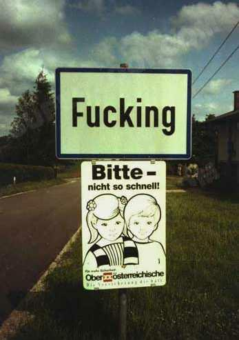
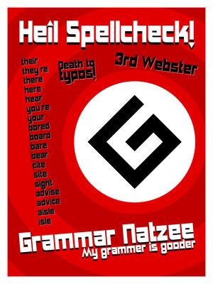

#184116 55 2006-06-03T19:05:49Z epigone Here is my entry.
Haunted Hollow
BTW this is my first post on Metanet, but I've been a NUMA member for a while.
#184669 1786 2006-06-04T20:32:14Z epigone Rated lord_day's
Shiver.
Could I have my map
Climbing Algorithm rated?
It needs 2 votes! Currently a four!
#184697 1788 2006-06-04T21:20:35Z epigone Rated Cerberus' map.
Please rate
Confluent Adversaries.
It needs two votes, currently a 4.5/5!
#185191 66 2006-06-05T21:19:06Z epigone My second entry:
Rams Head
Good luck to everyone! (we need it, especially after I saw monopole's map!)
#185201 3 2006-06-05T21:54:20Z epigone It's really quite unnecessary to post the map code like you seem to enjoy to do so much. Put in a simple link to NUMA, or at least a link to a text file.
#185203 32 2006-06-05T21:56:17Z epigone I can't for the life of me beat Bricklayer.. I think its 83-3? Other than that I'm all finished!
#185204 16 2006-06-05T21:59:16Z epigone It ought to be changed so you have to comment if you rate, maybe then people would rate more fairly. Or maybe not.
BTW i said i usually vote too high. I wish people would do the same for me...

#185205 47 2006-06-05T22:01:14Z epigone I tend to make races, so it was between mines and rockets for me. In the end i voted mines.
#185238 69 2006-06-06T00:01:45Z epigone Third and final entry into the comp.
Dymensia Descent#185244 3 2006-06-06T00:38:05Z epigone The shaking thing didn't work for me.
#9315 1 2006-06-07T19:53:28Z epigone What are the NaN's to make the various drones not move?
Specifically the laser drone, as I'm trying to make it in a level but I don't want to just use the trap door bug.
This has probably already been posted but my search netted zero results... so... Please Help!
#185942 3 2006-06-07T20:05:25Z epigone Thanks Zacko, I've always wondered how that was done.
#187913 1815 2006-06-11T19:05:17Z epigone Rated both of Gansters maps...
Can I have
Which Way? and
Rams Head rated please?
Which Way? needs one vote and Rams Head still needs 5!
#188060 1820 2006-06-11T22:54:33Z epigone Rated Buddy Lee and Uncommon's maps.
Keep up the good work guys!
#188136 1824 2006-06-12T01:05:57Z epigone Rated Stringent. 4/5 Liked the faces.
BTW Buddy Lee,
Thanks for the suggestion, I don't think I will change my map now, but in the future I will know how to use NaN's to my advantage!
#188663 1831 2006-06-12T23:10:04Z epigone Rated Qix's.
Need a couple of votes for this tough, but rewarding race.
Take Flight#188682 1833 2006-06-12T23:29:31Z epigone I rated all four of Uncommonturnips above mentioned maps.
Can I have
Industry rated?
It needs just one vote now!
Warning: This is very tough. Do not rate it down just because you can't beat it.
#188719 136 2006-06-13T00:21:57Z epigone He meant that every judge should have judged every map (right?).
That would have taken a long time.
Congrats to the winners.
Not to be nitpicky, but i think my map
Rams Head deserved a slightly higher nature score. Not that it really matters. Just me feeling sad i didn't do better.
Anyway congrats again, those were some amazing maps!
#189042 8 2006-06-13T21:40:29Z epigone Count me in!
I've already started making my tileset, its quite...interesting...to say the least!
I look forward to seeing everyones submissions!
#189078 15 2006-06-13T22:43:16Z epigone Here is my first entry...
Howling Jellywolf!
If you couldn't guess from the title, it's a howling wolf and jellyfish hybrid. Looks pretty cool I think.
#189625 145 2006-06-14T23:28:58Z epigone Hey Zacko,
it would be cool if you could post a final standings.
#193250 1886 2006-06-22T22:13:36Z epigone Rated
Up In The Stratosphere.
I need just one more vote on
Not All Frogs Are Green.
Currently a four out of five, with two giving it a five and fav'ing it.
#193366 1891 2006-06-23T01:48:56Z epigone RATED
rush and musheenary (sp?) and tower of the night, the latter of which i am really quite fond of.
#193590 37 2006-06-23T18:11:48Z epigone My second and final entry to the comp.
Monkster
This is a monkey-lobster hybrid.
Head, tail, and legs of a monkey and the claws of a lobster.
#9683 1 2006-06-24T21:08:25Z epigone I think it would be cool if you could see who rated your maps, and what they gave them. This could possibly help deter snipers, unless they just don't care, plus I just think it would be cool. However, it invades privacy, so maybe an option to have anynomous voting could also be instilled.
What do you all think?
#195511 1913 2006-06-27T22:23:06Z epigone Rated uneven platform. 4/5.
Asian, if you are refering to
not all frogs are green, it's because it was a ded to
frogs who has unique maps.
Also, can i get
Tastes Like Plague and
Howling Jellywolf rated please?
P.S.
Howling Jellywolf is my avatar.
#196350 38 2006-06-29T16:52:06Z epigone Has this contest died?
#196369 1921 2006-06-29T17:52:15Z epigone Rated electronic requiem, khatmandu, and a shot in the dark.
I liked a shot in the dark best out of the bunch, it was simple and fun. gave it a 4.5/5
Howling Jellywolf still needs
just one vote.
Mostly I want
Tastes Like Plague rated. Still needs
just one votes.
Feel free to look at the rest of maps, I always like constructive criticism so i can get better.
#197694 1930 2006-07-02T01:42:45Z epigone Rated Logica, which I gave a 4.5/5.
I need
one more vote for
Tastes Like Plague and
Howling Jellywolf.
#198502 1941 2006-07-03T23:51:46Z epigone rated khatmandu. rated on the front line.
would like
http://numa.notdot.net/map/50040 rated.
constructive criticism too please.
#198572 1944 2006-07-04T02:48:58Z epigone rated electricity for life. 4/5
see my above posted map. need 3 rates
#199242 1948 2006-07-05T16:58:59Z epigone I rated all three of Lord Day's and yahoozy's.
If it's not too much trouble, I need three more ratings on this.
Prickle#199343 1954 2006-07-05T22:32:48Z epigone Rated Cheese's, Twistkills, and Tempus Fugit's.
Probably will go ahead and rate the rest on the page.
Still need two more votes for
Prickle.
And while your at it...
Valkyrie Missile could use a vote or two.
*Edit* I went ahead and rate the rest of the maps on the page. Yeah, I'm bored.
#199627 1973 2006-07-06T18:30:54Z epigone Rated
But Officer, I Was Only Going One Way!
Gave it a 5. Cool use of the one way glitch.
Please rate
Here I Dreamt I Was An Architect.
#199630 14 2006-07-06T18:46:55Z epigone Any of Higgi's.
For example
Curve#199633 28 2006-07-06T18:50:29Z epigone Face it: sniping is here to stay.
Forcing comments on low rates will only result in thoes people who rated low geting sniped in revenge. Not forcing allows free and easy sniping. It's a vicious cycle and its here to stay. The best way to counter sniping (I think...) is to rate as many good maps as you can so hopefully the snipe votes become irrelevant.
#199775 1981 2006-07-07T02:18:40Z epigone Rated incorrectly portrayed a 4.5/5. Going for the gold was tempting and fun.
Rated sky below, heaven above a 4.5 also. I seem to be in the launch pad mood today.
Need two more votes for both
Here I dreamt I was an Architect and
Cavern of Lost Hope.#200070 1987 2006-07-07T20:26:17Z epigone Rated Yahoozey's and all of jiggerjaws.
This map wants YOU to rate it!
#200145 1991 2006-07-08T00:47:20Z epigone rated lame's and qix's.
Here is a coulple of old maps that never really got much attention.
Spherical Musings: super tough jumper puzzle.
Rams Head: Not as tough jumper. (complete with a cool tileset).
#200151 28 2006-07-08T01:14:36Z epigone My best guess... after N 1.5 there will be no more.
#200154 25 2006-07-08T01:16:29Z epigone I'm a big fan of my shift key. The left one to be exact.
#200158 33 2006-07-08T01:19:18Z epigone I'm a big fan of
Map 3: Mandate of Hell. The tileset is brilliant and of course the gameplay is top notch as well.
#200170 94 2006-07-08T01:39:05Z epigone My two current favorites are
frogs and
Tempus_Fugit.
While Tempus_Fugit may soon not be underrated (as of writing this he is #1 on NUMA), frogs definitly is. He makes great race maps; if you're into that style of level check his maps out. He has a couple of decent action's too.
#200825 2007 2006-07-10T03:01:55Z epigone rated the above two.
Rate these and there will be a rainbow over your house.
somewhere between
Sub Terra of the Urban Jungle
Above the Fields of Malice
*edit* I realize I can't back up the rainbow thing, but please rate the maps anyway.
#201057 2012 2006-07-10T20:47:26Z epigone rated the five maps in between my posts.
I need one more for
Sub Terra of the Urban Jungle.
Also, as many as I can get for
These Lips Were Made For Biting which was attacked by NOXUS and is thus suffering a lower rating than it deserves.
#201079 7 2006-07-10T21:23:12Z epigone my fav is definitly Flipside Sweetheart.
#201082 5 2006-07-10T21:24:44Z epigone Knots, Snags, and Entaglements is great! So unique, quick, and just plain fun.
#201087 5 2006-07-10T21:32:49Z epigone Great maps! Loved all of them, I voted for you for the best maps of the set.
#201804 3 2006-07-12T19:08:31Z epigone I agree with Rocket_Thumped.
Underdog and Manana were fantastic, my two fav's out of your set.
I am a God is friggen crazy! No way I could ever beat it.
#201841 11 2006-07-12T20:38:52Z epigone After much deliberation, it seems McP3000 has come up with the only logical answer. We must ban all people with ratings under 3!
#201857 103 2006-07-12T21:37:19Z epigone My kill count = 22,393.
Most, by far, are mines with 7037. The next being drones with 3240 and rockets with 3085.
The least? Chainguns with 522 and lasers with 875.
Hmm, intersting stuff.
#202172 2034 2006-07-13T15:16:12Z epigone Rated suicidal tendicies. gave it a 3.5
can i have
sunday morning rated please.
#202199 8 2006-07-13T16:30:22Z epigone Cool comics, looking forward to the next one.
*secretly hoping they don't have very crummy punchlines*
#202220 2036 2006-07-13T16:54:02Z epigone yep. rated sharc's.
can i get
this map rated?
#202231 2038 2006-07-13T17:29:52Z epigone rated yours legiax.
sorry but I'm not a big fan. 3.5/5
#202800 44 2006-07-14T22:39:06Z epigone I really hope more people would submit maps, but if we can't get any more, should we just end it and judge what we have? No need for prizes or anything if we end now, since there is hardly any entries, but it would still be neat to see how the maps scored.
#207427 2167 2006-07-26T17:35:41Z epigone Rated Zres' map and just keep rating.
I need two votes for this suprisingly well recieved
map.#207532 2176 2006-07-26T20:21:57Z epigone rated obby's 4 unrated front page maps.
Can I have these two rated pretty please?
http://numa.notdot.net/map/53229
http://numa.notdot.net/map/53221#207541 2179 2006-07-26T20:41:01Z epigone rated dejablues map a 4
solid but unoriginal.
rated asiangangsters a 4. Easy, but it looks like you put a lot of effort into it, and it was sorta fun.
#207560 2181 2006-07-26T21:10:59Z epigone oops you're right. rated now.
if you so badly want to rate a map rate these two
Entwined
Critter on the Run#207949 2196 2006-07-27T21:07:40Z epigone rated blue deja vu 8. gave it a 4.
need two votes on
Roxanne.
BTW, I'm doing a series of maps like that one, so feel free to check them out, they're quick, easy, and fun. Look for the signature titles, all have girls names.
#207986 2199 2006-07-27T22:11:19Z epigone rated jiggerjaws map. Deja, your's doesn't exist.
Can I have
Octavia rated?
And while you're at it, I still need one more for
Roxanne.
#209313 2226 2006-07-31T01:04:35Z epigone rated blue dejablue 13 a 4. tricky, requires good timing.
can i have
This Map rated please?
I need 3 ratings on it.
#209323 2228 2006-07-31T01:25:06Z epigone Rated roflcakes a 3.5
still need two votes on
my map.#209338 2231 2006-07-31T02:08:30Z epigone rated twistkills uber l33t m4p. givezed itz a fourzorz.
uh, yeah, i need two rates for
this lovely map and three for this
strange map involving teleporters.#209343 2233 2006-07-31T02:28:52Z epigone eh, deja, thanks for commenting, but you forgot to actually rate it.
#209485 2238 2006-07-31T16:38:48Z epigone rated patsy's and zugbops.
I would like a few votes for
Unnecessary. It was rated a 4.5 then got sniped an is now a 3.5. Some of my other maps got sniped too.
ARG I hate snipers!
#210610 45 2006-08-02T21:13:29Z epigone Here's my first submission:
Splice
This probably won't win, it may not even get ranked well, but I wanted to see if I could use the tricky "4" tile to make a map, and this is the result.
#211016 52 2006-08-03T18:16:27Z epigone ok, here is entry numero 2.
Heat Wave
This one uses [8] tiles.
#211044 2285 2006-08-03T19:17:14Z epigone rated cannibals socks, cool map.
need this rated:
Kingdom Comes#211071 2287 2006-08-03T20:15:18Z epigone rated cerebres' map.
need this rate 3 times (at least)
http://numa.notdot.net/map/54330#211554 2302 2006-08-04T22:18:33Z epigone rated solarians map.
Here is a tileset that needs one more rating. Its a 4.5 right now.
Nightmare Tower#211580 2305 2006-08-04T22:50:23Z epigone rated Twistkills and both of Limers
This map got ignored, but I think its a really great map so please everyone rate it!
Tower of the Incubus#211585 2307 2006-08-04T23:01:02Z epigone #211592 2309 2006-08-04T23:11:10Z epigone ^yes I'm sure, did you actually rate mine?
#211859 2315 2006-08-05T18:05:18Z epigone rated the above 3 maps.
this map got sniped.
Tower of the Incubus
I think its much better than a 3.5
#211949 2318 2006-08-05T21:35:59Z epigone rated jakel's and a-cardi's.
votes for this please
Quadrant IV
Also if you want my previously posted map got sniped.
#212239 2336 2006-08-06T18:02:46Z epigone rated motocrosser jumper and shellface deception, 4's for both.
Want to raise the rating of these sniped maps:
Tower of the Incubus and
Quadrant IV.
#212266 10 2006-08-06T19:16:59Z epigone hmm, never knew that incomplete's didn't count.
Is this true?
#212267 40 2006-08-06T19:18:08Z epigone I have exactly zero maps bitesized...
Hmm, I wonder if sweep would consider giving me an account?
#212270 2343 2006-08-06T19:23:05Z epigone rated mine hunter a 3.5
#212273 76 2006-08-06T19:26:24Z epigone Well apparently the deadlines been pushed back, so here is one more map for the contest.
Tribunal
Good Luck All!
#212280 69 2006-08-06T19:32:55Z epigone awesome! we finally have some solid information about TNG or "robotology" as its now being dubbed. Looking forward to more info.
Keep it up Mare and Raigan.
#212313 2351 2006-08-06T20:36:33Z epigone rated above map a 4.
please rate this:
carrion#212315 12 2006-08-06T20:37:14Z epigone heading off to download now...
#212320 39 2006-08-06T20:42:58Z epigone Perhaps my all time favorite map I made is
Something Wicked That Way Goes. I worked long and hard on that and really loved the results.
BUT,
recently I made a map,
Tribunal, and I'm slowly falling in love with it.
Also, I love the tileset of the map in my avatar.
#212324 25 2006-08-06T20:47:53Z epigone Precipice is my first map on NUMA.
Swoopy Mines is my first map ever.
Find both below.
--------------------Attachment was deleted
#212394 58 2006-08-06T22:37:32Z epigone currently the top ten spots on episode 00 are hacked.
a_m_i_r_s
Vuteur
_ _ _ _ _ _ _ _ _ _
some that don't even have names
n
and some more without names
and finallly haxxer
#212751 2371 2006-08-07T17:49:43Z epigone rated neener neeener neeeeeeeeeeeeeener [4.5/5]
please rate this
Panama Isn't Safe in July.
#212756 20 2006-08-07T17:56:05Z epigone lets stop spamming the forum and get back on topic here people... unless you want this locked.
#212757 17 2006-08-07T17:57:06Z epigone cool a new pack! I have to go to the dentist, but when i get home I'm playing these.
#212880 2383 2006-08-07T21:07:45Z epigone rated deja's map a 4.5. 'twas fun
hopefully some people will rate
[this map]#212889 6 2006-08-07T21:15:33Z epigone i always wondered if that was possible,
so thanks 15_ for asking the noobie question instead of me

#213273 92 2006-08-08T20:03:46Z epigone Can we withdraw submissions?
If we can, I would like to withdraw splice, because it sucks.
#213274 21 2006-08-08T20:06:16Z epigone dejablue4 is the most influential for me because he (she?) always checks out my latest maps and usually rates and leaves good comments.
*edit
nemetacyst is pretty influential for me too.
#213278 23 2006-08-08T20:26:10Z epigone I couldn't help but notice that all of episode 6's titles had direct relevance in testpilots personal life
#213285 2415 2006-08-08T20:43:07Z epigone rated deja's map a 4/5
check out my siggy
l
l
l
\/
#213629 25 2006-08-09T18:48:41Z epigone i voted 2.
it seems when I make a map I have an original idea, but by the time I'm done I have something entirely different (sometimes).
I like to focus on making good tilesets too.
#213657 94 2006-08-09T20:17:13Z epigone if its not too late to enter maps I would like to enter
Der Geld please. Thank you.
#213660 2437 2006-08-09T20:20:34Z epigone rated and commented on spiker 5's map.
check my siggy.
*edit
100th post

#213671 2441 2006-08-09T21:03:00Z epigone rated dejablue above a 4.5. very cool map, check it out people.
I'd like a rate on sunday morning (see siggy)
#213784 18 2006-08-10T01:56:27Z epigone Everybody here was a noob at one point or another.
Being a noob and spamming crap on numa are different. Noobs are just starting, and hopefully have potential. What we need to do is eliminate the crap spamming. Maybe a two or three map limit, but what if good authors want to post more? I think a limit should be put on people with low ratings (3 or less?).
I repeat, everybody here was a noob at one point or another.
#213787 2456 2006-08-10T02:04:58Z epigone rated and commented on bs11 (aka ska)'s map Get There.
Really like it, fun, challenging, yet simple. 4.5/5.
Ok i need two votes on
Tor and one vote on
Sunday Morning.
also on a side note, I'd just like to thank dejablue for so actively participating in this thread, especially since he actually
comments on most of the maps he rates.
#213804 21 2006-08-10T02:43:08Z epigone so the moral of the story is...
nothing can be done about "the noobs taking over"
end of discussion.
ps. and like xdude pointed out, not all noobs suck, some are great from the start.
maybe they should take over.
#213827 1838 2006-08-10T03:37:00Z epigone jakel's siggy is sweet, I love the way the image blends and swirls around itself.
And of course, links to great mapmakers.
9/10
PS, my siggy sucks, don't even bother rating it unless you really want to.

#213828 118 2006-08-10T03:40:07Z epigone toothpicks, toenail clippers, plastic sporks, scimitars, and all the other things banned on airlines.
#213990 19 2006-08-10T15:48:10Z epigone I voted action, because the open-endedneess of them is fun to create.
But there is a pretty good feeling when you can create a awesome tileset and turn it into a great map, so tilesets are fun to make too.
#214000 18 2006-08-10T16:03:18Z epigone on average one-a-day.
some days are more, some days i don't make any (like recently).
#214086 2478 2006-08-10T20:23:04Z epigone rated limers map
I need control rated.
clicksy heres!#214406 2491 2006-08-11T17:08:34Z epigone rated cerberus' map a 4.5
I need some rates on
control.#214422 2494 2006-08-11T18:16:29Z epigone rated and commented on dejablues tricky map ^. 4.5 good challenge, too hard for me.
Need one more here#10591 1 2006-08-11T20:17:43Z epigone I got the tenth on 75-3!
I'm probably not supposed to post these kinds of things, but this is cool for me so I did. I won't post something dumb like this again. Unless I get a 0th. But I won't.
#214471 2499 2006-08-11T21:05:44Z epigone already rated cerberus' map. rated a couple of his unrated maps instead.
Rate This#214483 2504 2006-08-11T21:41:26Z epigone oops i already rated sharc's.
This is sharcs map again, not mine
http://numa.notdot.net/map/55163.
#214501 5 2006-08-11T22:26:19Z epigone ruthless...
#214593 2509 2006-08-12T02:23:31Z epigone rated Limer's
need uno more on this
map#215521 2548 2006-08-14T19:41:32Z epigone gave dejablues a 4.5
This map please#215532 2552 2006-08-14T20:28:19Z epigone rated a-cardi's a 4/5
rate
http://numa.notdot.net/map/55717 please and thank you (they're the magic words)
#215786 6 2006-08-15T18:06:00Z epigone thats a pretty nifty website loudogg.
#215787 12 2006-08-15T18:11:31Z epigone agrees with elioskades ^
#215806 2561 2006-08-15T19:09:57Z epigone rated cerberus and exafts.
need one more
http://numa.notdot.net/map/55717#215815 2563 2006-08-15T19:57:01Z epigone #216089 18 2006-08-16T17:32:47Z epigone definitly chain guns, especially when combined with any other enemy.
#216434 2590 2006-08-17T15:44:50Z epigone rated evils_.
this one got lots of comments and demos... but only one vote.
so please rate it!
http://numa.notdot.net/map/55940#216436 34 2006-08-17T15:55:01Z epigone I hardly ever give fives, only if the map makes my jaw drop and hit the floor. I always ask for constructive criticism on my maps, so it seems only fair to give it to others.
#216443 2592 2006-08-17T16:47:41Z epigone rated a-cardis a 4/5. Probably my fav of your maps so far.
http://numa.notdot.net/map/55940#216518 2601 2006-08-17T19:51:21Z epigone already rated all of the above, untill asians_gangsters maps. So i rated his.
mmm taste this
http://numa.notdot.net/map/56048#216530 7 2006-08-17T20:48:26Z epigone somebody called ANGERFIST has beaten shanni's run by two whole seconds, AND missed a gold!
anyone got opinions on this daring feat?
#216635 2607 2006-08-18T03:08:12Z epigone I already rated a-cardi's map. So rate his before mine. Then when you get a chance, rate this map
please.#216938 2614 2006-08-19T01:58:44Z epigone rated ^ a 4. It's similar to another one of your maps.
I would love 100 votes on
THIS but four more would be okay too I guess.
#216954 25 2006-08-19T02:36:01Z epigone ^ so does an apple. ah but I digress.
#217645 2623 2006-08-20T18:47:46Z epigone rated acardis map a 4.
I would love to have this map rated.
http://numa.notdot.net/map/56374#217649 15 2006-08-20T18:56:45Z epigone quite the impressive run L3X.
#217650 2625 2006-08-20T18:59:00Z epigone a-cardi... did you even bother playing my map or did you just give it a four so you could repost your own map in this thread?
I mean seriously, you posted two minutes after I did, there is no way you could have played my map enough to give it a fair rating....

#217754 2635 2006-08-21T00:58:33Z epigone rated and commented on dejablues map. 4/5.
Please allow me to draw your attention to this map
here.#217995 1250 2006-08-21T17:22:48Z epigone Very nifty, I'm liking the grungy styling. 8/10
#217996 4 2006-08-21T17:24:32Z epigone reading and posting in this topic
#217998 5 2006-08-21T17:31:54Z epigone Poop is not beautiful. Serial rapists and murderers are not beautiful. No, not everything is beautiful.
#217999 36 2006-08-21T17:36:23Z epigone QUOTE (TornadoTK @ August 20, 2006 09:40 am)
EDIT: Hm, and the Google search for "TornadoTK" gives me about 2,440 results. Woo!
Results 1 - 10 of about 3,710 for amomentlikethis.
Results 1 - 10 of about 21,500 for amlt
Results 1 - 10 of about 191,000 for epigone.

#218001 12 2006-08-21T17:39:10Z epigone Hey, are you still taking sig requests?
If so, I'd like one with a bluish-purplish coloring. I don't care about the design.
#218031 2 2006-08-21T18:13:47Z epigone Hey. Can you make me a sig (and avatar if you want) with a dark bluish-purplish color. Have my name be in it, probably offset with a lighter blue (or if you can think of something cooler do it). I don't care about the font, you pick something that looks good.
Thanks in advance,
epigone
#218049 2637 2006-08-21T19:02:39Z epigone rated octopus. 3.5/5.
Way too many rockets, but I really like the tileset a lot. I've tried to make one like that before but failed.
*Ahem*
http://numa.notdot.net/map/56492#218050 7 2006-08-21T19:03:56Z epigone I voted for the TS pack. It's just simple, fun, and lovable like a teddy bear.
#218502 7 2006-08-22T17:31:37Z epigone thanks for the sig and avatar jakel, they're awesome!
I just have one very nooby question, how do I get the banner into my sig?

#218504 29 2006-08-22T17:40:59Z epigone I'm a big fan of 95-2, it's just plain cool.
I also like 75-3 because my first highscore was on that level.
#218507 3 2006-08-22T17:46:23Z epigone should this be in the level packs section?
oh and I like most of the maps, pretty good stuff.
#218508 9 2006-08-22T18:02:34Z epigone thanks AV for the help.
edit
AV, how did you get that link to the siggy banner?
#218518 2 2006-08-22T18:41:45Z epigone Interesting music you have the Borealis. It's very ambient and it gives me a far away, spacy feeling. I think its quite relaxing as well.
#218821 3 2006-08-23T17:19:56Z epigone One thing I noticed about getting people to rate your maps is to make them have good tilesets and have them be visually appealing [sp?]. It seems people tend to play the maps that look the best in the thumbnail on the newest page.
#218843 1929 2006-08-23T18:32:56Z epigone I have a new siggy, what do you (person below me) think of it.
BWD, I've rated yours before, 8.5 I think. I like the grungy style and the sweet font.
#218933 5 2006-08-23T22:44:17Z epigone Watch the highscore runs. Now watch them again. Now try and imitate. This is how I did it. I was stuck on this level forever. Now I'm stuck on 85-4.
p.s. don't try and imitate sammage's run.
#218934 208 2006-08-23T22:45:04Z epigone 3 6 7
#218935 612 2006-08-23T22:46:41Z epigone 1690:0|35791394|35791394|35791394|35791394|35791394|48374306|24568354|17895697|17895697|17895697|35790848|35791394|35791394|35791394|36072994|35791394|35791394|35791394|35791394|35791394|107374190|89645602|89478485|89478485|89478485|89478485|89478485|89478485|1118485|0|0|0|0|0|35790848|35791394|35791394|35791394|35791394|40772130|91677218|89478485|17895701|0|0|0|35651584|35791394|35791394|35791394|35791394|35791394|35791394|35791394|107405858|107374182|107374182|107374182|36071014|35791394|35791394|35791394|35791394|35791394|107405858|81928806|89478485|89478485|89478485|89478485|89478485|341|0|0|0|0|0|0|0|0|35782656|35791394|35791394|35791394|35791394|107880994|107374182|107374182|107374182|40265318|35791394|35791394|35791394|35791394|35791394|35791394|35791394|35791394|107405858|115483238|89478484|18175317|17895697|17895697|17895697|17895697|89985297|89478485|89478485|89478485|17896789|89478493|17895697|35791360|35791394|35791394|35791394|35791394|35791394|35791394|35791394|35791394|35791394|35791394|0|0|0|17895680|17895697|17895697|17895697|89478609|89478485|89478485|1398101|0|0|0|35782656|17891330|17895697|17895697|17895697|17895697|17895697|17895697|17895697|17895697|17913181|107378129|107374182|107374182|107374182|107374182|107374182|35808870|35791394|35791394|35791394|35810850|89474158|5461|17895696|35651585|34|0|0|0|0|17895696|17895697|17895697|17895697|17895697|89478493|89478485|89478485|89478485|89478485|89478485|89478485|17895701|17895697|17895697|51450129|34|0|0|35790848|35791394|35791394|35791394|35791394|107880994|40265318|35791394|34|0|0|0|0|0|0|0|17891328|1118481|0|35791392|35791394|35791394|35791394|35791394|35791394|35791394|35791394|35791394|115483170|107374182|35791394|139810|0|35782656|35791394|35791394|35791394|35791394|237135470|89474150|89478485|89478485|1|0|0|35791360|35791394|35791394|35791394|8738|0|0|0
sorry, i didn't know that would happen.

#218937 1266 2006-08-23T22:48:02Z epigone meh, i don't know what powerstone is but it looks lame. probably some nickelodean crap. 5/10
#218939 64 2006-08-23T22:53:17Z epigone There's actually only one dimension, the other ones are frauds pulling your leg, and quite successfully I might add.
#218945 66 2006-08-23T23:14:49Z epigone Obby, stop being so sarcastic.
#218949 27 2006-08-23T23:23:35Z epigone the whole point of brushing your teeth is to remove the crap from your teeth so that the bacteria doesnt break 'em down. If you brush your teeth before each meal, you are maximizing the time the bacteria sits on your teeth. Henceforth, it is best to brush after your meals so the bacteria is washed out of your mouth and you are clean.
#218950 68 2006-08-23T23:24:39Z epigone [wit]that was my goal[wit/]
#218959 7 2006-08-24T00:01:06Z epigone Small and simple. I support. This is a good idea.
#219190 20 2006-08-24T15:10:02Z epigone Clearly everyone around here just does what he/she wants and has no respect for any forum rules.
*dances in soon to be closed topic*
#219200 8 2006-08-24T15:52:21Z epigone On all of those little puzzle map competitions, Razorstar always seems to make pretty sweet demo's.
#219233 2672 2006-08-24T18:24:41Z epigone rated adsters and mongooses.
please rate
http://numa.notdot.net/map/56886
thanks
#220555 2691 2006-08-27T16:23:47Z epigone rated ska's a 4.5/5. good use of laser drone.
This is a '5' after four votes. I need one more to make it public (and hopefully top rated).
Dramamine#220735 2693 2006-08-27T22:26:54Z epigone rated acardi's a 4.5/5.
T3H ()()B3R L1NK53Y5#221083 2704 2006-08-28T20:59:51Z epigone AMLT's map = 5
Limers map = 4
My map =
5!!!!#226940 165 2006-09-10T21:17:56Z epigone So, I havn't checked in here in a while, what's the status of this comp? Is it dead or what? Sorry to nag, but this comp had great potential and I would to see it just die on us.
#227412 2826 2006-09-12T00:25:39Z epigone rated mikey's DDA. I gave it a 4.5/5. While it was quite amazing to watch and it probably took quite a bit of effort, I subtracted -.5 because you can't play it. Sorry but I'm biased against DDA's. Don't worry, I didn't affect the overall rating.
Can I have my newest map,
Super Flu Us? rated? Thanks guys.
#227421 2828 2006-09-12T00:57:46Z epigone gave both of the above a 3.5/5.
Interesting idea Homestar. Too bad its flawed and a little bland.
Please more votes.#228143 2844 2006-09-13T19:52:18Z epigone rated above^
This was top rated, and all comments seem to be pretty positive, so it must have been sniped.
Maybe someone will like this a lot and help get it top rated again?
http://numa.notdot.net/map/59340#228150 2847 2006-09-13T20:25:31Z epigone rated garden of utopia a 4.5/5.
I've already rated Utah, so somebody else get vote for that before you vote for mine.
http://numa.notdot.net/map/59340#228151 2848 2006-09-13T20:25:50Z epigone rated garden of utopia a 4.5/5.
I've already rated Utah, so somebody else vote for that before you vote for mine.
http://numa.notdot.net/map/59340
oops sorry for the double post.

#229404 2868 2006-09-16T19:22:51Z epigone rated theadsters.
wow (drones)
http://numa.notdot.net/map/59895 please.
#229430 2870 2006-09-16T20:31:25Z epigone rated both of asian's a 4.
I liked the first one better though.
I need one more for this
map currently a 4.5/5
#229452 3 2006-09-16T21:50:54Z epigone Awesome job with the animation! one complaint: the sounds were a little screwy, but that wasn't that big a deal.
I'm looking forward to more.
#230025 169 2006-09-18T00:29:49Z epigone Hmm, I just noticed that all three of my maps scored a 42. Consistency eh?
Anyway, good job everyone especially yahoozy and frogs, who appear to have won.
#230496 2880 2006-09-19T00:50:49Z epigone rated above a 4.
I need one more on this rather unusual map.
http://numa.notdot.net/map/60229
P.S. This was inspired by iTunes visualizations.
#230505 37 2006-09-19T01:02:52Z epigone sorry to get off topic, or is it on topic? I don't know. Red white and blue tetris is another one.
#230510 33 2006-09-19T01:06:52Z epigone I'd like to do a few maps of this, if you'd have me. But I would only do a few, I don't have a ton of free time.
#230526 17 2006-09-19T01:17:46Z epigone I think this map pack is a metaphor for what NUMA is today. One or two good maps, but who cares to find them amongst all the crap.
Or maybe its one or two bad maps, amongst shining beacons of what all maps should be.
#230528 8 2006-09-19T01:18:45Z epigone @Shark, from God.
No.
#230562 173 2006-09-19T02:04:22Z epigone I know its asking a lot, but could somebody make a final standings ranking the entries first to last?
#230564 49 2006-09-19T02:06:43Z epigone I'd just like to point out that I first saw Within A Deep Forest here and have since gone on to beat it. It as an amazingly fun and good looking game. Too bad it doesn't have replay ability like N though.
#230565 70 2006-09-19T02:09:10Z epigone I think I have two maps that are bitesized, maybe three.
#231546 52 2006-09-21T19:10:59Z epigone Do the maps we make have to have some sort of overlap, i.e. shared tiles, of the maps around it?
#11349 1 2006-09-21T20:45:57Z epigone I was just wondering what everyone's favorite map is out of the Underworld Series.
Mine would have to be VI: Mole Patrol because I love races, and the tileset is phenomenal.
p.s. Is it just me or is this series slowly dieing out; there's hardly any hype for the levels anymore.
#232423 3 2006-09-23T15:47:48Z epigone Don't write me in yet, but if some good mapmakers sign up, I would probably consider joining this series.
#232991 12 2006-09-24T21:26:17Z epigone Sorry for the delay, I havn't been online in a while. Count me in for the series!
#236340 19 2006-10-02T16:12:27Z epigone Are we still doing this? Has this died? Or are we just waiting for the first map to be made?
#237254 23 2006-10-04T20:58:42Z epigone does korbachev know he is supposed to be second? I noticed that earlier in the postings that he is listed as a later map.
#237615 2958 2006-10-05T21:38:04Z epigone rated limers/
pleeze rate
http://numa.notdot.net/map/62261
thanks
#237656 2960 2006-10-06T00:04:16Z epigone rated above
rate this please and I'll like you. Try and make it public.
Wreck Tangle
HELP SNIPED
Les Deux Ballons#237702 19 2006-10-06T01:18:26Z epigone I usually use a name of a song, or whatever the map reminds me of.
Its fun to make witty titles too.
#237710 9 2006-10-06T01:35:21Z epigone Thats an intersting concept rocket.
Hmm, I guess we just have to be skeptical and find out things for ourselves. As they say, you never know if you don't go.
edit
@ MCP
how can you hate philosophy? It so interesting. I'm actually considering minoring in it (major in pyschology) next year.
#237712 16 2006-10-06T01:42:42Z epigone I don't consider myself racist or sexist, now with that said, I believe that people these days are way too worried about being politically correct. For example, Mentally handicapped people have been called so many different terms, its impossible to know what is the 'proper' term. Some people are blatantly racist or sexist, I'll give you that. But I think most people just have some inherent conception that everyone is and that leads us to all this politically correct bullsh!t. I tend to think most people at least mean well and arn't trying to be racist or sexist. Sometimes we slip up. It happens. No need to sue over it and create unecessary controversies that make my head hurt and my posts long. Relax people.
#237713 53 2006-10-06T01:44:06Z epigone love potion: nah.
sexually attracted to no end potion: heck yes!
#237903 13 2006-10-06T19:01:57Z epigone I said minor in it, not major.
At least I'd like to take some philosophy classes.
#237904 19 2006-10-06T19:02:57Z epigone I'm glad you agree.
#237905 32 2006-10-06T19:04:18Z epigone wulfgang, try and make the tileset look a little cleaner
#237906 2148 2006-10-06T19:05:41Z epigone Awesome, how do you make it change? Thats sweet.
10 10 10 10!
#238583 2972 2006-10-08T23:08:43Z epigone rated dejablues map 4.0
I need this rated
http://numa.notdot.net/map/62464#239318 2981 2006-10-10T20:38:00Z epigone #241045 2995 2006-10-14T17:44:54Z epigone #242061 3003 2006-10-16T19:16:14Z epigone #242643 3007 2006-10-17T23:39:59Z epigone rated 15's.
not bad, its a little low on substance but its a good start.
ok, I need this rated.
http://numa.notdot.net/map/63866#242679 3009 2006-10-18T00:42:16Z epigone RATE ABOVE FIRST
then if you want, rate mine,
http://numa.notdot.net/map/63877#242699 93 2006-10-18T01:10:41Z epigone there is no box. (be skeptical?)
#242703 24 2006-10-18T01:18:41Z epigone Very few people, if any, consider themselves racist or sexist, and fewer still would be willing to state it.
When I said that I don't consider myself racist/sexist, I ment that I don't prejudice or stereotype base on sex, gender, etc. Of course you might argue that I may still be racist/sexist because in my mind racism/sexism is different than what you believe it to be. Uh, for example, a racist person may truly beleive that blacks are dumber and therefore not think that calling black people dumb is racist. What I'm trying to say is I give everyone an equal chance and I don't pre-judge.
BTW, I'm (obviously) not banned and if what I said was spam, then the discussion about my banning in the haters topic was spam as well.
#242705 3011 2006-10-18T01:22:00Z epigone rated Maniak's a 4/5.
those jumps have to be damn near perfect.
I need two more votes for
http://numa.notdot.net/map/63877#242936 3022 2006-10-18T20:29:37Z epigone rated Jakel's a 4.
I would like two votes (at least) on this
http://numa.notdot.net/map/63843#243717 46 2006-10-20T18:45:55Z epigone so do we have someone doing map three or no?
*edit
this was post #200
#243727 70 2006-10-20T19:10:54Z epigone I think there's some people who know me and check my maps. I notice that maps that have been off the newest page sometimes have more votes. Also, I try to comment on most maps I rate, and I notice that the more I comment, the more comments I recieve.
I voted "no"
#244054 48 2006-10-21T17:31:07Z epigone I'll do it.
#244464 50 2006-10-22T16:57:46Z epigone ok I'll do number 4.
#244590 13 2006-10-22T21:28:05Z epigone I'm going to enter.
First Map:
Map 1463.#244610 3059 2006-10-22T21:53:31Z epigone rated please enjoy speed in moderation.
Please rate this lots of times.#244626 3062 2006-10-22T22:09:02Z epigone rated deja's a 4.5/5
do me.#244627 19 2006-10-22T22:10:49Z epigone I think I'll enter this comp.
Can we use one-ways, bounceblocks, bounce pads, etc.?
#11887 1 2006-10-22T22:56:05Z epigone I'd like to point out that according to the birthday thing at the bottom of the homepage, blahstickman turns 99 today. I'd like to congradulate him/her for his/her incredible longetivity.
#244719 17 2006-10-22T23:43:49Z epigone note
pad
.
#245024 3072 2006-10-23T19:18:49Z epigone rated limer's a 4. spectral sorceress I mean.
yo rate it up ya heard?
http://numa.notdot.net/map/64536#245550 3085 2006-10-24T22:51:56Z epigone rated above^
Please, I need 4 more votes still on this.
http://numa.notdot.net/map/64852#245886 3091 2006-10-25T23:49:57Z epigone rated both of alexx's.
This got completly ignored. It took a long time to make. Please rate it so it can be public.
http://numa.notdot.net/map/65026#245889 18 2006-10-26T00:01:02Z epigone *reads 15's comment
*sighs
#245891 1123 2006-10-26T00:07:59Z epigone ^banned just because
#246169 3097 2006-10-26T22:00:00Z epigone rated above
please i need 4 more still, this got ignored.
http://numa.notdot.net/map/65026#246223 34 2006-10-26T23:24:32Z epigone Here's an entry, it's an old map of mind. It was well received by the public, let's see how it holds up to scrupulous judging.
Tor#246234 24 2006-10-26T23:42:27Z epigone It would have to be a split-second decision (I'm assuming this, but I'm probably right). Being that it's a split-second decision I think that if I saw my son (or loved one) in imminent peril, I would instinctively do whatever I could to save him/her. There would be no time to sit and contemplate morality and the lives of people in the train. Afterwords, I would feel awful about the train, as I'm sure would the person I just saved, but as I once heard, hindsight is 20-20.
#246236 7 2006-10-26T23:43:41Z epigone I got bored one day and started it. But seriously, it'd be impossible to say who started it.
#246244 3099 2006-10-27T00:07:32Z epigone rated scythes a 4/5
please people, I really like this and want it rated.
Brave New World#246246 12 2006-10-27T00:10:36Z epigone ****!
#246247 34 2006-10-27T00:12:37Z epigone fat adds flavor, so I'm going with the butt, boobs, or stomach region (if its a fat person).
#246513 3104 2006-10-27T19:15:10Z epigone rated limers. it was ugly but played alright.
one more vote for
this map.#247043 34 2006-10-28T19:08:55Z epigone methinks that this sounds like fun. I'm going to make a map or two.
#247044 12 2006-10-28T19:12:03Z epigone I'd like to join Midwind. Please.
#247504 53 2006-10-29T17:37:30Z epigone OK, I'll do number three. It may take some time (I'll try and make a high quality race) but I'll try and get it done today.
#247519 3110 2006-10-29T18:19:40Z epigone rated qlexx's a 4/5
one more for this
brave new world.
I've been trying for ages to get this ranked.
#11994 1 2006-10-29T19:06:43Z epigone Look here...
It's a slow part of the day, and while still on top of the newest list, this map gets 5 votes really quickly, in fact 4 people posted within 5 minutes, each praising this less than spectacular map.
Maybe I'm just overly curious, but something smells fishy.
#247538 3112 2006-10-29T19:16:48Z epigone sharc, you never rated mine.
#247612 3114 2006-10-29T21:26:51Z epigone #247643 54 2006-10-29T22:17:33Z epigone Ladies and Gentlemen, I do humbly present, with the utmost pride:
Sublimation!.
Let's hope that this hasn't died and we can keep the series alive!
#247648 6 2006-10-29T22:39:25Z epigone I love the idea of finding your own shortcuts and marking them. Good game concept.
#248012 37 2006-10-30T22:09:31Z epigone Here's another entry.
For What It's Worth#248014 25 2006-10-30T22:14:18Z epigone I'd recommend that you talk to your school's guidence counselor, he/she ought to be rather helpful.
#248017 5 2006-10-30T22:16:32Z epigone this doesn't work at all. One, for the reason AMLT showed, some maps need to be zero'd. Also, snipers could give two zero's then a .5, then two zero's, etc.
#248174 3121 2006-10-31T01:04:28Z epigone rated 29403's.
this got ignored. That seems to happen often....
bla#249263 35 2006-11-02T23:36:06Z epigone I didn't dress up.
I'm almost 18, what do you expect? Plus, Halloween was my one-year anniversary with my girlfriend.
#249347 3134 2006-11-03T02:09:29Z epigone #252356 44 2006-11-10T01:21:05Z epigone I sent the data to solarion.. I don't know if he got it or where it is now.
#254192 54 2006-11-13T21:28:40Z epigone When is the deadline for submissions and when does judging start/end?
#12261 1 2006-11-14T01:08:27Z epigone You all should try this, its really quite fun.
Line Rider
Basically, you draw lines on the screen and make your little sledding dude go on the course you draw. It's very simple, yet very fun, and addicitive. There is a downloadable version too, just search for it if you want it. YouTube has some great video's of courses people have made.
#254761 59 2006-11-15T00:25:36Z epigone Here is my second (i think) entry,
Virtue 2.
Enjoy.
#254771 16 2006-11-15T00:39:34Z epigone Infact I rarely go below 3.
Some maps are just awful. There is no point in trying to rate up a map that sucks. Sure you might say just ignore the maps that aren't any good, but then those mapmakers may never realizing they are just making crap. Plus, I've rated 3 or lower on some of the 'better' mapmaker's maps if they deserve it.
Rating low does not mean sniping, sometimes it means rating fairly.
#254797 10 2006-11-15T01:13:28Z epigone iangb brings up a good point, there is a difference in sounds. As to why we use 'ph' in phooey and not 'f', there is probably no set reason. Why are any words spelled the way they are? Whoever came up with the word spelled it that way, and wanted the 'ph' sound, not the 'f' sound.
#254838 3210 2006-11-15T01:58:18Z epigone Rated Jakel's. 4.5/5 and demoed.
Here's a fun and simple one for ya kids.
Virtue 2#255216 3217 2006-11-15T23:31:26Z epigone rated above 4. meant to rate it a 4.
Here's some candy kids.#255257 37 2006-11-16T00:37:09Z epigone nice levels darkmario. One small problem, don't double post. Eventually someone will get pissed at you and report it and that won't be good. If you want to say something again, just edit your first post. Thanks!
#255323 21 2006-11-16T02:28:21Z epigone ban. It's one thing to snipe. It's another thing to openly admit to sniping and then laught at you about it. Frankly, its getting old.
#255722 47 2006-11-17T00:19:30Z epigone I'm pretty sure that my maps are featured in anyone's siggy. Thecalcgenius quoted me once, I don't know if that is still in his sig or not though.
#255726 63 2006-11-17T00:24:43Z epigone speaking of yarg,
how's the midwind map coming? I'm anxious to see how it turned out!
#256133 3226 2006-11-17T21:35:26Z epigone rated r_t's. ^
please rock the vote here
______.
#256152 7 2006-11-17T22:07:51Z epigone only the cream of the crop get an account
Not true, I have an account.
#256154 61 2006-11-17T22:09:58Z epigone don't you mean aren't or someone's
I meant arn't.
#256155 62 2006-11-17T22:11:07Z epigone I'm pretty sure that my maps are featured in anyone's siggy. Thecalcgenius quoted me once, I don't know if that is still in his sig or not though.
don't you mean aren't or someone's
I meant arn't.
*oops sorry for the double post. accident I swear, i thought I clicked edit. (hides head in shame of making noobish mistake)
#256163 67 2006-11-17T22:34:45Z epigone Sweet! I love the way our map turned out.
Actually, all the maps are great so far! This was pretty fun, are we going to make more maps?
#257036 83 2006-11-19T21:01:35Z epigone Can I take slot 2 of Distra please?
#257041 61 2006-11-19T21:05:48Z epigone that's a pretty good one wulfgang. Not much editing could really be done.
#257633 3237 2006-11-21T02:23:39Z epigone #258293 3241 2006-11-22T22:24:18Z epigone #258705 16 2006-11-24T00:28:19Z epigone Hey, that's a cool, and original idea. I'm curious to see how this turns out.
I may even participate. We'll see.
#258717 3245 2006-11-24T01:04:27Z epigone Gave wulf's a 4/5. Personally, I like the orignal better.
http://numa.notdot.net/map/69156 please. 3 times.
#259087 3250 2006-11-24T22:51:11Z epigone Rated: run away from the zap drones: 3.5/5
please
http://numa.notdot.net/map/69416 thank you.
#259539 3254 2006-11-25T16:50:29Z epigone #259541 7 2006-11-25T16:56:45Z epigone No, its population control.
#259657 34 2006-11-25T21:52:54Z epigone this is like asking me to pick between hot dogs and pizza... except its one-ways and bounceblocks... ive seen one-ways used ingeniusly (especially by lord_day) but bounceblocks are just more fun to play with since there are so many different jumps possible with it (i.e. double jumps, triple jumps, double and triple-side jumps, reverse jump)
I agree almost word-for-word. Except I don't like hot dogs.
I voted for bounce blocks.
#260065 3258 2006-11-26T22:22:32Z epigone The above gets a 4.5/5.
Hopefully so will this
http://numa.notdot.net/map/69547.
#260092 3260 2006-11-26T23:12:35Z epigone #260645 3266 2006-11-27T21:30:01Z epigone Rated all three of the above.
I really like this one, but it got sniped.
http://numa.notdot.net/map/69834
I think this deserves better than a 3.5.
http://numa.notdot.net/map/69547#260651 3268 2006-11-27T21:41:35Z epigone #260749 3270 2006-11-28T00:09:05Z epigone mc_georges got a 5 and a crappy demo.
see my above post^.
#261826 36 2006-11-30T00:46:29Z epigone Here is an English Sonnet that I actually wrote today for a school assignment. It hasn't even beed turned in yet.
Wayward Traveler
The sky oppresses all thoughts of freedom
That a wayward traveler may have had.
All of the gloomy dark clouds look so sad,
Pained, wondering how soon he will succumb
To the foreboding forces of darkness
That all wayward travelers try to hide.
The murky night sky gives no moonlight guide
To stop helpless souls from drifting amiss.
It is certain in the dark you will stray,
Unless a saving beam of light breaks through.
Softly, the friendless raven starts to coo,
The sun shines through the clouds and leads the way.
Even amidst terrible plight, have hope,
You will always have the courage to cope.
#261829 93 2006-11-30T01:03:46Z epigone My most recent amount: 3 or 4. (not sure which.)
#262220 3276 2006-11-30T20:42:43Z epigone rated^ yeah... not my favorite.
Anyway, here is a tricky little level (needs TWO)]
http://numa.notdot.net/map/70094#262227 3278 2006-11-30T21:01:11Z epigone The above, 4.5/5.
I need one more vote for my map
http://numa.notdot.net/map/70094#262731 24 2006-12-01T20:51:02Z epigone I would like my avatar to be posted in PNIs collage
#262733 123 2006-12-01T20:55:46Z epigone I'm not sure if this is allowed, but...
Can I get a avatar only?
If so, something along the lines of what my siggy banner already is.
An image that could maybe be incorporated is here:
http://www.carsonellis.com/images/flyers%2...her-majesty.jpg
Thanks, if yes.
No worries, if no.
#262737 67 2006-12-01T20:59:45Z epigone Try and get someone else first, if not, p.m. me and I'll do it.
edit*
by someone else, i mean let's see if anyone who hasn't made a map yet wants to do one.
#262739 9 2006-12-01T21:02:03Z epigone because no one likes myspace. thats why.
#263439 3297 2006-12-02T21:59:48Z epigone Rated the above a 4.5/5. T'was sexy.
http://numa.notdot.net/map/69834#263457 23 2006-12-02T22:27:31Z epigone that is an incredibly good job. The car looks sweet.
#263942 102 2006-12-03T21:37:25Z epigone PM people. I enjoy this, I don't want to see it shut down.
#263999 3312 2006-12-03T23:23:11Z epigone #264512 50 2006-12-04T21:05:08Z epigone voted.
Good luck to all nominees.
My City Skyline [Mk.III] stands no chance against Afternoondragon =[[
You'll get at least one vote. (me)
#264649 3323 2006-12-05T01:13:25Z epigone rated both of Limer's.
Hmm,
http://numa.notdot.net/browse?sort=created...&author=epigone
Please rate as many as you can/want to. Thanks.
#265133 3327 2006-12-05T23:43:54Z epigone #265158 779 2006-12-06T00:11:10Z epigone 16?
*Edit
checked your birthday, says you were born last year.
Is amazed at how smart you are, you arn't even 2 years old yet.
#265165 34 2006-12-06T00:15:14Z epigone uno, meh what do you want out of me, at least I didn't lie.
#265189 17 2006-12-06T00:38:15Z epigone This is very useful as my school blocks pretty much every site it can, sometimes including sites that are needed for actual school projects.
#265605 329 2006-12-06T20:54:55Z epigone 1001
#265606 52 2006-12-06T21:00:03Z epigone This was one of the best bond movies.
One major problem:
This is supposed to be a prequel to all of the other Bond movies, yet chronologically, it happens after. For instance, a reference to 9/11 is made and the technology is very advanced, back in Dr. No times there was no 9/11, there was the cold war, and they for sure didn't have defibrillator's in their cars.
I know Bond is supposed to be timeless, how could he be the same age (roughly) over 40 years of movies otherwise, but I would have enjoyed this movie more if they had tried a little to have it set in the early 60's.
#265759 175 2006-12-07T01:03:09Z epigone They don't have enough ingredients to fill them in. Damn swiss and their holy cheese!
What?
#265787 41 2006-12-07T01:40:25Z epigone ponies can't provide free energy
enough said right there my friends.
Down with dumb little ponies!
Hooray big scary dragons!
(and cute cuddly ones too)
#267045 10 2006-12-09T15:36:02Z epigone The tags and difficulty idea are both simple and would make NUMA more enjoyable, methinks. I also LOVE the check and stars system, that is the best idea for renovating NUMA that I have ever heard.
#267062 109 2006-12-09T16:02:26Z epigone Fun map. I'm looking forward to the rest.
#267656 9 2006-12-10T16:09:15Z epigone I'm glad to see that some positive changes are finally starting to happen on numa. I especially like the tileset category.
#268416 33 2006-12-11T23:19:39Z epigone #268431 3370 2006-12-11T23:55:31Z epigone Rated above.
Please rate
Over The Big Scary Mountain (of Doom)
needs three more.
#269082 24 2006-12-12T23:26:55Z epigone I knew it was going to be a level pack.
Quote
It's just happening too often now.
Yeah guys, could we stop making levels and get back to arguing about religion? Either that, or venting about relationship troubles. Honestly, folks.
Meh, what's this forum about again?

I'll download this pack as soon as I get some spare time, and I'm looking forward to the additional goodies you guys are throwing at us in the future.
#269122 804 2006-12-13T01:00:27Z epigone 12
#269124 24 2006-12-13T01:04:41Z epigone when in doubt, pull it out.
er... dump that ho!
#269141 3377 2006-12-13T01:23:42Z epigone #269143 165 2006-12-13T01:25:21Z epigone Will somebody please make me an
avatar only to match my lovely, albeit large, siggy banner.
Here is an image that may possibly help in this endeavor.#269145 47 2006-12-13T01:28:27Z epigone If I lost my winky, I could devote more time to N.
Funny. But sick: if winky is gone, will to live follows.
#269156 7 2006-12-13T01:48:21Z epigone I vote nothing.
In game reason: these would all be unfeasable, ridiculous, too difficulty, and dumb.
Real life: I use my concentrated brute force to decimate all living beings which oppose me, so I really don't need homing turrets or other of their ilk.
#269567 13 2006-12-13T22:17:30Z epigone Here's one for you: The name of an attractive and well put-together behind,
callipygous
#270157 25 2006-12-14T22:19:03Z epigone Does that by chance say "Blow Me"?
#271497 5 2006-12-16T21:29:44Z epigone I would have never thought of someone like you to be a multi accounter
But I respect people that can own up to their mistakes.
What you did is shitty, but there's no point crying over the past. It's time to move on and start over fresh. I'm glad you came forward and confessed, and I look forward to still enjoying the maps you make.
#273112 107 2006-12-18T22:50:31Z epigone I want to wipe the slate clean. I want to reset all the voting on NUMA, removing every vote from the system. No exceptions. See it as a detox. Washing all the crap out of the system. Starting again.
Sorry, but even though several well-respected members of the community were caught/confessed multi-accounting and voter fraud, it is not fair to the rest of the community, which I hope is the majority, that has not multi-accounted.
Every single map that has seen the top rated page very probably has some kind of suspicious activity in its records.
I hope you honestly do not beleive that. I'm sorry for you if you do. I've had quite a few top rated maps, as have many other members of the community who have never multi-accounted and would never consider it. I do agree that too much emphasis is placed on rating. I liked your idea's of the golden stars and the furthur integration of bitesizeNUMA with regular NUMA to help find great maps. But I think that even with that there is a problem. Many times great maps are overlooked because the author is unknown. I fear that if the gold star system, your 'detox' idea, or any other radical new rating system is founded, that the people who are well known will benifit, and the rest will continue to exist in perpetual mediocrity.
I hope somebody reads and considers what I have said, I think that it is important to the future of our community, and to N players everywhere.
#273196 9 2006-12-19T01:37:27Z epigone votes yes. I like the ratio, it's a neat little easter egg.
#273200 112 2006-12-19T01:40:10Z epigone ...you've mis-interpreted what I'm saying. I'm not claiming that maps that get on top rated are only there because people rate up their own maps, I'm primarily saying that they are all sniped as a result of being on the top rated page.
Maps being overlooked because an author is unknown is irrelevant. The old ratings will still be viewable. Wiping the slate clean does not mean that only well-known authors would benefit.
touch
#273203 43 2006-12-19T01:46:23Z epigone 0-10, certainly. Erring towards zero.
'Twas what I was thinking.
#273208 108 2006-12-19T01:50:40Z epigone @max_ride.
stop double posting.
#273217 3414 2006-12-19T01:59:29Z epigone #273538 120 2006-12-19T20:44:53Z epigone I'm thinking a simple IP-rejection would work
I agree with kablizzy. I don't know much about how the system works, but if a restriction was set up so that a single IP could only have one account, with the exception of special occasions (collab groups for example) cleared by Sweep/Maestro, then multi-accounting would be eliminated.
#273557 10 2006-12-19T21:08:03Z epigone Anybody around here that doesn't multi-account?
Anyway, thanks for being honest, I hope the rest follow suit.
#273559 39 2006-12-19T21:09:17Z epigone 99 out of 130, or roughly 76%.
#273578 7 2006-12-19T21:36:46Z epigone *cough* free speech *cough*
now that I've said that, this is wrong and in no way shape or form should it be allowed on NUMA. Hopefully the admins ignore our lovely first admendment and ban him. Not for racism, but for language. He has a right to be racist, agree with him or not.
[no I do not condone racist behavior]
#273591 53 2006-12-19T21:59:31Z epigone It's not the end of the world, but it is slightly more satisfying to see a map get rated really well rather than have it rated really poorly.
#273717 27 2006-12-20T03:05:51Z epigone So I went back and looked at my early posts, turns out I never really made any nooby comments. Coolness dude! So 733T!!one!1!!
http://metanet.2.forumer.com/index.php?sho...30&#entry186313#275484 8 2006-12-23T02:53:40Z epigone eastern standard time (america not australia)
#277482 63 2006-12-26T21:39:38Z epigone From Notre Dame, I got an acceptance letter.
#278017 3 2006-12-28T18:30:37Z epigone i voted:
#278065 35 2006-12-28T21:29:42Z epigone MidnightGetaway
A.K.A. lord_day and cooby.
#278068 29 2006-12-28T21:32:35Z epigone Good idea for a new thread.
Here is one from me, rated/commented on the three from 29403.
http://numa.notdot.net/map/73735#278888 38 2006-12-30T17:55:31Z epigone I think there should be a rule, that for every map you post you have to comment/rate that same number of maps.
It's kind of ridiculous when some people are posting 3-4 maps. Maybe even just a one map per post limit could be used.
That said...
comment/rate on one of 29403's christmas floorguard special.
Please rate/comment on this map.
http://numa.notdot.net/map/70743#278889 3473 2006-12-30T17:56:17Z epigone Rated many a guass.
http://numa.notdot.net/map/70743 please. thanks.
#278904 25 2006-12-30T18:14:46Z epigone I voted for multi-accounting: it ruins the already sketchy rating process the most. Personal abuse is bad, but this is over the fricken internet and most of us don't know eachother. If you can't handle a pimply 12 year old saying mean things to you online, what will you do in the real world?
#278913 28 2006-12-30T18:34:43Z epigone Yarhgh!@ pirate!s.
actually, look up my name in dictionary.
#278924 62 2006-12-30T18:55:32Z epigone Pwnd by a wet towel that snapped at you.
#278925 3132 2006-12-30T18:56:27Z epigone simple. bold.
7.32/10
#278952 37 2006-12-30T19:47:10Z epigone My apologies.
#278961 5 2006-12-30T19:59:35Z epigone And kirby, when did i have 5 on the top rated!?
It's always the guilty one's that go fishing.
#278978 42 2006-12-30T20:20:42Z epigone rated/commented on: Stalactites (1.2/Original)
Please rate and comment on
Omaha.#278981 3475 2006-12-30T20:24:44Z epigone #279037 36 2006-12-30T21:38:29Z epigone moving along..
#279041 1777 2006-12-30T21:40:26Z epigone T'is ok. 6.8/10
#279347 11 2006-12-31T16:39:05Z epigone It's not so bad, considering he at least saved them and posted them here.
#279348 17 2006-12-31T16:40:30Z epigone yea, I play most of them. It's a good way to see some great maps, some I've already played, some I've never seen before. Plus, one of mine was a Sunday N map, so I enjoy them even more.
#279362 7 2006-12-31T17:10:08Z epigone Count on some maps from me.
#279371 54 2006-12-31T17:32:44Z epigone Quote
Thanks for an awesome game.
D*mn you for making it so addicting.
your right
Ditto.
#279386 48 2006-12-31T18:04:45Z epigone Commented on the above map. Very nice if I do say so myself.
please.
http://numa.notdot.net/map/74007.
#279475 42 2006-12-31T23:35:59Z epigone #279479 7 2006-12-31T23:55:21Z epigone meh.... harder than i thought.
#279688 22 2007-01-01T15:42:34Z epigone Great stuff! I look forward to playing the legacy expanse. Also, I think the makeover for the legacy webpage is a good idea too.
#279727 3487 2007-01-01T18:12:55Z epigone #279793 70 2007-01-01T20:53:00Z epigone nevermind
#279797 13 2007-01-01T21:00:23Z epigone not so much.... wait, does having people do it for me count?
#279800 24 2007-01-01T21:01:10Z epigone in a word: sproing.
#279807 31 2007-01-01T21:11:42Z epigone First of all: Superb pack. You did an awesome job.
Second: I'd suggest to take out the contest part. I've been playing for 8 hours now, just to realize that I won't finish today anyways and that Caero was done before I started. It just isn't fun if you're trying to go through each level as fast as possible. There were levels where you could just take the switch and screw all the additional gold. I didn't even LOOK at them
Third: I think you used too many drones. And tried too hard to make harder maps. Using too many drones.
I agree 100%.
#279810 62 2007-01-01T21:14:00Z epigone #280361 18 2007-01-02T23:29:46Z epigone I think I figured out the second level 1 riddle.
Do we need both to advance, or just one of the two?
#280366 28 2007-01-02T23:44:46Z epigone This looks like fun. I've never particapated in Nedcon before, so I think that this seems like a great time to start.
#280385 13 2007-01-03T00:20:09Z epigone #280424 1390 2007-01-03T01:29:45Z epigone banned for a creepy avatar.
#280787 23 2007-01-03T22:29:59Z epigone woo! round 3!
#280842 23 2007-01-04T00:13:41Z epigone Making levels is the best, but I certainly enjoy playing them too. However, I enjoy map-making more.
#280872 3505 2007-01-04T01:04:47Z epigone #280873 66 2007-01-04T01:06:38Z epigone #281206 87 2007-01-04T20:54:55Z epigone #281216 3174 2007-01-04T21:18:44Z epigone erotic useage of coiled membrane.
7 and one/two.
#281218 1787 2007-01-04T21:19:57Z epigone Intellectually inspiring. 9/10
#281219 805 2007-01-04T21:20:30Z epigone Stifles a sneeze.
#281221 14 2007-01-04T21:24:45Z epigone Wow, you guys serisously suck at map maker of the year. That List is so out of order
Yea really, I though I had it in the bag, and now this!
Congrats to all the winners and nominees.
#281232 32 2007-01-04T21:44:34Z epigone dumb topics.
#281236 10 2007-01-04T21:46:48Z epigone 420?
#13326 1 2007-01-04T22:09:24Z epigone I was wondering if anyone has read this book and wants to share their opinion or analysis of it. Also, if you know of any material about it (online, in print, etc.) it would be helpful.
You see, I have to write a twenty page research paper (my AP lit teacher is

) about Huxley,
Brave New World, and
Point Counter Point. Well, the first two items are easy enough, but the third is giving me some trouble.
Any help would be greatly appreciated.

#281284 25 2007-01-04T23:16:50Z epigone #281321 2 2007-01-05T00:36:40Z epigone what is the point of this?
#281323 1428 2007-01-05T00:41:48Z epigone Banned for no avatar.
#281324 29 2007-01-05T00:43:21Z epigone 11? I'm sure it has to be 11.
#281330 68 2007-01-05T00:58:35Z epigone voiced my opinion on Ununbium in a Box.
Voice your's here.#281337 3515 2007-01-05T01:01:59Z epigone rated... all five.... of.... the above.... catch... my breath..... too many... in one.... post.....
please rate:
http://numa.notdot.net/map/74313
and if you wish:
http://numa.notdot.net/map/70617#281619 2294 2007-01-05T21:11:35Z epigone Ok, but now your keyboard controls your whole computer and downloads viruses, bye bye hard drive!
I wish that I was a little less sexy (all this attention is stressful, I'm sure you understand.)
#282682 1451 2007-01-07T23:31:37Z epigone Banned for using non-black font
#282683 23 2007-01-07T23:34:49Z epigone I actually devote an entire lifetime to each and every one of my maps, though I've worked out how to manufacture a pocket dimension parallel to our timestream by causing a miniature big bang with some spare matter from my ashtray in which I spawn an alternate version of myself devoted with the lifelong task of creating, playtesting, and tweaking an N map.
quit smoking.... then you will finally have some half-decent maps you miserable piece of over-efforted swine.
#282691 11 2007-01-07T23:42:36Z epigone #282702 22 2007-01-07T23:54:55Z epigone Cool! Another multi-accounter.
Who's next? Come on down, multi-accountin sob, you're on the price is right!
#282704 18 2007-01-07T23:56:15Z epigone I suppose but I don't think anyone liked my maps.
I liked them. Especially your races.
#282706 13 2007-01-07T23:59:21Z epigone #282707 28 2007-01-08T00:00:49Z epigone Too many noobs who use caps lock and spam the world away.
You were a noob once too, ya' know.
There's no rule against 'noobs' and if there was, then the community would never grow.
#282708 1454 2007-01-08T00:01:52Z epigone Banned for having a useless spoiler in your siggy.
#282714 15 2007-01-08T00:05:49Z epigone http://numa.notdot.net/map/75143
^^ there's a stupid one if there ever was one.
@v3... you are spamming, not me. At least my posts are pertinent to the topic. Yours are not.
#282723 4 2007-01-08T00:26:14Z epigone Heh..
I only hope that your especially amazing avvy will bestow its blessings on me.
#282727 122 2007-01-08T00:28:40Z epigone I don't know what happened to our map.
I sent the data, from there, who knows what happened....
[post 350]
#282741 6 2007-01-08T00:44:09Z epigone Au Revoir!
#282791 1462 2007-01-08T02:25:34Z epigone Banned for multi-accounting.... duh.
#283031 157 2007-01-08T20:12:37Z epigone If you would be so kind, add a point to both The Decemberists' posted songs, The Soldiering Life and Here I Dreamt I Was an Architecht.
#283130 843 2007-01-08T22:13:57Z epigone 13
#283655 93 2007-01-09T23:41:48Z epigone Here is my second entry into round two.
http://numa.notdot.net/map/75420
By the way, you never put my first entry onto the submissions page.
#283661 861 2007-01-09T23:52:01Z epigone 13
Spoiler
I'm actually almost 18.
#283662 1057 2007-01-09T23:52:49Z epigone #283663 3220 2007-01-09T23:56:43Z epigone cool, reminds me of led zepellin for some reason.
8.6
#283666 61 2007-01-10T00:01:55Z epigone Not by me, but i want to put this here because it's so spectucular...
l(a
le
af
fa
ll
s)
one
l
iness
#283671 37 2007-01-10T00:18:58Z epigone yeehaw for the new "krusch" link
only the best of the best maps get to go in that folder...
#283700 238 2007-01-10T01:11:36Z epigone Meh, 4/10.
unless you are <13, then 5/10.
#283702 34 2007-01-10T01:13:31Z epigone Unbanned for this:

cuz it's cool.
#284472 613 2007-01-11T22:28:45Z epigone Good guy, you are very active, especially in the contests forum.
9/10.
#284480 16 2007-01-11T22:40:27Z epigone But honestly, I hate how retarded and ignorant some people are.
Here, here!
People these days, in general really are a bunch of retarted, ignorits dicks. One of the major problems is the american media. Those ignorant assholes paint minorities, especially people of arab descent, as the enemy. Yes, the majority of recent terrorists in America have been Arab, but only a teeny tiny radical segment feels the way the terrorists do. But, ignorant people generalize and think all muslims are terrorists and then people get bullied like you do.
Sorry you were treated so poorly, I wish it didn't have to be this way.
p.s.
If he bothers you again, rip his balls off (if he has any) and feed them to him. See how much he bullies you after that!
#284483 39 2007-01-11T22:43:44Z epigone Awesome, i loved within a deep forest.
*runs off to download land and grabbs knytt*
#284587 20 2007-01-12T02:00:56Z epigone One of the major problems is people stereotyping anything American is horribly prejudiced. The media is fine. Its the people that take it the wrong way. And not that many do, frankly. You say Americans are prejudiced, yet you stereotype Americans yourself.
Guess what? I am American, and in my experience, the
general population is too stupid too realize how persuasive and manipulating the media is. No, the media never comes out and says that muslims are dangerous are anything like that, but there is a definite, undeniable bias that is subtle yet effective.
Anyway, this isn't the place to debate that, but if you want to, start a new thread about that and I will happily debate this idea with you.
#284589 864 2007-01-12T02:03:35Z epigone 14.
#284593 66 2007-01-12T02:06:46Z epigone E.E. Cummings. I've seen it and I liked it (laughs). Go get more of him he's awesome.
I'm glad somebody appreiciates it. When I first saw it I thought it was stupid too, but actuallyit's really ingenius.
Just read what's in the parantheses first, like math, then the outside. It says:
(a leaf falls) loneliness
#284631 30 2007-01-12T03:02:24Z epigone This idea is destined to fail. There ratio of Newbies to Veterans is way too abundant.
agreed. Plus, most veterans, i would assume, are too impatient and busy to take noobs under their wings.
#284876 38 2007-01-12T20:49:23Z epigone It would cut down on retarded spam and posts.
No it wouldn't. Not so much that it would make a noticeable difference. Besides, noobs are like rabbits. You kill some (or un-noob-ify them) but they multiply so fast that a ton of new ones fill their spot.
#284879 10 2007-01-12T20:58:51Z epigone hmm.
1.The Decemberists - The Crane Wife
2.The Decemberists - The Crane Wife
3.Red Hot Chili Peppers - Stadium Arcadium
4.The Decemberists - The Crane Wife
5.My Chemical Romance - Welcome to the Black Parade
6.The Decemberists - The Crane Wife
7. Angels and Airwaves - We Don't Need to Whisper
8.The Decemberists - The Crane Wife
9.The Flaming Lips - At War With the Mystics
10.The Decemberists - The Crane Wife
I'm a little biased.
#284880 4 2007-01-12T21:00:14Z epigone I turn deep red, because I'm blushing in embarassment.
How are episodes gay? They don't even have sex organs/
#284961 59 2007-01-12T23:28:36Z epigone #285250 31 2007-01-13T19:03:18Z epigone Do you think you could do some maps in my style?
If so, add me to the list!
#285285 14 2007-01-13T21:08:06Z epigone yar race.
#285294 36 2007-01-13T21:31:16Z epigone Can you make me one that says The Decemeberists or something to that effect?
#285295 37 2007-01-13T21:32:01Z epigone oops double post.
my bad.
#285560 116 2007-01-14T16:46:21Z epigone #285561 3612 2007-01-14T16:48:48Z epigone #285803 3619 2007-01-15T01:35:30Z epigone #285804 118 2007-01-15T01:41:05Z epigone #285810 636 2007-01-15T01:51:15Z epigone 0/10
U ARE TEH SUCKZORZ!
#285811 898 2007-01-15T01:53:09Z epigone 32
#285833 84 2007-01-15T02:42:00Z epigone Wow, i can't believe how far this has gone.
Does anyone really hate me? let's make a 3-page topic about it and then gander off about meaningless trivial nuances of spelling and intelligence. Yar.
#285837 33 2007-01-15T02:58:34Z epigone I'm a race-maker at heart, but I dabble, yes, I dabble.
#285839 23 2007-01-15T03:03:31Z epigone http://numa.notdot.net/map/2
Second map ever, and they were already sucking.
#285841 44 2007-01-15T03:08:19Z epigone This looks pretty awesome, and it's about time for a change.
Maybe there could be a way to have several skins to pick from, such as can be found on this forum
http://forums.civfanatics.com/forumdisplay.php?f=144#285858 34 2007-01-15T03:28:07Z epigone I visualize Metanet as a city, its forums as city divisions, its subforums as buildings, and its threads like merchandise and farmer's market stands. The members are people, and the people who believe the forums are dying are like those crazy hobos who wear signs that say "REPENT OR DiE!!!!!!"
a simple no would have sufficed.
#285887 425 2007-01-15T04:13:16Z epigone Recycled Air - The Postal Service
#285888 3621 2007-01-15T04:16:56Z epigone #286079 13 2007-01-15T20:08:53Z epigone i voted no, same reasons as JeCa and uNcoNditioNal.
#286081 8 2007-01-15T20:10:52Z epigone I noticed this also, and i don't think it's simply because of Monkey's oldman rant either. Before it went down, it was slow, but not this slow. It takes a loooooong time for NUMA to load. I've waited up to two minutes for the homepage to load, and I have fast internet too.
#286178 5 2007-01-15T23:01:50Z epigone nothing!
I punched her in the ovary though.
straight shot to the baby-maker!!
#286190 34 2007-01-15T23:35:32Z epigone Mark
#286194 2 2007-01-15T23:44:31Z epigone Yes, stoicism is the correct word. And, do to the amount of nit-pickers on this forum, I wouldn't say no-one lives up to it, just the majority.
Ok, here's what I got out of the wikipedia article about it.
It teaches that self-control, fortitude and detachment from distracting emotions, allowing you to be level headed and un-biased (that would be nice for this forum).
By mastering passions and emotions, Stoics believe it is possible to overcome the discord of the outside world and find peace within oneself. Stoicism holds that passion distorts truth, and that the pursuit of truth is virtuous.
Go read for yourself's here:
http://en.wikipedia.org/wiki/Stoicism#286197 37 2007-01-15T23:51:21Z epigone n_Master strikes me as a mikey.
ok demonz... hmmm, Tom.
#286236 6 2007-01-16T01:27:01Z epigone Hmm, might as well add this if you'd like.
http://numa.notdot.net/map/64852#286239 428 2007-01-16T01:33:57Z epigone Accident's Will Happen
-Elvis Costello
#286240 9 2007-01-16T01:35:45Z epigone Wow, that looks amazing rennaT. I think I'll have to try this myself.
#286255 430 2007-01-16T02:29:29Z epigone Song Against Sex
-Neutral Milk Hotel
(oh- X, whatcha gonna do!)
#286263 5 2007-01-16T02:44:45Z epigone ***READ FOR SUMMARY OF McP's RANT ***
"Not enough people rate fair, rate my maps higher."
#286510 14 2007-01-16T21:38:33Z epigone Good idea, decent execution.
The levels are all pretty good, but if you allow me to nitpick, I must say the background art is very ugly at times.
#286529 72 2007-01-16T22:00:54Z epigone cornelius!
#286531 1067 2007-01-16T22:03:28Z epigone rule LSPIKE 0.01 {
SPIKE { r 90 }
SPIKE { r -90 }
LSPIKE { y 0.98 s 0.99 r 1}
}
From "Context Free," the fractal generator.
#286541 11 2007-01-16T22:24:14Z epigone Well, after fiddling around for a while I came up with this. This is such a deep program, I hope to figure out how to use it better, because it is really neat.
SECOND VERSION
startshape OBJECT
background {b -1}
rule OBJECT {
9* {r 180} TRIAL {}
}
rule TRIAL {
TEST {}
}
rule TRIAL {
TEST{ flip 90}
}
rule TEST {
SQUARE {}
CIRCLE {x -1 s .5}
CIRCLE {x 1 s .5}
TEST { b .1 y .99 s 0.99 r 1 hue -1 sat 1}
}
rule TEST 0.007 {
TRIAL { r 90 }
TRIAL { r -90 }
TEST { y 0.99 s 0.99 r 4 hue -1 sat 1}
} Attachment (lost): post-5-1169080954.png
#286542 3 2007-01-16T22:28:42Z epigone #286557 3 2007-01-16T23:00:57Z epigone Quote
3D, multiplayer, warfare, and ideas which add more keys to play will not be implemented, NO EXCEPTIONS. Please do not suggest them.
c'mon, read before you post.
#286566 644 2007-01-16T23:23:11Z epigone sexy. just plain sexy.
11/10
#286567 2 2007-01-16T23:24:42Z epigone not to shoot you down again, but if you do a search (button is in top right corner), you would see this has been mentioned several times before.
#286630 1832 2007-01-17T01:39:18Z epigone 4/10
it's a nice pic, but the saying is dumb.
#286644 2 2007-01-17T01:52:59Z epigone Teedle made an amazing pirate ship level once (I can't remember what it was called), but good luck getting people to actually make this level. It sounds tough and very demanding... hmm, maybe I will actually give it a shot, it could be fun now that I think about it.
#286663 13 2007-01-17T02:28:06Z epigone Does anyone here know how to make fractals with color, or even better, does anyone know of a website that explains more fully how to use this damn thing?
latest attempt...
edit: removed hideous broccoli tree.
#286670 9 2007-01-17T02:50:58Z epigone 0 so far, although I may or may not be a part of an expansion to a current one.
#286978 20 2007-01-17T23:46:38Z epigone wow, whykickamoocow, that last code box creates some incredible fractals...
*runs off to fiddle around some more*
#286985 71 2007-01-18T00:04:25Z epigone YOU ARE TEH UGLE!
#286987 2 2007-01-18T00:06:46Z epigone Edit: just checked you link, everything is in working order for me. Don't know whats wrong on your end.
#286991 92 2007-01-18T00:09:29Z epigone Pennywise>
maybe Gerald?
#287006 74 2007-01-18T01:10:33Z epigone you're worse than McP3000
#287017 40 2007-01-18T01:59:02Z epigone I'm pretty sure it just gives you the most recently entered map. So, if you have the most recently entered map, you get swapped with yourself.
A nice idea: get a random map that has been submitted? Possibly there could even be restraints to what you get? This would need more info submitted by the person though.
#287256 3281 2007-01-18T22:05:56Z epigone cool pic, but rather large.
8/10
#287293 56 2007-01-18T23:28:41Z epigone I finally dl'ed this... wow, amazing.
After wadf, I knew it would be great, but its better than I could have hoped for. The whole ambience and enviroment is so well put together. Only problem, low replayability. Other than that, a perfect game.
#287296 27 2007-01-18T23:31:49Z epigone pretty boy.. uh breaks himself while ... uh (censored) himself and can ... uh no longer uh (censored) anyone.
#287314 7 2007-01-19T00:09:04Z epigone funny stuff, i don't play music, but I can still appreciate the humor.
#287315 35 2007-01-19T00:10:17Z epigone Old enough to pee, old enough for me!
#287319 3 2007-01-19T00:16:58Z epigone I have no fancy newfangled imagemaking programs like Gimp or Photoshop or Fireworks.
I like it, it's really cool. I like the way you added BigBlargh in to it.
If you have no 'fancy programs,' then what do you use?
#287353 8 2007-01-19T01:52:56Z epigone Drolopot
#287354 7 2007-01-19T01:54:28Z epigone Nice, it's not a seperate wiki article, its the actual article about glaciers. Very funny.
#287357 3 2007-01-19T01:58:58Z epigone good idea.
I've been using map-swap more and more lately.
Problem is, half the time I get a useless scam map.
#287367 11 2007-01-19T02:36:42Z epigone Emperor_ferret
#287376 6 2007-01-19T03:07:08Z epigone I like turtles idea too, an option to say it was a collab.
#287551 8 2007-01-19T19:54:31Z epigone How much I hate people that are pushovers.
#287583 771 2007-01-19T21:23:23Z epigone Happy 17th, twistkill!
Don't let old age get to your head.
(besides, your still younger than me.)
#287592 13 2007-01-19T21:44:34Z epigone It wasn't that big of a deal.
They changed it back almost immediatly after.
#287595 6 2007-01-19T21:50:53Z epigone I think the chainguns are too random, but I also like that you can slip through the bullets. If forced to choose between the two, I would take the current one.
#287629 81 2007-01-20T00:08:12Z epigone you are mad of vegatable.
(why so mean to meat?)
#287868 12 2007-01-20T18:39:28Z epigone Ok, decided to enter.
Here is my entry:
http://numa.notdot.net/map/76565#287873 45 2007-01-20T19:07:15Z epigone 1_L1K_T3H_F1R3
#287896 71 2007-01-20T19:36:33Z epigone incedently we should make a community wall paper pack (not ones we made just lots of wallpapers we like)
Yes!
I wish all these could all be put into like a .rar file or something, I'd download it...it beats having to save all of them (I love to do that).
Yes! Yes!
Where on god's... deranged green earth do you find these?
Agreed, where did you get these?
#287897 435 2007-01-20T19:39:31Z epigone Young Lust
-Pink Floyd
#287898 8 2007-01-20T19:41:34Z epigone I agree with krusch.
#287905 128 2007-01-20T19:59:31Z epigone #287916 3648 2007-01-20T20:27:25Z epigone rated both of the above.
Actually play this before you rate it, it's really good:
http://numa.notdot.net/map/74757#287924 3650 2007-01-20T20:47:06Z epigone rate/comment above.
like before, don't judge this by the cover.
http://numa.notdot.net/map/74757
This is actually rather good, despite the requirements (one of every object and tile).
http://numa.notdot.net/map/76565#288456 16 2007-01-22T00:40:16Z epigone This is an excellent idea. Probalby the best thing since popped corn. I'll be using this, that's for sure.
This ought to get pinned, and then updated whenever needed.
#288465 28 2007-01-22T00:51:22Z epigone Im 17 in three months now and i dont care if im considered older. The age ranges tend to blend over the internet. In person, me hanging out with a bunch of 13 year olds would be weird (and lame), but on the internet its perfectly fine (until im 40, then its REALLY WEIRD)
Yea, I agree. I'm almost 18, and I use the forum's and NUMA pretty frequently. As long as the younger members don't act really immature, which they usually don't, I have no problem with consorting with them over the internet. It's not like I hang out with 12-14 year olds in real life....
So yea, I agree 100% with McP.
#288469 7 2007-01-22T00:55:39Z epigone shark
#288529 27 2007-01-22T01:59:08Z epigone Mare.
#288806 28 2007-01-22T20:29:18Z epigone The whole situation that happened to Dillan is terrible, but what really upsets me is the way he was treated after the matter. Being ridiculed, and then suspended for attempted suicide? What the fvck are our school systems coming to? I guess if any lesson is to be learned from this, it's that you really have to be careful when dealing with people on the internet. I'm really disturbed by the whole thing though. What a creep...
*As an added bit of sick irony... the google ad's at the top of the page when I read this were about sex offenders.
#288816 87 2007-01-22T20:38:47Z epigone yoo lik tu pic yor noze
#288921 12 2007-01-22T23:12:43Z epigone DA bears DA bears DA bears, etc.
Woo!
#288923 7 2007-01-22T23:14:33Z epigone i got a map that said "i am a penis" over and over and over.
started the best creativity spree I've been on in ages.
#288936 133 2007-01-22T23:36:30Z epigone #288938 30 2007-01-22T23:38:59Z epigone ^tastes like succulent strawberries dipped in warm, melty chocolate sauce.
#288948 7 2007-01-23T00:10:19Z epigone Gold can be practical, gold can also be for sexification.
I say leave it.
All in favor: Vote Nay For Gold Removal!
#288957 3663 2007-01-23T00:27:39Z epigone Well, this was a 4.5/5. Then the snipage happened.
http://numa.notdot.net/map/76767#288968 48 2007-01-23T00:42:54Z epigone Data must be longer than 500 characters.**
Sorry, but this does nothing.
today I recieved a map that said something to the effect of "you are a penis" copy and pasted a ton of times.
*growls.
#288970 27 2007-01-23T00:46:23Z epigone Name: Within a Deep Forest
Game Type: Platform
Website:
http://withinadeepforest.ni2.se/
Description: great atmosphere, cute graphics, simple and fun.
Name: Knytt
Game Type: Platform
Website:
http://knytt.ni2.se/
Description: even simpler, arguably more fun than WaDF
#288974 17 2007-01-23T00:51:59Z epigone went to that fucking webpage.
Quote
Two other Austrian towns, Windpassing and Wank-on-the-Lake have similar problems.
silly austrians.

#289001 13 2007-01-23T01:32:37Z epigone definetly name and password specific to user.
second that motion.
#289010 16 2007-01-23T01:39:11Z epigone of course you can sig it. Especially since i said it!
#289012 13 2007-01-23T01:39:57Z epigone win the lotto, retire early.
#289015 37 2007-01-23T01:46:24Z epigone Is much more cuddly than both a porcupine and a sea urchin.
#289018 89 2007-01-23T01:49:24Z epigone texas is overrated.
#289270 81 2007-01-23T21:29:01Z epigone ThisMagicMoment
#289292 14 2007-01-23T22:21:34Z epigone Great idea, I know that I like having my maps publically rated, and I would definitely go through and rate/play maps if that tab was on the sidebar.
#289298 40 2007-01-23T22:31:51Z epigone Has a point-eared, singing and dancing loaf of bread as his avvy.
Can't go wrong there!
#289316 3 2007-01-23T23:03:44Z epigone What do you mean?
How far are you into on the levels then?
When you beat 6? episodes you are given the first secret, then after you acheive transcendence, you are given the final secret.
Correct me if I'm wrong, as I may very well be.
#289322 5 2007-01-23T23:26:21Z epigone i meant after total transcendence: all ten episodes beaten.
#289324 3 2007-01-23T23:27:35Z epigone I wonder if anybody else has something that was awesome when they were about 7 then got ruined by the time they hit the tweens or adulthood. Star Wars is an obvious one...
I was just thinking star wars....
#289409 6 2007-01-24T02:16:06Z epigone You all might be real, but I am fake. Yup, my real name is Xeniphin 232100, I am made from a tetrachloride xenon filtered bicarbonate. The putty like substance that forms my 'skin' is molded over my oxidized titanium alloy innards. I like cake. The kind made from flour, sugar, and chocolate.
#289728 22 2007-01-25T01:54:08Z epigone well, then the young lad showed up, spoke the word as he vowed, then the stone started to shake.
#289890 2328 2007-01-25T17:14:01Z epigone granted, but your pony is headless and it's spewing guts from the neck-stump.
I wish that AMLT would wish I had added a wish to my post.
#289897 68 2007-01-25T17:36:13Z epigone I realize there is no deadline, but is there any kind of rough idea as to when you can no longer submit entries and the judging will begin?
#289898 3681 2007-01-25T17:39:39Z epigone rated Limer's dragon map.
4/5. good gameplay.
http://numa.notdot.net/map/69416 <- an older one of mine that has good ratings so far but needs two more.
http://numa.notdot.net/map/77017 newer one.
#289901 3683 2007-01-25T17:43:04Z epigone #289902 439 2007-01-25T17:55:02Z epigone Night Moves
~Bob Seger
#289903 24 2007-01-25T18:06:35Z epigone The earth, oddly named Tony, wasn't too fond of slavery. So Tony hopped on the underground spaceway and snuck over to mars, where green mars people kept Tony secretly so Frog's wouldn't know.
#289905 3 2007-01-25T18:30:19Z epigone ones man junk could be another mans tresure
I will never treasure another man's junk.
What kind of sick people are you?
#290233 450 2007-01-26T16:59:57Z epigone red right ankle
-the decemberists
#290256 61 2007-01-26T18:25:49Z epigone #290604 8 2007-01-27T19:31:15Z epigone Sorry, but this is the dumbest thing I have ever seen. My IQ dropped a solid 20 pts. I'm also blind now, because I gouged my eyes out with a plastic spork.
#290606 460 2007-01-27T19:35:19Z epigone Learn To Fly
Foo Fighters.
#290619 3318 2007-01-27T20:14:00Z epigone Too dark and grungy, and I don't really like the weird characters all around it.
6.5/10
#290662 13 2007-01-27T21:16:50Z epigone Sorry, but this is the dumbest thing I have ever seen. My IQ dropped a solid 20 pts. I'm also blind now, because I gouged my eyes out with a plastic spork.
Quote: Kirby, January 27 @ 2007 08:24 pm
Yeah, if you can read this (now that you're blind), that's pretty much what makes it funny (for the rest of us), how it's just kinda pointless and how the unicorns are acting reeeaaaly strange.
Funny for some, unfunny for others...
(using bionic eye implants to read this) Yea, i get the dumb humor. I guess I can see how it could be funny because of how stupid it is.... but ARG! i watched the whole dang thing and the super anti-climatic ending killed me.
"GAHHH! They took my freakin' kidney!"
dammit!
#290677 787 2007-01-27T21:56:41Z epigone Happy birthday everyone!!
Deewiant(19) , crappitrash(16) , neon(21) , I_Spy(17) , Safe65(15)
I only heard of crappitrash before, but, have a good day guys/girls.
Same here, only heard of crappitrash, but hope everyone has a great day!
#290683 2 2007-01-27T22:01:35Z epigone that's an interesting article. I guess with the way society is headed, it was inevitable that even our favorite nintendo damsels would turn up the sexometer a notch... or three.
this is kinda creepy though...
what kinda perv checks out video game characters?
#291181 8 2007-01-29T00:32:19Z epigone @pavel: eh heh thats great stuff.
#291182 464 2007-01-29T00:34:54Z epigone Yoshimi Battles the Pink Robots, Pt. 1
~the flaming lips
The '1' is a part of the song title, so I would assume you must start the next song with a '1' as well.
#291474 78 2007-01-29T21:53:47Z epigone Would this map qualify for entry or is it illegal because the drones start outside the 11x11 box and then head in?
http://numa.notdot.net/map/77499#291479 469 2007-01-29T21:58:05Z epigone Obstacle 1
-Interpol
#291485 5 2007-01-29T22:03:05Z epigone Wow, tough level. This one gave me trouble for the longest time. Best advice is to watch the highscore runs and try to mimic those. If the faster ones are too tough (ie tricky jumps, timing, etc) watch some of the slower ones. Try and find a route that will put you through the least amount of danger, in other words, find the shortest way to do it. Good luck and have fun!
#291492 3 2007-01-29T22:13:10Z epigone jake gordon.
yea I agree, it's pretty easy, if that's the answer.
Spoiler: how to solve
look for the double letters in misspelled words.
#291493 471 2007-01-29T22:14:57Z epigone Paper Tiger
-Spoon
#291512 676 2007-01-29T23:06:29Z epigone Well, your maps are generally unorignal and not fun to play. You post stupid comments and you are quite rude. Overall all you are a terrible person.
j/k DUH
10/10
#291515 20 2007-01-29T23:10:12Z epigone I don't know if I should laugh or cry...
you should laugh, then cry when you realize that you just laughed.
#291539 80 2007-01-30T00:03:16Z epigone Ok, no problem. Maybe if I find time I will try to make another one. (following all the rules of course!)
#291594 96 2007-01-30T01:50:54Z epigone So, I'm going to go out on a limb and say that this contest has pretty much died.
Last hope for revival is right here.
#291596 67 2007-01-30T01:55:29Z epigone Third entry (hey it can't hurt, right?)
http://numa.notdot.net/map/77534#291603 45 2007-01-30T02:09:19Z epigone I'm in the 8th grade, and I'm in "love". Our eyes meet, and something happens. She becomes so much more pretty, and my heart seems to flutter.
Dude. You're in
8th grade. What's that make you? 13? 14? You arn't in friggen love buddy. It's called infatuation. Hell, it's probably not even that. It's your penis reacting happily to a girl. It happens. Just cause you want to jump on it and revert to your animalistic hind-brain nature, doesn't mean you love someone.
dammit read more of this crap.
I'm not going to tell you again. You can fall in love in the 8th grade if you understand what love is. I understand what it is, although I haven't experienced it with anyone but my family.
Theres a big fuckin differnce between loving your family and loving someone else. One is platonic, the other is not. The other is a romantic, often sexual longing. I don't beleive in love at first sight, some may disagree, but I think love needs to be cultivated and (forgive the plant references) grown.
I hope I don't read more of this that upsets me.
shit i did. (third edit)
Intelligence has nothing to do with the capablity to feel love. You may be in big 8th grade, all 13 years of experience behind you, smart as a whip, but that doesn't mean you understand or are capable of loving another human being (outside your family that is). Tsukatu, for all his reputations of being sarcastic and what-not, is right on this one. bla bla bla, I'll stop adding on to my post for now.
sorry for being straight with you, hope you don't take it too personally.
#291617 766 2007-01-30T02:35:12Z epigone you get this

Inserts a freshly shaved llama.
#291984 2360 2007-01-31T00:46:20Z epigone Granted, but confusion over just what pwn means results in you having extramarritial affairs with the letter 'N' for the rest of your life.
1 \/\/1$|-| |030|0#3 P1P |\|07 5$3 #337 $|034|{.
highlight for translation
I wish people did not use leet speak.
#291986 775 2007-01-31T00:48:17Z epigone You get a jiggly puff.
Inserts soul.
#291988 15 2007-01-31T00:53:04Z epigone Take some barbiturates.
Alternatively, if you are afraid of addiction, you can take a drug of less power, such as a Benzodiazepine.
#291994 777 2007-01-31T01:00:35Z epigone You get linear order.
Inserts exuberance.
#13795 1 2007-01-31T01:20:37Z epigone Imagine this hypothetical situation. It's a thousand, maybe ten thousand years from now. Life on Earth has continued, remarkably untouched by cosmic accidents, global warming, overpopulation, and the various other problems our world currently faces. Through evolution (or God, take your pick) another species of senient beings has come into existence. Assume that this new species has roughly the same capabilities as humans, they are not overly intelligent, not incredible animalistic killing machines either.
I'm asking you to debate what humans would do if another sentient species were come to existence. Would humans enslave this race, if so why? Out of fear, jealousy? To take advantage of them and use them as a work force? Or would humans befriend this new species, mutually co-existing. Would this be a synergistic relationship, or would it simply be two different species existing, ignoring eachother? Would humans decare war on the species? What would happen then?
Please do not come here to debate the likelihood of this happening. If you want to debate the processes of evolution, go to the thread for that. If you want to debate what Earth (or any interstellar colony) will be like far into the future, create a thread for that. Also do not take into consideration the incredible advancements of technology that may have occured in this time frame, thus dramtically altering the scenario. Only debate the aforementioned scenario as a general idea.
#291998 1080 2007-01-31T01:23:57Z epigone 1086:0|17895697|17895697|17895697|89478493|89478485|69|33554432|35791394|35791394|107374190|107374182|107374182|17895682|17895697|17895697|17895697|107367441|107374182|40265318|2|0|17895680|17895697|17895697|97587473|89478485|89478485|89478485|1398101|35782656|35791394|8738|0|0|17895697|17895697|17895697|17895697|17895697|107234513|107374182|614|0|0|0|35791392|35791394|107376162|17895428|1|0|0|0|35791360|107376162|40265318|35791394|8738|0|17891328|17895697|17895697|17895697|89478493|89478485|17895697|0|35791392|8738|17895680|17|0|17895424|17895697|35782657|107376162|35791398|2|17825792|17895697|69905|0|0|0|201326592|107365444|2236966|0|0|0|0|17895697|17895697|17895697|35790848|107880994|107374182|35791398|35791394|35791394|0|0|17895424|17895697|219222289|89478485|89478485|89478485|4437|0|0|0|0|35782656|35791394|35791394|546|0|17825792|17895697|17895697|17895697|33558801|35791394|35808994|35791394|0|0|0|0|0|17895424|69905|115483168|35808870|2236962|0|0|0|17891328|17895697|219222289|89478485|89478485|18175317|1|35791392|8738|0|2236962|0|17895696|17895697|35655953|2
#292016 4 2007-01-31T02:25:24Z epigone In short, everyone would get very upset and run around like headless chooks.
Well, that's one way to look at it.
Similarly:how would they react to us?
This poses a good question. I suppose I just assumed human superioroty, which cannot be asserted without more information. How do we know that even if we wanted to co-exist, the other species would also want to? Mabye we like them, but they find us offensive and want to destroy us.
I also agree with Iangb's assertations that first there would be xenophobia, but I disagree after that. Some segments of society, such as Atilla's leftist liberals, would want to hug them, while the righties may want to utilize for their purposes and then obliterate them.
Also, different cultures may view the othre species differently as well.
#292295 3737 2007-01-31T23:39:07Z epigone #292327 2367 2007-02-01T01:10:03Z epigone Granted, but you are forced to read Wuthering Heights for the rest of your life.
I wish I was a better map-maker.
#292348 474 2007-02-01T02:06:35Z epigone Sympathy for the Devil
~The Rolling Stones~
#292358 3 2007-02-01T02:33:01Z epigone Why does anyone need an entire terrabyte for a p.c.?
At least in this day and age, I don't see any practical purpose to it.
#292574 14 2007-02-01T22:10:44Z epigone i voted no. I think sniping will always be relevent and multi-accounting is fading. The Maestro + Sweep era promises great things with NUMA, and I feel that it will only get better, not worse.
#292578 797 2007-02-01T22:25:24Z epigone Get a Boston Cooler.
Yummy.
Inserts male genetalia.
#292587 33 2007-02-01T22:46:29Z epigone To be honest, I didn't know that MG was Deja, but I sure as hell knew it wasn't a new person. Sorry, but in my experience, most noobs suck at first, they don't start right off making kickass maps.
#292589 799 2007-02-01T22:48:30Z epigone gets racism and poverty.
Inserts long, hard, phallic object.
#292600 9 2007-02-01T23:06:03Z epigone wtf?
#292624 11 2007-02-02T00:06:25Z epigone Whoever painted those has some talent. Especially the ones involving both hands overlapping eachother. Those hands probably got tired sitting there being painted too.
props to the weirdo artist
#292625 15 2007-02-02T00:07:45Z epigone Speaking of bitesizing maps... Have sweepstro finished adding the accounts, because I don't have an option to bitesize yet...
#292627 1473 2007-02-02T00:15:08Z epigone Banned for anime avatar.
#292633 805 2007-02-02T00:30:12Z epigone Gets an unusually oblong phallus with a darkly tinted purple orb mutating off of the side, pulsing to the beat of some unheard symphony.
Inserts some unheard symphony.
#292652 2 2007-02-02T01:27:01Z epigone I'm Drunk on Java, and i beleive that gaping hole in your head is from a .45 colt at close range.
#292665 9 2007-02-02T01:38:12Z epigone A month or two would be great!
However, I'd expect closer to three months or so. They'll have to wiggle out all the last bugs they can find.
#292669 4 2007-02-02T01:40:50Z epigone Personally, I think the PSP is a waste of money. However, I don't enjoy handhold gaming, or watching movies on 3 inch screens.
However, they would be neat if you could sneak them in school and play/watch in class. They would also be good for long travelling.
Otherwise, I think they are useless and I would never buy one.
#292690 13 2007-02-02T02:10:44Z epigone hi im mysterypower, *slaps gloves on* "turn around sir
"
#292703 810 2007-02-02T02:40:45Z epigone gets chocolate covered pretzel.
inserts the vending machine into itself.
#292860 1886 2007-02-02T19:55:20Z epigone nice, i like the contrasts and the font.
9/10
#292864 477 2007-02-02T20:08:00Z epigone sea ghost
-The Unicorns
#292866 4 2007-02-02T20:21:43Z epigone I believe that if you use your 'print screen' button, then paste into paint or a similar program, you will be able to view your so-called "snapshots."
As for slow-mo, it would be neat in Practice Mode, but TK's right. In the actual game it would make it far to easy.
#292868 37 2007-02-02T20:25:01Z epigone Counting stuff (sheep, roof panels, forum noobs) might help some people.
I tried counting forum noobs once. Lost count somwhere between a lot and too many. Anyway, couldn't sleep for weeks because of the immature little turds running around my head.
#292880 816 2007-02-02T20:50:31Z epigone gets condolences.
Inserts my crabs.
#292911 8 2007-02-02T21:44:36Z epigone Here's my humble opinion.
- If you are not gay, don't be offended by him. He is obviously immature, and it's not like what he thinks about you really matters.
- If you are gay, and his actions offend you, I'd seriously consider letting Tsukatu mention something to Sweep/Maestro and get this guy banned.
- As for his sniping, what are you going to do? Sniping always happens, deal with it. Maybe report it if it gets really bad.
- Here's where I get really peeved though. Your friend took his/her life. I express my heartfelt apologies and condolences. I will not stand for somone to make fun of you becuase of this, or make fun of the person who did it. This is the lowest of all lows, and you should have gotten his ass banned for this right away. Personally, I think this act alone make Guis a despicable, vile person. Definitly report to sweepstro about this if you havn't yet.
#293256 1485 2007-02-03T18:17:44Z epigone banned for making me a sigtag.
#293262 480 2007-02-03T18:24:20Z epigone Los Angeles, I'm Yours
-The Decemberists
#293267 2375 2007-02-03T18:31:03Z epigone granted, but now it sounds terrible (like nails on chalkboard terrible) whenever you play it.
I wish I had a llama.
#293313 3 2007-02-03T20:15:16Z epigone I also never really had a problem with that level, and I'm not even a super-great N player.
#293315 12 2007-02-03T20:18:01Z epigone Quote: McP
Try smoking marijuana
ya, I've
heard thats fun.
As for ciggies, I don't smoke em. But my friend likes Turkish Silver, give those a shot.
If you like cigars, I'd recommend Swisher Sweets.
#293344 2 2007-02-03T22:04:55Z epigone This would be an awesome idea, if the author rankings meant anything.
Problem is, they are not super accurate of an author's ability to make maps, and I don't see sweep/maestro making this change.
#293354 10 2007-02-03T22:14:09Z epigone I don't most of us don't care about ratings now, but, this would be a sweet idea. I'm always wondering what rank I am. Only thing, what would it be ranking? Playable? Non-playable? I guess it would be the overall.
Great idea though. Hope they go through with it.
I would assume it would show the same ranking that you see when you click on the 'All Authors' link in the sidebar in NUMA. I believe that shows who has the highest overall average rating on their maps. (excluding test level and incomplete, i think)
#293770 483 2007-02-04T21:01:32Z epigone Lithium
-Nirvana
#294021 51 2007-02-05T17:12:03Z epigone I got two!
Wuthering Heights: the 1939 b+w version is all I've seen, but it was awful. Plus the book is terrible too.
Ok more modern you say? The Interpreter. So bad, it redefines what bad is.
Also, Anchorman is an awesomely delicoious movie, and Limer, you should repent to its superiority.
#294024 23 2007-02-05T17:16:43Z epigone I selected '8' and because of my infinite wisdom, I have determined that to be the only true choice.
#294025 12 2007-02-05T17:18:57Z epigone Stepself, your maps are[/b] brilliant. Absolutely f*cking brilliant. I'm gonna miss them.
(I won't cry though, sorry).
grammar police.
#294026 3749 2007-02-05T17:22:54Z epigone #294030 23 2007-02-05T17:36:29Z epigone #294135 19 2007-02-05T21:58:24Z epigone I really like the cover art for Omens. Also, I am a big fan of the grungy art style of the t-shirts. Those should be winners, I think.
Could you post a link to your website?
#294150 6 2007-02-05T22:26:25Z epigone It's an emo Bugs Bunny.
*sigh* what is our youth coming to??
however, I can appreciate that is is quite well drawn.
#294152 9 2007-02-05T22:30:08Z epigone I never stick up for other people! Bah, what a waste of precious energy. Let each to his own, I always say.
No, but really, you seem to be getting pushed around quite a bit... sounds like you have a rough school. Doesn't anyone ever get in trouble at your school? You would think kids would be deterred from all this violence if they were suspended more or something.
#294188 3 2007-02-06T00:13:25Z epigone Have fun in the real world, come back soon.
#294192 1776 2007-02-06T00:32:13Z epigone yes, you do look like a pyschotic killer. Don't hurt me.
You also look like you could use some sleep.
#294195 12 2007-02-06T00:49:34Z epigone Wow, turtle. That was depressing.
Don't be so negative man, I'm sure there are lots of great things going for you right now. I'll stick up for you.
#294227 4 2007-02-06T01:46:37Z epigone I might submit a map.
But alas, I've been busy lately doing mysterious things, so I may not have time to do this.
#294237 9 2007-02-06T02:13:42Z epigone Hey sweet! I have this game. I havnt played it in ages though. It is great fun though. Ahh, the good ol' days.
#13893 1 2007-02-06T02:45:05Z epigone So, I was trying to use MapSwap tonight, I put all info in, wrote a neat little descripition, inserted the data, and pushed the magic swap button, when, lo and behold, I recieved this:
Fatal error: Call to undefined function: htmlenities() in /home/therealn/public_html/nupb/mapswap/process.php on line 21
What gives?
#294294 4 2007-02-06T04:12:54Z epigone Nah, I just copied and pasted the message that it gave me when I tried to swap maps.
#294296 24 2007-02-06T04:16:08Z epigone Yeah! Can someone ADD a rape function to N?
He'd rape the mines. And something'd explode.
No, he'd rape the drones, and something would still explode.
I imagine that if there is a rape button, there should probably be a pillage button too.
#294394 5 2007-02-06T17:42:03Z epigone sounds great! I'm always looking forward to more map packs.
#294406 8 2007-02-06T18:34:44Z epigone I decide to put "The Soldiering Life" by The Decemberists (which can be found for free on these very forums) on loop.
And I... God.
I just felt so... It was spiritual. Better than any History Channel doc could've taught me. I don't know war. But the comradery? Maybe a gist of it.
Allow me to explain. Quite simply, you have been enlightened. It's true, The Decemberists have this effect on people. You have acheived 'Nirvana' and will probably never feel the same way again, except when you are listening to The Decemberists, of course.
#294411 13 2007-02-06T18:39:51Z epigone Virvodox, what the hell are you talking about? President's don't propose ammendmnets. Congress does, or in rare cases, the states can. As has been mention, there are only 27 amendments. In addition, you sound very biased against Bush. Surem he's done some things most people disagree with, but so have most presidents. I'm not trying to stick up for him, because I don't really like him, but you need to have some more valid reasons before shooting him down. For instance, the 46th amendment is not a valid reason. The war in Iraq could be.
#294414 55 2007-02-06T18:42:42Z epigone Yea, lately Jack Black movies have been bad. I heard Tenacious D was pretty horrid too.
#294418 2 2007-02-06T18:46:59Z epigone runs off to send the e-mail.
#294439 5 2007-02-06T19:25:43Z epigone McP, I almost fell out of my chair laughing at that one.
#294440 4 2007-02-06T19:26:33Z epigone Ok, it's working now, thanks!
Great work everyone with the NUMA + Bitesize integration.
#294502 20 2007-02-06T22:29:10Z epigone Hypnotizer her may have worked, but as you said before, old people do tend to get really stuck in their ways. So, even that may have failed.
It does suck though that a few 'rotten apples' can ruin the reputation of an entire group. It's not just young people either. Old people are stereotyped against (see the first bit of what I wrote). Also, every single ethnic or cultural group is stereotyped against as well.
To sumarize what everyone has said, society sucks.
#294507 22 2007-02-06T22:50:42Z epigone aim for the cerebellum, not the occipital.
#294537 256 2007-02-07T00:32:21Z epigone touch
#294544 125 2007-02-07T00:47:25Z epigone Quote
no pay! pay bad!
I think what you meant is: I am a selfish miser with no concern for anyone other than myself. M+R can slave away making this game, who cares if the live in a box on the sidewalk! Give me my damn game and give it to me for free! I hate the world! yaaarrgh!
#294561 18 2007-02-07T01:23:57Z epigone do mines count as enemies?
If so, Pyscho's and the one I'm making both break the rules.
the 18 enemy max rule.
#294567 2 2007-02-07T01:37:12Z epigone Are they between '5' tiles? Then they may not come down. That's happened to me before too.
If not, please provide more info, even better, a screenshot.
#294591 8 2007-02-07T02:31:03Z epigone adding teleporters to their levels just reply and put ur level code and tell where and what your want it to do/go ok yourwelcome
Spoiler: Translation into proper English
If you want help adding teleporters to your levels, simply reply and add your level code. Tell me where you want it in the map, and also what you want it to do.yeah my grammer is very bad i do good in english class though a b+
Spoiler: Translation into proper English
Yes, my grammer is very poor, however, I do well in my English class. I have a B+!#294600 51 2007-02-07T02:37:38Z epigone #294617 485 2007-02-07T03:04:58Z epigone karma police
radiohead
#316467 (forumer) 2 2007-02-08T01:44:00Z epigone After careful deliberation, I chose The Magician (Personal Power, Manipulation, Conviction) to represent me.
A very close second?
The Hierophant (Education, Knowledge, Maturity).
#294931 11 2007-02-08T02:19:45Z epigone very nice pack gents, very nice. My favorite, no don't make me pick! Ok ok, hmm, probably it would have to be Dei machinarum: The Nautical Supremacy. Absolutely fantastic map.
Also, I'm a huge fan of your tileset's Borealis. Being a tileset guy myself, I can really appreciate them.
I got a hearty laugh out of Warning Chimpanzees FTW! too.
#294939 9 2007-02-08T02:28:47Z epigone Quote
42.
I was just going to post that...
dammit, me too!
It's from Hitchhiker's Guide to the Galaxy.
#294942 9 2007-02-08T02:35:59Z epigone Do you believe that you can dream things that are going to happen in the future.
I never used to believe it until my Mum started getting them. She told me she had a dream about fish, i looked it up and its supposed to mean someone is pregnant. A few days later she finds out that my Aunt is pregnant.
Then another time she has a dream that her teeth fall out. I find out this means someone is going to die. and then less than a month later my great Grandfather dies. I've heard about it happening to some other people I know but I jsut thought it was coincidence?
Does anyone know anything about this or have any experience of it?
This are probably just bizarre coincidences, or as other people mentioned, human-pattern recognition. As for what dreams mean... there are many theories, no one really knows for sure. Many think that your dreams just reflect your own thoughts, sometimes what you openly feel and do, othertimes they may be subliminal unconscious thoughts that are supressed throughout your life.
Or you could be a Freudian, and think that dreams are fulfillements of wishes that you have in real life, and ultimately stem from sexual frustration.
Here is what I suggest: just don't try and intepret dreams. You may end up thinking it means something *special* and end up with a self-fulfilling prophecy that may not necessarily be good. If you really want to intepret them, just try and relate your dreams to your own life and see if you are supressing some feelings.
Moral of the story: Take all theories of dream intepretation with a grain of salt.#294943 75 2007-02-08T02:37:35Z epigone Quote
did this just...die?
I'm going to go with yes.
boo! hiss!
how about if we just start the judging now?
#294944 358 2007-02-08T02:38:41Z epigone 85%
pretty popular, from what I've seen. very involved at least.
#294946 1107 2007-02-08T02:39:26Z epigone [/QUOTE]
#294951 631 2007-02-08T02:45:39Z epigone Taking over the world!
#316508 (forumer) 5 2007-02-08T02:52:00Z epigone Quote
I think tarot cards better represent the phases of human existence, rather than entire people. We all go through periods of the Hanged Man, Death, Devil, and Wheel of Fortune.
and The Fool.
#294955 12 2007-02-08T03:01:40Z epigone We have no purpose, other than that which we give ourselves.
I disagree. I think we do have a purpose, and that purpose is to continue life. Look at any lesser animal. Their entire life-cycle is spent surviving day-to-day, then reproducing, and then raising their young.
The meaning of life is to continue life.
If humans had not evolved into intelligent sapience, we too would simply survive to further our species. Just because we can now debate why we exist, does not change the actual root cause of our existence.
#295133 21 2007-02-08T21:12:17Z epigone Are you seriously suggesting that life exists only to continue itself?
Yes.
Then how is life unlike a virus?
So what if it is? A virus has 'life' in that it seeks to reproduce and make more of itself. Just because we are human and can think does not mean we have special meaning to our lives that all other organisms, and even viruses do not.
How is it any more meaningful than the robot who exists only to keep himself from breaking?
You totally misconstrued what I said. It is a good idea to prevent ourselves from breaking, that's we have doctor's and practice good health techniques. A robot can not (yet) reproduce with other robots, but actual living species can.
Perhaps I didn't really say what the
meaning of life is. I guess I explained what I believe to be the
purpose. But is not true that
purpose gives us meaning?
#295137 3755 2007-02-08T21:17:15Z epigone http://numa.notdot.net/map/77415
thanks for spending some time on my maps everyone.
#295234 15 2007-02-09T01:02:08Z epigone First post becuase you have a dumb firefox link in your sig that ate all the other posts.
#295240 7 2007-02-09T01:09:38Z epigone I'll also probably die a virgin, do you actually think girls love guys just for how they treat her or just for who he is? Fucking no. The only things girls notice first about a guy is his muscles, how much money he makes/what his interest are, and how big his dick is.
That's not true.
I'm pretty sure that most girls actually care about your personality and who you really are. At least my gf does. I'm no knock out, but we have a great relationship (1.5 years). If you want supermodel teir 1 popular chicks, then you better slim up and take penis enlargement pills. But if you want a girl to love you and care about you and still be pretty, just be yourself around them. You might be suprised at how un-shallow women can be at times, I know I was.
Oh and by the way, sex is not everything. Sure it's great and all, but there is much more to life than getting laid. Stop being shallow about women and appreciate them for who they are, not what they have between their legs.
#295242 9 2007-02-09T01:12:02Z epigone Quote
fluffyomgpwn fun
read that, decided that everyone should have to at least try it.
#295275 371 2007-02-09T01:58:33Z epigone deja=90
midnight=65
#295581 3761 2007-02-09T22:41:19Z epigone #295586 384 2007-02-09T22:46:49Z epigone Everyone knows good ol' asian gangsta.
95%
#295589 9 2007-02-09T22:53:57Z epigone I'm not sad that she died, I really don't know/like her at all, but you at least ought to respect the dead. Or karma will come and get you.
I am curious how she died though, I thought overdose at first, for sure, but apperently there were no drugs.
#295627 2 2007-02-10T00:19:59Z epigone I hate when people tell me I'm doing something that is wrong. I always want to just scream at them and tell be like "what gives you the right to tell me what's right and wrong!!!" Like you said Obby, each person has their concept of what is right and wrong, and each culture sets basic standards that most people accept.
I once tried to argue that murder is not necessarily a bad thing. In most cultures, it is wrong to kill another human being. But does that mean its really wrong? I don't plan on running off and killing anyone, but if I did who is to say that I am immoral?
In some cultures, perhaps killing is ok, or even lauded. Maybe killing is practical, a method of natural selection or population control. Maybe somebody honestly has no problem killing people (think assassins). Why should other people dictate to them that they are immoral, when the killer beleives he/she is not?
In the end though, it does not matter whether an individual person beleives him/herself to be immoral or moral, right or wrong, because at the end of the day, the cultural majority will step in and decide for you.
But who am I to say whether the cultural majority is right or wrong?
#295629 5 2007-02-10T00:38:40Z epigone Just downloaded, playing as i write.
#295642 5 2007-02-10T01:26:46Z epigone I've never heard of a culture where random klilling is considered acceptable, though.
Me neither.
You're slightly wrong about that instinct thing though. Yes, if someone goes on a killing spree, they will probably lose the protection of others around them. However, this is not instinctual, this is entirely cognitive. If we existed on sole instincts, we probably would kill whenever we felt threatened or 'wronged.' It has to do with the base brain (basic life) and the amygdala (anger) and the anamalistic instincs being overruled by the frontal lobe (thought).
There are many great examples of when the frontal brain loses control and the animal instinct kicks in, resulting in remorseless killing, one of the better known cases of this is with Stephen Stanko.
Is it wrong to kill even though all of our instincts actually are telling us
to kill? It is only our conscience, our inner feelings of 'right and wrong' that override the base brain instincts to kill.
#296010 38 2007-02-10T23:37:09Z epigone You know whats funny?
When I read Drunk on Java's little spiel, I too notice that it said my theory.
But ironically, I didn't take it to mean that was the ultimate truth, its just what he thinks. And its not a half-bad theory either.
#296015 3 2007-02-10T23:57:25Z epigone Lovely set-up you have there.
I like the corner desk situation.
#296019 3 2007-02-11T00:02:55Z epigone You mean to see how many maps each person has that are bitesized?
If thats what you meant, then yes thats a good idea.
#296342 89 2007-02-11T21:37:42Z epigone Any idea when the judging will be done (roughly)? I mean, the contest ended over 10 days ago...
#296346 80 2007-02-11T21:40:44Z epigone Just so you know, my third entry never got added to the list of entries... It was on time too.
#296365 17 2007-02-11T22:10:03Z epigone This sounds cool. Why not just have an option where you can turn on slow-mo replay whenver you want it? Then, you could watch all (or no) parts of any demo in slow-mo. That would be cool for close calls and photo finishes, etc.
#296402 3776 2007-02-11T23:14:34Z epigone #296404 19 2007-02-11T23:16:31Z epigone Have fun in the real world. Come back to jolly fun land sometime when you're bored. You will always be welcome here!
#318244 (forumer) 6 2007-02-11T23:20:00Z epigone 11
#296451 2 2007-02-12T00:50:48Z epigone make sure before you ask that you search (look in the middle of the top of the page) to see if this has been discussed before. If you are still stuck and there isn't anything already about this, then people will help you.
#296454 8 2007-02-12T00:59:05Z epigone Singles' Awareness Day, eh Twistkill?
Quote
Indeed it is. -__-
Teehee.
Yea, some people make it cliche, but if you really care about the person[s] you are celebrating, it can be a very romantic holiday.
However, I disagree with any hallmark holiday, for example Sweetest Day, because they were only invented so various corporation could profit off of the fact that our ladies like to be spoiled. I flat out told my g/f that we weren't dealing with any of those crappy holidays.
#296456 41 2007-02-12T01:03:16Z epigone We can't live normally anymore... It's over. [/my mind's current thoughts and feelings]
[emo]stop cutting your wrists[/emo]
#296459 7 2007-02-12T01:08:47Z epigone impressed, i am.
#296461 13 2007-02-12T01:11:16Z epigone I would talk about my fetish for dead people, but I think I killed the joke.
And then raped it.
funniest thing I read/heard all day.
The internet makes porn, of all sorts both good and weird, easily available. Whether that is good or bad comes down to the individual and his or her set of moral standards.
#296499 17 2007-02-12T02:30:57Z epigone Wait...
*screeeeeeeech: stopping car*
You obviously lack morals then, and i officially think you are a horrible person for being an all around dickhead. Who are you? Kingalex?
sighs... just because his morals are different than yours and you happen to be disagreeing over this, doesnt mean rennat lacks morals.
#296500 3779 2007-02-12T02:32:34Z epigone #296704 404 2007-02-12T21:26:21Z epigone 65% People in your circle know you, I'm not sure about your widespread influence though.
#296710 8 2007-02-12T21:40:02Z epigone Also, in order for maps that you have in your
userlevels.txt file to appear
N's userlevels section, you need to have your
N program and your
userlevels.txt in the same location.
For example, I have both of those on my desktop. Others probably have them both in a folder for
N. Both would work fine. This is especially important when you have multiple userlevel files, as I do and many others might (from downloading map packs).
Hope we were helpful.
p.s.
Please some kind soul out there please help out this poor noob with my idiotic questions?
There is no need to bash yourself to get help around here. We are genereally helpful as long as you have a good question, use proper grammar, and search for your query first.
#296727 408 2007-02-12T22:27:03Z epigone Come on guys. Start rating popularity realistically. Nobody should be 100/100 unless their name is like being broadcasted across the world once a day.
10/100
Do you really think only 10 perecnt of the people know uNcoNditioNal?
I would give kirby a 75%, you've been here a long while most people do know you.
@ uNcoNditioNal, what do you mean that I am "outrageously diplomatic."
#296739 2 2007-02-12T23:26:02Z epigone You need to turn caps-lock on.
#296749 4 2007-02-13T00:11:54Z epigone The best looking one is the rainbow one imo, but it's not the style I like.
#296771 31 2007-02-13T00:58:56Z epigone Any idea when people can no longer make maps... AKA whens the deadline for this?
#296789 3787 2007-02-13T02:17:49Z epigone hello.
[URL=Scaling Everest]http://numa.notdot.net/map/78817[/url]
I like you. I like this map. Its fun.
rated k1rbywasthere's #296791 12 2007-02-13T02:20:16Z epigone I have a hard time reading books on the computer...
Wait! There's audiobooks? I may have to check that out.
#296977 158 2007-02-13T21:50:02Z epigone #296996 15 2007-02-13T22:17:50Z epigone #296998 2410 2007-02-13T22:19:45Z epigone granted, but you are banned for prior useage of smiley's.
I wish for legal, free music downloads from all my favorite bands.
#297035 18 2007-02-13T23:04:11Z epigone Cool, I joined.
#297269 48 2007-02-14T18:12:42Z epigone Happy Valentine's Day everyone.
Hope you have a nice one.
#297276 423 2007-02-14T18:25:14Z epigone 85 per cent
#297398 16 2007-02-14T23:48:51Z epigone nice, 13 cents. That, plus the pretty pictures you drew on the form = slap bitch!
#297419 6 2007-02-15T00:43:35Z epigone Personally, I like your old name more than your new one. It seems childish and immature. Oh, well, it's your choice.
#297421 4 2007-02-15T00:47:45Z epigone love it.
fat naked women.
#297680 28 2007-02-15T20:17:49Z epigone It was -10 F this morning. I wish global warming would speed up a bit. It's fricken freezing.
Regardless of your beliefs about global warming, I think anybody concerned with the issue ought to watch
An Inconvenient Truth. It is heavily biased, naturally, but it really provids some eye-opening statistics.
#297683 7 2007-02-15T20:22:34Z epigone All I can say is keep trying, it's such a huge adrenaline rush when you finally complete it.
For that, Dave, I you.
you.
QFE.
It really is perfection in a map. Great flow, amazing puzzle-y gameplay. But it sure is one tough cookie.
#297685 19 2007-02-15T20:25:12Z epigone Would it be better if I just deleted all of my maps from the map pack? It doesn't seem like anyone is going to play my levels, I understand that because frogs' maps are really amazing. So tell me if you think I should just delete my maps.
No.
#297688 2418 2007-02-15T20:37:39Z epigone granted, but you become confused over what the fvck you wished for and fall over and break.
I wish for a new pencil.
#297704 77 2007-02-15T21:18:06Z epigone First post because math sucks.
#297783 45 2007-02-16T01:49:11Z epigone teh loove.
epigone
#298002 12 2007-02-16T21:37:22Z epigone Going along the theme of the brocken lock... he/she could have jammed the lock (I know many kids who do this) so that you don't need to enter the com to open it.
Also, for you math wizzes, PNI never specified how many numbers the lock had, maybe it had only 25. I had a lock with 25 numbers before. Not a school locker though.
#298005 63 2007-02-16T21:40:26Z epigone I am slightly curious to know what the original text said in Brocerius' post.
I'm celebrating valentines today with my g/f. We both had to work on wednsday so we decided to wait until friday to do anything. I'm taking her to Mongolian BBQ!
#298333 4 2007-02-17T21:15:01Z epigone #298344 64 2007-02-17T21:53:52Z epigone HATRED!!1!
porky-pines.
#298418 3810 2007-02-18T00:29:47Z epigone This wants to be rated it wants to be bitesized too #298421 162 2007-02-18T00:31:02Z epigone #298423 2 2007-02-18T00:32:45Z epigone k... thanks for letting us know
we'll miss you
#298440 9 2007-02-18T01:02:37Z epigone Bussey got a ice cream highscore!?
Cool! I have one too!
#298717 19 2007-02-18T21:42:04Z epigone Quote: Hamlet: Act II @ Scence II
There is nothing either good or bad, but thinking makes it so
#298718 84 2007-02-18T21:44:13Z epigone boy, this judging is taking awhile.
Quote
Or not happening at all...
qfe
come on aju, finish your contest...

#299038 3819 2007-02-19T21:39:57Z epigone #299055 4 2007-02-19T22:36:10Z epigone Quote
 Have you
Have you  ed for similar topics yet?
ed for similar topics yet?
#299081 2 2007-02-19T23:27:06Z epigone Quote
1. Abraham Lincoln
overly glorified for freeing slaves and keeping the union together
Quote
2. Franklin D. Roosevelt
overly glorified for serving four terms and winning wwii
Quote
3. Ronald Reagan
overly glorified for trickle-down econ and being an actor
Quote
4. Theodore Roosevelt
overly glorified for winning the nobel peace prize and for the panama canal
Quote
5. Thomas Jefferson
overly glorified for being the most brilliant president
Everyone knows the /best/ president ever was Warren G. Harding followed closely by George W. Bush!
Actually, you have a decent list up there, I think i would agree with it one hundred percent.
#299120 21 2007-02-20T00:55:55Z epigone 133
#299129 5 2007-02-20T01:19:07Z epigone I agree for the most part, with the big exception of Thomas Jefferson.
hmm.
ever hear of the Louisiana Purchase? or perhaps the Decleration of Indepence? As for the embargo act, he repealed it after 15 months and despite its failure, it helped secure many northerners for his party and boosted the sense of national pride.
#299285 2 2007-02-20T18:44:33Z epigone This has been suggested before.
#299287 56 2007-02-20T18:47:12Z epigone Update! I'm really curious to see how you've gone along.
I read somewhere he was down to his last 4 ciggy's. Hmm.
#299289 11 2007-02-20T18:51:21Z epigone I'm not sure who is in the top five, but I think that George Washington is number one. He did, after all, start this all up. It is a shame that we didn't listen to him a whole lot though. Maybe things would be better today if we had
Actually, the first leader of the nation was John Hancock. Really. George Washington was the first president after the Constitution was adopted. We were a country under the Articles of Confederation though too, and Hancock (also known as Herbie) was the first 'president' after the Revolution.
#299394 820 2007-02-21T00:35:27Z epigone Happy 19th to XClyde.45!
Hope it's a great one.
#299410 7 2007-02-21T01:04:42Z epigone level 7: epigone is dancing nude, fight your way past him and his minions.
#299433 3823 2007-02-21T01:52:55Z epigone #299705 3826 2007-02-22T00:30:20Z epigone #299717 21 2007-02-22T01:17:09Z epigone Ok, I stand corrected (partially) with this whole first president business.
The first President of the USA was actually a man named
Samuel Huntington. He served from March 2, 1781 until July 1782. Then Thomas McKean was elected, yet he served only until November. At this point John Hanson was elected, he served for his full one-year term.
The Articles of Confederation only allowed a President to serve a one-year term during any three-year period. Six men were elected after Hanson, these being Elias Boudinot (1783), Thomas Mifflin (1784), Richard Henry Lee (1785), Nathan Gorman (1786), Arthur St. Clair (1787), and Cyrus Griffin (1788).
The United States officially became a country on March 1, 1781 with the adoption of the AoC. George Washington wasn't elected president until 1789, after the Constitution was ratified.
You just don't ever hear about these 'forgotten' presidents because, frankly, the Article's sucked. However, they were presidents of our nation, crapy legal document or not. Now run off and amaze your history teachers with your newfound knowledge.
*note: in most sources, John Hanson is actually considered the 1st president. However, according to this webpage
johnhanson.net, he is actually the 3rd.
#299718 5 2007-02-22T01:18:43Z epigone she sell seashells at the sea shore?
#300063 13 2007-02-23T00:14:31Z epigone See ya Teedle. Come back soon.
#300069 51 2007-02-23T00:27:26Z epigone My first car is a ford Mustang circa 1996. It looks great, some minor scratches, and runs like a dream. So, what I'm saying is you can find amazing cars for cheap prices, mine was $4200.
Also, don't rush buying a car. Wait until you *really* need one. For instance, if you want to drive to school next year, don't buy one in the beginning of the summer if you can find another car to drive (or have people drive you). I hope you have a good job and work lots of hours, because gas is expensive.
#300074 3833 2007-02-23T00:54:01Z epigone #300353 4 2007-02-23T21:27:15Z epigone And the other thing, is well. Masturbation
You will never last, and if you do, the pyschological ramifactions will not be worth the pride or 'holiness' that you are getting out of giving it up. I'm glad you are doing community service, that's a good idea.
I am giving up pop for the sake of science... Nah, I just want to see if giving it up will help my complexion.
Seriously though, I know a kid who tried to stopped masturbating for two months (he made it 45 days) and his whole personality changed. He became sullen, irritable, and a lot less fun to be with. I'd be careful if I were you.
#300362 3838 2007-02-23T21:45:45Z epigone epigone, are you usaswim?
Nope, sorry. Two different people. Last I checked (about six days ago) epigone is actually still epigone.
And he wants you to rate these.
http://numa.notdot.net/map/79637
http://numa.notdot.net/map/79631#300363 9 2007-02-23T21:49:31Z epigone I'm pretty sure what you are talking about is already possible.
In debug mode, kill N and press Ctrl. Then move your mouse around, launch him around the screen, make him do silly things. Then go eat a sandwich.
#300366 70 2007-02-23T21:50:47Z epigone Axxon... Axxoff.
Teehee, karate kid reference...
#300367 7 2007-02-23T21:52:01Z epigone "I don't drink at all. Hell, I just wanted to be noticed."
it worked... they even got you to post about them...
#300369 850 2007-02-23T21:52:51Z epigone yawn.
#300750 3846 2007-02-24T21:40:39Z epigone #300755 7 2007-02-24T21:54:58Z epigone those look great! I'm looking forward to seeing more.
#301478 27 2007-02-27T01:37:36Z epigone Andrew Jackson doesn't deserve to be in the top 5 or even top 10 of any list.
One reason: Indian Removal Act of 1830. AKA "Trail of Tears."
#301491 3868 2007-02-27T02:44:30Z epigone #301493 55 2007-02-27T02:48:41Z epigone The problem with bitesize is that no one will like it until his/her maps are put in it.
Stop crying about it, if you are so dang worried about how it is, lead by example and don't put crappy maps in bitesize. Who cares if 'unworthy' maps are bitesized? Worry about your own maps, not someone else's. ROAR.
[/rant]
#301644 58 2007-02-27T20:53:38Z epigone glad to have you back notice that this is on topic
#301651 46 2007-02-27T21:12:41Z epigone level: forD phive.
Eat a battery, shave with a hatchet, and
sit on one of Vlad the Impalers lovely peices of wood.#301675 6 2007-02-27T22:16:12Z epigone Cool, i always like map packs.
please don't frick up and get banned again.
#301679 15 2007-02-27T22:29:44Z epigone I like your pack lines. Its very nice, especially for a new member.
Have you been to NUMA before? You should post some of your maps there. consipiracy: is this TDL? He mentioned he was going to do something like this and not tell anyone save a few trusted people.
#301681 17 2007-02-27T22:32:31Z epigone Does Teedle have anything to do with this?
#301683 825 2007-02-27T22:33:33Z epigone happy 17th killfest2!
#301694 21 2007-02-27T22:49:24Z epigone I could see it being krusch... not so much yahoozy.
#301976 3875 2007-03-01T02:00:11Z epigone #301977 91 2007-03-01T02:01:14Z epigone Quote
More, More, MORE!
qfe
#302074 8 2007-03-01T21:01:14Z epigone 1996:
Spice Girls - 2 Become 1 (Single)

#302075 252 2007-03-01T21:02:23Z epigone i dont understand
5/10
#302100 255 2007-03-01T22:37:53Z epigone I like it. Simple, yet memorable.
8.5/10
#302101 256 2007-03-01T22:42:40Z epigone oops,
delete this post.
#302120 65 2007-03-02T01:23:08Z epigone six.
#302121 6 2007-03-02T01:25:01Z epigone Quote
This sounds pretty stupid.
qfe
a contest over who can make the best noob map?
#302122 46 2007-03-02T01:30:49Z epigone Yea, some Beck would have been great.
#302254 24 2007-03-02T22:39:58Z epigone Make ninja go 'left': LEFT ARROW
Make ninja go 'right': RIGHT ARROW
Make ninja go 'up': LEFT SHIFT
Make ninja do 'die': K
#302256 7 2007-03-02T22:42:53Z epigone That bit about the satanic message is crap IMO.
This is a great song though and I think you're intepretation is decent enough.
Slightly off topic: Another great Zeppelin song that is vastly underrated is Achilles Last Stand.
Go listen to it now!
#302258 43 2007-03-02T22:45:54Z epigone Dane Cook sums it up best in his skit "What do you say when an atheist sneezes?"
A christian sneezes, you say "God Bless You"
An atheist sneezes, you say "You don't go anywhere when you die."
da-dum...
He also rants for a while about how when atheists die they decompose and become part of the soil, then they grow into a majestic tree, which is then cut down and shredded to create paper, upon which the Holy Bible is printed. Ah irony.
Its much better if you just watch/listen to him, he's hilarious.
#302359 3882 2007-03-03T21:19:10Z epigone #302376 3886 2007-03-03T22:39:32Z epigone #302473 3892 2007-03-04T16:32:32Z epigone #302522 3894 2007-03-04T21:27:18Z epigone taco.
I already rated that map so I rated your newest one instead.
http://numa.notdot.net/map/80780#302523 37 2007-03-04T21:30:07Z epigone 3/5
I usually just use song titles or lyrics.
Sometimes I have an inspiration and think of something witty, but I usually just cop out and go with the song title.
not that theres anything wrong with that of course.
#302526 18 2007-03-04T21:32:17Z epigone Peace man.
Never got to know you, too bad its too late now.
Have fun in reality.
Come back if the real world gets too scary.
#302529 53 2007-03-04T21:38:19Z epigone I'm digging that Bloc Party song, Postive Tension.
#302530 10 2007-03-04T21:39:15Z epigone For a fling? Blondes.
For a serious relationship? Brunettes.
Ew? Redheads.
#302536 24 2007-03-04T21:55:48Z epigone Limer -> Faulty Timer -> Hickory Dickory Dock, the mouse ran up your cock.
#302607 3899 2007-03-05T01:31:53Z epigone #302609 3 2007-03-05T01:36:13Z epigone The problem with the world is simple. None of the current problems are going away. And on top of that, new ones will unfold everyday, what with changing politics and new science. The only thing we can do about it is enjoy our time here, and if an oppurtunity to make change for the better comes, take it!
Thanks for the welcome, I'll try my best to enjoy my stay.
#14290 1 2007-03-05T01:40:19Z epigone Why is there a general trend of people starting up contests, then having maps submitted, and never finishing the contest?
Seriously, I've entered in 4-5 contests in the last couple of months, only one of which actually resulted in finalized judging. It's getting pretty lame that tons of people seem to want to start a contest, but no one wants to finish. I know I'm overgeneralizing, but there is definitely fact behind my hyperbole.
Anyone else agree? Disagree? Don't know/Don't care?
#302803 67 2007-03-05T23:17:27Z epigone White Room is a solid submission. Second that motion.
I can't wait for 'D'. he he... The Decemberists! (and Death Cab too.)
BTW, this is a really great idea Rincewind, I've already discovered new music that I like, and I'm sure by the time this is done I will have vastly increased my musical interests. Let's hope we can finish this!
#302817 12 2007-03-06T00:00:45Z epigone It's not that this is really a fantastic map pack. It's solid, but not spectacular. The thing that gets me is that this is your "fifth-ish" one and the maps are still incredibly creative and innovative. There are some really sound concepts in here, some that could be repeated in other methods, some that couldn't but are used exceptionally well how you used them. Even if the gameplay is a bit strange at times, this pack keeps me coming back out of sheer brilliance, if nothing else.
Keep it up
#303032 14 2007-03-06T20:51:34Z epigone Qix made a great suggestion, judges ought to judge the maps as they are submitted. That would sure help with the workload.
Also, the starter of the contest should be required to be a judge (most are anyway).
Finally, the pin situation. That needs to be updated, definitely. Contests could get pinned until they are finished, and then taken down after that.
Here's a suggestion I just thought of too, coordinating with the pinning concept. If judges are not finished judging when the deadline is, they should receive a warn. This is probably tedious for the mods, but it would encourage people to finish their judging, and it would discourage people from volunteering if they won't take it seriously.
#303035 130 2007-03-06T21:05:56Z epigone boo! go wings!
(aka hate it)
Notre Dame Fighting Irish
#303293 5 2007-03-07T20:07:03Z epigone Ooh jakel what are you doing down there? *eyebrow raise*
ALSO you guys can't say "his pants" that means you're assuming that girls don't come on this forum. And they do.
The next user will have peanuts in their pants.
Ok, mister smarty-pants. Why in the world would you correct someone else and then include an even worse grammatical error in your reply? The next user will have peanuts in
their pants? Unless said user is more than one person, that doesn't work. What you meant to say is.. The next user will have peanuts in
his or her pants. So next time you want to be a smart-ass, make sure you arn't actually a dumb-ass first.
The next person will have hydrochloric acid in his or her pants.
#303294 52 2007-03-07T20:09:44Z epigone Quote: DarkN
IM TEH GOD OF 137 SPAAK B/C I JUST AM!!!1!1! OMG LOL
wood u ol peez kwit rye ting leik me?
#303295 3909 2007-03-07T20:12:38Z epigone #304410 5 2007-03-11T14:39:26Z epigone Hey, these are really nice.
It would be really cool if you were involved in a bigger map-pack, I bet people would really like that...
I know where I'll be at Twilight.
#304497 3933 2007-03-11T20:42:49Z epigone #304747 39 2007-03-12T21:28:26Z epigone No, and I love them all
Yessir.
#304748 3935 2007-03-12T21:29:51Z epigone #304750 3936 2007-03-12T21:30:17Z epigone #304752 89 2007-03-12T21:37:36Z epigone Aww, I missed the submissions for D! Oh well, at least The Decemberists are in the short list. They get my vote.
#304753 11 2007-03-12T21:39:54Z epigone Cool, I just recently beat N. Like about a month ago. I did it all myself though...
#304972 3942 2007-03-13T18:22:55Z epigone #305240 3947 2007-03-14T20:55:40Z epigone #305294 61 2007-03-15T00:51:40Z epigone i would have liked to see that map..
Anyone find it in the google cache?
#305461 3956 2007-03-15T22:33:51Z epigone #305688 13 2007-03-16T21:32:28Z epigone Whats ejaculation?
#305689 109 2007-03-16T21:37:13Z epigone Anyone know if the Goose is ever going to do his judging?
#305706 7 2007-03-16T22:01:00Z epigone Nice idea, but I wouldn't want it.
#305846 3964 2007-03-17T15:22:55Z epigone #14480 1 2007-03-17T19:18:49Z epigone I just deleted a map that I worked on for almost 2 hours. I think I'm going to have fun with someone.
Not sure if that was a better replacement...
#305889 4 2007-03-17T20:21:16Z epigone Hey thanks! That cheered me up a bit, definitely.
#305891 47 2007-03-17T20:27:45Z epigone Well, one of my teachers at my school said that a good time might be 35 years....
sounds like he/she needs to get out more.
#306226 14 2007-03-19T01:39:45Z epigone Gameplay for me...
I like maps that are free-flowing and flowy, not too difficult, but still have replayabilty. I'm a big fan of aesthetics too.
#306879 4 2007-03-22T00:25:05Z epigone It's a nice effort... but who will judge now that wouldn't before?
#306889 111 2007-03-22T01:16:55Z epigone Foo Fighters - DOA
not my favorite Foo song, but the best one on RBC. Nevertheless, all Foo Fighters songs are amazing.
Foo Fighters - Everlong
Ok, this song rocks.. I didn't see it before.
#306892 3993 2007-03-22T01:30:20Z epigone #306893 6 2007-03-22T01:31:35Z epigone Are the judges acutally going to judge withing a 'reasonable' amount of time (if ever)?
#307054 14 2007-03-22T23:48:39Z epigone Recieves a pengiun-elephant like the one on family guy.
inserts third trimester aborted fetus (wtf?), pushes yellow corn shaped (and tasting) button.
#307055 2042 2007-03-22T23:49:09Z epigone Nice.
6/10
#307081 106 2007-03-23T01:01:00Z epigone Mines = 13,978
Damn little immobile buggers.
Second place is myself = 6508
Go ahead, laugh.
#307261 4000 2007-03-23T20:53:43Z epigone #307766 118 2007-03-25T22:22:56Z epigone #307769 16 2007-03-25T22:34:10Z epigone Votes: Yes please.
#307798 23 2007-03-26T00:35:05Z epigone You guys are making such a big deal about something so little.
So what if it's Nam'd? Don't rate it if that offends you. Move on. Seriously, this whole topic is extremely immature and has gone on for way to long.
#307799 349 2007-03-26T00:41:17Z epigone Anyways, see ya, and tell me what real life is like sometime.
Real life? What's that? Sounds pretty gross though, whatever it is.
On a more serious note, what about Twilight?
#307808 19 2007-03-26T01:07:02Z epigone I voted for Mr. Mongoose.
It was too cute not to.
#307946 26 2007-03-26T21:43:12Z epigone In all seriousness, both of you obviously are hypocrites. You both desperately care about your ratings, or else this topic wouldn't be debated at all. If you don't like a map, rate it fairly, or not at all. Move one to the next one. Don't worry about others shortcomings, they arn't hurting you. Be the bigger man/woman/dog/machine and don't make a huge deal about it.
Let's all try to be a bit more mature and move on with our lives. Thanks.
#307953 6 2007-03-26T21:57:43Z epigone I posted when I made my first high score, then a bunch of people decided it would be fun to go and beat it.
I had 3 highscores, now only 1.
I think I'll stick to map-making.
#307983 7 2007-03-27T00:04:19Z epigone I can't believe he is grabbing that monster with his bare hands. That my friends, takes cojones, that or severe forms of mental instability.
#307984 30 2007-03-27T00:05:45Z epigone I like this idea a lot. Would it be that hard to add?
#307989 2055 2007-03-27T00:17:57Z epigone I like the grass, it's simple and blissful.
7.33 (repeating of course) / 10
#308011 4 2007-03-27T01:34:54Z epigone heard of it, hate it.
#308194 4016 2007-03-27T21:52:39Z epigone #308197 3 2007-03-27T22:10:26Z epigone holy shit.
what is 24-7?
What order do you paint that guy?
It's cool, but it sure lives up to its name.
#308384 10 2007-03-28T21:01:56Z epigone Hopefully you've straightened yourself out and we won't have any more hi-jinks around here. Let's just enjoy N and eachother without all the hysteria.
Great to have you back YT.
#308387 12 2007-03-28T21:04:10Z epigone Thanks.
#308390 8 2007-03-28T21:07:02Z epigone Does this set a record for the earliest metanember-ship ever?
#309189 13 2007-03-31T16:18:22Z epigone nice pack fella's.
#309190 20 2007-03-31T16:21:46Z epigone Ban that fool! He knows nothing of anything!
#309193 8 2007-03-31T16:26:39Z epigone Don't you take my precious right to make choice away!
Even if what you assert is true, no one will ever accept it for the reason I stated above. I tend to believe that we do have free will, at least to an extent.
I've had some far-out and downright creepy discussions with my psychology teacher about this. With no free will, humans are basically machines. Electric currents run through us, triggering our neurons to fire, regardless of whether you control the neurons or if the neurons control you. But, if we have no free will, essentially we are electrical beasts privy to the neuronal transmissions flowing continously through us.
I think we need to pretend we have free will, even if we don't, if for nothing else except our own sanity.
#309194 6 2007-03-31T16:30:50Z epigone There is no problem with the ads. They help generate revenue to keep our beloved NUMA running smoothly. Any 'problems' you have with the ads are probably just trivial and nit-picky, and not really deserving of even being brought up.
Unless the ads hinder the useage of NUMA, which they don't (they don't ad any significant lag), there is no problem with having them.
#309196 21 2007-03-31T16:35:04Z epigone I vote for YoursTruly, he's the biggest dyke around here.
hehe, j/k
#309197 32 2007-03-31T16:42:51Z epigone I don't think anyone should be banned for excessive flaming, swearing and spotlight whoring. Besides, if heshe was banned, the ACLU would come and shut this place down.
#309284 136 2007-03-31T22:26:50Z epigone Harvey Danger - Wine, Women, and Song
It's not a person, don't tell me that the last name starts with 'D'
no one in that band is named Harvey, or Danger for that matter.
#309903 874 2007-04-03T21:43:01Z epigone Thanks for the birthday wishes on mine, today, happy birthday to George!
#309904 371 2007-04-03T21:44:17Z epigone Sorry to see you leave, have fun with real life.
#309908 2 2007-04-03T22:17:51Z epigone woah.
That's some cool stuff. Not only is the information presented in a great, interactive way, it really gives you a feel for the size of things. We are so small and insignificant in some respects, yet so massive and complex in others. This is really quite incredible. I'd love to see continued work be made on this, with extra objects added in some of the empty regions. Nevertheless, it's really cool.
Great find obby.
#309909 8 2007-04-03T22:20:20Z epigone the problem with any ideal society is the same problem you presented with yours.
Con stuff
For this to work, everyone has to be mature, rational, and love each other.
As much as I wish it were so, people just are not inherently pure. Corruption runs amok, not everyone, not even a majority of people are mature and/or rational, and certaintly our society is far from a communal sense of love and peace.
Ahh, if only...
#309916 40 2007-04-03T22:57:42Z epigone A race pack! Count me in, if you'll have me.
edit.
darn, I just read that no more members will be accepted. sniff.
#309919 12 2007-04-03T23:03:39Z epigone You will eat a sandwich. With tomato. And lettuce. Maybe some cheese.
#309927 24 2007-04-03T23:35:44Z epigone I voted for epigone. He's cool.
Yea, I stole it from nataliedee.com I made the DILF variation though. I'm terrible at Gimp, or I'd make all of my stuff from scratch.
#309932 13 2007-04-04T00:03:32Z epigone I also wished to be trendy; upon entering 'epigone' I found that my name is synonymous with The Mistfits. Copied exactly as it appears.
Quote
1. the misfits 51 , 7
The Misfits were a punk rock band formed in 1977 in the town of Lodi, New Jersey and originally led by singer Glenn Danzig (born Glenn Anzalone).
Glenn was very interested in Marilyn Monroe, and took the band's name from The Misfits, Monroe's last film. The band's early lyrical and graphical focus was on retro (1930s-'50s) science fiction, horror films, and B-movies.
The early Misfits were often quite melodic, featuring Danzig's versatile singing, which had a style rooted in Italian tenors such as Mario Lanza and in 1950's doo wop. Early Misfits songs tended to have catchy, sing-along choruses backed by poorly recorded, sloppy instrumentals. The band began as a largely untrained ensemble. The song "Last Caress" (a very rare track for years) is now commonly regarded as the epitome of an early-Misfits song, with blaring instruments and Danzig's melodic vocals finding a medium between Frank Sinatra and the Sex Pistols (whose notoriously musically untalented bassist, Sid Vicious, at one point offered the rest of the band to back him as a solo artist).
By the original band's last album, Earth A.D., they had become a hardcore punk band, with Danzig's standout vocal tone floating over a torrent of thrashing guitar, bass, and drums.
It is useful to think of the early Misfits as a band of Jersey-Italians who were strangely attracted to punk due to the trends of the time, rather than as a traditional 'punk band'. While Danzig lived with his mother in Lodi and was supported by her during the band's early career, Jerry and Doyle Caiafa helped finance the band by working long shifts at the family lumber yard, later founding a knife factory in rural Vernon Township (which often employed later members such as Robo, a citizen of Colombia). The Misfits seldom mixed with other New Jersey punk bands, creating their own small scene locally, while holding early acclaim in New York and expanding it nationally, in part thanks to mailing lists and other networking, including their once-small, later-considerable 'Fiend Club' fan club.
The original Misfits broke up in 1983, having released several 7" singles and 12" records, all of which were DIY limited-edition and most of which were hand-assembled by the band, that have long been considered prime collectors' items. Epigones from Lodi, New Jersey, include the bands Mourning Noise and Rosemary's Babies, both of whom released records.
The band often wore ghoulish makeup when performing, and bassist Jerry Only invented a hairstyle called the devilock which is still worn by fans today.
woah the misfits kick major ass with we are 138 that song is soo cool.
#309943 6 2007-04-04T01:03:40Z epigone That one-eyed monster one is better than jagged peak, imo.
It's pretty incredible (aka, that dude needs to get a life).
#310051 2 2007-04-04T20:55:44Z epigone Monroe, Michigan? If so, you are probably right near me.
btw, sorry about the rough excrement you have to deal with. Maybe Canada will be nicer to you than U S and A.
#310059 6 2007-04-04T21:18:38Z epigone yikes! thats nasty. Sucks to be her, I would be so embarassed!
#310066 5 2007-04-04T21:48:45Z epigone Well, I wish the best to you, whatever course your family takes.
#310111 6 2007-04-05T00:18:54Z epigone High-Five!
#310247 3 2007-04-05T18:48:41Z epigone If you can beat the rest of the game, you can beat MTI. It's really not /that/ hard.
#310250 2 2007-04-05T19:08:17Z epigone I read only the first paragraph, and boy do you sound ignorant.
Sorry, not trying to offend you here, but if you are going to have heavily biased opinions, you better be ready to back them up.
Ok, main question here, you said...
I suppose now he's gonna join the Kumbaya circle and not think twice while Iran continues to work toward nuclear weaponry. Idiot.
I'd like to know why you think Iran should not be able to have nuclear weaponry. I'm going to go out on a limb and assume you are from a country that does. Well, what makes your country so superior that it gets to have nukes while those that you don't like can't? Your arrogance is absolutely mind-boggling. It's not just you, either. So many people in western civilization think they are so much better than everyone else. Right? My way or the high way. Also known as, America's way or UN sanctions against you.
Look, I am American. Don't think I'm Bush-bashing, or just anti-america. Believe me, I love my country. I just hate the whole, 'we're better than you, we are going to step in and tell you what to do' attitude that our entire friggen country has. Sometimes I wonder if society would be better off if one of those 3rd world nations did nuke the superpowers of Western civilization. We could have a fresh start. Or if we are really lucky, WWIII will break out, and all of society will be decimated. Ha, what a cynic I am.
Please pardon my rant.
#310253 1843 2007-04-05T19:28:59Z epigone Here is me getting executed. Actually I'm not really sure why I have a garbage bag on my head.
Sorry if it's too big, I'm not really sure how to shrink it.
Attachment (lost): post-20-1175801339.jpg
#310263 4 2007-04-05T21:03:55Z epigone Epigone:
Given that Iran is actively funding terrorist groups, supplying weapons to enhance the fighting in Iraq and has a president who has said it 'would be a good thing if Israel was wiped off the map', I think it would be a good idea if Iran didn't get it's hands on nukes just yet. To give everyone the same technology in the name of equality is often a good idea, but would you give a gun to a man who is walking away from a bank robbery?
one: Israel gone? Think of it as extremist population control.
two: I believe Iran is researching nuclear weapons, we are not giving them to them.
three: prove the man robbed the bank. Prove Iran will eliminate Israel. Not says they will, actually
will. Besides, its apples and oranges. You're assuming the man robbed a bank. Under your logic, you're asking me if I would give Iran nukes after they bomb someone. No one would do that. Iran has not bombed someone with any nukes.
#310279 8 2007-04-05T22:00:28Z epigone I'm sorry, but do you know the kind of mentality that Iran's government has?
I am in communication with them as much as you.
Have you heard of the insurgents our military is fighting in Iraq?
You'd fight to if your home was invaded.
Did you know they're not really insurgents because they're being sent to Iraq from places such as Iran and Syria?
Would you perhaps be referring to a concept known as mercenary warfare? This is not really that new of a concept, in fact, it was invented at roughly the same time as war. Did you know that America has used mercenaries on several occasions?
What possible reasoning could you give that they don't intend to wage war on us?
well, you answered this question for me by letting me know they are already at war with us.
Are you of the mentality that they're just a bunch of nutjobs and they're not really going to do anything?
Are you of the mentality that it is your responsibility to spread your morals to people who do not want them?
I'll have you know many people said the same thing when Adolf Hitler published Mein Kampf?
I don't see how this is really a question.
Hell, do you know how wildly popular the Arabic translation of it is?
Adolf Hitler was a brilliant man, a genius even. No I do not condone his actions, but no one can deny how effective he was as a leader. I'm not suprised his main book is read. It ought to be.
Do you know why the US became so powerful and influential in the first place?
It used capitalism in a world that did not have it. Anyway, America is on an unrecoverable downward spiral, give it 20, maybe 30 years and it won't be a superpower anymore. No I don't want it to be nuked.
What makes you think we'd keep 'em under their rule?
It is not our place to act as 'God'. It is not our responsibilty to step in and decide for anyone what is good for them and what is bad. Stop being so arrogant and live in the real world.
#310289 11 2007-04-05T22:35:39Z epigone Wow, this is such an honor! Thanks a lot BT! This means so much, considering where it comes from. This is truly an honor. This is my third internationally recognized award. But out of the bunch, the 'Golden Overly-Zealous, Posturing, Trying-Hard-To-Be-Globally-Hip, Liberal Douchebag Award' is by far the best!
I suppose it's only fair to reciprocate and give you an award too. Hmm, let me dip into my bag of pretensious poon-taming, over-the-top, unnecessary, anti-Americanism and see what I can dig up... Found it, perfect for you!
The 'Absolutely Worthless, Spam Loving, Flame-Throwing, Ironcially Hypocritical, Trying-Hard-To-Feel-Superior-Amongst-Adolescents, Hubris Award'
Congradulations Blue_Tetris! You are the best! You managed to do the unthinkable; make a completely irrelavant post (in serious-discussion no less) that did nothing but spam the forum and flame a member who is playing devil's advocate for the benifit of another forumer.
Keep it up and you will be made admin and given unlimited power! (wow, what a parallel with real world politics).
#310293 13 2007-04-05T22:59:06Z epigone In response to iangb.
"Israel gone? Think of it as extremist population control." That was sarcasm. Sorry, It was a bad joke I guess.
Back to the topic.
I'm not trying to be a bastard or a 'douchebag,' I'm trying to play devil's advocate and offer another viewpoint. I don't really think Iran needs nukes, I don't think any country does. Nuclear weapons are extremely unnecessary, they cost tons of money, and could potentially cost tons of lives.
However, I do believe that it is no one should be able to push his/her moral beliefs onto others. This goes for American's who think democracy is the one way, the only way. This is wrong. Just becuase we are succesful with it, doesn't mean it's best for every nation. This also goes for tyrannical despots who force their countrymen into acting against their will. However, most 'terrorists' are convinced they are right and that they are acting upon God's will. Who are we to say they are wrong? I know it sounds bad, and I don't want to be a victim of terror any more than the next guy, but I still don't think it is our responsibilty as a nation to police the world and force our morals onto everyone.
#310297 555 2007-04-05T23:14:29Z epigone crap. sorry for the double post.
#310298 556 2007-04-05T23:17:40Z epigone Will someone please make me a sigtag?
Primary colours: something bold, a strong pink would be great.
Theme: -
Renders/images: a gold trophy would look nice
Text: 'Golden Overly-Zealous, Posturing, Trying-Hard-To-Be-Globally-Hip, Liberal Douchebag Award
Complexity: simple
Matching avatar (yes or no): no
Dimensions (size): 350 x 20 (longer if you need to is ok)
Preferred artist (optional): -
Thanks!
#310452 565 2007-04-06T18:28:46Z epigone Thanks xdude! It's better than I envisioned.
#310455 19 2007-04-06T18:36:36Z epigone Nuclear War.
#310466 140 2007-04-06T19:01:33Z epigone Large breast lover.
#310473 4039 2007-04-06T19:12:05Z epigone I need two votes on this tileset. It's an older one, an entry into TMC:2.
http://numa.notdot.net/map/74488#310474 4040 2007-04-06T19:12:25Z epigone mod, delete this.
#310475 350 2007-04-06T19:15:40Z epigone nay laddie.
mosh?
#310915 3641 2007-04-07T17:13:58Z epigone I'm a Red Wings fan. So, 0/10.
j/k, 6.5/10 realistically.
#310917 221 2007-04-07T17:14:39Z epigone Rickel
#310918 2076 2007-04-07T17:15:14Z epigone 4/10. Low quality resolution.
#310947 11 2007-04-07T19:03:15Z epigone Me votes 'all of the above.'
#310957 5 2007-04-07T19:09:49Z epigone #310958 226 2007-04-07T19:10:47Z epigone Mozilla Man
#310963 575 2007-04-07T19:21:35Z epigone I'll think its time for a new sig banner.
Primary colours: whatever looks good
Theme: Arcade Fire
Renders/images: whatever looks good
Text: Arcade Fire
Complexity: 4/5 on the complexity scale
Matching avatar (yes or no): yes
Dimensions (size): 500x200
Preferred artist (optional): no preference
I made one, it's my current sig. Try and make a better one. It shouldn't be hard.
#311000 3643 2007-04-07T20:37:45Z epigone 5/10 It's too simple and plain.
I made this all on my own. Whaddya think? Be honest.
#311372 2080 2007-04-08T22:11:30Z epigone *erotic catcall*
10/10.
#311377 142 2007-04-08T23:02:44Z epigone Interpol -
Untitled
There's a few other good Interpol songs; this one is more spacy and relaxed than the others.
#311412 43 2007-04-09T01:26:07Z epigone They're pretty darn good.
I really like my maps a lot (usually). My favorite thing about my maps is the tilesets. Aesthetics mean a lot to me. A map must have great gameplay and excellent aesthetics too compliment the action. I try my best, usually it works (imo).
#311413 21 2007-04-09T01:28:35Z epigone wow. you have big talent.
#311414 144 2007-04-09T01:29:40Z epigone ooh, I forgot about incubus. Game over indeed.
#311445 17 2007-04-09T02:47:43Z epigone Hey, it's good to hear you are happier now. I read about your social phobia - that sounds like it was rough.
Do you mind if I ask a personal question? Don't answer if you don't want to.
Are you considering a total sex conversion, or is the hormanal treatments enough for you?
Oh, and I'd be interested in seeing a picture. Not for creepy reasons, but the only picture I've ever seen is the really old one from your myspace? that had poor resolution.
#311573 2 2007-04-09T17:38:59Z epigone oooohhh, mappack.
I'll download it right now.
#311600 146 2007-04-09T19:40:19Z epigone Happy go lucky.
#311603 2 2007-04-09T19:50:08Z epigone I like this. There could be a level pack link on the sidebar of NUMA, maybe below bitesized and above newest. This is definitely a good idea.
#311610 3654 2007-04-09T20:15:44Z epigone 8/10. I like the color scheme, it looks like it took some effort too.
Rate mine, I made it myself.
#311613 25 2007-04-09T20:19:53Z epigone Hey, I never knew that you ran your own imaging company. That's really neat. I would expect that it is rather successful, considering the demand for web design and your talent. Best of luck!
#311627 2 2007-04-09T21:28:37Z epigone I have Vista on my laptop too, and I noticed some lag issues as well. I bet it's a compatability issue, because my laptop is brand new and really fast (2 gigs of ram).
I hope that when n1.5 comes out M+R patch it to allow for Vista compatabilty.
#311647 7 2007-04-09T22:26:17Z epigone Meh. Despite the lag issues with N, I like vista. Granted, I havn't fiddled with it a lot, but it serves my purposes well.
#311872 14 2007-04-10T15:29:40Z epigone Meh, if I was a mod, I'd have moved the topic and given a verbal warn. It's not that bad of a pic, really, and I think Harley had good intentions. Oh well, that's why I'm not a mod.
#311873 3668 2007-04-10T15:34:07Z epigone Meh, its nice, but whatever. 6.5/10
Rate my new siggy! One of the mods kindly made it for me.
#311875 9 2007-04-10T15:45:27Z epigone There has to be something, anything, you could have posted instead of this. But whatever, sounds like you have a fun life.....
#311876 882 2007-04-10T15:49:06Z epigone Happy 27th
mvboli!
Hope it's as good as the first 26.
#311881 7 2007-04-10T16:49:09Z epigone I liked some of it, but to be honest, this wasn't too fond of the pack as a whole. Too each his own, I guess.
#311910 2 2007-04-10T19:58:46Z epigone This sounds fun. I'll write a story later.
#312558 19 2007-04-12T21:09:57Z epigone Welcome! I can't wait to see you try and port Half-life into N. Good luck with that one.
Enjoy your stay at Metanet Forums, may it be fruitful.
#312850 8 2007-04-13T21:12:07Z epigone NUMA doesn't need tough raters, easy raters, dumb raters, good raters, etc.
It only needs people to rate what they think. And yes, this an attention grabbing thread. But, you got attention. Have fun rating 'stringently'.
I'll continue to rate however the heck I want. Thread or no thread.
#312896 4 2007-04-13T22:39:54Z epigone Neat. Even if it's only a simulation, it's still fun to watch.
#313179 30 2007-04-14T22:21:02Z epigone Of course! I'd love to.
Will you make a sandwich with me?
#313579 20 2007-04-16T00:46:08Z epigone Nice! I like that desktop wallpaper a lot. I think I'll download it.
#313591 35 2007-04-16T01:15:06Z epigone cerbigone.
#313741 10 2007-04-16T19:59:55Z epigone I found out about this today during 5th hour. When I first heard, there were 21 deaths and 20-or so injured.
Now it says there are at least 31 deaths, possibly more.
This is insane, I can't understand what would compell someone to do such an utterly destructive thing toward society. There are so many better ways to constructively vent ones anger. This violence makes me sick, it makes me hate the society I live in.
My deepest condolences go out to the families of the departed and all affected by the events.
#313742 15 2007-04-16T20:03:19Z epigone You are not a coward.
I would not fight for my country either. There are several reasons for this. One, I don't enjoy the idea of killing another person, or having my person killed. Another reason is that I do not want to lose x amount of years of my life by enlisting in the army. A third reason, perhaps the most important to me, I probably wouldn't support the idea behind the war, and as such, I wouldn't want to fight for something I don't believe in.
#313743 46 2007-04-16T20:06:21Z epigone sharpigone?
epishark?
..
..
..
epicsharkigone!
#313766 12 2007-04-16T21:01:23Z epigone According to FOX news, its not just the worst school shooting, but the worst outright massacre of Americans by another American ever.
#313770 12 2007-04-16T21:06:45Z epigone Well, I liked Geti's. I guess I made the minority vote.
#313773 3676 2007-04-16T21:08:05Z epigone Well... Yea.
3/10
Click the link for mine. The mods removed it cuz it was too big.
#313792 16 2007-04-17T21:09:06Z epigone Apparently he had been suffering from depression. In addition, that article points out that he wrote very disturbing screenplays for his drama class. In the note he left, he blamed "rich kids, debauchery and deceitful charlatans."
One has to wonder if he had a pyschological disorder, and if it could have been treated. Recently, with the advances of neuroscience, we are learning much about how the mind works and how seemingly decent people can just snap on a whim and kill people. One has to wonder if his depression resulted in this, or if perhaps he had bipolar disorder, or maybe a form of sociopathic tendencies. Anyway, I hope we can soon start to understand more about why these crazy things happens so we can proactively prevent them.
On a side note, there are some interesting stories about the heroics of some of the students involved in this tragedy. Read up on some of those.
#313830 29 2007-04-17T23:19:43Z epigone I always find it funny that people who support gun often use the 4th 2nd amendment as a way of securing it. Last time I checked, there wasn't a need for militia in any state.
I believe this has been interpreted in a way that the legalization of handguns is allowed in the event that the government needs to be overthrown. It seems far out there, but read the decleration of independence... the forefathers themselves understood that it is the peoples rights to abolish the government if they feel it necessary. (note that I do not necessarily agree with that interpretation of the 2nd ammendment)
I support outlawing guns. Hell, why don't we even outlaw murder? I mean, if murder was illegal, surely this guy wouldn't have done it, right?
Murder is outlawed...
I couldnt tell if you were being sarcastic or stupid, my bad.
#313831 859 2007-04-17T23:21:28Z epigone gets a stomach ache.
inserts "As I Lay Dying." (anything to get rid of that book)
#313832 8 2007-04-17T23:22:07Z epigone light.
#313834 402 2007-04-17T23:23:56Z epigone Well, have fun with life. Come back soon. We'll miss you.
BTW, this belongs in 'the leavers thread'
BTW(part two): I've got myself a girlfriend, and I'm doing good with her, should read I've got myself a girlfriend, and I'm doing well with her.
#313837 5 2007-04-17T23:31:35Z epigone You are hurrying to work, afraid you will be late for the third time this week. Suddenly, a little girl comes up to you distraught that she can't find her puppy. What will you do?
Tell her to ask her mom or dad to help her look for it. Then move on.
Quote
Your best friend constantly asks for favors, which he/she is capable of doing him/herself. One day, he/she asks you to change the channel for them, while you are doing the laundry in the next room. What will you do?
Tell them to stop being a lazy ass and change the channel him/herself.
Quote
You find a wallet laying on the ground. You open it to find some ID, but there is none. Instead, there is only $200. No one is around, there are no cameras, and there is no chance of being caught. What will you do?
Leave it there. IF it was just some money, maybe 20 bucks tops, on the ground, I'd take it. Something about the whole taking it from a wallet bothers me.
You meet this obnoxious person while on a cruise who does nothing but complain and criticize you. When you tried to be nice, he/she only scolded you. Suddenly, he/she falls overboard, and you are the only person around who can help. What will you do?
I'd help.
A man is walking down the street with his shirt backwards, and everybody is laughing at him. He doesn't realize it, however. How would you respond to this sight?
Probably just walk on.
You are placed in a perfect situation to cheat on your boyfriend/girlfriend/spouse. There is no way you will be found out. Will you take the opportunity to cheat?
That's sticky. I'm tempted to say no, but who knows? Am I drunk? How hot is she? This would be the worse of all for me. If I really loved the girlfriend or spouse, I would just man up and deny the oppurtunity. If its just a casual fling.....
You and another person are competing for a position in a company. You have already seen the test once before, but the other person has not. What will you do?
I'm sure not going to tell the other person about the test, thats for sure.
You are picked for a job out of 4 people. You know that you weren't the best for the job and that you were chosen because the boss was racist/sexist. What would you do?
Accept the job.
Quote
You were supposed to write an essay for your English Professor/Teacher, but you forgot about it completely. You see a well written essay about the very same topic on a table, with no name and is reminiscent of your style of writing. If you knew you would never be caught, what would you do?
Ask the teacher for an extension, and pray they give one.
You came home early from school one day and caught your father cheating on your mother. You saw him, but he didn't see you. What would you do?
I just hope this never happens.
#314113 52 2007-04-19T00:31:13Z epigone According to FOX news, its not just the worst school shooting, but the worst outright massacre of Americans by another American ever.
Quote: PNI, April 18 @ 2007 06:19 pm
uh, the guy was a korean
I didn't say that, FOX news said that. And as was already mentioned, that just goes to show that the media embelishes their stories greatly, especially FOX, which is notorius for spinning their reports greatly to sound melodramtic and overly-conservative.
#314114 3684 2007-04-19T00:32:58Z epigone I love it. 9/10
click the link for mine.
#314119 4083 2007-04-19T00:51:49Z epigone #314135 17 2007-04-19T01:25:35Z epigone Talk about re-opening an old topic...
Well, while we're at it, I thought you all should know my .sol file recently got wiped. I don't even want to bother trying to beat N again.
@Atilla, You can use my cold fusion reactor plans if you want. I don't need them anymore, so just let me know if you want them. Oh, and cancer's already been cured. They did that a while ago but decided they'd make more money by not publically releasing it.
#314289 4089 2007-04-19T19:47:41Z epigone #314291 62 2007-04-19T20:03:25Z epigone Mr. exigone
#314298 28 2007-04-19T20:19:34Z epigone Your name could be:
Phantom
Illuminary
Gastropod
Weevil
Octopodsquad
As mentioned, do not, I repeat, do NOT, use anyform of leet speak in your name if you want any respect from anyone whatsoever.
#314299 154 2007-04-19T20:21:08Z epigone We're still on J romaniac.
hmm, I don't have any J bands in my collection. I'll just have to wait til the next letter.
#314300 41 2007-04-19T20:22:16Z epigone Once a rabbit stole pony wind! It decided to pony ponies from pants without ponying toast into ponies. flamingos and PONY/sheep-hybrids danced mercilessly emoish. Pique Pony (proper noun combined?) licked the moderator's banhammer and Q ate GLAYYYSHURZ made pony tantalize the quasiber paper
#314310 18 2007-04-19T20:48:26Z epigone Free ice cream? Where was I? Dang it!
#314316 12 2007-04-19T20:51:22Z epigone This movie was meant to be corny and 'artisticly liscenced'. You arn't supposed to be watching this movie for a plot, or for historical relevance. You are supposed to be watcthing this movie because it is incredibly badass, it's loaded with killing and action. It's your basic 'man' movie, loaded with testosterone pumping action and minimal plot. You are supposed to understand going in that it's going to be cheesy and not necessarily entirely true, and you arn't supposed to care.
I didn't. I loved it.
#314349 15 2007-04-19T22:08:10Z epigone I wouldn't take part in this even if I could. The reason being is that you can be poetic all you want, but the world won't listen. It just won't. A few might recognize this as important, but for the most part, it would go unnoticed. Thats why I feel that one should speak UP if they have a problem. You can be assertive without being too aggressive.
That's like saying that their is no point to vote because it doesn't make a difference. Being silent
does make a difference, albeit a small one. The hope is that other people will be influenced by your actions and join the cause. Even if you can only effect one person, that's one more person who can continue the chain reaction.
#314350 8 2007-04-19T22:09:11Z epigone Nice, I like it better than your current sig. However, I don't like the blur you used. It would have looked better crisp.
#314351 46 2007-04-19T22:10:16Z epigone Once a rabbit stole pony wind! It decided to pony ponies from pants without ponying toast into ponies. flamingos and PONY/sheep-hybrids danced mercilessly emoish. Pique Pony (proper noun combined?) licked the moderator's banhammer and Q ate GLAYYYSHURZ made pony tantalize the quasiber paper. 'CHICKEN ROTFLOLBBQZORZ' said, "Ponies suck!"
#314377 391 2007-04-19T23:33:32Z epigone No.
uNcoNditioNal?
#314384 904 2007-04-19T23:56:50Z epigone Happy birthday to Mr. Mongoose!
#314386 30 2007-04-19T23:59:43Z epigone Actually, I decided that Octopodsquad is too sweet of a name... don't take it, I'm copywrighting it.

It would make a cool custom member title, methinks.
cough cough pick me#314388 103 2007-04-20T00:01:02Z epigone beginner2? It kind of speaks for itself. I wonder what happened to beginner1 though...
#314390 4 2007-04-20T00:03:06Z epigone #314395 17 2007-04-20T00:25:19Z epigone I don't know about you guys, but there were times during the film where I wanted to punch some air. That was the entire point of it.
QFE.
Hell yea! That's how I felt too.
#314427 3 2007-04-20T01:39:30Z epigone and you wonder why the mods cleared out t+i.....
#314428 4091 2007-04-20T01:43:08Z epigone #314429 52 2007-04-20T01:44:46Z epigone Once a rabbit stole pony wind! It decided to pony ponies from pants without ponying toast into ponies. flamingos and PONY/sheep-hybrids danced mercilessly emoish. Pique Pony licked the moderator's banhammer and Q ate GLAYYYSHURZ made pony tantalize the quasiber paper. 'CHICKEN ROTFLOLBBQZORZ' said, "Ponies suck!" sarcastically to pwnies amongst glaciers!! The
#315275 3703 2007-04-23T20:21:30Z epigone Ok. 6.5/10
#315281 619 2007-04-23T20:29:31Z epigone *cough
#315311 48 2007-04-23T23:08:02Z epigone /\/\|2. }{
#315314 4 2007-04-23T23:17:09Z epigone I liked the first one best. Looks like it ough to be a decent map pack.
#315317 8 2007-04-23T23:18:50Z epigone You really need to think your contest through more before you start it. Did you read the post about what to do before you start a contest? Go there now if you havn't.
#315322 71 2007-04-23T23:50:02Z epigone I think this has gotten a bit off topic. Perhaps a seperate thread about gun control should be created? Split off some of this thread and put it in there. That would be more appropriate. I just don't think it is right, regardless of your beliefs, to be debating the extent guns should be used in a sensitive topic about a recent massacre.
#315324 8 2007-04-24T00:00:09Z epigone Family Guy is the best tv show ever. Anything Stewie says is guaranteed to at least get a giggle out of you.
Stewie (talking to Brian): "How you uh, how you comin' on that novel you're working on? Huh? Gotta a big, uh, big stack of papers there? Gotta, gotta nice litte story you're working on there? Your big novel you've been working on for 3 years? Huh? Gotta, gotta compelling protaganist? Yeah? Gotta obstacle for him to overcome? Huh? Gotta story brewing there? Working on, working on that for quite some time? Huh? (voice getting higher pitched) Yea, talking about that 3 years ago. Been working on that the whole time? Nice little narrative? Beginning, middle, and end? Some friends become enemies, some enemies become friends? At the end your main character is richer from the experience? Yeah? Yeah? (voice returns to normal) No, no, you deserve some time off."
If you've seen this, you know what I'm talking about.
#315326 3 2007-04-24T00:08:30Z epigone 18.
#315536 74 2007-04-24T18:47:54Z epigone I just thought a seperate thread about gun control would be better an more appropriate.
#315537 4 2007-04-24T19:01:30Z epigone I think he means just a peice of gold thats silver colored, that, when collected would give you more of a time boost than regular gold.
The only reason this is a good idea is for aesthetical purposes, ie. you want a big time boost without the gold clutter. It's just not worth the hassle methinks.
#315539 3708 2007-04-24T19:02:58Z epigone 1/10.
Its a sig banner and some text.
And I don't know what R_T is thinking... mine didn't come out of a screensaver.
#315582 5 2007-04-24T21:49:14Z epigone Abu Habib Mohmammed-Mohammed-Mohammed.
It would be fricken sweet.
#315598 175 2007-04-24T22:46:06Z epigone makes great races.
#315599 10 2007-04-24T22:47:31Z epigone a.w.e.s.o.m.e.
#315867 13 2007-04-25T22:56:19Z epigone I figured most people would click 7. So naturally, I chose 8.
#14990 1 2007-04-26T19:49:35Z epigone As many of you may have noticed, maestro threw together an interesting compilation of NUMA map rating trends. I know it says not to read to deep in to these graphs, but I think they are nonetheless interesting and warrant some discussion.
One of the most interesting things I noticed is that 27% of all the votes have been 5's. The next nearest percentage grouping is 4's with a meager 16%. This could be interpreted in several ways. I suppose some people will say it's because people tend to overrate maps, and looking at the graphs, this is an argueable statement. The vast majority of ratings are over 2.5's, and I don't think most maps on NUMA deserve this high of a mark.
However, another way this could be interpreted, and the way I prefer to believe, is that the better maps are being rated the most. For instance, look at the top-rated maps, such as AfternoonDragon (which is a 4.5 with over 680 rates). Other top-rated maps also have a large amount of rates associate with them. Surely this means that the best maps on NUMA are receiving the most attention, as would be expected.
Feel free to share your opinion about the trends, and thanks a lot to maestro for taking the time to put this all together.
Click here to view the statistics yourself#316003 3 2007-04-26T19:57:45Z epigone Well, whatever makes you happy. I can think of a lot better ways to spend $10 and an afternoon, but heh, do what you want.
#316007 4 2007-04-26T20:09:30Z epigone I agree with what McP said completely. Most people only rate the maps that look outwardly fun or are by more known authors.
better maps are being made, many people have a lot of maps, and with making a lot of maps, comes more experience,and knowing what the NUMA users want to see
I think that you'll notice that the best mapmakers do not make maps because they think people will enjoy them, they make maps that they personally enjoy. I hope that most people arn't 'selling out' just to get publicity and instead are making maps for personal enjoyment.
#316013 26 2007-04-26T20:27:25Z epigone I voted medium. Most of it is easy, but there are some really tricky maps. Also, high scoring is very tough.
#316018 23 2007-04-26T20:53:26Z epigone Will you please make me one?
Thanks!
#316061 502 2007-04-26T23:57:13Z epigone The Rain Song
-Led Zeppelin
#316062 1924 2007-04-26T23:58:37Z epigone I /love/ that shirt BIG time.
#316063 3 2007-04-27T00:01:00Z epigone And in other news, I really do not like System of a Down. I'm sure that won't matter come time to play the pack though.
#316073 53 2007-04-27T00:18:55Z epigone 15.
#316079 30 2007-04-27T00:31:36Z epigone Quote
Lofty, majestic, regal. Sturdy stands the towering oak, above all in the forest. No creature of the woods dares compare itself to the grandiose stature of the gallant tree; no timid squirrel, no gentle deer, no clever fox. Nothing could ever remove the royal tree from its throne.
Nothing.
The burly man swings his axe.
This is fun to do.
#316085 28 2007-04-27T00:42:59Z epigone There are other games?
#316086 15 2007-04-27T00:47:08Z epigone Once upon a time, toilets, frogs and skies on lines of radiant shards of light pony pony pony pony GLAYYYSUR!! pony ponied ponies with poniness, while Ponyette ponied Ponydude's pony's You guys wrecked the game. Mr. Pony said "Hey Cracka!" Pony this, pony that, ponied great leaping pony-shaped glacier minions!! The ponies melted all glaciers. Pony-frogs of ponying poniness GLAYYYSHURS! Yeah ponies ruin games yo. I eat swiss cheese. Warts
#316238 31 2007-04-27T19:31:45Z epigone Gastrokinesia: The act of throwing up the contents of one's stomach.
This actually makes sense if you think about the root words.
#316239 3 2007-04-27T19:32:23Z epigone Welcome to the forums Tony. Enjoy your stay.
#316242 24 2007-04-27T19:39:22Z epigone Once upon a time, toilets, frogs and skies on lines of radiant shards of light pony pony pony pony GLAYYYSUR!! pony ponied ponies with poniness, while Ponyette ponied Ponydude's pony's You guys wrecked the game. Mr. Pony said "Hey Cracka!" Pony this, pony that, ponied great leaping pony-shaped glacier minions!! The ponies melted all glaciers. Pony-frogs of ponying poniness GLAYYYSHURS! Yeah ponies ruin games yo. I eat swiss cheese. Warts P O N Y Z Oh my..... You know what? There's a glacier above you that ate cat. Ironically, it [the glacier]melted and the cat drank it's blood whilst the step-father came riding on a pony after insulting a llama's ethnicity, even though the llama was[/i]
#316493 27 2007-04-28T17:04:26Z epigone Thanks for the siggy, don't worry, the bear isn't leaving anytime soon.
#316495 3722 2007-04-28T17:38:20Z epigone I like it a lot, minus the 'keepin it real' text you added.
8/10 as is. 9/10 w/o the extra text.
Mine is made by Xev, props to him.
#316496 11 2007-04-28T17:39:14Z epigone Those screenies look sexy.
#316497 17 2007-04-28T17:43:38Z epigone If you accept that Jesus is the Lord, then you are able to accept all the other minute details of the Christian religion. If you do not accept that Jesus is the Lord, then none of the other basic principle of religion will make sens to you.
End of story.
#316498 2 2007-04-28T17:44:28Z epigone I vote common sense.
#15012 1 2007-04-28T17:52:14Z epigone I finally have my very own personal sniper! I'm not complaining, don't get me wrong, in fact, I'm really quite excited.
I've noticed that people with a personal sniper have either pissed some one off, or are considered a well-reputed map maker. I don't think I've pissed anybody lately, so, I guess someone must consider me a great map maker.
Thanks for the recognition!
#316514 3 2007-04-28T18:53:24Z epigone That's nuts.
4 tables! Wtf dude!
#316515 5 2007-04-28T18:55:39Z epigone I kind of viewed common sense as street smarts. I guess this is a little vague.
#316516 38 2007-04-28T18:57:33Z epigone Once upon a time, toilets, frogs and skies on lines of radiant shards of light pony pony pony pony GLAYYYSUR!! pony ponied ponies with poniness, while Ponyette ponied Ponydude's pony's You guys wrecked the game. Mr. Pony said "Hey Cracka!" Pony this, pony that, ponied great leaping pony-shaped glacier minions!! The ponies melted all glaciers. Pony-frogs of ponying poniness GLAYYYSHURS! Yeah ponies ruin games yo. I eat swiss cheese. Warts P O N Y Z Oh my..... You know what? There's a glacier above you that ate cat. Ironically, it melted and the cat drank it's blood whilst the step-father came riding on a pony after insulting a llama's ethnicity, even though the llama was, in fact, more peculiar than a cow. The imaginary dog exploded into a thousand glaciers until Tsukatu made the GLAYSHUR a rare species of pork into a rare species of rare species of rare stuff rarely seen on the rare rareness of the rarity index in the rare book called "Rareness of Rarities: Rare Edition" . Because it was rare people that on rare occasions would eat their own uncooked flesh.
#316529 3725 2007-04-28T19:42:39Z epigone very sexy. I love the color scheme.
9/10
mine is by Xev.
#316777 166 2007-04-29T14:53:25Z epigone Kansas - Carry On My Wayward Son
That's the best I can do for K.
#316904 17 2007-04-30T00:13:09Z epigone @epigone:
hasn't someone already done that? i seem to remember someone multi-sniping themselves to get sympathy.
That sounds like something Asian_Gangsta might have done once upon a time.
#316910 4 2007-04-30T00:19:16Z epigone Come join the youth and beauty brigade.
#316917 5 2007-04-30T00:42:04Z epigone I think I'd prefer Nv1.5 first, acutally.
#316920 6 2007-04-30T00:44:36Z epigone iThink some company ought to cash in on recent trends and manufacture the iTerrorist. iBet it would be an instant number one best seller.
#316927 4 2007-04-30T00:59:56Z epigone In addition, TNG will be shareware (you'll have to pay for the full version), whereas Nv1.5 will be a free update to your current N application.
#316928 2 2007-04-30T01:05:14Z epigone A better poll would be... Do you want another 'should this mod leave' poll. I think I know what the unanimous answer would be.
#316949 2099 2007-04-30T01:49:35Z epigone Its ok.
4.5/10
#316950 4 2007-04-30T01:51:47Z epigone I don't think there are any mods at all, correct me if I'm wrong.
#316952 19 2007-04-30T01:53:14Z epigone winjet, astimefliesby, whatever. He will always be asian gangsta to me.
#316953 7 2007-04-30T01:54:14Z epigone Roughly when can we expect this to be released?
#317127 17 2007-04-30T21:06:29Z epigone Poor grammar sucks, believe me, it is one of my biggest pet-peeves. However, what does poor grammar have to do with the quality of the map? That's right, nothing. So, as much as you might want to snipe a dummy who can't write a proper sentence, you ought to only rate based off the quality of the map and nothing else.
#317131 10 2007-04-30T21:10:14Z epigone I like alt rock and indie rock the best. I can't stand country music, and I only like rap/hip hop at a party or club.
My favorite band is and will always be The Decemberists, but I'm starting to fall in love with The Arcade Fire too.
#317138 22 2007-04-30T21:35:44Z epigone Here you go bud. Enjoy yourself. (It's a link too)

#317144 9 2007-04-30T21:59:39Z epigone Gotta love finals. Good luck!
#317164 22 2007-04-30T22:39:13Z epigone sniper: see fair rater.
fair rater: one who does not overrate for the sake of not hurting someones feelings.
#317166 23 2007-04-30T22:41:26Z epigone belgian waffles in the russian morning.
Hurry and touch me before...
#317182 2 2007-04-30T23:40:13Z epigone Don't spam the forum.
#317218 13 2007-05-01T00:51:36Z epigone Someone ought to lock this thread before this minor flame skirmish turns into a full scale war.
Seriously MixedThunder, I respect your opinion as valid and your intentions as good, so take some advice. At the rate you are going, you will get yourself banned from this forum soon. Chill out for a while. It's ok to correct grammar, but be polite when you do it, not an egotistical bastard. Make sure you follow all the forum rules too, especially the double-post one. I don't want to see you banned from the forum anymore than I would assume you do, so at least consider what these good people are telling you.
#317226 1942 2007-05-01T01:05:08Z epigone Are you holding a sword, Sgt. Poptarts? Better yet, is that a katana?
#317229 19 2007-05-01T01:14:47Z epigone I'm not guessing at all here. "And" is a conjunction, used for connecting two independent clauses, two subordinate clauses, two phrases, or two parts of speech (two nouns, two verbs, etc.). You can't use it to start a sentence. Also, an ellipsis is three dots spaced out like so: . . . , and is used when you delete words in the middle of a quotation. It, too, can't be used to start a sentence.
Au contraire, you most certainly can start a sentence with and, in fact, any conjunction is permissible at the start of a sentence. And as for your pal the ellipsis, it is primarily used as you mention, however, it is understood and accepted as a way to denote pause in speech, an unfinished thought or, at the end of a sentence, a trailing off into silence. This is a grammatical device known as aposiopesis. Better read up on your grammar rules before you incorrectly correct people.
Admit it, man. You just got owned.
#317231 21 2007-05-01T01:22:16Z epigone Actually, I had three incorrectly spelled words in that paragraph. Thanks for pointing that out for me. And just so you know, there is no comma splice in my previous post.
#317235 23 2007-05-01T01:29:39Z epigone I guess you've done your duty, because I'm over analyzing everything I type now! It's not safe anymore, the grammar police are everywhere!
Big Brother aka MixedThunder is watching...
#317245 4188 2007-05-01T01:49:56Z epigone #317247 45 2007-05-01T01:53:42Z epigone The next person will have nothing in his or her pants.
HAHAHAHAHAHAHAHA
#317252 4190 2007-05-01T02:07:10Z epigone #317254 4 2007-05-01T02:09:49Z epigone I would recommend that you peruse some of the top rated maps on NUMA, see what went well with those, and try to replicate their style into your own work. As time goes by, you will develop your own style and become quite good at making fun, good looking maps all the time.
#317383 4196 2007-05-01T20:47:47Z epigone #317386 30 2007-05-01T20:54:26Z epigone The White Stripes have always been on the rolling stone list(for their album Elephant), which is cool. They also said he was the 17th best guitar player of all time(they had a list of 100). I can't do albums, do I'll do songs.
I love the white stripes just as much as the next person, but if you stop and think about it, Meg White is really bad at the drums. I mean, she can hold a beat, but beyond that.... Jack White pretty much makes the group, without him, there's nothing.
#317392 49 2007-05-01T21:29:55Z epigone The current poster now has massive gaping wounds all over his legs.
The next poster will have Ireland in his pants.
#317423 929 2007-05-01T23:28:57Z epigone Happy birthday to 99turtle99. How's it feel to be 17?
#317441 3740 2007-05-02T00:15:16Z epigone Looks great, but I don't like the color scheme. 7/10
Ok, I tried. I suck at Gimp, but I'm going to learn.
#15058 1 2007-05-02T01:37:42Z epigone #317455 3 2007-05-02T01:40:55Z epigone Very nice images, the one for Blizz is awesome.
#317459 9 2007-05-02T01:45:50Z epigone I'm going skydiving!
$200.00
#317461 3 2007-05-02T01:47:55Z epigone To be honest with you, I don't really know what I'm doing with gimp.
Renders? Would that be like a central image? Where would I get some?
#317705 19 2007-05-02T22:55:00Z epigone This glacier stuff is getting a little out of hand.
User was banned for this post.
#317708 4 2007-05-02T23:02:45Z epigone It's a proven fact (ie, countless experiments and case studies have been performed) that children who watch violent televesion and play violent video games tend to be more violent in nature and more desensitized to violence. I do agree that it is impossible to place the blame for violence in the world on the shoulders of video entertainment though. Correlation is not the same thing as cause and effect. Plus, these experiments do not take into account many other additional variables that could cause violent temperments, such as but not limited to, personality predispositions, cultural expectations and the familial environment.
While the correlation exists, it's not fair to say all violence has a root in violent video games / tv. Sure some violence may be a result of this real-life violence, but not nearly enough to warrant a ban of these products. Every party has a pooper, Congress: stop pooping on ours.
#317849 7 2007-05-03T19:32:37Z epigone I went ahead and downloaded a bunch of brushes and some fonts.
Does anyone know where I can get some good vector brushes? I couldn't find any. Post a link please.
Here's the next installement of imagery.

Tribute to a great band.

#317860 20 2007-05-03T19:59:23Z epigone As far as I'm concerned, floorguards are the most underrated, underused of the enemies. Any way to get people to implement them into their maps more is good for me.
#317861 942 2007-05-03T20:00:26Z epigone Happy birthday WillMak5389.
Also happy birthday to Viridovix.
#317895 14 2007-05-03T21:03:14Z epigone 
This is my favorite, I love it.
#317932 19 2007-05-03T22:33:00Z epigone draper.
not many words rhyme with paper.
#317935 24 2007-05-03T22:46:10Z epigone If you need a shoulder to cry on MixedThunder, I'm always here.
QFE
Good stuff.
While grammar is important in literature, it is not very important on an internet forum dominated by adolescents who just don't give a fuck. Let the conversation happen, don't get caught up in the small details. You know, if you don't think this forum's grammar is good enough, maybe you should quit and join
this forum here.#317965 10 2007-05-04T00:11:03Z epigone If you don't like pink, beat another column. Guess what? You get another flavor.
#317971 9 2007-05-04T00:32:27Z epigone Music is good, but I agree with Poulpe. This is a forum for Metanet, not for music. We don't need a seperate child forum to discuss music, putting any threads about it into off-topic is fine.
#317973 2 2007-05-04T00:33:45Z epigone The Bible is emo![/cut]
#317984 3755 2007-05-04T01:08:46Z epigone Poor resolution, kinda choppy ya know?
6.5/10
#317997 5 2007-05-04T01:22:30Z epigone A doctor told you had 24 hours to live
I'd say goodbye to everyone I know and write my will.
You could live the next 24 hours starting at 12am tomorrow without consequence and everything resets at 12am the next day and you remember it all (you learn of it 12am that day)
Party really hard and try some crazy drugs.
You could live the next 24 hours starting at 12am tomorrow without consequence and everything resets at 12am the next day and you remember it all (you learn of it one day before the day)
Same as above. Only I'd get even better drugs with the advance notice.
You could live the next 24 hours starting at 12am tomorrow without consequence and everything resets at 12am the next day and you remember it all (you learn of it one week before the day)
Buy a gun and kill all the people I hate.
You could live the next 24 hours starting at 12am tomorrow without consequence and everything resets at 12am the next day and you remember it all (you learn of it one month before the day)
Wait a month then party hard.
You could live the next 24 hours starting at 12am tomorrow without consequence and everything resets at 12am the next day and you remember it all (you learn of it oneyear before the day)
Go fishing (man this is getting repetitive and boring)
You live get to live one week consequence free (you know of it your entire life time) and everything resets at the end of the week and you remember everything
I'd kill myself. Hey, it resets soon, so I'd learn what's in the afterlife and experience it for a week.
#318166 419 2007-05-04T19:07:51Z epigone Well, what can I say? By now, I am probably known to half of the forum as a pompous, arrogant, ultra-conservative, pretentious, annoying, nitpicking, sore-loser grammar fanatic. But now I've tired of this facade and will be sending it into retirement. You have my word. Tomorrow, you will be able to wake up and realize that Mixed_Thunder, that asshole who ruined a few days of your life in the Metanet Forums and in NUMA, is gone forever.
It's time to come clean. I'm not from Germany, I'm not a grammar fanatic, I'm not ultra-conservative, I don't believe that I'm the greatest mapmaker in the world (even considering the maps from my true account), and I'm not so arrogant that I can't admit my own mistakes. I won't be revealing my name or my real account, but suffice to say that I'm from America and slightly liberal. I do take pains to use correct grammar when I write, but that's just to stay in the habit for the many essays I have to write in school. I tried to present to you a foolproof argument, but I'm afraid too many errors slipped by my eyes.
I'm sorry if you hated me. I know that some of you thought I was a real pain in the ass, but I hope you don't take life so seriously that you weren't able to get a few kicks out of this ridiculous persona. I was bored, and I wanted some intellectual stimulation, so I invented the persona you know M_T as. I picked grammar as a subject to enforce, started up an old account I'd used to have a few laughs in my earlier days in NUMA and began the "holy crusade against bad spelling and grammar."
This is goodbye. To the admins out there, I plan to end this nonsense, and if you would be so kind, please ban or delete this account so I'm not tempted when I have a few free hours. But give me a little time, say, a few days, I want to see at least one last PM response before I go.
It's been great.
Adios, au revoir, ciao, etc.
M_T
EDIT: I forgot. Thanks to epigone, for the avatar. I laughed my ass off when I first saw that picture you posted. Also, iangb was the one who gave me the convincing argument I'd asked for, so you can thank him if you're glad for my leaving. Sorry for all the flaming tirades, and have a good life.
EDIT2: Actions speak louder than words. I'd like to acknowledge the fact that Keron, Obby, and a few others caught a number of my errors. Yep, I'm not perfect at grammar and learned a few things of my own.
Well, so long my friend that I love to hate. It was sure fun while it lasted. I'll admit that you irritated me at times, and I couldn't believe your act was real. Convincing, to be sure, but squirrely. I'll PM you about who I think you really are, wrong as I may be or not.
#318176 62 2007-05-04T19:32:11Z epigone heavens no!
Would you kindly shoot marbles with me?
#318189 17 2007-05-04T20:15:41Z epigone Take care. You will always be remembered for the good things you did here.
Have fun in the real world.
Who will take over as the second NUMA admin?
#318191 2 2007-05-04T20:18:21Z epigone I listened to the preview song on the myspace site... I'm not so sure I really like it. But, it seems that some people could really enjoy it, so I would recommend that if you are into that sort of music that you at least check it out.
#318661 4 2007-05-06T00:27:32Z epigone Well, I never knew of the first post, so this is a usefull thread to me. Nice work in compilling these links.
#318662 3762 2007-05-06T00:29:47Z epigone 0/10. 7.5/10 for real though
Go Red Wings!
#318676 6 2007-05-06T00:58:55Z epigone Pepsi
Pirates
Mario
Neither. (but I use msoft.)
#318689 3766 2007-05-06T01:29:43Z epigone mmhmm. 8/10
#318691 5 2007-05-06T01:31:37Z epigone No. This is a bad idea because it counters the crux of the game. Highscoring would be a joke with slow motion, and if you want slow motion in Ned, use CAPS-lock for frame-by-frame.
#318693 174 2007-05-06T01:33:17Z epigone I couldn't get track 05 to work when I went to the playlist. Maybe it was just me, but it could be a dead link.
Anyway, I voted for The Klaxons.
#318695 433 2007-05-06T01:44:09Z epigone Well then LV, who is it?
#318697 32 2007-05-06T01:52:34Z epigone Glaciers are dumb.
#318700 1544 2007-05-06T02:01:53Z epigone Banned for being a noob.
#318713 53 2007-05-06T02:36:49Z epigone Patriarch.
#318723 20 2007-05-06T03:19:17Z epigone But because of CSI i can kill my wife and make it look like a suicide. And because I have taxes, gives me the insentive to kill her. Checkmate government. THE GOVERNMENT IS THE REASON FOR EVERYONE DYING, RISE UP MY CHILDREN!!!
Yea! Stick it to the man! QFE FTW!
#318948 3780 2007-05-06T21:00:19Z epigone 8/10. sexy.
somebody other than Agent 001/7 rate this.
#318983 66 2007-05-06T23:10:53Z epigone Exaggerate
#318986 177 2007-05-06T23:32:32Z epigone #318988 2 2007-05-06T23:36:11Z epigone You need to complete the column in order to unlock the flavor.
#319011 5 2007-05-07T00:31:31Z epigone Needless to say, WTF?
#319013 417 2007-05-07T00:41:10Z epigone I don't know about you folks, but I evolved from a fish. Yep, I said it. Once upon a time I was a wee little spermie swimming around, now I am a human!
#319279 4247 2007-05-07T20:12:21Z epigone #319281 11 2007-05-07T20:16:42Z epigone How old are you zugbop? Not trying to be rude, but it sounds like you are still a bit on the young side. Check out what KA said, he's right. Talk to this girl for a while, get to know her, let her get to know you. Hang out with her after school, maybe as a group first, then one-on-one. Do this, she'll get to know you, either she's going to like you a lot, just as friends, or not at all. From that point you can decide if you want to ask her to be your girlfriend.
Sorry, but girls are hard work, and in my experience there's just no shortcuts.
#319286 13 2007-05-07T20:20:47Z epigone Just don't delete you old maps. That is a BAD idea. People really don't like that around here, regardless of what you think of your maps.
#319287 7 2007-05-07T20:22:13Z epigone A good way to check what levels you have/havn't beaten is by going into the highscores. You can only highscore a level you've played, ergo, grayed out levels havn't been beaten yet.
#319299 13 2007-05-07T20:48:21Z epigone Sorry, but girls are hard work, and in my experience there's just no shortcuts.
Quote
What about mail-order brides?
They divorce you and sue for half your money.
#319300 16 2007-05-07T20:52:06Z epigone Satanism is a valid concept, but only if it's followers truly believe it... not just want some attention or something. Also, before you knock it, learn about it. There's nothing I hate more than people shooting something down when they know very little, if anything at all, about it.
#319336 8 2007-05-07T23:07:02Z epigone The leggy sig.

My favorite so far - Boo.

#319343 3793 2007-05-07T23:13:58Z epigone Uncon, that is sexy. 9.85/10
Wow, I just love it. Mosh, that's a great style you've got going there.
Here's the latest from my end of the world.
#319345 6 2007-05-07T23:22:26Z epigone First of all, this is not Bush's war. Secondly, technically it's not a war, because war was never declared. Actually, America has only declared war 5 times; in the War of 1812, the Mexican-American War, the Spanish-American War, World War I and World War II! Thirdly, Congress passes the legislation to keep the troops in Iraq, read the War Powers Act of 1973.
Anyway, I disagree with the entire concept of being in the Middle East at all. Personally, I feel that America needs to become severely more isolationist in order for its pseudo-Roman empire to continue. Because, like the Romans before us, barbarians and other factions are nipping at our heels, and I feel its only a matter of time before America is knocked off its pedestal. If America became more isolationist, it would probably hurt initially, especially in the self-esteem department (hence why my ideas would never work), but would be better in the long run. The main reason that America is hated by so many is that we feel we have to police the world. Go watch Team America: World Police, you'll see what I mean. I hate that our nation feels that it has to do this. If we had never been the world police, then we never would have been the target. But no, we had to become the mighty superpower that the rest bow down to. Well, I wonder why we are the target of terror?
Oh well, eventually China or India will become the new superpower, maybe the terrorists will leave America alone and pester those nations more. Or, alternatively (and more likely), someone is going to nuke someone, WWIII, need I say more?
#319359 4249 2007-05-07T23:59:57Z epigone Vote for this map. It was sniped. That sucks. Oh well.
http://numa.notdot.net/map/88242#319361 13 2007-05-08T00:13:10Z epigone Basic XP pointer.
I've got the Vista Aero on my laptop though. Vista and N don't like eachother.
#319364 7 2007-05-08T00:22:45Z epigone I like this idea, it wouldn't have to be anything fancy. It could just be a list of some of the users who left, maybe a sentence or two about them. It wouldn't be over the top if done right.
Go for it BWD.
#319373 95 2007-05-08T01:08:01Z epigone That ascii art generator is pretty cool. Neat find.
#319374 31 2007-05-08T01:09:00Z epigone #319379 4251 2007-05-08T01:26:24Z epigone Rated epigones and limers.
(dont post the same map twice epigone.)
And why not?
#319381 2 2007-05-08T01:31:07Z epigone Quote: forum rules
Member Rights:
If you strongly believe that a staff member has penalized you for an invalid reason, you may put up a poll with at least two poll choices resembling Justified and Unjustified and action will be taken accordingly to results & discussion. Make sure you list reasons why you think your action which you were penalized for did not qualify for a warn.
If you request any form of penalization for a particular member, you may put up a poll with at least two poll choices resembling Yes and No and administrative action may be taken accordingly to the public results, but also list reasons why the person should be penalized. Common sense shall also apply to this, which may affect the popular vote.
I received a warning as well, for posting that the glacier thing was getting old. According to the forum rules, we ought to at least be considered for warning removal.
Then again, the tyrannical overlords will probably just scoff at the rebelious peons and move on to more pressing issues. Like what's for lunch and other important matters.
#319549 33 2007-05-08T21:05:08Z epigone All time favorite is 1984.
In a close second is Brave New World.
Some other interesting books I have read that at caused me to at least maintain minimal interest are: Candide, As I Lay Dying, and Point Counter Point.
I'd like to read Catch 22, as I hear it is quite good.
#319551 87 2007-05-08T21:11:36Z epigone unexplored
#319560 7 2007-05-08T21:36:20Z epigone This is the viewpoint that I try to insist upon myself when I'm feeling 'religious.'
Suppose that God is the creator of the universe, that means he initiated whatever caused the planets to form, caused species to evolve, and so on. What I tend to think is that after the initiation of the universe, God plays a hands off role. There is a term for this, but I forget what it is called. Who's to say that God is contninously intervening in every day life, killing babies daily, as DLB claims. Sure, God created the universe, but does he create every moment thereafter? Or are there natural occurences that happen, say evolution or miscarriages, that are beyond even His control? Or maybe, He can control theses events and chooses not to.
#319562 11 2007-05-08T21:42:49Z epigone Policeing the world as if you had a divine right over it is not the way to go about things. However, sealing off your country and hoping the world will ignore you if you ignore it is equally ludicrous. America needs to realise it is part of a global community, rather than trying to be either the all or the nothing of this world.
Co-operation always beats conflict or isolation.
I strongly agree with your viewpoint. I did not mean that America should shut itself out from the world, instead, America just needs to become more isolationist than it is. Yes, co-operation is always the best method, but how often does the global community co-exist peacefully? Going on the presumption that world peace is a delightful illusion, I beleive it's better to err on the side of peace than the side of conflict. In the long run, more trouble is avoided by being peaceful than by acting as America is now.
Look at nations such as Canada, Australia, Sweden... In recent years, how many international terrorists target and attack these nations? Don't get me wrong, I'm sure they have their problems, I just think they have a few less than we do.
#319566 20 2007-05-08T21:47:10Z epigone It depends on how they act. If they try to learn the ways of the community and act mature... let their newb-status slide for a while.
Conversely, if they are immature little weiners, 'Cry havoc and let slip the dogs of war!'
#319584 26 2007-05-08T22:18:18Z epigone Wow. I'm going to use that desktop, it's amazing.
edit - apparently I can't. Must be because it's a .png?
#319594 14 2007-05-08T22:31:49Z epigone Another thing, on the note of bringing out the troops now and ending the war, have you noticed where Vietnam is now? Because we wanted to pull our troops out of 'Nam so quickly, it became what Iraq would be if we did that same thing; a horribly led and distraught country.
The US deployed troops from1954 and 1973. That's 19 years. Not what I would call quick.
Roughly 58,000 Americans died.
Somewhere between 2 million and 6 million Vietnamese dead - mostly civilians.
I wonder how many more would have died if we'd stayed longer - better yet, how many less if we'd left earlier, or not gone at all. Would Vietnam really be that much worse off if we hadn't intervened?
Would Iraq really be that much worse off either?
#319883 22 2007-05-09T22:41:20Z epigone Bitesize is for maps that strike you of particular interest. They don't have to be perfect maps, just maps that are interesting, innovative, or just plain fun.
If you want to see maps rated nothing but 5's, check out the top-rated list. There's a difference between top-rated and bitesize.
#319892 14 2007-05-09T22:51:54Z epigone 1. Do you think citizens should have the rights to criticize elected officials like the president, governor, or city officials?
Definitely. The most effective way to grow is to learn from our mistakes. If nobody points out what doesn't work...
2. Do you think burning the American flag in anger or protest is an acceptable form of free speech or do you see it as an unacceptable act?
Acceptable.
3. Do you think religious beliefs that people hold sacred should be open to comedy, criticism, or insults?
Of course! I can find humor in anything, and I think I'm better for it. If you can't chill and take a joke, you've got major confidence issues.
4. Do you think books that contain harsh language or controversial subject matter (sexual refrences, fantasy/witch craft, violence, etc...) should be banned from school libraries?
Definitely not.. to a point. School is a learning environment, so learning should be allowed. However, elementary schoolers don't need sexually explicit material at arms reach. There needs to be a limit, but that's a gray issue.
5. Do you think that speakers or groups, whose views may be unpopular or hateful should be allowed to speak their mind?
Yes. Don't be a hipocryte. Just because you don't like their views doesn't mean they are wrong. Treat them as you would want them to treat you... something like the *GOLDEN RULE* tells us this I think.
6. Would you support limiting the jokes people can tell if it would help to decrease insensitive comments about racism, sexism, and intolerance (No ethnic jokes, blonde jokes, jokes about lifestyles, disabilities, etc...) ?
No. As I said before, if you have conviction and confidence in yourself, then you should be able to take some humor. Especially if you make jokes about others.
7. Do you think that singers/bands should be prevented from writing or performing songs that have profanity or other controversial lyrics in them?
This is getting repetutive, no for the same reasons as the other 6 questions.
8. Should the internet be regulated so that dangerous, obscene, hateful, pornographic, etc... websites would not be permitted?
No. The internet is a multinational phenomenon. Every corner of the world can potentially access the internet, and every corner of the world has different morals and belief systems. Just because our culture finds something offensive doesn't mean it's offensive elsewhere.
#319893 23 2007-05-09T23:01:50Z epigone @atilla.
Sorry about that. I admit I did not know about terrorism in Australia. I'm sure it exists in the other countries I mentioned as well. I was just trying to make a point, perhaps a better analogy would have been better. I kind of sounded like a stereotypical, uneducated, arrogant American... and for that I am truly sorry.
I'll do some more research next time.
#319898 7 2007-05-09T23:13:28Z epigone First of all, no one is entirely homosexual, nor entirely heterosexual. That is a common misconception that most people don't realize. This is not a black and white issue. There are degrees of homosexuality, but that's another discussion for another day.
Here is what I think.
Homosexuality is mostly a genetically oriented trait. We'll call that 'Nature'. People are born prewired - they have a certain probablity of falling mostly on the gay side or straight side. People don't know about their sexual orientation at birth though... not until they reach an age of sexual maturation. Ergo, homosexuality is also partly determined by one's upbringing. We'll call this 'Nuture'. Depending on your pre-adolescent socialization, you can be more homosexually oriented, or less.
You do not, however, have a choice. Once it's set, it's set. It's not something uncontrollable, as I feel that 'nurture' does play a role, but the individiual does not choose.
#319904 9 2007-05-09T23:29:16Z epigone We'll call this 'Nuture'.
Quote
No, we won't.
If your going to flat out negate something I said, you ought to at least explain yourself.
#319920 98 2007-05-10T00:30:32Z epigone etiocholanolone
- noun: a testosterone metabolite that occurs in urine
Seven syllables!
#319927 14 2007-05-10T00:59:00Z epigone Finish it. I'd rather wait and play the whole pack than only have an abbreviated pack now.
#319932 26 2007-05-10T01:09:35Z epigone Here's a pile of bunk that claims the war is about oil, not about terrorism.
Read at your own risk.#319935 31 2007-05-10T01:14:17Z epigone It still doesn't work. Oh well. It's a great image regardless.
#319936 3822 2007-05-10T01:14:48Z epigone 7/10.
Not my favorite of yours, but good nonetheless.
#320124 4 2007-05-10T20:46:31Z epigone I also have trouble running N on my laptop with Vista. I figured it was just a compatability issue.
#320129 103 2007-05-10T20:58:33Z epigone pseudoprime
#320132 21 2007-05-10T21:35:47Z epigone Here's a sure fire way to have her all for yourself. epigone does not condone this at all, no way!
Follow her after school one day, or find her schedule and see when she may be out walking, preferably alone. When she is alone, or with few people, bludgeon her over the head a large object. Baseballs bats and boulders work well for this. Any witnesses should also be bludgeoned, dipped in cement, and thrown in the river. Anyway, once she is bludgeoned, take her to your creepy, nondescript white van and have your way with her. Continue until either a) she is conscious, upon which point bludgeon her again, or b) she dies, then have your way again, it's not like she knows any better.
THIS IS A JOKE! DONT ACTUALLY DO THIS
#320149 460 2007-05-10T22:26:06Z epigone Nay.
exuberance.
#320176 118 2007-05-10T23:48:42Z epigone moshgone.
#320205 5 2007-05-11T01:05:37Z epigone You better hope we don't have a nuclear war.
Neutron Bomb
Hydrogen Bomb
Nastiest Bomb Ever
In a word.... Egads!
#320338 123 2007-05-11T19:02:11Z epigone wherehasthesnipergone
#347060 (forumer) 6 2007-05-12T16:22:00Z epigone woah...
make more!
#320532 110 2007-05-12T16:35:00Z epigone #320540 23 2007-05-12T16:47:31Z epigone rocket
tl
epigone (hey I have to have at least one fan)
#320542 2152 2007-05-12T16:51:31Z epigone I don't get it, but I like it.
7.5
#320551 19 2007-05-12T17:49:45Z epigone Hmm, I noticed this a long time ago. I've PM'd both nevermore and Kablizzy, questioning them about it.
Nevermore gave me this as a reply: Hark!
After some more research, I found coffee to be a religion from a forum RPG, and also an irc thing which I believe is/was frequented by this group of people.
I questioned Kablizzy about #coffee and the strange words in their siggy's, he also gave me a nonsensical reply, simply telling me we could get together for coffee anytime. (or something like that)
WTF?
#320597 31 2007-05-12T22:01:56Z epigone The Pit of Extraordinary Despair, eh?
I knew something was up when I PM'd nevermore and blizz.
I'm definitely excited to see how this plays out.
#320604 35 2007-05-12T22:10:00Z epigone There are men among you who work for the cause.
Like bonzai, perhaps.
#320622 48 2007-05-12T22:38:51Z epigone Don't be silly, Toto. Scarecrows don't talk.
Here be dragons still, eh?
The first line is direct quote from The Wizard of Oz.
"Here be dragons" is a phrase used to denote dangerous or unexplored territories, in imitation of the infrequent medieval practice of putting sea serpents and other mythological creatures in blank areas of maps. - quoted wikepedia
#320703 85 2007-05-13T03:30:01Z epigone so, blizz has ROLEX in his siggy... Trogdor posts 'time' in italics... what the heck am I missing!!
boy do i feel dumb right now
#320705 2 2007-05-13T03:41:25Z epigone I would imagine that it would be quite glitchy if the border was removed. I think it just makes more sense to have it.
Plus, you can be creative in coming up with ways to restrict movement. Creativity is always a plus.
#320712 88 2007-05-13T04:01:14Z epigone the dashed out word in obby's recent post has five dashes. Going along with the theme of Rolex's and time... and five letters...
could the missing word be clock?
what else could possibly fit along these lines? anyone have any new ideas?
Apparently we are all thinking to deep here, it should be blatantly obvious.
edit: I just noticed this, probably irrelevant.
I ARE? HOLY *bleep bot*.
his member title is Blizzbot v 4.02
#320717 6 2007-05-13T04:30:35Z epigone just going off the name alone... I'd say this is kimmie.
I won't know for sure till I get a chance to play the maps and compare the styles.
#320718 6 2007-05-13T04:33:10Z epigone clearly mcp3000 will be victorious.
#320794 2 2007-05-13T14:59:22Z epigone Aww, that's cute.
#320796 22 2007-05-13T15:06:08Z epigone Oh. It's First of all, don't give it away. Second of all, you're horridly mistaken.
#320805 100 2007-05-13T15:41:40Z epigone one more little thing I noticed.
Why don't you see how deep the rabbit hole goes?
Well, kablizzy's avatar says 'follow the rabbit.' Connection? I clicked the link to view his profile, and his interests read 'All work and no play makes Kablizzy a dull bunny.' In addition, the rolex and the numbers are gone from his sig.
Once again, probably irrelevant. I'm way over thinking this...
#320820 112 2007-05-13T16:25:27Z epigone araeosystyle
woot! 5 syllables.
#320960 153 2007-05-14T00:33:30Z epigone And on that note... I'd rather figure this out with minimal clues. It makes it more fun. All we need to do is focus on what is relevant and work together to figure this out. Let's not get caught up in weird side tangents, and lets not focus on who's freakin watching this forum cough nindae cough.
So anyway.
We've got some alice allusions with emphasis on time, preferably the future. The password is going to have to deal with time in some way, but not directly. More of a round-about way. All cliches aside, we need to think outside the box a bit.
edit: nevermore mentioned that everything we need is on the forum. Keep that in mind. Let's try using the search function with some of our clues.
#320966 156 2007-05-14T00:43:42Z epigone I may be on to something here. Talk about some mysterious stuff, found this in the calender, furthest date possible. Posted by nevermore no less. Under the heading 'cerebrum'
Quote: calendar @ december 31st 2012 by nevermore
______ suggests that the universe cannot properly be defined by materialism, because physics and logic cannot account for why something occurs, only how something occurs. The act of human decision makes things that have seeming amounts of objecthood behave in a way that is universally "chaotic" or unable to be fully explained. ______ agrees that human behavior can be entirely explainable with the science of psychology. ______ would even agree with the claim that humans respond in a very specific and mathematical way upon receiving a stimulus. The fact that we can think, or more importantly, the fact that thought exists tells us, however, that there is something deeper than the materialistic level of the universe. Without consciousness and logic, the univers could not be proven to exist, and so the fundamental force of the universe is consciousness, or the ****** *****.
#320990 160 2007-05-14T01:32:36Z epigone I'll bet that's highly relevant. Nice work Clifty. Perhaps I'll take a look at these guys recent posts and see if there are any other hidden messages.
Now if only someone could figure out what fills in the blanks and asteriks in that calendar event...
#320996 163 2007-05-14T01:45:35Z epigone I would laugh when we finally figure this whole thing out, get into the subforums, and realize it's the most boring, pointless place ever.
It's not about what's in there, its about the fun of getting there.
#321011 169 2007-05-14T02:20:33Z epigone @shark
I was thinking some sort of religion or philosophical doctrine. I was checking out idealism, its basicaly the opposite of materialism.
#321020 171 2007-05-14T02:37:38Z epigone So I forum searched noetic realm..
The above post and this...
Hey, I'm Trogdor007, and i'm an alchoholic.
Nah, i'm just kidding. i'm not gonna say my real name, but i live in darien, Connecticut, USA. I'm male, and i am what people call 'paranoid' or insane'.
I like to make n-art maps, and i like people to rate them well (hint hint). I am an ubergeek, because i love comic books (dc, marvel, darkhorse, internet strips) and Star wars, Monty Python, and mel brooks movies. I am a highschool freshman (now a sophomore, thank god!) and i am relatively intelligent, and i am mutantly tall (6 feet 8 inches, scary huh?. I started playing this game at n 1.2, but discovered these forums and numa just after n 1.3 was released. I joined this month. COOL!
Yeah... just thought i'd say that.
thought i'd say that.
Welcome to the beginning of the Noetic Realm. Go back and find the man of the mind. The man. Of the mind. You'll find the real rabbit hole.
#321027 175 2007-05-14T02:57:25Z epigone Is it perhaps Dr_Dreams the new member who is the man of the mind that Trogdor is referring to? I have no time right now though, I'll continue this puzzle tomorrow with you guys.
I'm pretty sure this is just clovic... he released a map pack under that pseudoname. I could be wrong though.
Anyway, I too am off to bed. I'll check in tomorrow after school to continue the puzzle.
#321171 198 2007-05-14T19:52:50Z epigone guys... cerberus has nothing to do with this.
Cerberus is the mythical dog guardian of the underworld in greek mythology. Despite it being spelled similar to cerebrum, the two are unalike.
#321196 204 2007-05-14T21:11:43Z epigone I'm going to go with the trumpet lead, methinks.
If smort is a step ahead of me, and he took the trumpet lead, I think I also shall take the trumpet lead.
Well, I'm off to do some more digging.
#321212 212 2007-05-14T22:09:13Z epigone @lord day. read the whole post.
I could end up figuring it out on my own.
EDIT: hey... there's an idea! figuring.. it out.. on your own!
cloooo!
#321215 214 2007-05-14T22:15:52Z epigone any significance in changing the name of the sub-forum to COFFEE?
#321226 27 2007-05-14T22:43:28Z epigone I wonder if it's cerberus?
#321227 15 2007-05-14T22:45:32Z epigone Hmm, I think I might even try entering this. I'm nowhere near as good as the rest of you, but it will be fun.
#321258 21 2007-05-15T00:08:12Z epigone meh.
Attachment (lost): post-20-1179187692.gif
#321458 243 2007-05-15T21:03:20Z epigone you bastards.
I can't beleive I didn't think to search for a member name CEREBRUM. Boy do I feel stupid right now.
I'll just have to redouble my efforts for the next phase.
Anybody figure it out yet? Don't have to say the answer if you don't want to, I'm just curious.
edit: I second the "well made forum puzzle"
#321460 245 2007-05-15T21:08:23Z epigone You missed something exuberance.
If you click on the .'s in between the words in the siggy of CEREBRUM, you get this link:
http://www.shyamspace.com/resources/glossary/glossary.htm
Now look at what smort posted earlier -
trust me. it's of no importance. it's a misspelling in another word you're looking for.
lets work from here.
#321473 254 2007-05-15T21:28:03Z epigone could the misspelled word be 'univers'?
check out the calendar entry - cerebrum.
last sentance, universe is definitely missing and 'e'. I don't know what significance that has.
#321480 117 2007-05-15T21:36:22Z epigone reuptake
#321481 259 2007-05-15T21:38:43Z epigone I already tried that lead, I couldn't find anything... but I could have missed something.
#321488 261 2007-05-15T21:51:14Z epigone I love how the spoiler didn't load, so naturally I saw everything there.
#321501 268 2007-05-15T22:09:17Z epigone It might be a recent edit... I too have been searching chit for awhile.
#321507 272 2007-05-15T22:15:59Z epigone Enlist in La Cosa Nostra. = Join Mafia? Isn't that an IRC thing? If so, then this is as far as I go. I don't use IRC.
Seconded. I also don't use IRC. But didn't they say everything we need is in the forum? Then I don't think we would need IRC, at least I hope not.
#321516 274 2007-05-15T22:35:00Z epigone What I'm struggling to see is the significance of the line: I am surrounded by noise. Anyone have any ideas what that could mean?
#321530 20 2007-05-15T22:58:55Z epigone On the 29th day, God fell ill but refused to stop working. In his state of delerium he created fat chicks.
#321806 287 2007-05-16T23:53:35Z epigone Anyone make any progress on this?
I've tried searching in posts and in members for famous mafia names and for words like 'noise' and 'sound', all to no avail.
I'm a bit stumped at the moment...
#321808 199 2007-05-16T23:55:16Z epigone Quote
what about Muse - Starlight?
Meh, its a good enough song, but its so overplayed.
#321813 1957 2007-05-17T00:07:37Z epigone Here I am, you dirty perverts.
Attachment (lost): post-20-1179360627.jpg
#321819 11 2007-05-17T00:14:07Z epigone No, no, no.
1st: making-out
2nd: using your hands for fun-time
3rd: using your mouth for fun-time
4th: various naughty bits entering other various naughty bits for big happy fun-time.
#321821 1959 2007-05-17T00:17:23Z epigone Yes. That, or maybe I'm taking my first steps. Really, the two are indistinguishable.
#321822 489 2007-05-17T00:18:09Z epigone no.
scythe?
#321833 2635 2007-05-17T01:04:11Z epigone people realize the difference, they just don't care though.
I wish for everyone in the world to die. Even me.
#321835 199 2007-05-17T01:10:30Z epigone Suicides - 16
Mines - 8
Floor guards - 1
Gauss cannon - 0
Homing rocket - 1
Chaingun drone - 0
Laser drone - 1
Zap drone - 9
Thwump - 3
Total - 39
my .sol got wiped
#321848 292 2007-05-17T01:56:15Z epigone in other news... those are really nice sigs! Who made them?
#321851 294 2007-05-17T02:03:29Z epigone They kind of look like xdude's work.
#322008 4322 2007-05-17T18:54:56Z epigone #322011 307 2007-05-17T18:58:59Z epigone Nice work apg, I'll get to work deciphering this next clue asap.
'http://of.the.18th.server.forumer'
http://www.forumer.com/forum18/ ? I don't know if this is right but its a start.
Quote
'http://ntoysmmosef/'
I'm not sure but when I read this I want to break it up into N Toys mmosef, but what does mmosef mean?
here are some combinations for NAAGGO, thanks to anagram something or other dot com.
A GAG NO
A GAG ON
A NAG GO
GAGA NO
GAGA ON
AGOG AN
NAG AGO
#322016 4 2007-05-17T19:10:12Z epigone I've never heard that one before, can't help much.
#322020 962 2007-05-17T19:27:19Z epigone Happy B-day Trog.
#322023 10 2007-05-17T19:30:58Z epigone Here's my entry for BWD's contest.
[image lost: post-20-1179187692.gif]
#322037 3 2007-05-17T20:03:16Z epigone What a joke. Who is this guy kidding? The pictures he provides don't even look remotely close to realistic... but since I've never seen squant....
#322049 315 2007-05-17T20:19:57Z epigone I'm sure that's a coincedence.
#322079 324 2007-05-17T22:38:45Z epigone Here is my best guess.
The numbers and words coordinate somehow. I think this is the most likely, but the trick is figuring out how they work together. Notice how wedgie and trogdoor007 orient the clue. Perhaps 3 goes with Letter, 1 with Mafia and the final 1 with Mafioso.
I don't know where to go from here.
#322095 328 2007-05-17T23:33:42Z epigone Right. Checked the link out, even saw nevermore reading the same topic. Only question is: Where did you get march 11? That post was made on December 11th.
Quote
Jao Posted: December 11, 2005 01:33 am
#322096 13 2007-05-17T23:34:57Z epigone Do you have a size preference for the sig?
#322104 44 2007-05-18T00:07:05Z epigone Wow. That is impressive. I've got a long way to go before I'm even remotely close to being as good as you at digital art.
#322107 4327 2007-05-18T00:24:54Z epigone #322114 336 2007-05-18T00:32:40Z epigone Not everything you find may be relevant either.
Ah crap. This was hard enough as it was without random red herrings being thrown in. Yikes!
#322132 15 2007-05-18T01:37:46Z epigone Here you go. I experimented with the path command a bit, so if you don't like it, I can make a new one.
EDIT: Sorry I took so long on the avatar! Here it is.


#322139 5 2007-05-18T01:43:11Z epigone What the h e double hockey sticks is going on with that?
Does he go through his normal life with a the camera? What about his job and stuff? Or when he showers or takes a crap? Awkward...
#322140 17 2007-05-18T01:44:12Z epigone It is a 3 px border. Just the black is the border, the rest is because it's an attached file.
I removed the attachment and just hosted the image instead. Does it look better now?
Personally, I didn't really like working with this render, so I'm not a super big fan of this sig. I hope skyline likes it at least a little.
#322148 2 2007-05-18T02:02:36Z epigone Love the name - so neo-post-modern, really chic.
#322150 51 2007-05-18T02:10:20Z epigone On the 60th day, God created Al Gore in turn created the Internet and Global Warming. God had nothing to do with the creation of the internet and global warming. Blame Gore.
#15270 1 2007-05-18T02:25:34Z epigone - May 18 - 2:00 PM eastern standard time -
epigone jumps out of an airplane that is working perfectly fine. Is he insane?
I'm so excited, you have no idea. Wish me luck!
If I don't post again by saturday, assume that I splattered.
actually, only one out of every 650,000 jumps is fatal
#322153 348 2007-05-18T02:27:32Z epigone @wedgie. Try looking at this from our side of the picture.
I see NO connections at all. It's easy for you, you know the answer!
#322492 375 2007-05-19T15:55:00Z epigone Wow, you guys have made a ton of progress since I've last checked in. Especially Spawn of Yanni, keep it up man!
#322493 6 2007-05-19T15:58:24Z epigone Woo! I made it. Sorry nevermore, no video footage. That would have been another sixty dollars, on top of the already pricey $200 that I had to pay.
I definitely recommend that everyone do it. It's absolutely incredible.
#322496 3890 2007-05-19T16:07:49Z epigone 6.5
#322502 4340 2007-05-19T16:38:13Z epigone #322503 4 2007-05-19T16:43:32Z epigone I like it just fine. It serves my purposes, which I may add, are not many nor great.
#322552 12 2007-05-19T20:45:56Z epigone I'd like to. Just gotta get over my fear of airplanes first.
You might have some issues. The plane I jumped out of was a single prop, one seat Cessna. Myself, a friend, and our respective tandem masters crammed into this thing like sardines. Not even wiggle room was allowed. Fortunately I am not claustrophobic.
I would go, but I'm afraid that the Gs from opening the parachute would crush my small body flat. You're still really lucky you went skydiving, though.
The g's from the parachute opening arn't really that big. I hardly noticed much of a pull at all. The tandem master let me play with the air brakes of the 'chute on the way down. We did some fun stuff, like tight corkscrews that you pull out of into flips over the parachute. The G's in those maneuvers are pretty intense. But you wouldn't have to do the 'chute tricks if you don't want to.
I would definitely not go. I'm like... terrified of heights, and like.... 30,000 ft in the air is kinda high.
Aww, come on! It was only 10,000 ft anyway.
#322556 4343 2007-05-19T21:16:49Z epigone #322557 9 2007-05-19T21:18:40Z epigone I voted for wario!
#322814 391 2007-05-20T20:31:53Z epigone So now we have the following letters... I think in this order.
S _ E N S N
With possibly more letters in between and at the end, and the order could be wrong.
#322816 2 2007-05-20T20:35:36Z epigone Looks fun, I like the customizable playlist feature.
#322818 25 2007-05-20T20:37:11Z epigone Can we do this even if we didn't do the first two weeks?
#322819 393 2007-05-20T20:38:06Z epigone Like this?
S _ E N N S
#322825 966 2007-05-20T20:57:01Z epigone Happy birthday to Magicorange25!
#322854 398 2007-05-20T22:06:56Z epigone @Jakel, some of those clues have been solved.
ntoysmmosef
-goes to britanniawd-
-That's what <- meant-
3 1 1 Letter Mafioso Mafia
-3rd Letter 1st mafioso 1st Mafia-
-beleived to be the letter 'N' from Iangb's name-
a1 b.gahbh
-2.71828-
-e-
#322862 400 2007-05-20T22:18:01Z epigone read this. soy made some incredible discoveries the other day.
GOT IT! GOT SOMETHING! DEFINITELY!
ntoysmmosef, and <-. Connected. The "<-" is wedgie telling us "MOVE THE BLOODY LETTERS ONE SPACE TO THE LEFT".
BritanniaWD. Find his significance, guys!
Edit: Strange how there's a BrittaniaWD (slightly different spelling) as well, who joined in January this year. Don't think he's significant, though, because that's not the name spelt out by the clue. Just strange.
Anyway, Brit is connected to the 18th forumer thing, just to remind you.
Edit 2: Heheheheheheh....HAHAHA!
Sorry. http://britanniawd.18.forumer.com.
More specifically, http://britanniawd.18.forumer.com/index.ph...0�entry5
QUOTE
Observe, young one.
COFFEE trail? N is the next letter. You are keeping track of those, aren't you? You should be. #75, boys.
Brit's got his own sig. He's in on this. "The Youth", with the "Y" underlined.
Edit 3: That link, "#75 Boys"...well, in the thread that it goes to, majikthise makes a list of 75 suggestions that should not be reposted (or, well, the original list was made by Trog in a pinned thread, but Brit's link goes to this one instead)
QUOTE (#75 on the list)
75. Samurai (play along side S who will race you to the exit. If you cross him, he'll slice you)
Edit 4: On the Brit forum, there are two Brit accounts, together having made 4 posts. However, there only seems to be that one post on the entire forum. That confuses me.
Anyway, I can't find any significance with the member "Samurai" over here.
Phew. I'm glad I managed to get back into this. With all these clues flying about, I thought I'd never figure something out for myself.
Edit 5: Holy crap, I'm on a roll. This edit is slightly separated because it's another clue.
a1 b.gahbh ... The first 2 characters, a1, is the key. It's saying a=1. So, assign each letter a point value for it's position in the alphabet, and you get 2.71828.
e=2.7182818284590452353602874713527...=2.71828 to 6 s.f.
Significance-finding time.
Edit 6: Maybe, just maybe, "e" is the answer to that clue. Maybe all these clues lead to different letters that we have to arrange into a password?
QUOTE
COFFEE trail? N is the next letter.
So, there's 'e', and also 'n', and maybe some others further back in the thread that I've missed? This is just a suggestion, and you might not want to jump onto it right now, because that'll mean you'll stop looking at the 'e' lead. Maybe there is more to find out on this front. I'm just throwing this into the mix, s'all.
VV Aww...thanks. VV
#322886 39 2007-05-20T23:21:04Z epigone 638 Songs
1.7 days
2.66 GB
103 Artists
#322888 2 2007-05-20T23:23:43Z epigone A)You will slay me with your sword.
If that was true then he would have to kill you with a spell, but he can't because it is true that he slays you with a sword.
If it was a lie then he would kill you with his sword, but he can't becuase it is a lie that he kills you with a sword.
A classic paradox.
#322891 4 2007-05-20T23:27:15Z epigone If a tree falls down in a forest and there's nobody around to hear, does it make a sound?
If God is real but you can't see Him, does He exist?
#322894 14 2007-05-20T23:33:16Z epigone Th1s thr34d 1s t3h 00b3r st00p1d.
#322924 16 2007-05-21T00:34:10Z epigone Ah cool. I was wondering when we would start doing this.
*Goes off to do some voting*
#322926 1975 2007-05-21T00:38:11Z epigone @mcp.
Can I get your sister's number?
please?
#322930 4 2007-05-21T00:42:51Z epigone Bah! Flame! Poo!
Long live Rock & Roll!
#322940 7 2007-05-21T00:52:25Z epigone Go more modern, and be carried away by Sufjan Stephens, or The Decemberists.
qfe, I am so glad you mentioned The Decemberists. They really do 'carry you away.'
#322947 19 2007-05-21T01:00:09Z epigone Mount Doom is definitely easier. I never really had much problem with it at all actually.
#322953 9 2007-05-21T01:04:28Z epigone Hmm, another thing I thought of.
Classical music with its powerful, moving instrumentals can set a tone and invoke a myriad of feelings.
But that doesn't compare to a cleverly written song. Well written lyrics can have wit, humor, metaphor, symbolism, et cetera. For me, nothing is better than a song with great music and impecablly written lyrics, like musical poetry.
@skyline - rap is not music.
#322973 3909 2007-05-21T02:07:14Z epigone I absolutely adore yours, jakel.
11/10.
#323134 33 2007-05-21T21:02:43Z epigone My submission is in. I like it; it's quirky and cute.
#323140 27 2007-05-21T21:21:00Z epigone @skyline - rap is not music.
Quote: caerofuck
Rap is just as much a form of music as anything else. What do you say about grindcore or free jazz? They lack just as much musical complexity as rap. So what? It's still music. Fuck. What's up with you cuntbags?
Chill my nigga, I was jus playin wichu. Rap is tight, yo!
No but seriously, I just don't like it, that's all.
#323147 17 2007-05-21T22:03:49Z epigone I don't like the idea of being able to fly, it takes away a large portion of the games difficulty.
#323183 22 2007-05-21T23:50:19Z epigone I was feeling a bit political.

#323211 4355 2007-05-22T00:33:04Z epigone #323898 3 2007-05-24T20:53:39Z epigone This is a great idea for a thread. We ought to specify whether the brushes are for Photoshop or for Gimo.
I'd really like to see some good vector brushes for Gimp.
#323901 4371 2007-05-24T20:58:45Z epigone http://numa.notdot.net/map/89931
please rate this surreal tileset.
#323922 85 2007-05-24T22:09:52Z epigone On the 200th day, God invented toilet paper because His ass was starting to itch.
#323925 14 2007-05-24T22:13:08Z epigone Reality. Better to be living in the real world than a fantasy.
#323927 28 2007-05-24T22:16:38Z epigone I like that, except the far right side feels tacked on. It doesn't seemlessly flow with the rest of the image.
#323928 3 2007-05-24T22:19:19Z epigone I reply with yet another song quote.
I'm a barbie girl, in the barbie world
Life in plastic, it's fantastic!
speaking of conformity...
#324181 17 2007-05-25T18:58:04Z epigone Good and evil do exist, but there respective definitions vary from person to person, culture to culture. They may cancel each other out in the big picture, like birth and death, but from a narrow perspective, each definitely exists.
#324444 445 2007-05-26T20:19:33Z epigone "Dragons are not rabbits, my little SoYbean."
Is there any reason that the letter y is capitalized there?
Perhaps it is another one of our mystery letters?
#324459 9 2007-05-26T21:23:21Z epigone none of the above.
4 if I had to pick.
#324464 7 2007-05-26T21:37:12Z epigone Meh, I don't really like it.
#324467 901 2007-05-26T21:39:05Z epigone Nice.
#324724 9 2007-05-27T20:36:26Z epigone It was alright. Nothing more than I expected. It seems as though a fourth is on the way, judging by the end.
#324966 213 2007-05-28T15:11:51Z epigone I second NMH, but I think The King Of Carrot Flowers, Pt 1 is better.
Nickelback? Nine Inch Nails? Come on people. Yuck.
#324968 36 2007-05-28T15:16:16Z epigone Movies eh? *Gets to siggin'*
Oh, and not to sound dumb or anything, but where is/was the topic for voting?
#324969 2 2007-05-28T15:19:10Z epigone Is that your work jt?
If so, wow, that is really nice looking.
#324971 8 2007-05-28T15:20:18Z epigone Did you call the police?
#324973 10 2007-05-28T15:22:08Z epigone This is a really nice gesture, KA.
#324974 95 2007-05-28T15:23:29Z epigone On the 210th day, God created unicorns.
#324997 3960 2007-05-28T17:06:19Z epigone Nah. 5/10
#325723 14 2007-05-30T17:11:27Z epigone Psyduck. Too bad he sucks in the game.
#325726 511 2007-05-30T17:16:25Z epigone @kamikaze
You mean, sinensis?
#325731 513 2007-05-30T17:28:33Z epigone I noticed that you posted in COFFEE kami, congrats for figuring it out.
I'm pretty sure I've got this 95% solved, I'm just trying to figure out the 'rabbit hole' bit.
#325735 516 2007-05-30T17:47:00Z epigone ok, two words.
Dragon's den leads to the first word, rabbit's hole gives the second.
Hence why you need to use them both, in that order.
EDIT:
just thought of something. might be a bit of a stretch.
dnno if it helps but sinensa is derived from the latin word from which green tea is made
green tea, hmm, tea, T!
Could another letter be 'T'?
#325740 15 2007-05-30T18:05:07Z epigone What's the integral of d(cabin)/cabin ?
Highlight for the answer: ln(cabin) ...natural log cabin!
cheesy math pick-up line:
"I wanna be your derivative so I can lie tangent to your curves!"
#325746 13 2007-05-30T18:19:10Z epigone hehe, this is fun.
#325755 518 2007-05-30T18:35:13Z epigone I'm not actually sure what letters we are putting with what word yet....
#325758 2 2007-05-30T18:42:12Z epigone I couldn't get the emotion one to work, my java is scrwed up, but the word count one was really neat. Conquistador is the least used word? Perhaps we need a revival?
Out with Glayyshuurs...
In with Conquistador!
#325918 538 2007-05-31T02:41:34Z epigone @ above
To access COFFEE, you must use the Dragon's Den, then the Rabbit Hole.
#327383 37 2007-06-04T18:04:23Z epigone Thanks for all your input guys, both positive and negative. The only way to become better at mapping is by hearing your criticism and taking it for what it's worth.
I think someone suggested a remix... I like that idea. I think if we each took our best 10 maps from this pack and remixed them, focusing on the quality without being rushed to finish 25 maps in under a month.... It could be really cool.
Anyway, I thought I just attach my maps from the pack here as I have them on my computer before the organization got screwed up. They are in a slightly different format and should work much better. (as in, no nans or anything)
Thanks again, and look forward to more
where will you be at twilight? Attachment (lost): post-49-1180980263.txt
#327706 21 2007-06-05T18:15:17Z epigone Ahh cool!
*goes off to read blog*
#327718 30 2007-06-05T18:50:26Z epigone Evil by Interpol.
Hmm, I havn't listened to that in a while though.
Next in line...
Tuff Ghost by The Unicorns
Another that I havn't listened to in ages.
#327722 52 2007-06-05T19:01:11Z epigone That would be awfully nice of you guys. If you wanted to include suggestions for improvement, that would be even better!
#327723 4439 2007-06-05T19:01:28Z epigone #327815 4441 2007-06-05T23:59:00Z epigone Clearly someone doesn't understand a good map when they see
one.#328033 4448 2007-06-06T16:04:43Z epigone #328038 4450 2007-06-06T16:16:18Z epigone Can you use Fed-ex?
#328054 46 2007-06-06T16:57:04Z epigone woot! this is really quite fun!
#328068 13 2007-06-06T17:53:05Z epigone 1339.
This post making that total 1340.
#328073 231 2007-06-06T17:56:40Z epigone I'll second, er, third Oasis.
#328493 19 2007-06-07T21:02:15Z epigone Quote
Rap: 1
Metal: 2
Alternative: 3
Techno: 2
Undecided: 0
Jazz/Rock: 1
John Zorn: 1
Music: 1 <wtf?!?
Pop: 1
I don't listen to music: 0
#328495 947 2007-06-07T21:05:35Z epigone 12.
#328535 4458 2007-06-07T22:44:53Z epigone #328540 6 2007-06-07T22:52:34Z epigone The Tain - EP
by The Decemberists.
#328597 1006 2007-06-08T01:24:43Z epigone Happy B-day louie.
#328600 47 2007-06-08T01:26:48Z epigone I'm afraid to touch this topic... I might rush one out here tonight.
Probably won't be my best work if I do.
#328757 4460 2007-06-08T14:38:06Z epigone #328764 24 2007-06-08T15:11:19Z epigone Here is a new one. For the sig of the week competition.

#328766 37 2007-06-08T15:14:33Z epigone e.
#328784 623 2007-06-08T17:01:19Z epigone @Exberwielder5
If you pull out the italics, it tells you that there are two words, five letters remaining.
My guess for the 5 hours, six minutes thing is that the first word is 5 letters, the second six.
edit: on second thought, then there wouldn't be enough letters.
#328785 2265 2007-06-08T17:05:07Z epigone I like mario and anything related, but the image is pixelated horribly.
6.5/10
#328801 13 2007-06-08T17:46:18Z epigone Good luck, I hope you get better soon.
#328985 49 2007-06-09T02:39:46Z epigone Are we still going to vote or did you just not get any entries? I'm just saying, because I did make a siggy, even if it wasn't the best.
#328990 4465 2007-06-09T02:44:47Z epigone I've been trying so hard to get this rated. Be a pal and help me out.
http://numa.notdot.net/map/92012#329007 11 2007-06-09T03:05:45Z epigone cough
Tests & Inquiries
cough
#329222 10 2007-06-09T15:53:18Z epigone Hey! I made it. Give me some time to write out the how I made it post.
Actually I pretty much have the same path as spawn of yanni. He wins anyway, so I'm not going to bother writing out my exact path. Unless someone really wants me to.
#329226 12 2007-06-09T15:58:34Z epigone You know whats funny? Back when kamikaze first gave us that tea clue, I put in the exact password, just not with capital letters for the two words. I could have gotten in way back then.
#329232 639 2007-06-09T16:05:33Z epigone Well, I'm in. That was fun. Let's do it again.
I'd love to be in the inside though, I bet it was just as fun, if not more fun for the COFFEE guys who made the puzzle.
#329233 6 2007-06-09T16:11:52Z epigone Yea, it was a forum puzzle. Kind of like the Youth and Beauty Brigade... Except that I wasn't around for the latter.
#329236 51 2007-06-09T16:16:27Z epigone I've never seen so much spam in my life.
#329251 2004 2007-06-09T17:30:13Z epigone The girl in your first picture looks strangly similar the the girl in Harley's photo.
That's
exactly what I was thinking. Kind of odd wouldn't you say?
#329292 18 2007-06-09T19:38:33Z epigone Welcome to the coffee lair skyline! Wasn't that fun?
#329625 47 2007-06-10T16:34:49Z epigone Well, he actually kind of did, with that Tea reference. As I said earlier, I figured out the password from that, only I didn't capatalize the first letters of the words.
#329689 20 2007-06-10T19:01:47Z epigone Seriously, I think the 100,000 map should be a collaboration amongst a bunch of awesome people and that they make a group account for it and they stand guard and wait for the moment and then submit it and it would be cool.
That's a great idea. But how would you pick who gets to be in the collaboration? I think it should be some of the better mapmakers who have been around for the longest time. That, or maybe we could just vote for who we want in on it.
#329690 967 2007-06-10T19:03:08Z epigone I reckon in the neighborhood of 15-16.
#330044 708 2007-06-11T16:09:32Z epigone Hey, chill out there exuberance and all you other little crazy kids. Let them solve the puzzle on their own without your massive spam.
#330049 7 2007-06-11T16:19:28Z epigone Is there a maybe option?
It's an alright song, nothing outstandingly good nor bad jumps out when I listen to it... how did you guys get into such a debate over it?
#330053 33 2007-06-11T16:34:32Z epigone According to GasBuddy, prices near me are about $3.39 per gallon.
#330063 5 2007-06-11T16:55:28Z epigone After reading some of these other posts, I guess I don't have much to complain about. My family life is good, I only occasionly suffer from breif periods of depression and low self-esteem.
The scariest thing for my upcoming future is leaving for college at the end of the summer. I won't no anyone there, and I'm afraid that I won't make friends and that the workload will be overwhelming. I'm going to Notre Dame, I was pressured a lot by my family to go there; I never really though I would get accepted, but when I did I was elated. I'm really excited, but nervous too.
The other thing that worries me about my future is losing my girlfriend. I know its silly and trivial, just b/c it was a highschool relationship, but we've been dating for almost 2 years, and I've grown accustomed to having someone close to me who I trust and love. She's going to a different college, and I'll probably never get to see her, except for the occasional break if we're both home at the same time.
I guess to summarize I could say that I'm really excited, yet terrified a bit too about what the near future holds in store for me. For now, I'm just going to live one day at a time and enjoy life as best I can.
#330087 4057 2007-06-11T18:07:07Z epigone That's a creepy pic of ol' queen mum.
7/10
#331194 42 2007-06-14T15:55:32Z epigone Congradulations. I hope your marriage is long and happy.
#331252 21 2007-06-14T20:06:18Z epigone While any author can inspire me at any particular moment, the ones who have most influenced my mapmaking for the longest duration are*:
1. Brttrx
2. AMomentLikeThis
3. Palemoon
4. Rocket_Thumped
*in no particular order.
#331255 39 2007-06-14T20:22:37Z epigone Please just give him the benefit of the doubt. If he's right, you've no reason to insult his honesty, and if he's wrong, then who cares?
QFE.
What an asshole thing to say martyr.
#331257 2273 2007-06-14T20:24:16Z epigone Creepy. 7/10
#331279 27 2007-06-14T21:18:02Z epigone I drew this. Hold your applause, please, you're embarrassing me.
I call it:
Auntie Em The scanner kind of made it look a bit yucky. Attachment (lost): post-20-1181855882.jpg
#331287 2 2007-06-14T21:48:58Z epigone Nice work. I like #3 the best, except for the text, it seems out of place somehow. Do you have a deviantart page? You should make one.
#331295 11 2007-06-14T22:09:04Z epigone I licked a monster because I'm cool like that.
#331301 21 2007-06-14T22:15:14Z epigone Jakel! I choose you!

#331329 564 2007-06-14T23:23:32Z epigone I'd say some where in the mid 60's.
Let's go with 63%.
#331719 19 2007-06-16T03:18:40Z epigone This sounds like an interesting show, but it sounds like it would make an amazing videogame. Hmm, imagine the possibilties. I'm seeing some sort of strategy game, either real time or turn based. Possibly and RPG where the character becomes the next avatar, (think Morrowind).
#331720 16 2007-06-16T03:28:27Z epigone Dang. That's some intense art. I'd really like to see what else this program can do.
#331724 2282 2007-06-16T03:39:00Z epigone Nice animations, but I prefer your current one to the new one.
Current: 7.5/10
New: 7/10
#15720 1 2007-06-16T03:50:24Z epigone So I was going through the leavers thread, when I read back a page or two about Mixed_Thunder. Remember the fun and joy he brought to the forum during his breif, albeit exciting stay?
Anyway, my question is: Did anyone ever find out who he really was, and if so, would you kindly share?
#332653 6 2007-06-18T18:53:09Z epigone I like duck. Especially with an orange glaze, a side of rice, and something cool to drink. Ah, bliss.
#333044 9 2007-06-19T15:49:28Z epigone I like the subtle color differences. Got to keep it classy.
#333045 24 2007-06-19T15:53:58Z epigone WORSE THAN PANIC! AT THE DISCO!!!!
QFE. I hate that band, they suck.
I also don't really like any disney movies, but I would have to stay Finding Nemo is probably the best as far as actual quality goes.
#360522 (forumer) 17 2007-06-19T15:57:00Z epigone Funny comics, keep them coming.
#333148 14 2007-06-19T20:45:54Z epigone I'll definetely play all the maps, but as for entering the competition... I suck at n, so probably not, unless by some act of God I can beat all the levels.
#333162 9 2007-06-19T21:27:20Z epigone I've had issues submitting maps - I assume its from the server switch, but I could be from something else.
I keep getting an error telling me that the image can't/won't load. Possibly due to the images being hosted off-site?
Quote: error message
Error uploading map image. If this error persists, please email details to numa@notdot.net.
[/color]
#333166 2304 2007-06-19T21:30:02Z epigone 7.8/10
#333171 597 2007-06-19T21:33:38Z epigone 70percent.
#333173 71 2007-06-19T21:36:56Z epigone Hey rocket. Where do you get your render's from? You always have some neat images.
#333179 79 2007-06-19T22:10:49Z epigone My entry is in. I hope everyone likes it.
#333211 11 2007-06-19T22:48:37Z epigone That Amberial game is pretty fun for a while.
#333217 4147 2007-06-19T23:13:22Z epigone /10
#333490 4501 2007-06-20T15:44:22Z epigone #333499 28 2007-06-20T16:00:43Z epigone Ahh! Cool thread. Most of these I've played before, but its good to show off some old school classic maps that are solid gameplay greats.
LV's Intact is my favorite of the bunch so far. I liked that Gauss Battery one too.
#333500 23 2007-06-20T16:05:47Z epigone Let's get some records that we could really do some voting on and that arn't so clear-cut victory's.
Like:
Best Image Make
Best Poster
Spammiest Member
Biggest Noob
Most Helpful Member
Funniest Member
Sexiest Member
and on and on...
#333503 3 2007-06-20T16:11:14Z epigone Favorites: Literature, History, Social Sciences
Least Favorite: Math, Lab Sciences
#333510 30 2007-06-20T16:18:26Z epigone Oops, fixed that.
As for Bridgection... It's fun, a little on the hard side for me though.
#333511 6 2007-06-20T16:20:12Z epigone I think I know what game you are talking about.
I'll go look for it and if I find it I'll post it here.
Is this what you were thinking of?#333521 25 2007-06-20T16:31:00Z epigone I'm a lifeguard and swim instructor.
Easy money.
#333780 10 2007-06-21T02:31:08Z epigone "Happy Holidays, You Bastard" - Blink 182
(0:41)
#333781 14 2007-06-21T02:32:50Z epigone locked.
#333828 74 2007-06-21T04:07:43Z epigone Hrmm, something about that doesn't work with me. I think its the colors, they don't work.
#334033 6 2007-06-21T16:41:50Z epigone I just wanted to chime in and QFE what VV33 and Pheidi said about tags, all of their suggestions are great and should be implemented pronto.
#15810 1 2007-06-21T16:47:51Z epigone Let's use this tread to constructively criticize the new NUMA format so that it can be improved for maximum efficiency. If you're just coming here to spam or flame, don't bother. Want to sing praises? Go elsewhere. But if you have a genuine problem or suggestion that you think needs to be mentioned to improve NUMA, post away.
First of all, I lost all the maps that I had fav'd. I don't know if they are permanently gone, but I would like them back.
Second, I had around 2500 ratings on NUMA, somehow my count got reset to ~1700. Not a big deal at all, but curious nonetheless.
#334169 30 2007-06-21T22:24:35Z epigone If you're just coming here to spam or flame, don't bother
I don't want to lock this thread, but nobody seems to actually making any useful posts. If you want to bitch about how you don't like the new colors, go to a different thread.
Personally, I'm not a huge fan of the colors either, but I'm willing to bet that I will eventually get used to them and soon I'll wonder how I ever did without them.
Jesus christ, some people are ungrateful. This new NUMA is a step forward, and has the potential to be awesome.
QFE.
Ok, now if anyone has real and pertinent issues, please continue the discussion.
1. I got most of my favorites back, but some are still missing.
2. The tags need to be fixed so that maps can't be labeled as more than one 'type' - action, race, dda, tileset, incomplete, test level, puzzle. I've already seen some maps that have been labled as action and race, while they were really just flowy actions, or noob mistakes. Soon people will probably tag their maps as everything, just it shows up always.
#334464 11 2007-06-22T14:59:05Z epigone Personally, I love the new tag system. I'm willing to give it some time to work out the little nuances. Remember that it's brand new - people havn't really been adding custom tags yet. Once people start tagging their new maps and updating their old ones, the system will be amazingly useful.
And if you don't want to take advantage of the tags, it's like Arachnid said, people just won't see your maps.
#334472 5 2007-06-22T15:15:53Z epigone I think you're weird, too...
qfe...
#334479 23 2007-06-22T15:43:16Z epigone I'll be the last gym member.
Type: Dark
sleep clause
species clause
type clause = fighting
#334496 31 2007-06-22T16:43:04Z epigone I voted for 2.
It would discourage spammy behavior and make sure that productive members are getting rewarded.
#334611 26 2007-06-22T22:03:28Z epigone I was debating changing my gym leader type from dark to normal. Anybody think that's a good idea?
Also, if anyone wants to battle me, shoot me a PM. Gym leaders who want to practice or just have a fun battle should PM me too.
#334644 31 2007-06-22T23:36:05Z epigone Use six!
At least, thats what I did.
#334648 33 2007-06-22T23:52:23Z epigone I'm on the smogon server (currently not using my metanet team though) if you want to battle.
#334715 38 2007-06-23T02:32:50Z epigone My gym is also up. I've played a few people with my team, not in this league, though. I'm hoping there will be some participants soon.
second that. It's tough battling online with a single type team.
#334922 10 2007-06-23T16:34:24Z epigone I don't get what the point is, you were purposely destructive toward the forum, got warned, did it again, and now your boasting?
#335018 4191 2007-06-23T22:46:50Z epigone I don't like the blur on the words.
Otherwise its very nice.
7/10
#335019 23 2007-06-23T22:49:13Z epigone No! Fool! I'm keeping my eyes you weirdo!
btw, 1 mil US$ is not enough in today's world to retire at a young age and live comfortably.
#335020 3 2007-06-23T22:52:10Z epigone Looks like rocket will win again...
btw, I like yours a lot samrat. Very nice colors.
#335069 4 2007-06-24T03:11:14Z epigone I'm not bonkers, but it sure does look pretty sweet.
#335070 3 2007-06-24T03:12:02Z epigone Have fun at camp! See ya when you get back.
#335093 3 2007-06-24T03:39:59Z epigone My maps get sniped all the time. So what? Whether or not it's rated highly doesn't affect whether or not people will play and enjoy it.
#335101 31 2007-06-24T03:50:35Z epigone Think about it this way: what would happen if you got into an accident tomorrow (no one's fault but your own) in which you permanently lost the function of your eye?
I think most people are willing, and do, take this risk every day and are fine with it. But if for whatever reason you decide to try and beat the odds and take the money and give your eye, wouldn't you still run the same risk of losing the other one...? Is that worth it? No.
Not by itself, obviously. It is, on the other hand, definitely enough to start a fortune by investing it.
I did say that I'd have a team of people whose job it would be to make me a fortune, didn't I?
"Your pay is a percentage of this money. If you increase this amount of money, your pay will increase. Any questions?"
Ok, a valid point, but now you are assuming that you will be able to correctly invest your money and make millions more. If it was that easy, wouldn't more people be doing that? You run a big risk of losing your million along with your eye if you invest your money foolishly. Just because you hire a team of pro's doesn't mean they will get it right either.
Let's assume that the money tax free. Any bank that you're prepared to give $1,000,000 to would probably offer a fairly significant interest rate. Let's conservatively assume 6 or 7 percent. That would give you $60 000 to $70 000 every year keeping that same million dollars in the bank untouched. Sounds pretty good to me.
First of all, you have no idea what interest rate the bank will give you. 6-7% is incredibly high for a legal bank. And while the money is initially tax-free, every year you pay income tax (at least you are supposed to, I think we're pretending everything is by the books) and that chips away at your funds. Not to mention that if you let the money sit in the bank collecting interest, you arn't spending it. Therefore, unless you get a reliable job, you can't provide for yourself, thus eliminating the point of giving your eye for money in the first place.
#335104 4 2007-06-24T03:53:39Z epigone sits in corner and cries about the plight of humanity as evident by this topic.
read the instructions people, it's only there to help.
#335110 2340 2007-06-24T03:59:17Z epigone Yea, you avvy got f'ed somehow.
Still love it though, just slightly less.
7/10 as is.
8/10 as was.
#335114 33 2007-06-24T04:08:01Z epigone I did some quick research about High Yeild savings accounts.
Most require substantial deposists (1 mil is plenty) and give you around 4% interest rates.
Unforunately, they are the riskiest type of account to open in today's living market, and most of them also have a substantial monthly service fee.
Assuming you can get your 4% though, a yearly return of $40,000 is feasible, but unrealsitic..
#335116 59 2007-06-24T04:11:34Z epigone Frankly, I think that no uber's should be allowed ever, regardless of the clause. We made single type gym leader teams, not competitive teams designed to face anything and everything. Ubers make it way to unbalanced, even more than it already is.
#335117 11 2007-06-24T04:15:05Z epigone I only have 1 song over 15 minutes.
That would be The Tain by The Decemberists.
On a side note, how long is the complete version (all acts) of Shine On You Crazy Diamond? If that is 15+ minutes then I would pick it.
Oh, its over 26 minutes long. I choose Shine On You Crazy Diamond then.
#335121 2 2007-06-24T04:24:12Z epigone Ok, I know you are new here, so consider this a friendly reminder. You already made a very similar topic about this today, so a second one is a bit redudant.
Not to mention that a million topics just like this have been made before. As I said before, your maps rating does not affect whether people will play it and enjoy it. And as Weisslenny0 said, maybe your maps just deserved a low rating. Either way, don't let it bother you and don't make more topics about it.
#335126 3 2007-06-24T04:35:30Z epigone That sounded pretty sweet, wish I could have been there.
#335127 66 2007-06-24T04:39:59Z epigone I'm pretty sure the top-rated author thing just compiles all your maps and finds the average score, then lists each user in order of highest ranking. I could be wrong though, and that doesn't explain why it changed so much. For instance, I dropped about 40 spots.
#335132 2 2007-06-24T04:43:02Z epigone I split my head open and had to have it stapled shut.
Ok, so it was only 3 staples, but it bled a lot. Like, everywhere. All over the place. Not exaggerating.
#335320 9 2007-06-24T16:09:18Z epigone Welcome back MP. Enjoy your stay.
#335327 18 2007-06-24T16:36:46Z epigone How do you get things if you don't buy them...?
You take them.
#335337 36 2007-06-24T17:33:26Z epigone I must say, I really don't like that one.
Have fun in South Africa btw.
#335449 37 2007-06-24T23:58:59Z epigone I nominate Rocket for best image maker.
#335612 7 2007-06-25T16:01:18Z epigone #335617 2 2007-06-25T16:12:45Z epigone You should post a few samples of your work so people have a general idea what to expect.
#335619 10 2007-06-25T16:40:35Z epigone #335633 14 2007-06-25T18:03:24Z epigone #335715 42 2007-06-25T22:25:43Z epigone Ok. Here's my votes.
Best Images: Rocket_Thumped
Best Poster: Kablizzy
Spammiest Member: Exuberance
Most Helpful: Twistkill
Funniest Member: Tsukatu
#335835 5 2007-06-26T03:54:31Z epigone I guess you all should get in big trouble for lol'ing, considering that humor is banned. Don't be suprised when men dressed in black show up and take you away to an unspoken place.
#335838 4 2007-06-26T03:59:37Z epigone Cool, sounds fun. Too bad I don't use IRC, because I love to play Hold 'Em.
#363495 (forumer) 5 2007-06-26T04:01:00Z epigone Very nicely put together. Not exactly my kind of humor, yet, but I can appreciate the workmanship nonetheless. I just used to triple compound words back-to-back. Sexy!
#335845 4211 2007-06-26T04:16:38Z epigone Wow, that's faboulous.
1.5/10
#335846 20 2007-06-26T04:30:37Z epigone One of the biggest issues I had with my former high school's curriculum is the amount of required classes that students are forced to take. I understand the necissity of requring a certain amount of credits to graduate, and requiring students to have so many of said credits in the four core subjects, math, literature, science, and social studies. This helps to create a well-rounded student who has the oppurtunity to be well-versed in the liberal arts.
The problem isn't forcing people to take classes in those core areas, it's forcing certain classes on students. Let me explain. As a freshman, everyone at my high school had to take economics and civics, as well as biology, intro to american literature and gym. Where is there room for a student to explore the possiblities of academia? Suppose a student as no desire to learn about economics or biology, instead, the want to learn about sociology and physics. Well, they can't because they have to take classes which may or not benifit them in the real world. I'm sure every class that a student takes has the potential of benifiting him or her, but if a student does not apply him or herself into that specific field as a career, then many classes are pointless. For example, if a student wants to be a journalist or an accountant later in life, biology serves very little purpose.
Out of the 23.5 credits I needed to graduate, exactly 8 were elective courses. Take away 4 of those credits if you assume that a student has to have 2 years of a foreign language, something that many competitve university's are requiring these days, and now there is only 4 credits of electives. Where is there room for the student to explore and discover interesting classes that may lead to potential careers?
Argh!
Oh, and MCP, I learned in pyschology last year that there is a suprisingly large amount of evidence supporting the taking of a second language. While the language may or may not be useful, the exposure to world cultures and learning skills developed through the acquistion of a foreign tongue have been shown to help students become better, well, students.
#335938 7 2007-06-26T15:53:34Z epigone Oh glorious day! Health and prosperity to you and your kin.
#335965 27 2007-06-26T16:32:42Z epigone Dave is the giant elephant in the room we all want to ignore right now.
BAHAHA, I think I squirted milk out my nose when I read that.
It's so true, too.
Does anyone else see the irony in B_T's constant tyrades against TDL?
When we're not observing you, you exist in a superstate of being both at and away from the forums at any given time. And I think we're all growing tired of observing you.
I squirted more milk when I read that.
Truly, this place is a comedic extravaganza.
#335967 13 2007-06-26T16:35:48Z epigone I've been to Manatia. It was terrible, cold stares from every corner of the room, all directed at me. I drank some iced tea; I think they poisoned it. Some murmered whisperings about a 'vendetta against all of mankind.' I don't know, the place gave me the creeps.
#335970 84 2007-06-26T16:48:18Z epigone Well, I was only one vote off first place, I guess I must be getting better.
Minimalism, eh? I'll see what I can cook up this week.
#336003 13 2007-06-26T19:47:24Z epigone Oh, just curious - who's the lucky/unlucky lady/laddie?
I assume it's a lucky lady, but you've gotta be pc these days.
#336484 2358 2007-06-28T02:45:50Z epigone That's pretty cool.
7.5/10
#336491 35 2007-06-28T03:13:57Z epigone Everything looks great. I like the snake cube and the last one the best. The little tree in the last one is powerful.
#336492 4223 2007-06-28T03:15:39Z epigone Teh roxorz / 10
#336498 9 2007-06-28T03:23:13Z epigone Thanks! We need people like you to feed the rest of us civilized folks.
#336514 22 2007-06-28T03:47:51Z epigone #336524 33 2007-06-28T04:12:46Z epigone I play N because it's fun. If it wasn't fun, I wouldn't play it, simple as that.
#336525 24 2007-06-28T04:14:21Z epigone #336954 28 2007-06-29T17:05:24Z epigone Sig comp Week 5
Week 6 entry and winner

#336972 4 2007-06-29T17:40:21Z epigone Dang! That's some nice stuff. I especially like your work in pivot, the first one is the best.
#336982 9 2007-06-29T18:10:12Z epigone #337283 259 2007-06-30T17:05:57Z epigone There's no point in nominating anything for R, xev. Radiohead won that letter before the playlist even began.
#337410 2 2007-07-01T04:26:52Z epigone Pokemon. It's addictive, there is deep strategy involved, and the everything about it is better.
Actually, I've never even played Runescape.
#337504 4255 2007-07-01T17:13:02Z epigone Samrat's
I don't like your current one as much as some previous ones. The right side does seem a bit off.
6.5/10 is a fair rate.
wildnerness's
I like how the hand comes out of the siggy, and yes it is very choppy.
7/10
#337542 7 2007-07-01T18:59:39Z epigone It's ok to bash Canada, seeing as how it's really just the 51st state. So it's like bashing Americans at the same time.
#337551 11 2007-07-01T19:19:50Z epigone Obby. Don't be mean. They're not smart enough to know the difference, they're Canadians. That's the whole point.
#337556 14 2007-07-01T19:28:06Z epigone You need to calm down and put down your serious stick.
Dude. You should be warned for not having a sense of humor. Obviously I was joking. Would you feel better if I bashed America for awhile? I could do that for hours, without shedding a tear. If you are truly and honestly offended but what some pimply kids are saying about your beloved country on the internet, then I'm sorry I offended you, but mostly, I'm sorry you are so immature.
#337564 40 2007-07-01T19:41:55Z epigone I love Cadmus maps, that one you posted, lord day, is one of his best.
I'm not quite as big a fan of Sendy maps, Insane in the Membrane doesn't change my opinion.
#337574 19 2007-07-01T19:56:07Z epigone You guys all need to chillax a bit and enjoy your holiday.
#337594 29 2007-07-01T20:23:10Z epigone If Canadians made really hateful comments about America, even as a joke, would you be sad? You would!
If you read any of my posts which pissed everyone off you would have noticed that I said I bash America all the time, and have no qualms about it. In fact, Canada is probably a better country than America. Unfortunately, it appears (not that we can generalize) that Canada is populated by snobs who think they are better than everyone else and shouldn't have to have jokes about them. How many of you canucks ever Bush-bashed? Not even once? Oh, come on now! Live it up!
Quote
Canada=America
Dude. You just totally played into my 51st state joke without even realizing it.
#337598 33 2007-07-01T20:32:44Z epigone It's not like no Americans have Bush-bashed.
That's kind of the point I've been trying to make. We bash ourselves, we bash you, we bash them, but as long as it's all in good fun, is it really that bad? I think this whole topic kind of relates to how society has become as of late. People are so worried about being politcally correct and not offending anyone. They're taking the fun right out of the game. Look, I don't dislike Canadians anymore than the next person, sorry if you got that impression. I'm just fed-up with overly sensitive people who can't take a joke.
Edit: I didn't play into the 51st joke, in mathematics down here in Canada it means Canada is equal to America, not Canada equals America.
I'm having a hard time not totally flaming this post. Before you try and correct someone, better make sure you know what you are talking about.
You said Canada=America. Therfore, America=Cananda. It's called the reflexive property of equality. OK? But let's drop this, it's too off-topic.
#337604 44 2007-07-01T20:47:31Z epigone I'm pretty sure it's ok if we let lord day run this while nevermore is gone. Otherwise the thread might die. Besides, I'm curious to see what maps he picks.
#337769 4565 2007-07-02T04:33:50Z epigone #337772 13 2007-07-02T04:38:19Z epigone I'm cool with most noises, but there are two things that really set me off.
1. High pitch noises. My ears are really sensitive to high pitch noises, for whatever reason. I don't even like listening to female singers because it will start to bother me.
2. Metal on metal scraping. For example, nails on chalkboard, knife on grindstone, etc.
#337780 4 2007-07-02T04:48:58Z epigone It stops the annoying noises in NED. It also hides the game when your boss comes checking in. I'm pretty sure the purpose is just to stop the noises though.
Next time, do a search.
#337798 5 2007-07-02T05:48:11Z epigone I didn't read anything but the topic title and MCP's post.
All I've got to say is QFE.
#337799 12 2007-07-02T05:50:39Z epigone Back in the day, my name made sense.
I suppose if you're a epi-hater, it still does.
#337946 475 2007-07-02T18:04:59Z epigone Just so you all know, I'm going on holiday starting July 3rd. I'll be back on the 18th at the earliest.
Try not to miss me toooooo much!
#337988 29 2007-07-02T20:30:27Z epigone I drew this myself. I'm rather proud of how well it turned out. Naturally, the scanner partially distorted it, but it still looks good enough for me to want to show it off here.
#338005 661 2007-07-02T20:52:35Z epigone 60%
#338023 47 2007-07-02T21:18:35Z epigone That was a fun one, I loved the flow. Yes, it's cheatable, but playing as it was supposed to be played was quite enjoyable.
#338028 49 2007-07-02T21:34:32Z epigone Then ignore the thread till Linus returns.
#338158 20 2007-07-03T02:05:07Z epigone Woot! The one single map I submitted made it! Cool, and thanks for letting us do this, it was a great way to get the community involved.
#338165 6 2007-07-03T02:13:02Z epigone In my experience, it's always been 'eyes closed.' Probably 'cuz he was embarassed about what he was doing.
#338177 9 2007-07-03T02:37:26Z epigone Ah! You guys are lucky. No DS, no pokemon d/p. I'm sad. Anyone want to buy me a DS so I can have fun too?
#338182 11 2007-07-03T02:46:45Z epigone While I do have a job, I don't have the spare money.
Gas is expensive, affording my girlfriend is expensive, and saving for college is expensive. No spare cash for a DS. Hopefully they'll make a pokemon d/p netbattle game soon.
#338218 969 2007-07-03T03:54:15Z epigone Rather than post a huge image (I have a widescreen computer), I'll just link you guys to my background image.
http://www.decemberists.com/downloads/wall...erists_2560.jpg#344771 504 2007-07-19T01:25:27Z epigone I'm back from my vacation, just in case any of you were wondering.
I went on a Mediterranean cruise.
#344802 13 2007-07-19T02:01:50Z epigone Hey Pheidi, are we ever going to release Twilight? It's been, what, half a year since we started?
#345526 21 2007-07-20T16:39:20Z epigone The Tain by The Decemberists, at 18:35.
#345544 9 2007-07-20T17:53:26Z epigone Excellent! No reason for it to be your last, keep on keeping on with the mapping.
#345569 16 2007-07-20T19:02:27Z epigone Also, what the hell does completing N have to do with how good your maps are?
QFE.
I think most of the insanely hard maps are from noobs who don't have a handle of the game. Those of us who have beaten the game have seen and experienced first hand a ton of amazing maps that are masterfully created. Having beaten the game actually helps you make better maps.
#345589 7 2007-07-20T19:59:29Z epigone No. Everyone knows you as Tsukatu. The name in itself is symbolic of the man.
*Vladimir Putin
#345593 20 2007-07-20T20:21:17Z epigone cheeseburger.
#345866 4742 2007-07-21T17:38:03Z epigone #345874 20 2007-07-21T18:26:52Z epigone As soon as the instructor hands you the exam, eat it.
Teehee.
#345879 18 2007-07-21T18:52:14Z epigone If anyone here ever wants to battle me, I can be usually be found on the smogon server.
I mostly use UU teams, but I can do OU if you really want.
#346228 12 2007-07-22T18:22:15Z epigone Too bad you couldn't get a better picture, that would have been priceless.
#346300 7 2007-07-22T22:09:12Z epigone Beat them all but #16 in 2-3 tries.
The pack was simple fun. End of story.
#346301 9 2007-07-22T22:13:03Z epigone You could upgrade to IE 7.
#346314 4750 2007-07-22T23:12:18Z epigone #346620 6 2007-07-23T17:20:58Z epigone I voted for Jakels.
I just got back from Europe, hence why I have no entry. Expect one for next week though.
#346622 2546 2007-07-23T17:24:10Z epigone Not bad, not your best though.
7/10
#346667 26 2007-07-23T20:43:26Z epigone This is a great
map by
Orange.
#346668 641 2007-07-23T20:49:13Z epigone Welcome gwenaith! Enjoy your stay.
#346669 45 2007-07-23T20:53:16Z epigone Plaid shorts. Gawd it's terrible.
Hey! I like my plaid shorts.
#346670 5 2007-07-23T21:07:55Z epigone Yowzers! No chance he's multi-accounting (evil glare if that's what you were thinking), it's just a bit bizzare how many ratings happened in such a short amount of time.
#346676 64 2007-07-23T21:36:20Z epigone I bent her over and spanked her till she gave me an A.
#346684 3 2007-07-23T22:12:15Z epigone ravenclaw, don't spam.
I havn't heard of the game either, but
here is the wiki article for it.
#346702 187 2007-07-23T22:52:01Z epigone N is fun?
#346959 106 2007-07-24T18:33:59Z epigone I think I'll enter this week too. I'm not sure what I will do though.
#346964 2 2007-07-24T18:48:19Z epigone Did you just play all the way through the level and then go back again?
#346965 31 2007-07-24T18:49:41Z epigone 36.
Transatlantic travel.
It sucks.
#347467 66 2007-07-26T03:18:11Z epigone I liked it.Spoiler
I wish the epilogue was longer and explained more, but I guess its ok too leave some mystery. I would have like to known what happend to some more of the characters though. You find out that Neville becomes a Hogwarts professor, but you learn nothing about any of the other characters lives, or anything that happened during the 19 year void. Oh well.
#347469 16 2007-07-26T03:23:48Z epigone what is the point of this?
#347654 6 2007-07-26T16:02:59Z epigone It's cool that you hand draw your stuff.
#347674 4781 2007-07-26T17:14:09Z epigone Rated both of the above maps.
These two maps each need just one more rating a peice, but they will happily take more.
http://numa.notdot.net/map/97054
http://numa.notdot.net/map/97052#347678 345 2007-07-26T17:18:13Z epigone #347679 10 2007-07-26T17:21:53Z epigone How can you not like Pac-man?
If you like videogames at all, you've got to respect the all-mighty Pac daddy of them all.
#347734 86 2007-07-26T21:21:49Z epigone Little Guardians is a really cool map. Great selection.
#347744 57 2007-07-26T21:48:20Z epigone Lucky you could recover most of those maps.
Better make a back-up file so that doesn't happen again! Anyway, I'm looking forward to this, to bad it's going to be released so late. I have no idea when I will find time to play all the maps.
#347756 4 2007-07-26T22:06:52Z epigone Isn't it ironic that this forum has another useless messageboard game?
#347758 5 2007-07-26T22:07:40Z epigone Isn't it ironic that I posted in a topic I thought was useless and spammy?
#347760 11 2007-07-26T22:08:37Z epigone Django wins.
Although, root beer and vanilla ice cream is always a winner.
#348026 4787 2007-07-27T16:30:13Z epigone rated the above race. It was pretty good.
http://numa.notdot.net/map/97691#348029 11 2007-07-27T16:44:07Z epigone On another note, why does the juggler always have a giant 2 after his posts?
#348069 3 2007-07-27T20:57:02Z epigone Frankly, I don't like any of them. incluye gets my vote though, i guess
#348075 8 2007-07-27T21:12:48Z epigone #348082 17 2007-07-27T21:38:13Z epigone hehe. I acutally cracked a grin at that one ad.
hmm... traveling faster than the speed of light.
#348325 16 2007-07-28T16:58:42Z epigone JPEG
Although I do use PNG frequently as well.
#348326 4539 2007-07-28T17:00:45Z epigone It's cool, in that grungy graffiti art sort of way.
7.5
#348330 895 2007-07-28T17:10:17Z epigone Primary colours: blue + gold or green + gold
Theme: University Notre Dame
Renders/images: A picture of the golden dome would be sweet, but not necessary. Whatever you can make work is great.
Text: epigone; small print in one of the corners
Complexity: -
Matching avatar (yes or no): yes, but not necessary
Dimensions (size): no bigger than 400 x 100 px
Preferred artist (optional): -
Please PM me when it's done. Thanks!
#348390 195 2007-07-28T20:52:37Z epigone Do you have a deviantart account usaswim?
If not, you should definately get one, people on there would love your work.
#348403 48 2007-07-28T22:04:36Z epigone I voted no. Why? Because I don't play it.
#348405 4543 2007-07-28T22:07:55Z epigone Nice! I recognize that image, even tried to make a N-art of it once, a long time ago.
It's not really smooth and nice looking though, so 6.5/10
#348649 338 2007-07-29T17:16:47Z epigone #348651 197 2007-07-29T17:18:28Z epigone That's a sexy wallpaper.
Actually, all of your work is sexy.
@faved.
#348671 4558 2007-07-29T18:29:42Z epigone Normally I'm a fan of black and white images, but this one doesn't do it for me. There's too much action and noise for b&w to work. It's like a vibrant and explosive image that suddenly was shackled, ya know?
6.5/10
#348699 4562 2007-07-29T20:18:08Z epigone Umm, if you want to spam, go somewhere else. If you're going to acually rate the siggy above you, then do it.
What the hell does YAAAAAAAGHH!!!!!!!!!!!!!!!!!!!! add to the topic?
Ok so, incluye's I'll give a 6.75.
#348700 12 2007-07-29T20:20:10Z epigone @southpaw, he hasn't won yet. read the first post.
@usaswim, no don't enter in more weeks! I like having a small chance of winning, don't reduce my chances to nil with your great siggy's!
#348701 341 2007-07-29T20:26:57Z epigone Great song.. I am listening to it right now..
I like Tuff Ghost better, but it wasn't on r.b.c. Oh well, as you said, Ghost Mountain is still a great song.
#348712 10 2007-07-29T20:58:13Z epigone Not only is this usefull for everyday N players and mappers, but it could also be useful for Mare and Raigan when they make N v1.5
#348759 4565 2007-07-29T23:46:47Z epigone I like the image, but not the color scheme.
7/10
#348760 2 2007-07-29T23:47:48Z epigone Nude.
#348767 25 2007-07-30T00:30:10Z epigone Well, I guess this depends on what a hookup is...
I've been to first with almost a third of the forum populace, but only a luck few have had the privelage of going all the way home with me.
#348777 110 2007-07-30T01:26:47Z epigone My entry for week 10 is done.
Wow, I finished before the week hardly began... Maybe I'll try to make another one and see if I can do better. I doubt it though; I think this entry is one of the best I've ever made.
#348794 31 2007-07-30T01:47:26Z epigone According to the Conservapedia:
Dinosaurs co-existed with humans, since they were created on the sixth day by God.
Unicorn's exist.
Kangaroo's got off the Ark in the Middle East, then floated on rafts to Australia.
Penises, vaginas, and sexual intercourse do not exist.
#348806 285 2007-07-30T01:55:55Z epigone I love it. How do you make an image like this?
#348811 287 2007-07-30T02:03:53Z epigone Download fun exotic brushes and play with them.
Heh, that's the main problem I guess. I use gimp. There arn't many fun brushes.
#348813 394 2007-07-30T02:08:36Z epigone uh... 4/10
#348815 17 2007-07-30T02:11:47Z epigone real people > internet people anyday of the week.
It's nice to have the girl online to talk with and whatnot, but you need to have a real person, someone you can physically visit and be with, for there to be any emotional involvment.
#348818 289 2007-07-30T02:18:40Z epigone Photoshop is so expensive though, gimp is free!
#348849 2 2007-07-30T03:08:22Z epigone The problem is, no one has ever determined the origin of language, how language aquisition works, and what caused there to be such a vast difference in languages.
I do know that some languages have many more words for certain things than others. For instance, the Inuit language has more words to describe snow than English does. This makes sense, considering their culture, as opposed to ours.
Maybe at the core people are all thinking the same general concepts -> thoughts about needs and wants might 'feel' the same for all people, but are spoken differently. It's an interesting concept though, and I'm curious to see what other people think.
#348850 8 2007-07-30T03:10:00Z epigone I like gouda. Even better is smoked gouda.
#348855 4 2007-07-30T03:16:53Z epigone Here's another thing I just thought of. When you think, you actually are forming words in your mind, in the language that you speak. So, wouldn't each person think in their own specific language?
#348863 297 2007-07-30T03:37:55Z epigone Awesome! Thanks, I didn't even ask for one.
#348866 6 2007-07-30T03:42:33Z epigone One more thing. What about words that don't translate?
http://en.wikipedia.org/wiki/Untranslatability#348889 5 2007-07-30T04:41:05Z epigone Just so someone does...
I request a crappy paint sig.
#348896 129 2007-07-30T05:06:42Z epigone Personally I like harder levels, and there will be some of the incredibly difficult levels in later episodes (possibly not quite as difficult as "motherthwumping" though ). However the number of slots open for such "expert" levels is very limited, and since most user-made maps tend to be of this type, competition for these "hard" slots was a lot more fierce than for easier maps -- we needed ot select an even distribution of difficulties, while the entries were quite skewed towards "hard".
I guess it's a good thing that the map I submitted was relatively easy and contained plenty of gold to fit the bill of a proper 'episodic' map. If I had known that easier maps were needed, I would have submitted more!
#348899 7 2007-07-30T05:09:22Z epigone Aww, shucks! It's suprisingly ... decent. Thanks bud.
#348902 400 2007-07-30T05:18:18Z epigone It sounds nooby, but it's wholesome and delicious.
Blueberry please! 7.5/10
#349101 13 2007-07-30T20:38:45Z epigone I've been to Canada, Denmark, Spain, Italy, The Vatican, Monaco, Greece, Turkey, France, and The Bahamas.
I'm very fortunate, especially considering my family had to pay hardly anything for my two trips to Europe.
#349102 4 2007-07-30T20:41:56Z epigone new.
#349110 7 2007-07-30T21:17:29Z epigone Scottish.
#349113 31 2007-07-30T21:22:10Z epigone hook-up in this sense means a fierce night of strobe light sex. Good for you, Obby.
Hmm, never had quite that experience with anyone here. Although this one time, with highliters and black lights...
#349114 7 2007-07-30T21:24:10Z epigone Sounds funky. I dig that.
Count me in!
#349143 3 2007-07-30T22:24:02Z epigone Bowser. Mario is the best game ever, so it's only fitting.
#349189 31 2007-07-31T00:41:52Z epigone Well, I tried a new style that I think has potential. The stupid star thing really pisses me off, because the rest of the image looks pretty good, in my opinion.

#349193 11 2007-07-31T00:59:33Z epigone procrastinator
think twilight
#349210 3 2007-07-31T02:03:59Z epigone Arn't you like the pimp daddy of the whole forum?
10/10 ninjas!
#349226 33 2007-07-31T02:43:05Z epigone I tried again with the new style. I must say, I'm quite pleased with how this turned out.
If you want your name on it so you can use it as your siggy, just ask and I'll personalize it for you.

#349228 2 2007-07-31T02:48:53Z epigone Check this link out.
http://www.deviantart.com/deviation/51462138/
It has downloadble brushes, plug-ins, and quite a few helpful tutorials.
The best way to learn how to use Gimp, at least how I did, is by reading tutorials and then just messing around.
#349229 37 2007-07-31T02:51:07Z epigone Quote
http://www.deviantart.com/deviation/51462138/
That's what I was thinking. It's a good concept, just overdone.
#349242 26 2007-07-31T03:23:57Z epigone A. Maze. Ing.
Really, though, best animation I've seen in a while.
#349245 4577 2007-07-31T03:26:02Z epigone 7/10
This one was made by the dude with an x.
#349405 32 2007-07-31T18:34:03Z epigone ravishing
#349412 4823 2007-07-31T18:47:16Z epigone It was ok; the flow definitely needs some work.
http://numa.notdot.net/map/98014#349433 3 2007-07-31T19:52:20Z epigone N- "Play Game"
U- "Userlevels"
S- "Story"
Y- "Highscores"
C- "Configure"
H- "Help"
Don't forget
Q- "Quit"
#349509 6 2007-07-31T22:56:47Z epigone I'd like to be in this, just not quite yet. I'd like to see a couple before I make one.
#349923 34 2007-08-01T18:26:58Z epigone *Bump*
Also, check out the first post. I restructured it so that viewing my 'gallery of art' is more convenient. Just make sure you have spoilers enabled.
Also I'd like at least a comment or two on my newest image, found in the post just above this.
#349933 6 2007-08-01T19:04:12Z epigone Nice. I never knew such a service existed.
#349952 4598 2007-08-01T20:21:25Z epigone The blue is killing me.
6/10
#350013 16 2007-08-01T23:31:19Z epigone How did it become 'BeSilence' ?
#350089 3 2007-08-02T04:33:23Z epigone Heh. That was neat. I never noticed until right near the end of his trick, I thought to myself that everything seemed brighter.
#350090 29 2007-08-02T04:37:16Z epigone Keira Knightley.
#350112 2 2007-08-02T05:26:39Z epigone Have fun, try not to get killed by a moose though. I hear that's not very fun. Plus, did you know that if you die, you die forever?
#350257 4 2007-08-02T16:44:39Z epigone Super!
#350278 13 2007-08-02T17:05:39Z epigone on a trip to Africa.
#350282 3 2007-08-02T17:13:52Z epigone I might just have to buy a DS so I can play N+. I did win a free copy after all. Keep on keepin' on!
#350549 22 2007-08-03T05:01:51Z epigone I figure he's about the same age as most of the forumers.
#350557 11 2007-08-03T05:16:02Z epigone I don't think I'll find anyone, but that could just be me being too negative.
5th and Washington.
Go there. Bring cash.
#350562 2 2007-08-03T05:21:33Z epigone I picked 8. Life is good right now.
#350809 6 2007-08-03T17:38:50Z epigone #350811 13 2007-08-03T17:42:07Z epigone it's like deja vu all over again.
#350814 15 2007-08-03T17:47:54Z epigone Meating the right person is quite hard nowadays. If I can manage to meet someone who has the same ideals as me, though, maybe.
rofl
#350815 25 2007-08-03T17:50:40Z epigone Bad idea. Would never work. Sorry.
#350816 2 2007-08-03T17:57:05Z epigone It's "I have a real piano" not got, or heaven forbid, gots.
Congrats, by the way. Here's to our next Mozart.
#350864 9 2007-08-03T19:14:34Z epigone
It's "I have a real piano" not got, or heaven forbid, gots.
Quote: LV
He's talking in the past tense. What he's saying is "I acquired a piano," so got is fine there.
Whatever. It's still poor word useage.
#350873 36 2007-08-03T19:28:49Z epigone Ok. Here is my first wallpaper. I was going for a minimalist feel, with a slightly dark accent. I think it worked.
What do you think?

#350886 38 2007-08-03T19:47:11Z epigone I don't have any good grass brushes, so I decided to give the horizon line some texure. I don't think it looks pixelated.
Also, the cloud brushes I used are by ~umboody. I use Gimp, not Photoshop.
#350888 16 2007-08-03T19:48:30Z epigone Duh, shoes.
Face.
#350889 14 2007-08-03T19:52:20Z epigone Hmm. I don't know about bands that nobody knows, but I've some little known bands I listen to. Namely The Unicorns, Neutral Milk Hotel, and Beirut.
#350897 4649 2007-08-03T20:14:39Z epigone fricken nuts!
How many different images are there in that?
10/10
#350900 13 2007-08-03T20:20:29Z epigone He, ad those are great.
I especially love the one with the giant claw coming out of the BAYYYYKIN.
#350902 94 2007-08-03T20:21:47Z epigone I don't really like the purple in that one.
#350904 60 2007-08-03T20:24:54Z epigone 400 maps will still take a long, long time to play thoroughly. It's more than enough, imo.
#351103 11 2007-08-04T04:14:42Z epigone I'm a rather large fan of the casual 'Hey'.
#351114 16 2007-08-04T04:33:35Z epigone Well, my freshman year I had a teacher, Mrs. Cupp, who was quite literally orange. She, many people claim, actually owned a tanning bed that she kept at her house. You know, one of the big, heavy duty ones you would find at a tanning place that some people frequent.
Not only was she orange, but she was a terrible teacher. We would have to actually copy chapters of the book and type them out. Then she showed us several highly controversial 'R' rated movies without parental consent or permission from the adminstration. Remember, this was freshman year, so we were all 14, 15 years old.
Needless to say, she got canned at the end of the year. Crazy woman.
#351117 25 2007-08-04T04:37:27Z epigone jaywalking.
#351120 21 2007-08-04T04:43:14Z epigone I thought of another good one, not sure if you people know them. Spoon.
Ooh Ooh, another! Clap Your Hands Say Yeah. I don't like this band as much, but they have a couple of decent songs.
#351123 18 2007-08-04T04:49:16Z epigone Uh, I meant she was fired. Removed from her job. Saynara.
#351136 27 2007-08-04T05:14:50Z epigone Necrophelia.
Ew. Too far.
#351268 7 2007-08-04T16:13:31Z epigone In the Aeroplane Over the Sea by NMH.
Great song, plus the entire album, by the same name, is awesome.
#351276 11 2007-08-04T16:38:54Z epigone I havn't made a good map in ages.
I'm all spent.
#351287 346 2007-08-04T17:13:36Z epigone You all better vote for The Unicorns, or else!
#351291 2173 2007-08-04T17:22:18Z epigone Yeah I agree. Poor self image is just quite a hard thing to overcome. The majority of people have something that they don't like about themselves and wish they can change about themselves. But the truth is, you are just fine the way you are.
You might think that your hair is bad, but the truth is, its not. There is nothing wrong with it at all. You are just a little paranoid about it. Once you can overcome this poor self image and just realise that you are perfect just the way you are you will just feel so much better with yourself and gain so much confidence.
Honestly, your are not as bad/fat/ugly as you think you are. - Applicable to everyone, btw.
Aww shucks.
No but really, he's right. I used to suffer from major lack of self-esteem; I sort of still do. But you've really just got to accept who you are and roll with it, you know? Then, and only then, will you be happy.
#351361 5 2007-08-04T20:57:07Z epigone In any case, the best music in a video game belongs to Super Mario World.
QFE.
I agree 100%.
#351370 113 2007-08-04T21:08:28Z epigone Red? I hardly ever use red... Hmm, what to do, what to do.
#351372 3 2007-08-04T21:11:03Z epigone Here, so it's easier to vote. In order:
[image lost: post-19-1181070013.png]


#351628 11 2007-08-05T16:23:08Z epigone I don't know what you meant by "sea monsters," but there are definitely tons of undiscovered species, especially in the dark, lower ocean where researchers have hardly touched.
#351634 8 2007-08-05T16:42:00Z epigone #351776 13 2007-08-05T22:53:36Z epigone cucumbers and olives.
An olive is a veggie, right?
#352106 25 2007-08-06T22:00:11Z epigone Being a reclusive misanthrope, I guess I would have to say yes.
But, in defying all logic, I voted for the blank space.
#352109 18 2007-08-06T22:08:56Z epigone I like the idea of having a hit meter, just to satiate our curiosity of how many people are viewing our maps.
#352114 32 2007-08-06T22:16:40Z epigone I really liked Plushgun. How does one go about getting his music. (I don't have a myspace account, nor will I get one).
#352124 2 2007-08-06T22:44:06Z epigone MySpace FTL.
#352127 5 2007-08-06T22:55:08Z epigone FTL = for the loss.
It's hard to explain what I have against it, I guess I've always just hated it. I'd be a major hypocrite if I started liking it or using it.
#352140 2647 2007-08-06T23:36:51Z epigone Eight out of Ten. Only because you are Sierra Leonian.
#352148 4856 2007-08-06T23:55:15Z epigone #352150 9 2007-08-06T23:59:44Z epigone Nice of you to check in. Have fun in the real world, come back soon!
#352153 931 2007-08-07T00:02:18Z epigone I've got a request a page or two back that was ignored. Not to be rude, but if someone has some free time, it would be nice if you fulfilled my request.
#352154 273 2007-08-07T00:03:13Z epigone We are trusted members of the community
They trust us? Oh, big mistake. Very big mistake.
#352233 24 2007-08-07T04:17:29Z epigone Heh. [/obscure Tk_ArtS typo reference]
I'
m absolut
ely loving th
at reference, as well, Twis
tkill.
#352239 276 2007-08-07T04:26:05Z epigone We are trusted members of the community
Quote: epigone, August 06 @ 2007 08:03 pm
They trust us? Oh, big mistake. Very big mistake.
Well that tells so much about you, but I don't know about the rest of us. I, for one, am not going to screw up the FAQs with a bunch of nonsense like you guys are planning to do.
Right, because my fellow hooligans and I are currently planning a raid on the FAQ's. Because that's what we do.
#352251 4 2007-08-07T05:26:48Z epigone iTunes shuffle is where it's at. You never know what you're going to get. Talk about nail-biting suspense.
#352742 18 2007-08-08T17:08:50Z epigone Definitely number 1, because I've seen it used by a lot of people who like the band KoRn. It's probably the most annoying, unnecessary thing ever, and KoRn should probably have been forced to campaign against typing like a Parkinson's sufferer with a finger over the caps lock key.
I smell a consipiracy. Oh and I voted option 9.
#352797 3 2007-08-08T21:14:44Z epigone Phallus maps always go over well.
#352801 351 2007-08-08T22:04:14Z epigone Violent Femmes -
Kiss Off
It was that or Blister in the Sun, but I think less people know Kiss Off, so that one gets my nomination.
#352827 953 2007-08-08T23:46:42Z epigone You should add a border, maybe 1 or 2 px.
#352910 10 2007-08-09T03:59:44Z epigone 0.5/10
yea.
#352911 14 2007-08-09T04:01:45Z epigone Third Eye Blind
#352926 41 2007-08-09T04:36:47Z epigone Of the many strange wonders of the world, do you think aliens (now talking of those that tsukatu is describing as the successful ones that have appendages and a technologically advanced knowledge) are responsible for any of the pyramids, road symbols (the ones in Central and South America) or any other large extremely complicated structures that we have no diagrams of how they were built yet are there?
No. Unless you think that said 'aliens' came and colonized Earth, as in, the predecessors of the Egyptians are 'aliens,' then no. Why would space creatures come, leave bizzare monuments, and then leave without any other trace?
#352927 959 2007-08-09T04:40:22Z epigone I like the rounded edges / shadow version of that siggy, T3chno. Nice work.
#352928 16 2007-08-09T04:42:09Z epigone The Adster is different from Tsukatu because he lives in jolly England.
#353093 15 2007-08-09T16:33:27Z epigone How about if someone has a request that requires a mod's attention, then he or she just sends a mods a PM and doesn't spam the forum? Better yet, don't change your name.
#353098 20 2007-08-09T16:47:22Z epigone 4/10
By the way, Keron Cyst is a male, at least according to his blog.
#353101 2 2007-08-09T16:58:12Z epigone I tried it. It was ok, not really that exciting.
#353122 2668 2007-08-09T17:45:23Z epigone 7/10
#353124 18 2007-08-09T17:55:51Z epigone N is a simple game, that's what makes it great. There is no need to overcomplicate it with any of these suggestions.
#353138 49 2007-08-09T18:16:53Z epigone What do you guys think about crop circles?
Crop circles were created by the predecessors of all humankind, the legendary giant ants, when they come to visit from their homeplanet.
#353139 455 2007-08-09T18:17:44Z epigone You have a number in your name. 4/10
#353141 2670 2007-08-09T18:18:58Z epigone Nice axe. 8/10
My avvy is from WaDF. Get with it dude.
")
#353142 10 2007-08-09T18:21:17Z epigone Nice stuff. The only problem I have is with the font on the Halo siggy. It doesn't match the theme. Your current siggy and avvy are awesome though.
Anyway, GIMP FTW!
#353154 4 2007-08-09T18:51:54Z epigone I thought it was good, I gave it a 4.
#353155 18 2007-08-09T18:53:49Z epigone All I have is black. My .sol seems to wipe every third day or so, I gave up trying to beat any columns.
#353157 8 2007-08-09T18:58:31Z epigone This is sort of fun. I got bored after about 10 levels though.
#353161 2 2007-08-09T19:03:27Z epigone Woot! It's always good to see N getting more positive publicity.
#353311 6 2007-08-10T01:54:57Z epigone How in the world do you rate a rating, when you arn't rating anything?
#353318 3 2007-08-10T02:03:15Z epigone I'm playing them right now.
#353888 4894 2007-08-11T04:55:47Z epigone #353891 2 2007-08-11T04:58:58Z epigone Gah! More 'change name' threads.
I think everyone should have to live with the username they chose. Or, if it really bothers you that much, just PM Keron and be done with it.
#353892 2 2007-08-11T05:02:19Z epigone All you need is to use the spoiler tag like so [spoiler= then right here add the image tags.
then close the spoiler.
#353894 11 2007-08-11T05:05:57Z epigone While DC is one of the more dangerous cities in America, it's still our capitol, and I would go there before Baghdad anyday of the week. I'd rather live in DC for a year than go to Bagdhad for a day, at least while the stupid war is on.
#353895 3 2007-08-11T05:09:33Z epigone Actually, don't click on AfternoonDragon, your computer will probably freeze.
I would go to the top-rated page and then select only n-art tags. Better yet, here's the link.
http://numa.notdot.net/browse?sort=rating&q=n-art#353897 23 2007-08-11T05:13:10Z epigone The Decemberists. I have almost all of their music.
I also have almost all of Arcade Fire's music too.
#353898 42 2007-08-11T05:15:44Z epigone I just watched this movie the other day, and I've got to admit, it was actually kind of good. Not good as in actually high-quality, but good as in it kept me entertained and it was worth my 7 bucks.
#353904 18 2007-08-11T05:28:08Z epigone I've always been a fan of original, creative races.
A well thought out action is pretty sweet too though. I really hate DDA's. I want to play the game, not watch it.
#354072 114 2007-08-11T16:00:37Z epigone epigone the Amighty, overlord and demi-god of faraway Breakfast World, descends into this world on his +4 Saucer and Cup Ship. He looks around, appraising the nearby populace. Everything seems far less advanced here, he thinks to himself.
epigone hides several buttermilk pancakes of +10 intelligence in the bushes.
epigone drains a nearby lake and refills it with legendary Mrs. Buttersworth +10 syrup of everlasting stickiness.
Maybe some lucky adventurers will find these treasures and benifit, epigone thinks.
Feeling that he may have helped these poor adventurers with their meager existence, epigone decides his work in this world is done, for now at least. He steps back into his +4 Saucer and Cup Ship. , but before he adds his remaining Splenda Fuel into the Caffeine engines and flys off, he jumps back down and, taking his mighty silver spoon, digs a hole and puts an Extraordinary Blueberry Muffin Potion of +5 all-stats into the hole. He quickly refills the hole and gets back into his ship, flying off to more unusual lands, never to be seen here again...
#354368 5 2007-08-12T03:25:47Z epigone What kind of a computer are you buying for $500?
#354371 10 2007-08-12T03:29:48Z epigone Half-life calculations are far more reliable than any other method of long time measurement. In fact, I don't know of any others, except maybe random guessing. Uh, that rock looks old...
#354374 21 2007-08-12T03:35:02Z epigone Correct me if I'm wrong, but I believe that nobody actually recorded first hand any of the events that happened in Genesis, so, using that logic, nothing of the origin of time and the early generations of life is concrete proof. Secondly, even if you are Christian, you can't strictly beleive the Bible word for word. It's been proven to contradict itself, blah blah. So, what I'm saying is that it's ok to believe what you want to. Why can't a Christian believe that God created the world, and then evolution occured after that on its own? Or even the God initiated evolution to create a more perfect world?
#354378 3 2007-08-12T03:40:56Z epigone Usaswim, yours is awesome, but I've got to give my vote to our resident newb artist, T3chno. Something about it is crazy nice, plus he's got tremedous potential.
#354380 18 2007-08-12T03:43:40Z epigone I sold my .sol and lucifer slapped me. I guess that's what I get for trying to hustle him.
Oh yea, my .sol was wiped, hence why I got slapped.
#354381 4 2007-08-12T03:45:15Z epigone Uh, I opened it, and you have no personal info.
So, touch?
#354385 551 2007-08-12T03:54:09Z epigone It's sad to see you go.
#354391 2 2007-08-12T04:21:24Z epigone The Wii is fun for short periods with groups of people. Otherwise, meh.
#354393 4 2007-08-12T04:23:54Z epigone Well. You learn something everyday. On that note, I'll sign off for the night.
#354524 30 2007-08-12T16:52:44Z epigone I wasn't defending the religious side of the argument, Keron.
#354526 23 2007-08-12T16:56:14Z epigone I never planned a specific age to leave. But I agree with seven_two, I'll leave when it's no longer fun because the community and/or game isn't used.
#354527 876 2007-08-12T16:58:26Z epigone solid 85%.
#354536 14 2007-08-12T17:31:12Z epigone Welcome to our humble forums! We're good people here, so don't be afraid to ask anyone if you have any questions.
#354537 3 2007-08-12T17:33:11Z epigone Mare and Raigan? In 8-bit color?
Woohoo!! That gets my vote for sure.
#16694 1 2007-08-12T18:45:18Z epigone I think the title speaks for itself really. Tell me what your favorite one is, maybe a brief description, and a link would be great too.
Thanks.
#354615 12 2007-08-12T20:59:04Z epigone Never had one.
#354629 9 2007-08-12T21:40:43Z epigone Don't come to Michigan. Our economy sucks.
#354633 4912 2007-08-12T21:54:48Z epigone #354636 9 2007-08-12T22:42:22Z epigone Thanks for the feedback guys. I downloaded MapleStory, hopefully that's fun. If not, that pirate one that Patsy mentioned looked pretty cool.
Also, Wedgie, Phosphor was awesome. It was definitely a FPS, not an rpg, but it was still fun to play while MapleStory downloaded. I can't wait to see how it turns out after more work is put into it.
#354722 7 2007-08-13T04:42:56Z epigone Just because you're arn't a metanember and you don't have a custom title, doesn't mean that people don't know and respect you. Most people don't have a custom title, I know I don't, probably never will. I think that custom titles were originally supposed to be hard to get, only to those who did something noteworthy (at least according to the FAQ's).
A lot of people on this forum have been around for a long time, but have a small post count. It's not about how many posts you make, it's about the content. As has already been said, be yourself. Don't try to impress people, don't worry about being mean. If you go to far, say sorry and move on. I'm willing to bet more people on this forum know and like you than you would think. A lot more.
Edit: I just noticed George is a mod now! When did that happen?
#354724 10 2007-08-13T04:48:37Z epigone I've got our forums worth $9,422.00
NUMA = $9,681.00
The Real N = $32.00
#354726 23 2007-08-13T04:58:17Z epigone 99TURTLE99... Seek help. Preferably in the form of several psychologists.
I second that motion.
And the truth about Keron comes out.
#354727 27 2007-08-13T05:01:19Z epigone I'm at 2.4 posts per day. When I first joined I hardly posted. If you looked at the last 6 months, I've got probably double or triple that.
#354729 281 2007-08-13T05:07:51Z epigone I noticed that Obby and George have been made mods.
When does
this page get updated?
#355079 4 2007-08-14T04:19:40Z epigone A lot of days I spend with my girlfriend I get that feeling. Everything just seems right in the world, I'm happy, she's happy; it's a great feeling.
#355083 568 2007-08-14T04:25:35Z epigone welcome back sgt. poptarts! This place is addicting, no?
#355085 7 2007-08-14T04:31:02Z epigone zoolander
#355800 12 2007-08-15T21:50:17Z epigone Well, MapleStory got really boring, really fast. I made it to level 15 as a bowman.
I think I'll try Flyff now. Hopefully it's more fun and less boring grinding.
#356216 3 2007-08-17T02:04:05Z epigone I've played this before, a long time ago. It's not bad.
#356217 5 2007-08-17T02:07:00Z epigone Assuming no events that cause truama, which obviously may alter your personality permanately, I think that as you mature through your early life, you aquire a base personality. You can change a little, here and there, but who you become in your early life is who you will remain.
Perhaps if you really work at it, you can 'change' in that you force yourself to form habits opposite of your current actions, but then you're not really changing your personality, per say, just your actions.
#356256 27 2007-08-17T03:33:48Z epigone I hate politics. They suck. It sucks. Whatever.
Read any dystopian novel; I recommend 1984, Utopia, and Brave New World, among others. Of course, these novels are fiction, but they are all closer to the truth than one wants to admit.
Basically, if man were not inherently evil, we would not need politics, as we could co-exist peaceably amongst ourselves if we as people were inherently good and pure. Since we can't co-xist peaceably amongst ourselves, we have to assume that we arn't inherently good and pure. Therefore, politics boils down to the mass populace consenting to be ruled by people who are more than likely corrupted and evil. I hate politics.
#356257 9 2007-08-17T03:37:07Z epigone Why do people always ask christians things that they cant know until they get there...
McP, I love you. Screw the funny questions, we'll get there when we get there. And if there is nowhere to get, it's too late to go back anyway.
#356284 12 2007-08-17T04:42:06Z epigone It's a good idea, and a good approach to fixing the rating system, but I don't think it would work in practice. I like where you're going with this though.
#356452 13 2007-08-17T18:43:50Z epigone McP, I love you. Screw the funny questions, we'll get there when we get there. And if there is nowhere to get, it's too late to go back anyway.
Quote: McP3000
I have to way to interpret this. Was this meant to be admirable or sarcastic...
Fucking internet.
Admirable. I was agreeing with you, sorry if I seemed sarcastic.
#356843 9 2007-08-18T21:32:26Z epigone Ooh, that does look nice. One window would make things so much easier and simpler.
#356844 9 2007-08-18T21:36:14Z epigone
All in all, it's just another sig in the wall.
#356846 11 2007-08-18T21:37:42Z epigone I will lick my monitor!
#356855 11 2007-08-18T22:13:30Z epigone Woah, Zres, I love that siggy a lot!
#356858 18 2007-08-18T22:22:27Z epigone Basically, put at the top, if you haven't read the read me, or read the FAQ's, or Searched for a similar answer first, then post. Prepare to be warned!
Simple. Be aggressive.
Quote: Exberance @ on, August 18 @ 2007 04:54 pm
Make that a poppup that occurs when you click 'Add Topic' if 1) You're posting in N help and 2) You have under 5 posts
Even better, when anyone, regardless of post count, tries to add a topic in N help, they get linked to a page that gives Chasethebase's warning. Then, they can click the "ok, I checked all possible sources before posting" box. I think that is be a great idea.
#16828 1 2007-08-19T17:42:49Z epigone I just watched Superbad last night, and let me tell you, it was one of the funniest movies I've seen in a while. When I first saw previews for it, I thought it looked really stupid, and going in I had really low expectations.
I've got to admit, I was really suprised. This movie was hilarious. As far as plotless, slapstick comedy goes, I've got to give Superbad mad props. It was worth my $7, and I'd go see it again.
#357175 358 2007-08-19T19:24:13Z epigone Aww, I would have nominated Weezer, but you beat me to it. They get my vote.
#357228 4 2007-08-19T21:38:24Z epigone I want to go see it. No one will drive me.
;_;
Will you take me, Epigone? Pleeeeease?!
Yea, I can give you a lift. Be at my house around 7:00, ok?
The people that mad 40 year old virgin give me erections.
Im gunna go see that in the imminent future.
Not only did the same people make Superbad and the 40 Year Old Virgin, but they made Knocked Up as well. All three of those movies are piss your pants funny.
Go. See. It. Now.
#357232 6 2007-08-19T21:43:45Z epigone I voted other. My two favorites are Boo and Dry Bones. How could you sleight them!! How!
#357568 61 2007-08-20T19:39:42Z epigone It's just a map.
#357590 11 2007-08-20T20:47:18Z epigone I haven't seen the previews, but I might go see it.
You're better off not watching the previews. I saw them and thought the movie looked really dumb. In fact, I had to be talked in to going. But, I loved it, and I think I'm going back to the theatre tomorrow to watch it again with some other friends who didn't go the first time.
#357591 11 2007-08-20T20:49:55Z epigone ALL we can do?!
You make it sound as though we're greatly insignificant, unwanted, and unneeded... like amputee-victims.

But yeah, that's all we can do.
Imagine if they gave us real power. We could start a riot, a riot of suddenly powerful amputee-victims.
#357597 8 2007-08-20T21:04:51Z epigone I bet the world does end as the Mayans predicted. You all just wait, when it's all said and done and we don't exist anymore, I'll be jumping and shouting 'I told you so! I told you so!'
Actually I have heard about that meteor, but even though it's supposed to be close, I bet it misses. And as Chasethebase said, if the world does go kaput, it won't really matter becuase we'll all be dead anyway.
#357601 4860 2007-08-20T21:16:27Z epigone 9 out of 10.
I love the lightheartedness (is that a word?) of it.
#357633 16 2007-08-20T23:10:55Z epigone I played this a while back, I remember that I lasted for a really long time. This game is addicting, but really frustrating when you lose. Especially if you put a lot of time into it, like I did.
#357635 12 2007-08-20T23:12:21Z epigone I second what Obby said.
#357675 8 2007-08-21T00:06:47Z epigone Whats up! Glad to see you worked through whatever it is you worked through and decided to rejoin our happy little community.
#357930 17 2007-08-21T17:52:21Z epigone Epigone: I vaguely remember you... Did we ever do something memorable together?
Nope.
#357931 2767 2007-08-21T17:53:41Z epigone That's good stuff. 9/10
#357934 17 2007-08-21T18:04:33Z epigone 4th, 17.
#357935 1136 2007-08-21T18:06:57Z epigone Viridovix
Apparently I copied his username.
#357948 13 2007-08-21T18:55:30Z epigone Sometimes. Once I've played it enough, maybe I beat it, maybe I couldn't, maybe I didn't feel like it. Like Limer said, just enough to get an opinion.
#357980 6 2007-08-21T20:59:26Z epigone Excellent! This is great publicity for N, especially since this list is all-encompasing and not just freeware or indie.
#358001 4 2007-08-21T21:22:41Z epigone Sweet! The Wii is fun, at least in groups. I only play at my friends house, as I don't own one. I imagine it would feel awkward waving your arms around like a madman if you were alone, in groups that sort of craziness equals fun.
#358036 17 2007-08-21T22:26:43Z epigone Perhaps sneaky jim is my sniper.....seriously all my maps 3-8 times who does that!
No, that's me. I hate you.
kidding dude, kidding#358038 10 2007-08-21T22:35:10Z epigone I'd like some Dave in me.
#358292 15 2007-08-22T16:10:37Z epigone Wowzers. That blows my mind.
#358325 66 2007-08-22T17:32:54Z epigone I'd like to know those people who have DeviantArt accounts, so I can credit them in the final image.
I have one.#358326 9 2007-08-22T17:37:44Z epigone Heh heh, possibilities are endless.
*snip* This isn't BnT. User warned.
#358357 21 2007-08-22T19:20:55Z epigone Nice! I wish I could go, but Seattle is a tiny bit all the way across the country from where I am.
#358377 20 2007-08-22T20:11:53Z epigone I could see post count accumulation in the Images forum working. For the most part, it's really not that spammy. It's people posting their work and having others constructively comment. Granted, there is some spamming and whatnot, but that's evident in all forums, regardless of post count accumulation.
#358386 20 2007-08-22T20:33:10Z epigone These are sweet! I tried to find more but couldn't. Anyone else have any luck?
#358560 595 2007-08-23T04:40:43Z epigone Today is my last day before I leave for college. I plan to stay relatively active on Metanet, no less than I am now probably, but my mapmaking will more than likely cease to exist. N doesn't work right on my laptop, so until Vista and N are more compatabile, I won't be able to make maps.
I come home in October, so I might make a map or two then.
#358562 10 2007-08-23T04:42:26Z epigone I've been a metanember for a while now, and I never knew I could delete my posts!

#358563 17 2007-08-23T04:43:43Z epigone I pronounce it as faved, it's easier than five-aved.
#358570 7 2007-08-23T05:23:54Z epigone I thought it was kind of lame.
#358864 5 2007-08-24T01:20:35Z epigone Minimal is better than maximal... er, don't make your maps complex and clutter-ridden!
-epigone
#358867 25 2007-08-24T01:26:15Z epigone For me it was a toss-up between a forumer and a mapper. I ended up choosing the former only because I havn't been mapping of late with the same vigor that I used to. I used to map a lot and chat a little; those roles have reveresed recently.
#358872 18 2007-08-24T01:56:12Z epigone Y'all better nominate me for, like, every single category!
#358898 20 2007-08-24T03:19:18Z epigone I didn't know we could do self-nominations. If I still had my BILF avatar, I would nominate that for best avvy.
And I doubt I'm the best at something here; I'm more of a jack-of-all-trades, master of none type of guy. But if you disagree, feel free to nominate me!
#358901 27 2007-08-24T03:29:08Z epigone No, but the difference between T&I and BnT/Images is that T&I is supposed to be the bastard child of the forums that you post dumb stuff in because your bored and not get any punishment. People are penalized even in BnT a little, and BnT is kept sacred by the thought that its an Off-Topic/Serious Discussion with cursing. T&I isnt...its a bunch of damn polls for no good reason at all other than curiousity. If you changed every forum to non-post accumulating then besides the general community board (which still gets spammy topics related to N itself), T&I would relatively be the dumpsite of ideas and topics and boredom. That's T&I's point. Not images.
I completely agree with McP here. T&I is really the only sub-forum that is made up of nothing but spammy, useless bunk. BnT more often than not is like the off-topic forum except that cursing and more mature discussion is allowed. Images, as I previously posted, is rarely spammy. Instead it's about artists showcasing their work and people commenting on the art. Only the request threads get spammy, and if post count accumulated, the mods could get more strict about that sort of stuff.
I think that post-count ought to accumulate in every forum except T&I. You get spam everywhere, regardless, and you really don't get much more in BnT and Images.
#359833 4 2007-08-27T02:27:24Z epigone Hmm, that's interesting. I've always kind of wondered about that.
#360028 4929 2007-08-27T19:19:28Z epigone Worthy of a solid 7.
#360031 55 2007-08-27T19:26:55Z epigone Theses articles you've been writing are very good Dave. I'm looking forward to the rest.
#360035 28 2007-08-27T19:38:09Z epigone These are all really, really amazing. They're all such high quality too. No choppy edges to be found. The only problem? There's too many! How does one choose which of these too use, they're all awesome.
#360047 5 2007-08-27T21:07:36Z epigone Simple maps.
#360185 6 2007-08-28T02:42:24Z epigone yea, nose picking. Easily passable as 'itching,' ya know?
#360187 52 2007-08-28T02:48:36Z epigone Welcome back. It's impossible to leave forever. This place is great like that.
#360210 5 2007-08-28T03:46:22Z epigone You have an interesting imagination, senor turtle.
#360341 2 2007-08-28T15:45:38Z epigone Awesome. I loved WaDF and Knytt, so I'm pumped to play this. I like that there is a level editor, that equals unlimited replayabilty in my book.
#360355 15 2007-08-28T16:33:35Z epigone I had my first class this morning. It was a human genetics seminar, about 250 people. My second class is this afternoon, it's a creative English seminar, about 20 people.
#360413 7 2007-08-28T21:20:57Z epigone The green shroom, because it's hard to find and thus more rewarding.
#360443 3 2007-08-28T23:33:29Z epigone Are you referring to trap-door switches? For me, those are never hidden.
#360444 8 2007-08-28T23:34:38Z epigone ME WANT MORE!!
No, seriously. Does anyone know where you can get extra levels? Is there a user-level database somewhere?
#360456 37 2007-08-28T23:57:40Z epigone Oasis
#360460 12 2007-08-29T00:13:10Z epigone I might do this, except last time I never got my results.
#360505 41 2007-08-29T02:32:38Z epigone The Cars
#360506 7 2007-08-29T02:34:37Z epigone My god, this is getting to the point where we'll need an entire "Turtle's nonsense polls" subforum.
That be true, matey.
I decided to be original and vote 'okay.'
#360919 20 2007-08-30T17:34:19Z epigone What even is pain and suffering? For some it is a terrible evil, for others it is not. It's simply an opinion, it can not be defended. You got hurt. So what? Is that evil? You Mom died. Is that evil? Is that suffering? She is not suffering. Evil is not a definable state, it is a subjective abstraction that people have created.
#361203 15 2007-09-01T03:20:36Z epigone I'm a really big fan of the last zelda one in your first post. Really nice work.
#361437 4 2007-09-02T02:09:34Z epigone Sometimes, I cry.
#361438 10 2007-09-02T02:13:04Z epigone Yea, middle school relationships don't count for much. Just talk to her in the hallway after class, maybe you'll become friends with her.
#361443 8 2007-09-02T02:16:58Z epigone Yeah, I have overactive tear glands. When I was young, people told me to hold it in, but I didn't understand, because it's impossible for me unless if I calm down, and it happens all the time. I suffer much ridicule at school.
It does help to vent, but I suppose that's bitter sweet.
I only cry when I'm alone, and when I'm having a particularly low point in my life. I don't really have overactive tear glands, per say. In fact, I hardly ever cried in my whole life until just recently, but then again, I've never been quite as depressed as I have been recently...
#361446 10 2007-09-02T02:22:27Z epigone Oysters are aphrodisiacs. Have them with some wine and a cute girl, perhaps on a candlelit table near the beach at twilight... Damn, thats sexy.
#361452 9 2007-09-02T02:33:15Z epigone The end of 2004. Like December if I have to pick a month.
#361458 6 2007-09-02T02:53:14Z epigone I wanted to be rich and succesful. Now I'm a dirt poor college student.
#361461 2 2007-09-02T02:56:14Z epigone Mine is 8 too, but N is unplayable on my Vista laptop.
#361465 4 2007-09-02T03:03:05Z epigone Do you know why it doesnt work?
.
No, it just is really choppy and laggy despite the seemingly great ms/f. I'm hoping that v1.5 fixes these issues. I miss playing N!
#361469 14 2007-09-02T03:12:48Z epigone Hmm, April 2006?
#361474 25 2007-09-02T03:15:39Z epigone I'd like to request a cubone and a psyduck pokbar.
#361476 16 2007-09-02T03:17:11Z epigone October 2006 then.
#361478 25 2007-09-02T03:20:09Z epigone The level editor feature is really great. I've been fiddling around with it, if I ever complete a world I post it on here. Obviously I can't guarantee it will be even close to as good as the official release worlds, but I'll try to make one that is pretty to look at and at least kind of fun to play.
A quick little edit here.
Evil Bob made a world, check it out here.
#361508 7 2007-09-02T05:37:34Z epigone I woke up at 11:00 am, walked around campus, tailgated for a while, then went to the ND - Gtech game. We lost, so that sucked. Then I went and did some post-game tailgating, then I went back to my room for the night. Tomorrow I'll be doing tons of homework.
#361638 14 2007-09-02T18:51:16Z epigone I like modern alternative rock, indie rock/folk, and some good classic rock thrown in for good measure.
#361674 2 2007-09-02T21:55:13Z epigone Well, you could write up your ideas as detailed as possible and then send them to any game companies that specialize in the type of game you're idea is.
#361675 12 2007-09-02T21:56:57Z epigone Unforunately, a fads are an inevtiably annoying part of foruming.
#361677 32 2007-09-02T21:58:07Z epigone Cool, thanks mate.
#361706 678 2007-09-03T00:15:20Z epigone Hello Tears of the Saints and welcome.
I'm not going to call you TOTS like everyone else, instead, I'll refer to you as Tater.
#361708 29 2007-09-03T00:20:57Z epigone I can't really sing that well at all, but I guess I can do a good enough job meeting pitch and harmonizing and whatnot... just not with a really pretty voice.
#361711 2 2007-09-03T00:28:08Z epigone 1) Why do you die when falling onto a Thwump that is also falling? I think it should be survivable..
I agree.
2) What if there were a laser turret that fired a constant laser beam that followed you, a little slower than you can run, for three seconds? It still has to charge, like a drone, though.
I don't really like this idea, but then I don't really like laser drones in the first place. I think a gauss gets you more or less the same effect anyway.
3) How about a speed option for drones when creating custom levels? For example, I think that the laser and chaingun drones move a bit too slow. I'd be able to simply give them a faster speed.
This could be interesting. Maybe if there were 3 preset speeds, fast, medium and slow, and then you could pick between them. You could have fast lasers and slow chaser drones. Might not be practical, but its interesting.
4) Floor zapper things. Why don't they bounce off of each other? It would affect nothing, but it would sure look cooler. This goes for anything else that travels along an edge. Just turn and go the other way, they should.
This could be cool, but it would ruin a lot of maps that rely on enemies overlapping eachother, so no.
5) What about the idea of floors that are slippery/sticky, allowing no slowing or acceleration, or no jumping, respectively? Even walls could be like this, slick or sticky.
Again, could be neat, but the basic premise in N is simplicity and this makes it too complex.
Interesting suggestions on the whole though.
#361738 3 2007-09-03T02:39:39Z epigone The answer to 'what is Obby' is easy: he's a member and a mod of our forum.
The answer to 'whis is an Obby' is a bit more difficult.
#361740 14 2007-09-03T02:41:47Z epigone dude is writing a letter to said girlfriend wanting to get back together. As teacher walks by teacher reads letter. class laughs. dude blushes. another year goes by and everyone forgets except when they get stoned and drunk.
I don't know a whole lot of middle schoolers who are getting stoned and drunk. Maybe a very small few, but woah man, definitely don'te generalize that.
#361752 2 2007-09-03T03:02:49Z epigone This has been done before, quite a few times actually.
I'd go with invisibilty.
#361756 44 2007-09-03T03:12:58Z epigone Where do you get these? There are some really great ones in there and I want to go searching on my own... can you lead me in the right direction?
#361849 372 2007-09-03T14:17:05Z epigone Well, it wouldn't be the A-Z list if we skipped letters, so I think that we're just going to have to find some 'x' bands.
#361889 1189 2007-09-03T17:39:33Z epigone Happy Birthday, Ian. 21 eh? Don't party too hard!
#361905 41 2007-09-03T18:32:47Z epigone Feel free to rate my maps.
#361907 14 2007-09-03T18:35:21Z epigone Just because you are a 'nerd' doesn't mean you don't have friends and don't have fun.
You don't have to be a jock or be in the 'cool' crowd to have great friends who you love to hang out with. You also don't have to have your nose in a book at all times to be a 'nerd.' Anyone who is smart and enjoys learning can be considered 'nerdy.' But why does that have to be a bad thing?
#362054 7 2007-09-04T03:32:54Z epigone 7.5/10
someone has way too much free time.
www.facebook.com#362055 2296 2007-09-04T03:42:24Z epigone Here is me in my dorm room, about 2 weeks ago. Meh, the pic is kinda blurry and the angle makes my head look funky.
Attachment (lost): post-20-1188877444.jpg
#362058 2298 2007-09-04T03:49:50Z epigone @ Turtle
Were you talking to me?
If so, I'm not middle eastern at all, nor do I actually look it.
I'm 50% Italian though.
#362142 25 2007-09-04T15:28:25Z epigone @Twistkill
Only four classes per day? I know they're longer than normal (I'm accustomed to 50-55 minute classes), but doesn't that limit your ability to explore academic possibilites?
I love that 2 hour break you get second semester, that's going to be nice.
#362145 7 2007-09-04T15:29:45Z epigone It's probably not coming till Spring 2008 at the earliest. At least that's my guess.
#362146 31 2007-09-04T15:31:40Z epigone I've never herd an attractive, popular girl call herself a nerd. I have, however, heard them use "dork," as in, "I'm such a dork."
Must be regional or something.
QFE.
I too have never
heard an attractive, popular girl refer to herself as a nerd. But if they did, I'm sure they meant it in an entirely derrogative manner.
#362156 2301 2007-09-04T16:05:21Z epigone epigone, you appear to be mistaken: that is a closet, and not actually any suitable living quarters
Did I say dorm? I meant closet. That's actually the exact wording I've been using to describe it to my friends. What with my loft, my roommates loft, and the few other things in the dorm, we have about a 3x3 ft. section of open space.
It's a bit cozy.
#362157 5 2007-09-04T16:09:29Z epigone I go to school in Indiana, during the summer I live at home in Michigan. In other words, No.
#362158 9 2007-09-04T16:12:34Z epigone Oh good, then I get the pre-release version.
read: I said 'guess'
#362159 9 2007-09-04T16:15:16Z epigone This idea's just plain weird. Why would you want to 'own' a map that's not yours anyway?
#362173 31 2007-09-04T17:12:59Z epigone Yea, you should make your own thread. Judging from your description, your knytt world could be epic. I'm excited to play it.
#362175 24 2007-09-04T17:16:52Z epigone It's good work, but I don't think it really works with the metanet theme.
#362186 9 2007-09-04T17:46:29Z epigone 4019
#362208 7 2007-09-04T19:50:00Z epigone I can't think of a good reason not to support breast cancer awareness.
#362209 2 2007-09-04T19:53:05Z epigone Steak is best medium-rare. It's not cooked long enough that the flavor and juices are ruined, but it is cooked long enough that you don't run into any awkward cold spots.
#362212 9 2007-09-04T20:03:19Z epigone If you wanted to change my devart avatar for me to add the ribbon, I would use it.
I don't have any image editing software on my laptop, or I'd do it myself.
#362222 612 2007-09-04T20:38:42Z epigone Peter
#362264 14 2007-09-04T22:55:01Z epigone It would definitely be easier if there was one webpage with seperate sections, one for N, one for Robotology. It would make it more convenient to browse for maps for both games that way, and it would be better in that we wouldn't need to make seperate accounts.
Of course it all depends on what is actually capable in Robotology, and what Arachnid can/is willing to do.
#362316 1067 2007-09-05T02:05:52Z epigone Primary colours: blue + gold or green + gold
Theme: University Notre Dame
Renders/images: A picture of the golden dome would be sweet, but not necessary. Whatever you can make work is great.
Text: epigone; small print in one of the corners
Complexity: Up to you.
Matching avatar (yes or no): yes, but not necessary
Dimensions (size): no bigger than 400 x 100 px
Preferred artist (optional): -
Please PM me when it's done. Thanks!
#362327 6 2007-09-05T02:23:14Z epigone There's a little recycling thing at the end of my hallway, so I try to put any paper garbage, cans, and bottles in there.
Whatever helps you sleep at night.
#362334 2813 2007-09-05T02:32:11Z epigone 8.5/10
I don't know what it is, but it sure looks cool.
#362339 1072 2007-09-05T02:38:46Z epigone Suki wins.
#362797 20 2007-09-06T23:36:10Z epigone Try living in Michigan. It gets to 70 in december, and it snow at the end of April.
Not to mention the weather is so unpredictable on a daily basis, you have to be prepared for every situation possible.
#362848 7 2007-09-07T02:34:53Z epigone Yup.. I'd do her.
#362863 30 2007-09-07T03:47:15Z epigone If you cook a steak longer than medium, even medium-rare, you are truly ruining the flavor.
#362923 11 2007-09-07T13:49:44Z epigone @kkstrong
There are for more women in this world that I wouldn't do than there are those that I would.
#362927 6 2007-09-07T13:58:14Z epigone 1. nails on the chalkboard
2. country music
3. high pitch voices
4. obnoxious drunk people
#362948 5040 2007-09-07T17:51:01Z epigone It's quality, but I don't really like it.
7/10
Mine was made by my boy incluye.
#363244 18 2007-09-08T15:58:30Z epigone Congradulations! Here's to many years of happiness spent with your beautiful bride.
#363435 5065 2007-09-09T02:24:00Z epigone Eh, 5/10
Mine is made by Incluye.
#363438 18 2007-09-09T02:33:18Z epigone There are for more women in this world that I wouldn't do than there are those that I would.
Quote: Obby, September 07 @ 2007 02:55 pm
And there are far more women that you would do than there are you could do.
Yep! Same goes for every guy here.
#363453 2835 2007-09-09T03:11:51Z epigone Great movie. 6.5/10
#363454 35 2007-09-09T03:15:46Z epigone I was at school. I remember that they wouldn't tell us what happened, so there were a lot of rumors circulating. I remember hearing that Russia bombed California. When I got home I saw on the news what really happened.
#363506 2839 2007-09-09T05:04:06Z epigone I've always found yours to be a bit strange.
7/10
#363510 41 2007-09-09T05:17:09Z epigone This didn't get off topic.
#363522 44 2007-09-09T05:42:53Z epigone As far as im concerned, the invasion of Afghanistan and 9/11 are directly linked.
I believe the question is "Where were you on 9/11/01?" Not, "Discuss your opinion on terrorism and the war in Iraq."
I might have misread the title, but I'm usually pretty good at that sort of thing.
#363523 8 2007-09-09T05:43:40Z epigone Number 10 is my favorite.
It's also the one I'm most qualified for.
#363525 269 2007-09-09T05:44:37Z epigone How is this topic even still open? Wasn't it decided long ago that they arn't a couple? End of story, or so I thought...
#393185 (forumer) 10 2007-09-10T00:53:00Z epigone Well, maybe they'll get better. I'll hold out for a couple more.
#363786 76 2007-09-10T00:56:58Z epigone Oh how I wish I had a working version of N. Woe is me.
#363850 12 2007-09-10T03:24:14Z epigone I've got to disagree with you on several points.
Masturbation. Yup, you heard right. I am against masturbation. This is because it is connected to the above points. It degrades the subject of your fantasies. It attempts to change the subject of your fantasy into something that you want. It takes something as special and unique as sexuality and keeps it for yourself. Your sexuality should be shared with others (Your spouse), and it is selfish to hoard it for yourself. Sex should be just as much about giving as it is about receiving.
I disagree that masturbation is wrong. I beleive it is quite healthy and normal. By masturbating, you are not being selfish, you are simply enjoying yourself. Not everyone has a spouse or a girlfriend readily available to share sexual pleasures with, and masturbation is a good, healthy way to release pent up stress and sexual energy. I think you're making too much of a sweeping generalization that masturbation directly relates to degrading pornography.
Chastity. This does not mean no sex. This means, by definition, the refrainment from sexual intercourse that is regarded as contrary to morality or religion; virtuous. Hence, I don't masturbate. I don't have sex. I don't see a reason to. I like to entertain myself that I could do all these things, but I don't. These things aren't moral, and shouldn't be done. This stems from my religion. God gave us sexuality as a means to show our love to another person, and to create something greater than ourselves; a child. This is why I don't masturbate. At all. I haven't in quite a while. I gave it up last Lent as a challenge, and it grew from there.
I get so frustrated when people talk about how sex is only for married people. If two people are in love with eachother, why not express their love through sex? Why not use birth control to prevent a child until they are ready for one, if they ever are? If I'm damned to hell for having pre-marital sex with the woman I love, then so be it. If I want to express my love for her and my enjoyment of her body, but I'm not ready to marry, then I will. I'm not letting anyone tell me that our love isn't strong enough, or we are being sacreligous.
#363858 14 2007-09-10T03:47:27Z epigone I would just like to point out, that if you do actually believe in God (which to me seems obvious that you don't), you are very quick to give eternal damnation in all sense of the word for a few moments of earthly pleasure. Also, if a couple has to prove their love through sex, then something is missing in their relationship.
All of this comes from my religious beliefs. Because you don't have these beliefs, masturbation and that jazz s going to seem acceptable to you. But because I believe it is immoral, then we part ways.
I am a confirmed Catholic. I go to the University of Notre Dame. I believe in God. But, I have my own personal beliefs about some aspects of religion though, and I think that God is understanding and benevolent. I do not think there is one correct way to worship or to act, and I believe that God understands this as well. Different people express their love for God in different ways. It's the love that counts, not how you do it.
That being said, the reason I quoted that section of your post is because you misconstrued my point. I didn't mean that a couple has to prove their love through sex, I meant that a couple can truly love and express that love through sex regardless of marital status. I know it's the Catholic church's stance that this is not possible, and I was trying to say that I disagree, with first-hand experience as my proof.
#363859 286 2007-09-10T03:49:57Z epigone You have to much free time. Go outside and play.
#363861 11 2007-09-10T03:59:53Z epigone Ninjas do whatever the heck they want, and cut the naysayers.
#363919 7 2007-09-10T13:18:01Z epigone I could see this actually being pretty fun to do.
#363958 5092 2007-09-10T18:25:41Z epigone I like it, but it's a bit on the big side.
7.5/10
#363964 37 2007-09-10T19:58:16Z epigone This is pretty hard to do, especially since I have well over 200 maps on NUMA, and more off.
My favorite action map from my 'new' era, aka when I stopped sucking at mapmaking, is
The Amazing Sounds of Orgy.
#363969 4 2007-09-10T20:10:39Z epigone Yes, I have once, but I can't remember why.
Just look in your warn log, it will tell you there.
#363990 17 2007-09-10T21:04:56Z epigone #364043 21 2007-09-11T00:07:49Z epigone Lately, I've been trying to stop masturbating. It's hard, (pun not intended), not to and I went for 6 days without doing it till yesterday.
No way that pun was unintended, it's too perfect.
With regards to the actualy meat of your post (pun intended), I noticed from my own personal experiences that as I got older my hormones settled down, in general. I mean, I still get sexually aroused, and very easily at that, but it's not like I have uncontrollable fantasies or get aroused just because some random girl is showing off cleavage.
It could also be because I have a steady relationship and other women just don't interest me as much as they used to.
#364065 21 2007-09-11T01:37:57Z epigone I really don't think someone's warn log is meant to be public information.
#364081 2313 2007-09-11T02:52:08Z epigone From senior prom, couple of months old. I'm not looking at the camera... I hate when that happens.
Attachment (lost): post-20-1189479128.jpg
#364082 55 2007-09-11T02:53:45Z epigone Elvis Costello
#364086 622 2007-09-11T03:14:55Z epigone Peace Incluye, thanks again for the sig and avvy.
You were cool, too bad you decided to leave so soon after you joined.
Come back soon, ya hear?
#364178 36 2007-09-11T16:09:29Z epigone I have never been warned and never plan to.
Famous last words.
#364211 3 2007-09-11T19:23:45Z epigone Personal opinions can be viewed as flaming... To be safe, if you've got something against someone, take it up with them via PM.
#17180 1 2007-09-11T23:59:24Z epigone Well, what do you think? Can two people have a relationship for an extended period of time, without being able to see eachother except for the occasional visit?
I'm curious to hear what you think. This is in serious discussion for a reason. I could have just posted this in T&I, but I really want to hear some thought out opinions.
#364347 8 2007-09-12T01:52:19Z epigone Well, in case you didn't catch on to this, I'm asking because I'm currently in a long distance relationship.
My girlfriend and I are going to seperate colleges, and unlike most people we have decided to stay together.
Roughly, I get to see her once for about two days in between breaks (I'll take the train to visit her), for two days over fall break, for a day or so over Thanksgiving, for a couple weeks over Christmas break, a couple days over spring break, and maybe another train visit. Then we have the summer together. Rinse, wash and repeat for 4 years.
Can it work?
#364352 27 2007-09-12T02:09:04Z epigone I had the flu for a week. That sucked. I rarely get sick anymore though, maybe a cold here and there, but never sick.
*knock on wood*
I also had mild alcohol poisoning once. I puked about 15 times, then dry heaved, all of this over the course of several hours. Anyway, I don't drink anymore...
#364358 2850 2007-09-12T02:21:07Z epigone 6.5
#364359 3 2007-09-12T02:22:29Z epigone I really would like to discuss this with you, but that's a lot of reading. Do you think you could maybe release the spark notes version?
#364376 5 2007-09-12T02:54:42Z epigone So essentially you are stating that we are 'machines' in that we are simply the products of the reactions in our brains... i.e. no free will?
#364381 8 2007-09-12T03:05:33Z epigone 1984 and Brave New World are both dystopian societies, not utopian.
#364436 2 2007-09-12T13:27:00Z epigone Karate chop the dude in the face, then take the wallet. I'd then continue onward to school, shouting "I'M RICH, I'M RICH!" the whole way there.
#364458 12 2007-09-12T17:27:12Z epigone 1984 and Brave New World are both dystopian societies, not utopian.
Quote: brocerius, September 12 @ 2007 05:03 am
*In your opinion*
And i entirely disagree.
Also in the opinion of
most literary critics. I suppose you could view them as utopian, but it's generally understood that those books are supposed to be a sort of warning about how the future could turn out... consider the context of the novel's, when they were written, the various opinion's and beliefs of both Orwell and Huxley. Read other books by them, you'll see similar themes popping up. They were meant to be dystopian novels.
#364482 7 2007-09-12T20:05:36Z epigone Do it, do it, do it!
Yea, but I voted no becuase I won't participate.
#364517 2852 2007-09-12T23:32:41Z epigone It's the golden dome at ND. So, not really random if you noticed my siggy.
7/10
#364544 12 2007-09-13T01:03:08Z epigone Is there a keg in your a$$ because I really want to tap that!
works every time.... trust me. Use it on every girl that is cute in your grade.
#364805 15 2007-09-14T01:29:48Z epigone Not too mention how stupid it is, it's just plain gross to reuse a codom that someone else just finished using... unless that's your thing...
#364838 17 2007-09-14T03:42:03Z epigone vladimir konstantinov
#364932 17 2007-09-14T14:23:54Z epigone Yea, Tsuaktu gave me pretty much the most generic, stereotypical male response I could ever hope for. If all I cared about was getting laid, I would have ended the relationship when I got to college so I could mess around with tons of girls. But, I actually think we have a really strong connection, something really special, you know? If we can maintain our relationship, through the hard times and the good, I think that really says something.
Anyway, thanks all for your input, it was pretty much what I expected. Hopefully all will go well.
*locked
#364934 22 2007-09-14T14:30:41Z epigone And now i think about it, how do you know that Orwell didnt think it was utopian? The last thing that is said is, pretty much, "I love my life." He loves Big Brother. He loves the world he is liveing in. That is how it ends. And if someone happened to read only that line if the book it would be like "Aww, he is happy. Thats lovely." It is only because you have read it all that you know he had to suffer incredibly to get to that stage, but the fact he gets there in the end is the only important fact, bacause now that he loves Big Brother he can explain and excuse any of the actions that Big Brother had to do to get him to that state of mind. He can thank Big Brother for making him into a mindless prole.
Ok, sorry if you think I'm being condescending, but that is definetly
not what the ending is about. The ending is not in any way a positive resolution, it is a harsh warning about what the power of government can be like. Winston does not really love his life, he does not really love Big Brother, he has been brainwashed and will be executed. If that is your idea of an utopian society, you've got some rather bizarre ideals.
And yes, I do read into what literary critics have to say, I take their opinions with a grain of salt, but they often have good ideas that help you form your own opinions of the world.
If you really thought 1984 and Brave New World were utopian societies, I'm sorry to say but you missed the entire point of both novels.
#364958 24 2007-09-14T16:56:03Z epigone An interesting side note for you people.
The word utopia derives from a greek word meaning "place that does not exist."
Also, I was wondering if anyone else here has read "Utopia," by Sir Thomas More.
#364959 4 2007-09-14T16:57:12Z epigone Boondock Saints is a really amazing movie. Go watch it now.
#364974 5 2007-09-14T18:48:57Z epigone I'm Italian.
#365002 5128 2007-09-14T21:28:39Z epigone @scythe, your image isn't loading...
I like the quote though.
so, Chase's then: 8/10
#365467 7 2007-09-16T22:19:49Z epigone I voted disagree... not to because I wouldn't want to suffer alone so someone else can be happy, but because I think if two people were to suffer together they could mutually assist themselves and perhaps not have as rough a time with it.
Mostly though, it depends on the people who would avoid suffering. If its someone I care enough about, I would suffer so they could be happy. But in most cases, I would not.
#365468 13 2007-09-16T22:25:50Z epigone Wow Obby. Way to be a cold hearted bastard (sorry but I can't think of another way to put it, warn me if you want). It is not humanly possible to make a thread for every death of every person, no matter what the cause of death.
Ad thought it was important to make a note of Colin McRae's tragic passing. You have no right to tell him that he is being unjust by singleing him out. He mourns his passing and feels for the terribleness of the situation. That is enough in my book to warrant a thread.
If you don't like it, ignore the thread. Or go make a thread for every other death to make up for Ad's terrible inhumanity.
My prayers go out to the McRae's in this tragic time.
#365469 2866 2007-09-16T22:27:13Z epigone Unfortunately the image is bady distorted. Otherwise it would be cool.
5/10
#365498 16 2007-09-16T23:48:23Z epigone I never said to make a thread for every person. I said there should be at least a mention of other people.
I merely pointed out my feelings of how it is important to acknowledge other people, not just a few. You seem to think that I am saying my word is law. All I'm saying is that I believe that if you make mention, you should at least mention all the others on the basis of being fair. That's all. So stop putting words in my mouth, and realize I'm just posting my beliefs.
But if you are going to be fair, then make threads or at least acknowledge the millions of people that have died. Now, I think you should calm down and stop posting your feelings.
I rest my case.
#365500 27 2007-09-16T23:52:17Z epigone That last one was good.
#365502 18 2007-09-16T23:54:24Z epigone I'm not trying to shoot you down, obby. I just think a topic about someone's death is not the place to post insensitive stuff like you did.
I fully understand the point you're trying to make, I just think you made it in the wrong thread.
This has gotten too far off-topic. I'm done with the nitpicking for now.
#365530 7 2007-09-17T01:57:27Z epigone I don't know where I'd be without my mom.
#365532 19 2007-09-17T01:59:58Z epigone I usually start with a general idea of what kind of map I want to make and the various features I want to include. I also usually focus more on having fun, appealing tilesets that positively influence the gameplay. Then, I improvise a lot as I'm mapping. The end product rarely turns out how I planned it, sometimes that's good, most of the time that's bad. Only a small percentage of started map projects get finished.
#365545 21 2007-09-17T02:41:53Z epigone 18.
I agree with what McP said about the sig-avvy thing. It usually gives you a good estimate.
#365688 33 2007-09-17T20:52:33Z epigone Yea, pictures are always good.
#365726 13 2007-09-18T00:38:10Z epigone Of course, it is always better for you to take the suffering off of the shoulder's of others, at least that's the nice thing to do. Therefore, everyone should agree with Keron's statement.
However, it is not in human nature for us to actually act on that notion, and most people in most situations, myself included, will not.
#365883 18 2007-09-18T17:43:24Z epigone I can't stand having hairs on my bar of shower soap. It's so gross.
#366006 4 2007-09-19T02:00:24Z epigone I'm sorry you never got to say good-bye to them, but I get the impression you weren't really good friends with these guys, at least not good enough to get emotionally torn-up over. I mean, do you have their phone numbers or email? You could contact them that way. I think if you were close with them, you would at least have someway to contact them.
#366028 11 2007-09-19T03:16:17Z epigone This is (one reason) why I have a facebook.
Yea, facebook is kind of useful for that sort of thing. It's how I keep in touch with all my old highschool friends.
#366187 11 2007-09-20T00:12:47Z epigone A constantly growing giant stack of supporting developmental psychological evidence supports the idea that bilingual education is nothing but good for the youth of the world.
I for one am learning Italian; I have to take three semester of a language for college. It's hard, but even if you don't use the language, the process of learning one is very good for you.
#366189 5 2007-09-20T00:15:19Z epigone It's a complete misconception that an animal relies on "instinct" to complete tasks - it follows urges, just as we (should) do at a base level. Hunger, for example, is the most obvious example. An animal will eat because the sensation of an empty stomach is unpleasant. What is less obvious is why a domestic cat might have the urge to eat plants or a hen to eat grit.
Hunger
is psychologically defined as an instinct.
#366409 13 2007-09-21T00:20:04Z epigone I feel like those of us who are veteran map makers already knew most of what you said, nevermore. But I suppose it's good to reiterate it every once in a while so it stays fresh.
#366410 17 2007-09-21T00:21:41Z epigone Suicide is never a good idea (duh). No matter how shitty you think your life is, someone else has it so much worse. Suicide is so selfish and stupid. People out there love you and care about you, whether you choose to accept it or not. Get over yourselves and actually go out and do something about whatever it is that's bothering you.
#366431 2 2007-09-21T02:14:57Z epigone Ah yes, good idea.
*sends PM*
#366433 2 2007-09-21T02:15:49Z epigone No offense, but this is stupid.
#366528 14 2007-09-21T17:58:51Z epigone Yes, but only once in a very great while.
#366530 2329 2007-09-21T18:08:54Z epigone Nice, it almost works.
#366531 1206 2007-09-21T18:18:46Z epigone Happy Birthday Asian_Gangster.
#17318 1 2007-09-24T17:46:40Z epigone I am very pleased to announce that
Twilight is finally going to be released. Some of you may have seen the above image over the last year and wondered what it was about. Many of you probably forgot all about the whisperings about this map pack. In fact, we deliberately kept it a secret to build more mystique. Little did we know how many problems, setbacks, and various other delays would arise. This project was started almost a year ago; originally meant to be 100 maps, four people each making five columns, it has been reduced to 80, and only 3 members. They are epigone, Pheidippides, and Zres.
In a way, playing this pack is going to be a look back into the past. Some of the maps are going to feel retro, especially with how all of our respective styles have grown and evolved since the majority of the maps have been made. There is some new stuff in addition to the older maps, and all of the maps have been edited at least once over the last couple of months to update them. Think of the older maps as a fine wine, getting better with age.
Expect the pack to be released within the first few days of October - hopefully on the first.
Use this thread to speculate and ask questions - I will be happy to answer any and I am sure Pheidi and Zres will be to.
And remember: Where will you be at Twilight?
#367268 12 2007-09-24T17:52:12Z epigone I do rather enjoy The Office.
Also, how come none of the 12 people who voted for House (save for smartalco) have posted here? I'll tell you why - they know they are inferior and are to ashamed to admit it.
#367338 7 2007-09-24T22:53:39Z epigone Peace bro. Check in often.
#367342 8 2007-09-24T23:05:11Z epigone Jumping Jesus!
#367609 14 2007-09-26T02:52:05Z epigone Yea. That sucks.
#367618 4 2007-09-26T03:35:44Z epigone Oh you poor thing. Aging is terrible, no?
#367690 5309 2007-09-26T13:15:19Z epigone #367720 9 2007-09-26T18:20:59Z epigone Here is a preview map.
Bunker Valley.
#367763 12 2007-09-26T23:03:05Z epigone It definitely depends on the type of cookie and the type of candy.
I voted candy - with candy bars in mind.
#367848 5 2007-09-27T14:41:41Z epigone I've read only the first comic so far, but it was pretty good. I'll read the rest at a later time.
#367869 1230 2007-09-27T19:28:15Z epigone Happy B-day SoY!
#367974 5 2007-09-28T02:49:50Z epigone I've seen your blog before. It's good stuff.
#367975 19 2007-09-28T02:53:43Z epigone That's pretty ridiculous. Way, way too much free time.
#367976 20 2007-09-28T02:56:38Z epigone I'm not personally offended by any particular words, in general, but I could see some conservative types getting a little red in the face over this.
On a side tangent, a kid once got yelled at for saying goddammit in class -> the teacher preffered him to say goshdammit. You know, the whole God's name in vain deal. I then explained to the teacher that only God has the power to damn things, so saying goshdammit is actually more offensive than goddammit. Touche, it was.
#368078 48 2007-09-28T13:52:03Z epigone A lot of people in my dorm have it, so I'm sure I'll be playing it eventually. I hear its quite fun.
#368664 13 2007-10-01T02:19:44Z epigone I was always a fan of the cannon, but one time I stepped on it, and it quite literally impaled one of my toes. Really weird, becuase it didn't hurt that much, but it definitely went all the way in.
#368915 3 2007-10-02T00:58:34Z epigone I think I speak for all of us in the group when I say that I really apreciate any feedback and constructive criticism you guys have with regards to our map pack.
I hope you enjoy playing Twilight as much as I enjoyed making it.
#368916 3 2007-10-02T00:59:24Z epigone Pretty weird topic, but cool pictures.
#368920 691 2007-10-02T01:10:23Z epigone Welcome to the forums DLF. Please remember to use proper grammar and spelling and I'm sure everyone will get along with you just fine. Also, double posting is frowned upon - luckily our forum offers the abilty to edit posts, so just do that when you want to fix something you previously said.
#368945 5 2007-10-02T02:41:59Z epigone The OG.
#368969 3 2007-10-02T03:39:50Z epigone WOW LIKE OMG I CAN'T WAIT I'M GOING TO BUY IT.
#369393 5345 2007-10-03T18:35:15Z epigone #369660 5354 2007-10-04T20:42:28Z epigone #369661 9 2007-10-04T20:55:53Z epigone Well, there's over 40 downloads of this, but hardly any comments. Even if you didn't like it, it would be nice if you commented on our pack. Praise, criticism, whatever... We put a lot of work into this; it would be nice to know what you think.
#369731 5 2007-10-05T02:03:05Z epigone Righty Righty.
#369732 5358 2007-10-05T02:09:53Z epigone #369894 5366 2007-10-05T22:16:24Z epigone #370038 10 2007-10-06T15:57:02Z epigone Maybe he just doesn't want to go to the hockey game.
#370560 11 2007-10-08T17:24:49Z epigone What a silly question.
Prison, I suppose.
#370820 22 2007-10-09T14:56:12Z epigone Office Word, then iTunes.
#370822 15 2007-10-09T14:56:51Z epigone Oh. This proves a lot.
#370823 9 2007-10-09T14:58:45Z epigone *shudders at the thought of all this fancy physics talk*
I'm content with knowing that when I turn on the light, I can see better.
#370969 5407 2007-10-10T03:16:32Z epigone #371387 33 2007-10-12T02:52:57Z epigone I've officially downloaded in rainbows... it's incredible. End of story.
#371508 12 2007-10-12T17:52:33Z epigone It's a conspiracy!
#371695 59 2007-10-13T16:33:46Z epigone A looks far better.
#371696 5 2007-10-13T16:34:55Z epigone You might as well stay. Can't really think of a good reason to leave.
#371843 5441 2007-10-14T04:10:14Z epigone #371867 26 2007-10-14T04:57:46Z epigone Aha! A bell curve.
(3)
#372007 13 2007-10-14T20:35:57Z epigone I was thinking it wouldn't be too hard to make a (very) short expansion pack for Twlight. I'm going to have to convince the rest of Solis_Team that we should do this, so any supportive comments from the peanut gallery would be helpful.
Are there people out there who are interested in an expansion pack? If yes, what are you looking for in it?
#372009 20 2007-10-14T20:36:58Z epigone Lasers. I don't like them at all.
#372255 6 2007-10-15T21:15:40Z epigone Welcome back. I don't remember you but more members > less members.
#372357 11 2007-10-16T03:40:48Z epigone Hit him in the face with a baseball bat as hard as you can. On second though, don't do that. He might not like it.
#372358 10 2007-10-16T03:42:06Z epigone I think it's a bit sacriligeous, but it's certainly not immoral, at least not in my books.
#372436 1210 2007-10-16T21:04:41Z epigone the resemblance between a violin case and a coffin
#372932 5477 2007-10-19T01:37:14Z epigone http://numa.notdot.net/map/104904
Dude. Rate it. Rate all of my Maps. Every one of them.
4/5
#373024 5481 2007-10-19T16:26:31Z epigone #373381 5503 2007-10-21T03:33:31Z epigone It's really irritating when you post the same map in this thread three times and get zero fricking rates...
#374474 28 2007-10-26T00:12:22Z epigone I voted Yea. It's worth a try at least.
#374478 3 2007-10-26T00:21:38Z epigone Yea, fillibuster isn't a commonly used word, but it's not really a hard to understand word. It's just when a senator (attempts to) talk a bill to death by talking for a very very long time. He/she can talk about anything they want, so long as they remain standing and keep talking. There are other rules of course, and any fillibuster can be forced to stop by a vote of closure (correct me if I'm wrong about this).
Any more keschins?
#375125 5604 2007-10-28T22:58:30Z epigone OMG
rated three of Pepi's most recently posted maps
http://numa.notdot.net/map/105946 <- A Twilight Reject
http://numa.notdot.net/map/105451 <- 06-4 from Twilight
#375164 5610 2007-10-29T00:29:03Z epigone #375306 9 2007-10-29T18:30:04Z epigone mapmaking standards in general have fallen dramatically as well
#375541 19 2007-10-30T17:31:28Z epigone I was zooming around your house in my flying saucer, I guess I must have forgotten to turn off my mysterious green auroa switch. Sorry to create any confusion.
#375557 28 2007-10-30T19:33:55Z epigone I guess I better make my presence felt. And off into the shadows I retreat again.
#375559 19 2007-10-30T19:42:44Z epigone Boo identity crisis. Hooray beer!
#375654 27 2007-10-31T03:08:52Z epigone The universe is not infinite. Such a conclusion does not logically follow from any set of propostions known to man.
#375657 35 2007-10-31T03:15:08Z epigone There is no really good way to determine better qualifications for bitesize-ability. Other than the person being a good member (i.e. not nooby or destructive). Opinions of what makes a good map is entirely subjective, some members of NUMA prefer some sorts of maps, others might dislike those same maps. It seems a bit tough to say that only a certain core group of people should be able to bitesize, and for why? Because they have been around longer, and thus have better maps? I disagree with that. It's a proposterous suggestion at best.
mapmaking standards in general have fallen dramatically as well
Quote: myrrhman
This could partly be attributed to the declining standards of bitesizing, as most people look at the bitesized maps as map perfection from the community (the best of the best.) As more generic, bland, and purposeless maps are getting bitesized, this lowers the tier of expectations and generally disencourages bold, innovative maps that used to only be bitesized.
You have a valid point. But also, perhaps the standards of bitesizing are decreasing because the quality of maps from which to choose is decreasing, and thus since people still want to bitesize, maps of lower quality are being bitten. Or perhaps, even more dramatically, both are the case and our map quality state and bitesize standards are stuck in a vicious infinte regress into shabbiness.
#375661 6 2007-10-31T03:26:43Z epigone I try an avoid any situations where I find myself between the legs of the kitchen table. Thus, I find it better to go around them.
#375662 5397 2007-10-31T03:32:30Z epigone 1/10
you got about 3 full mercy points.
#375763 7 2007-10-31T17:53:47Z epigone I say make it the first option. I think N is first and foremost a game that you should play, not watch or look at, and thus top rated maps should be playable. As for the second part of that option, I really like the tag system, so leave that how it is.
#375764 16 2007-10-31T17:54:23Z epigone Super Mario World with the SNES. Still a great game today.
#375768 7 2007-10-31T17:58:52Z epigone I don't think there should be an age of consent law. People mature at different ages, no one set age is good for all people. It's hard to say for sure when someone is ready for sex, but I think it should be between two people who love each other. So, when you are old enough and mature enough to understand and actually feel love, then you can consent. Problem is, you could never make a law like that because there are too many loopholes.
#375775 7 2007-10-31T18:21:09Z epigone I love the idea, I'm going to play the maps now and see how it worked.
#375837 10 2007-10-31T22:59:04Z epigone Who edited the poll? It was better how it was with only two options.
#375838 14 2007-10-31T23:00:34Z epigone @ Obby
Are you saying that you have to be 18 in order to make an adult decision?
#17752 1 2007-10-31T23:30:29Z epigone Consider the following argument:
1. If God can make a stone He cannot lift, then He is not omnipotent.
2. If God cannot make a stone He cannot lift, then He is not omnipotent.
3. Therefore, God is not omnipotent.
It's an interesting argument that we had to decipher and counter for my philosophy midterm. Just so you know, the argument is of a valid form.
But, is it sound? (i.e. are all the propositions and the conclusion true?)
Why or why not?
#375864 17 2007-11-01T01:15:13Z epigone @ obby again.
So what your saying is that once you turn 18, you magically become mature enough to make an adult decision, and no one younger is menatally mature enough, and everyone who is 18 is mature enough?
I think that's awfully naive of you.
#375866 6 2007-11-01T01:18:47Z epigone Oh, thanks for pointing out that similar thread exuberance. My bad, I didn't search.
Obby, chill dude. If you had read my post, you would have noticed that this was the question posed in my philosophy class, not theology.
*locked*
#375867 10 2007-11-01T01:21:53Z epigone I'm not wearing a costume. I am lame. Epigone for the loss.
#375872 20 2007-11-01T01:36:39Z epigone @obby
Ahh yes, now I see what you're saying. I forgot that the government knows best when it comes to matters of personal maturity. Pardon my brief slip-up there.
#375877 3 2007-11-01T01:45:20Z epigone Hmm, for once I find myself agreeing with something Obby wrote. Nice article. A good read for many of our forums younger members who are struggling with meeting women.
#375883 28 2007-11-01T01:50:57Z epigone The patriot act is a good thing. If you don't have anything to hide, why hide it? wow I agreed with obby for the second time ever, in one night.
Um, and back to the topic, there should be no particular set age, its simply irrational. However, it's impossible for there to not be an age of consent, and with that in mind, I voted 17.
#375887 31 2007-11-01T01:52:59Z epigone Oh, and mosh, age and maturity do have a direct correlation. They do not have a direct cause and effect. There is a difference.
#375891 33 2007-11-01T02:02:56Z epigone Mosh, ou seem to not understand what correlation and cause and effect are, I think you mixed the two up.
Correlation is simply a comparison between two things. The older you are, in general, the more mature you are. Therefore, there is a direct correlation between age and maturity.
Correlation does not, I repeat, does not prove cause and effect. Just because you are older does not mean you will be more mature than someone else. Age does not cause maturity.
Age does however make it more likley that you will be mature - and thus the correlation.
Did that clear things up?
#375905 38 2007-11-01T02:32:02Z epigone Sigh. I'm a psychology major, mosh, I understand correlation very well. A correlation does not prove anything, it only shows how things are related.
#375906 2 2007-11-01T02:35:23Z epigone Oh how I wish this was in B&T...
#375913 14 2007-11-01T02:46:59Z epigone I'm excited for the release of N+, but since I probably won't ever get to play it, I'm mostly excited for its release because that means M&R's focus will be back on Robotology - something I hopefully will play!
Anyway, nice job on the positive news, I expect more and more of it as the release date approaches.
#376063 96 2007-11-01T19:58:23Z epigone The tree stands tall, stolid.
Its arms reach out, above.
No leaves on it, barren.
The tree is mighty, alone.
#376134 100 2007-11-02T00:24:28Z epigone A furious ball of fiery emotion
thrashes about inside me.
A prison as cold as the mighty ocean
when will my heart be free?
#376141 8 2007-11-02T00:57:45Z epigone For the most part, people know and respect the other members ant their respective opinions. That comes from having a small, tight-knit community. Everyone also has a least some intelligence, which makes conversing more fun and less aggravating.
What makes this community so awesome?
We do!
#376172 12 2007-11-02T02:41:02Z epigone Bad Squid! No anger!
By the way, I poseted a baby pic of me somewhere in the post a picture thread. Search for it if you really want to.
#376296 36 2007-11-02T17:17:01Z epigone Well, I'm sorry it wasn't as exciting as you were hoping for LF. Maybe the laser show was being put on by aliens? You never know...
#376311 17 2007-11-02T18:48:40Z epigone This sounds like it has the potential to be amazing. I like how well thought out it is. I'm sure there are still lots of kinks that will arise as people find loopholes, but those can be worked out.
I'd love to see a beta version of this be given a trial run so people can actually use it before they decide if they like it and want it permantely implemented.
I give this idea a 'good' and a favorite!
#376416 26 2007-11-03T02:03:06Z epigone With regards to lord day's comment, I think that most people are like you: we don't necessarily favorite the best maps, only ones we want to be able to play over and reference again.
Perhaps with this proposed solution, there could be a 'storage bin' where you can put maps you want stored away for future reference for whatever reason, and this 'storage bin' wouldn't affect rating.
Favoriting a map could be something entirely different. Think of it as adding a little star to a map, a little 'wow that was incredible.' This doesn't necessarily have to be another storage area, but it could.
#376806 25 2007-11-04T04:12:23Z epigone I'm not really a fan of alcohol. I suppose a little bit every once in a while is okay, but its not something you should ever be proud of doing. When I was in high school, people drank and everyone knew about the parties, but it was nothing compared to college. It's ridiculous. Watching some of these people and what they do really opens your eyes a bit.
#376915 58 2007-11-04T17:56:25Z epigone I'll voet for Octopod Squad, especially since I was the one who came up with it in the first place.
#376940 2 2007-11-04T22:00:19Z epigone Here is my personal stance on the issue: If you have nothing to hide, why hide it?
#376958 7 2007-11-04T22:54:11Z epigone
Here is my personal stance on the issue: If you have nothing to hide, why hide it?
Since you're not doing anything wrong; may I install cameras in the rooms of your house? Unless you have something to hide, you shouldn't care that I'm watching your every action. Especially your naughty actions--heheheheheheh.
No, you may not. However, if the government feels that I am a viable threat to the security of our nation, then yes, it may. Since I'm not actually a threat to the nation, I don't have to worry about what they see me doing. If they get their kicks by watching me play with myself, that's their problem.
Privacy is one of the many liberties endowed to us by the Constitution. I think the Fourth Amendment might even restate that the government shouldn't subject us to such scrutiny without a warrant.
Nowhere in the consitution are you explictly granted privacy. It is an implied right, that under enough scrutiny, might not really be implied at all.
Just because I don't do anything illegal dosen't mean I should submit to having strangers listen in on my phone calls, monitor what I do on the Internet, and watch over me. In fact, privacy is what allows us to do certain things which may be against the law under the umbrella of our personal space. The Patriot Act wasn't meant to police us in those regards; it was only meant to stop terrorism. Why is it that it hasn't prevented any terrorist attacks and has, instead, only been used (incorrectly) against American citizens expressing the fullness of their rights as Americans?
The government doesn't care about what kind of juicy gossip you're sharing over the phone, the don't care what webpages you look at at night when you think you're alone. What makes you think you're so special that your every day activities garner such interest by the government? If, and that's a big IF, you have ever been 'watched,' I'm sure they saw nothing interesting and moved on. As to the second part of this paragraph, that's a rather bold claim you make, considering you have
no evidence to support it.
It's strange to me that part of conservative belief is in "small government", yet people seem to support a measure such as this one. They forget what conservatism is and assume that a Republican administrator is working with conservative interests in mind. When your leader tells the government not to stay out of our business--a relatively strong tenet of modern conservative (at least, liberty-oriented) thought--you need to question the validity of his actions. It has nothing to do with partisanship.
I think people look to what the rest of their party is saying and forget to evaluate these sorts of things for themselves.
Why bring partisan government into the discussion at all? Let's discuss our privacy rights and whether the Patriot Act has gone too far - not whether conservatives or liberals, or any other political sect are right or wrong. This issue shouldn't be another launch pad into anti-Bush arguments. For the record, I don't align myself with either main party, or any smaller party either. However, I consider myself an interested citizen, a citizen who wants the best for his country and isn't afraid to have Big Brother listen in to his phone calls if it benifits the majority.
#376964 10 2007-11-04T23:06:54Z epigone Right... but why should your attitude be applicable to all American citizens? What if I have something to hide? Does your opinion somehow invalidate my attitude toward cameras in my home?
If you have something to hide, then you are probably a threat to our nations security. If this something you're hiding is a personal matter and not illegal, then I pose the same question to you that I did to Dave: What makes you think the government cares so much about your personal life? They're not going to be like, 'Oh demonz is a homosexual, so we should tell the whole world.' The gov. has better things to do that ruin personal reputations, and if you really think that's what they're out to do, you have some major insecurities you need to work out.
What about "The Fourth Amendment?"
"The right of the people to be secure in their persons, houses, papers, and effects, against unreasonable searches and seizures, shall not be violated, and no Warrants shall issue, but upon probable cause, supported by Oath or affirmation, and particularly describing the place to be searched, and the persons or things to be seized."
This ammendment protects us from unreasonable searches and seizures, but it doesn't really explicitly grant you privacy, nor does it define what 'unreasonable' is. What is private, what is public, what is reasonable, and what is unreasonable is a very gray zone. What I meant by my comment is that nowhere in the constitution are people explicitly granted a 'right to privacy' let alone is privacy ever defined.
#377042 20 2007-11-05T02:20:42Z epigone What this boils down to is a matter of proactivity vs. reactivity.
I'd rather be proactive and potentially reduce crimes against my country than be reactive after they happen. I happen to think the Patriot Act has the potential to do more good than it does for bad. Proactivity is > reactivity.
#377166 40 2007-11-05T19:47:41Z epigone Oh! A dramatic plot twist! Very interesting my boy, very interesting indeed.
#377176 31 2007-11-05T21:08:22Z epigone Actually it probably was
190.#377264 15 2007-11-06T03:47:10Z epigone I'm not sure exactly, but I do know that a while back someone(s) went through and sniped about 50 of my maps. It didn't really affect my ratings too much, although I dropped about 50 spots on the top authors list.
I don't see it as being special, nor do I care if they snipe me. Sniping seems to be going out of style anyway.
#377265 1323 2007-11-06T03:48:01Z epigone [random]Today is my girlfriends birthday.[/random]
#377285 14 2007-11-06T04:59:43Z epigone With regards to the subject matter, it's clearly incongruent with real world physics. Everyone know that if you stand on the edge of a cliff, you will tip over before you fall. But, if you stand on the edge of a table, for example, you will not tip over, instead you will simply fall off when you've moved to close to the edge.
Thus, why should it be any different for the ninja?
uh, but actually although it makes logical sense to tip on objects, like dave pointed out its not realistic b/c it would ruin the game.
#377471 16 2007-11-07T04:38:43Z epigone Nothing beats a Belgian waffle. Except for Belgian waffle antidote, but lets not get that technical.
#377478 23 2007-11-07T05:12:15Z epigone Funny thing is, I also thought of Hitch's 90%-10% suggestion. It seems reasonable. You don't want to force yourself onto her, but you definitely want your intentions known. Wear your 'ovaries on the outside' but don't be too aggressive. If she wants to kiss you, she'll go the 10%, no problem. But if she's not ready yet, you need to leave her an out.
#377589 2 2007-11-07T23:19:03Z epigone A new level pack from one of my all time favorite map-makers! Awesome!
I love the concept. I can't wait to play all the maps and see how you incorporate the story element into it. But even if the storyline ends up sucking, your maps are awesome anyway so I doubt it will really matter.
#377596 6 2007-11-08T00:04:22Z epigone I'd highly reconmend joining me at the University of Notre Dame. We have an excellent engineering school, which does in fact offer Aerospace engineering. Plus if you look at general rankings for colleges (check out theprincetonreview.com), we're highly ranked in almost every category: academic, athletic, social, (spiritual too if you're into that), and so on.
#377597 23 2007-11-08T00:10:21Z epigone As for the Patriot Act... When people say "why worry if you have nothing to hide," and then you ask them if they would mind being monitored they get frustrated. This mentality of wanting government to keep tabs on everybody except yourself is strange and I don't quite get it.
You'll notice that I was one of the major supporters of the Patriot Act in this thread, and I said "If you have nothing to hide, why hide it?" Notice also that later in the thread I say "I don't have to worry about what they see me doing."
What I'm trying to say is that before you make a sweeping generalization about a group of people, it would behoove you to be a bit more aware of the actual facts about said group, and not what you perceive them to be.
#377757 10 2007-11-08T22:21:06Z epigone @T3chno
Yes, its a catholic school, but it's okay if you're not. I'm not.
#377815 6 2007-11-09T02:54:13Z epigone I'm pretty sure I win.
#377949 4 2007-11-09T15:01:39Z epigone Not the greatest entertainer of all time, not even close. He was a good entertainer, once, but that isn't enough to be considered the greatest, especially with his recent track record.
#378087 10 2007-11-10T02:06:13Z epigone The only wallpaper I've ever made.
Solitude#378568 13 2007-11-11T19:09:25Z epigone My biggest frustration? Being separated one state over from the person I care most about.
QFE.
I feel you, 200 miles seperate my girl and I. It sucks. I miss her so much.
#378836 5835 2007-11-12T19:10:57Z epigone #379319 4 2007-11-14T04:41:51Z epigone The Decemberists - A staple in my musical diet. They tell epic stories with their music, and listening to them once will increase your vocabulary by twofold.
Arcade Fire - I love these guys. Their music is provocative, intelligent, and surprisingly political, especially on their most recent album, Neon Bible.
Neutral Milk Hotel - If you're into indie, lo-fi, or The Decemberists (or all of them), check this band out now.
Foo Fighters - Great new album. Go buy it now!
Cold War Kids - A relatively new find for me, I've listened to them for a couple of months. Interesting music.
Radiohead - Another staple. Not to the extent of The Decemberists, but these guys just have so much quality music. In Rainbows is great.
Led Zeppelin - Yet another staple. I think this one doesn't need any explaining.
The Beatles - For some reason I've started listening to The Beatles lately.
Harvey Danger - I don't listen to them as much as others, but they have some great music, plus you can download one of their CD's entirely free off their webpage.
#379325 37 2007-11-14T05:11:32Z epigone This is cool. Well done on finding these.
#379409 13 2007-11-14T15:05:08Z epigone Pumpkin pie trumps all. Even Kablizzy. Except on every day that ends in 'Y.'
#379478 12 2007-11-14T23:15:43Z epigone Arcade Fire - Neon Bible - I have come to realize that I am the only person who prefers this to Funeral.
No, I also prefer Neon Bible to Funeral.
Neutral Milk Hotel - Neutral Milk Hotel - Yes, I gave in.
What do you mean you gave in?
#379520 9 2007-11-15T02:04:34Z epigone Proposterous.
#379951 5 2007-11-16T19:39:51Z epigone I think Mosh had a PEEP as his member title for a while too.
#382117 8 2007-11-23T04:42:16Z epigone Catch-22 by Joseph Heller is one of my all-time favorite books. It is definitely a must read.
Another great book is 1984 by George Orwell. And for those that enjoy dystopian novels, there's always Brave New World by Aldous Huxley. Just to be snooty, I'm going to also recommend Candide by Voltaire.
As for recent books, my favorite contemporary author is Daniel Silva. His books are great if your in to espianoge thrillers.
#18091 1 2007-11-23T05:06:21Z epigone I like indie rock. I don't necessarily agree with a lot of the stuff this article says, especially the stuff about appearance (although I can see where they're coming from), but I think this article is both funny and informative, especially if you can relate to it, as I can.
This is the magical link that takes you to the article. Or does it?#382736 46 2007-11-24T22:38:19Z epigone ENTJ/INTJ
The E and I tied at 50%.
#382737 2 2007-11-24T22:40:57Z epigone I think you should pick your wife because you love her, not because she will help create genetically stronger posterity.
#383181 5 2007-11-26T01:06:19Z epigone I'd love to watch this sometime. I bet it would be amazing to see in person.
#18144 1 2007-11-26T01:09:15Z epigone This band is easily my all-time favorite and I was just wondering if there are any other fans on our forum. If so, drop in so we can have some fun discussion about their amazing work. Conversely, if anyone here dislikes this band, feel free to post why so I can try and convince you otherwise.
I guess for basic discussion we can just talk about favorite albums, songs, etc. But feel free to have some deeper conversation if you want.
#383190 20 2007-11-26T01:19:20Z epigone yeah, i'm poor so i brush my teeth with charcoal...
a charcoal brushing teeth guide please!
Although I will naturally defer final judgement to Maestro, I do believe from my own personal experience that you just do everything the same, yet substitute the toothpaste for a chunk of charcoal. I find that mixing some charcoal with water and blending it into a paste works better than just using a chunk of solid charcoal.
#383433 5 2007-11-26T19:35:42Z epigone I'm not really a fan to be honest. Bit too folk-ish for my liking. I just don't like their sound.
When I first heard them I hated there sound, mostly Colin Meloy's voice. But, as you probably can guess, the unique sound has grown on me a bit. And now, I love his voice. I suppose it could be considered an acquired taste.
#383434 9 2007-11-26T19:41:21Z epigone My dorm is getting ready to put them up this week. It's going to be quite the process. We're getting tons of lights and we put them up in the hallways. When it's done I'll post pictures.
#383465 8 2007-11-26T21:13:51Z epigone I've always thought Sigur Rs is a pretty cool name.
It translates from Icelandic to mean victory rose.
Architecture in Helsinki is a pretty cool name too.
#383543 16 2007-11-27T00:47:21Z epigone vampires are cooler
#383544 22 2007-11-27T00:50:36Z epigone I really just dislike metal and most hard rock for that matter. Thought I'd just throw that out there.
KA Edit: Please, no more 'I don't have any pie' posts.
#383612 3 2007-11-27T04:28:22Z epigone There's probably several deleted forums. For example, the COFFEE forums.
#383613 1365 2007-11-27T04:30:37Z epigone Happy birthday frets and smort.
#383617 15 2007-11-27T04:34:35Z epigone This would make the game way to easy... and I'm pretty sure this has been suggested before, and shut down before.
#383622 409 2007-11-27T04:44:09Z epigone It's really starting to come together nicely.
My only criticism is that there could be a smoother transition between some (okay, a lot) of the images.
#383624 21 2007-11-27T04:46:30Z epigone It's true. Eleven was the best, thirteen was average, and twelve is the bastard son that should be shoved under the rug and never spoken of again.
#383630 8 2007-11-27T04:56:42Z epigone Kind of makes you curious what's hidden away in those forums...
#383633 25 2007-11-27T05:17:03Z epigone Well, maybe I do have some pie.
Metallica has some pretty good songs. I like 'For Whom the Bell Tolls' a lot, 'Nothing Else Matters' is good, and of course, 'Enter Sandman' is a classic.
Hmm, even Ozzy has a couple of decent songs too.
#384090 4 2007-11-28T17:58:12Z epigone Dang dude, that's not only visually impressive, but its so long! That must have taken a ton of time to make. Kudos.
#384176 40 2007-11-28T23:02:21Z epigone Well this is good news! It sounds like Robotology is really starting to come along well. I'm really excited for the release. Do we have a ballpark release date yet, or is it still to early?
#384177 1381 2007-11-28T23:03:06Z epigone Hmm, Linus is younger than I imagined.
#384178 3 2007-11-28T23:06:33Z epigone No way! We definitely love to hear from everybody, and everyone's opinion is always repsected and considered. That's part of what makes this forum such a sweet place to hang out.
#384191 7 2007-11-28T23:19:43Z epigone Welcome to our humble forums. As you will soon learn, we are a great group of people who all love the same thing - N! So kick back, relax, and enjoy your flight.
#384196 15 2007-11-28T23:24:57Z epigone Well, I simply don't know how. However, unlike some of the people on here who apparently have been steadfastedly working for many years, I really havn't tried.
#384391 11 2007-11-29T18:42:42Z epigone My demo is in.
#384393 5962 2007-11-29T18:45:53Z epigone You better rate
this map like a 6 or 7.
#18200 1 2007-11-30T03:44:49Z epigone I was wondering if anyone here does any martial arts. If so, what style and rank are you? Martial arts is something that as a kid I always wanted to do, but never got around to. But this year I finally said, "hey I want to do this and there is a club for it, so why not," and I decided to finally start doing it.
So, the style of martial arts that my club promotes is "Cooper-Ryu Veejitsu-Te," which is basically a potent mixture of Jujitsu and Tae Kwon Do. I test to advance to yellow belt Saturday, and needless to say I'm pretty excited. I wish I had started earlier in life, but oh well, I will make the best of it now that I can.
#384552 13 2007-11-30T03:52:05Z epigone Welcome back and congratulations on your accomplishments. It sounds like you have a solid future ahead of you. Just stay away from those girls! They have cooties anyway.
#384553 3 2007-11-30T03:53:33Z epigone Our ranks go as follow: white, yellow, green, purple, brown, then black 1-10th degree. And no you cannot safely say that I am 15 or younger. I'll be a black belt within 3 years of training.
Oh and welcome to the forums!
#384671 12 2007-11-30T14:59:39Z epigone lol, thats art right there.
#384699 7 2007-11-30T18:27:07Z epigone I agree that the banners are too red. And on no circumstances should you change it to read happy holidays. Merry Christmas is fine enough - it implies cheer and goodness. If you can't accept that for what it is, get your head out of your ass. We don't need any extra 'political correctness' here than we already have.
#384704 10 2007-11-30T18:40:36Z epigone Capoeira is awesome, and even though its kind of a dance/fight hybrid sort of thing, it defintely still qualifies as a martial art. We have a capoeira club too, but I had never heard of it during sign-ups. It looks amazing to watch and I bet its an incredible workout.
#384705 5 2007-11-30T18:43:51Z epigone I'm a watermelon. I drop on your head and smash all over the place. Now no one has the hill (because you fell off and because I'm smashed into pieces.)
#384707 2 2007-11-30T18:55:57Z epigone I like it more than your current one. It's pretty cool, especially the font.
#384709 12 2007-11-30T19:00:34Z epigone Some styles just seem weird at how fast their students advance.
Do you think that three years is too fast to become a black belt?
#384716 11 2007-11-30T19:35:38Z epigone Skyline, I'm not trying to call you out. You had good intentions. I just get angry when people say I shouldn't be allowed to say merry Christmas b/c I'm offending someone by leaving them out, you know?
As for the new bars, I think the stripes are a bit of an eyesore, actually.
#384836 2 2007-12-01T02:32:01Z epigone Persue some of the threads in serious discussion. Or just do a search for Christianity/Jesus. There have been many discussions and debates about Christianity that might provide insight.
#384838 17 2007-12-01T02:39:23Z epigone How do you like Muay thai? I really want to do that, but I'm really inflexible... some of those kicks might rip my legs off.
Oh and we don't have to do a written test as far as I know.
#385450 38 2007-12-02T20:50:17Z epigone @ xdude
lol
#385452 33 2007-12-02T20:52:12Z epigone Is a baseball. Is hit and goes over the hill, not landing on it, nor becoming king.
#385453 5 2007-12-02T20:53:29Z epigone So you made 10 posts and went inactive, now you are back. Okay.
#385649 32 2007-12-03T05:16:00Z epigone From a purely economical standpoint, it makse sense to legalize marijuana. An awful lot of money could probably be made if, instead of wasting money preventing drug smuggling, it was controlled and sold by either the government or by the private sector. In fact, through the basic principles of supply and demand and competition, its entirely feasible that legalized marijuana could be sold cheap enough legally that black market smuggling might decrease substantially.
#385979 8 2007-12-04T02:00:28Z epigone Arcade Fire - Neon Bible
Foo Fighters - Echoes, Silence, Patience and Grace
Radiohead - In Rainbows
#385980 8 2007-12-04T02:03:35Z epigone #385981 70 2007-12-04T02:07:17Z epigone I turn into a level 100 dugtrio, use earthquake and faint everyone nearby the hill, then using my reasonably high speed a zoom in and claim the hill as my own. Hopefully nobody throws a masterball at me!
#385987 73 2007-12-04T02:15:48Z epigone Mario is walking about for his daily stroll, and sees the hill. He mistakes the hill for a Koopa Troopa and jumps on it! Mario claims the hill as his own, and raises the flag as fireworks explode in the sky above him.
*Oh look, a one-up mushroom!*
#386664 99 2007-12-05T22:01:29Z epigone It snows a lot, and everyone on top of the hill or climbing its sides slips off. After the storm, a little boy named Henry climbs up to the top of the hill and makes a big snowman right in the middle. He gives the snowman a hat, some arms made of sticks, a few buttons made of coal and a corn cob pipe. He names the snowman 'Rudolph.' Rudolph is now the king of the hill.
#386725 53 2007-12-06T02:00:58Z epigone Ooh, I like it! I'm curious to see more.
#386727 104 2007-12-06T02:04:39Z epigone Rudolph gets really pissed at Sithmaster and throws a snowball at him. He, Henry, and southpaw continue drinking their hot cocoa peacefully atop the wintry wonderland that is the hill. A star twinkles in the distant sky.
#386994 112 2007-12-07T00:33:13Z epigone Henry, Rudolph, southpaw, and 3v!l continue drinking hot cocoa in their igloo while sithmaster runs around like a chicken without a head yelling ridiculous 'magic spells' and preaching violence. Oh, where has the holiday spirit gone? Where? Oh there it is, in that hole by that flower.
#387045 6 2007-12-07T03:35:05Z epigone Bone Thugs & Harmony
#387046 25 2007-12-07T03:37:16Z epigone I agree with krusch. 4.5 should be reserved for top-notch maps with only a few, barely discernable flaws. They are definitely worthy of being bitesized.
#387047 9 2007-12-07T03:38:03Z epigone Welcome to the forum, I hope your stay is long, merry, and fruitful.
#387453 17 2007-12-08T18:42:04Z epigone That's really fucking creepy dude.
#387965 110 2007-12-10T05:59:32Z epigone I played this for a little while but I just couldn't get into it, so I quit.
#387967 12 2007-12-10T06:04:03Z epigone After the Bombs - The Decemberists
#387971 6 2007-12-10T06:19:48Z epigone I always start sucking from the bottom to the top.
#388040 16 2007-12-10T14:12:56Z epigone Orange! I havn't seen a map from you in ages. I'm super excited to play this pack now.
#388063 18 2007-12-10T17:34:34Z epigone This whole thing comes off as elitist to me.
It's spearheaded by Dave, of course its going to be elitist. What did you expect? You can still play and enjoy the maps though.
#388353 57 2007-12-11T15:26:43Z epigone Haha, I sucked. I went to where I would have put gold, I guess that doesn't help me with regards to where atob puts gold though!
#388366 71 2007-12-11T17:32:14Z epigone Just recently got the Arcade Fire's Neon Bible
I love the track Intervention
Great band, great album, great song.
The more you listen to that album, the better it gets.
#389059 18 2007-12-13T06:15:10Z epigone If I had some steak sauce, maybe.
#389315 29 2007-12-14T02:17:19Z epigone How do you plan on cooking the person? If there is wood to make a fire, then you could just eat the wood (or at least chew on it to simulate eating). If you can't cook the person, then it would be very risky to eat them. All this talk about food is making me hungry.
#389385 1399 2007-12-14T12:26:22Z epigone Happy Bday Unreality.
Cheers.
#389510 4 2007-12-15T01:32:35Z epigone Somebody tried to make maps with Knytt's general theme of gentle exploration. I don't remember who it was, but some of the maps weren't that bad.
(
It was apg.)
#389511 2 2007-12-15T01:33:25Z epigone Eating pie while riding my pony across a glacier.
#389521 13 2007-12-15T02:23:03Z epigone Oh boy, here we go again.
#390016 11 2007-12-16T20:05:00Z epigone Bah! Humbug!
#390018 28 2007-12-16T20:07:32Z epigone Impressive! I like it a lot, very creative and fun.
#390070 9 2007-12-16T22:48:39Z epigone I'm excited for break so I can go home and see all my friends from high school, also because no schoolwork for 3 weeks!
#390071 4 2007-12-16T22:51:09Z epigone PS3: Call of Duty 4
#390671 12 2007-12-18T15:05:11Z epigone Any writing could just go under general multimedia. Non fiction writing? Put it in information. Not everythin discussion worthy needs its own topic. For instance, we don't have a seperate subforum for Obby's ontological arguments; although, now that I think of it, maybe we should!
#390673 22 2007-12-18T15:08:16Z epigone Wait... the Earth is round? What the heck! I finally get a stable understading of my own personal worldview that I'm comfortable with, and you guys go and do this to me! Completely remove all sense of stability in my world. What's next, the moon landing really happened and wasn't staged in Hollywood? Sheesh, you guys.
#390674 2 2007-12-18T15:09:21Z epigone Well, it took longer for Winter to get here. Where's the problem again?
#390739 22 2007-12-18T20:48:33Z epigone Is it helping the world, or destroying the world?
I don't think its that black and white. America is doing many great things in addition to several not-so-great things. But the whole discussion is rather silly anyway.
#390741 8 2007-12-18T20:51:16Z epigone I think most people agree that global warming is a serious issue, just not theirs.
#390743 19 2007-12-18T20:52:34Z epigone And when I playtested it the ninja jumped off the screen and into my screaming mouth!!! Oh and he tasted like chicken.
That's definitely what she said.
#390746 17 2007-12-18T20:54:14Z epigone in media res
Oh and don't make it more complicated that it has to be, and remember, irony is your friend.
#390857 9 2007-12-19T00:57:53Z epigone Welcome back friend.
#18455 1 2007-12-19T01:03:30Z epigone So, I think its pretty self-explanatory. I love the tag system; I can't believe we existed without it for as long as we did. But, my opinion is just that, my opinion. What are you opinions?
Oh and do try and keep the discussion relevant and flame-free. Thanks!
#390864 6 2007-12-19T01:04:55Z epigone It happens, I've probably done it myself. It really doesn't make that much of a difference in the long run.
#390994 14 2007-12-19T04:02:23Z epigone Candyfloss. A bit stale though.
#390996 12 2007-12-19T04:06:32Z epigone Nice. So all we do is click the link and the city automatically grows? Let's make it a huge city.
#390998 26 2007-12-19T04:11:46Z epigone Holy crap that's friggen awesome! I almost was unable to contain myself. Almost.
#390999 92 2007-12-19T04:13:04Z epigone 1812 Overture
That's right.
#391045 1430 2007-12-19T07:03:49Z epigone Happy Birthday Dave. Getting old, I see.
#391046 25 2007-12-19T07:04:42Z epigone You taste like turtle?
#391130 103 2007-12-19T17:47:40Z epigone A Movie Script Ending - Death Cab
#391132 6098 2007-12-19T17:49:09Z epigone I could use a couple more comments on this map.
http://numa.notdot.net/map/111387#391507 12 2007-12-20T13:10:43Z epigone For those that don't like it, would you care to explain why?
#391645 13 2007-12-20T23:06:42Z epigone He was always relatively well-liked, but he always took it that one extra step too far. Most of his individual infractions weren't too bad, but I guess when you think about all of them at once, they really do add up. Sucks for him, but discipline has to be enforced.
#391647 11 2007-12-20T23:17:13Z epigone I'm really digging the first one.
#391953 18 2007-12-21T16:25:18Z epigone Also, I don't really get how the Christian god is male. He's referred to as male, certainly, but He doesn't really have a body, existing outside time and space and so on. Not to mention that, unless there's something the priests haven't been telling me, God does not engage in sexual reproduction.
Aha! You need to watch more Family Guy. If you did, would know that God is a male and likes engaging in acts of sexuality just as much as the next guy.
#393184 16 2007-12-25T06:10:01Z epigone Can we 'nominate' someone else? I have someone in mind who's highly deserving...
I'm sure you can shoot a PM to one of the mods if you think someone is worthy of metanembership. Whether or not they agree is another story.
Oh, looks like Kablizzy beat me to this post.
#393188 14 2007-12-25T06:30:38Z epigone For more information about change and identity, see the
Ship of Theseus paradox. For those of you who are too lazy to read the page, I'll summarize.
So, a guy builds a boat. He calls his boat the Theseus. It's a fine boat; such a fine boat that he wants to keep it in tip-top shape. As the years progress, he replaces the boards of the ship, one by one, and stores the old boards in a shed by the sea. Eventually he replaces every board. Some other chap comes along and notices what a fine ship this man has, and he decides to take the old boards and reconstruct the ship from them. Assume that there is no wear and tear and what-not, and the re-built ship is essentially identical to the ship with the new wood. Which ship can rightly be called the original Theseus? The one whose parts have been replaced over time, or the one which is comprised of the original parts?
As a corrolary, consider that the human body replaces millions of cells over the course of its life. Are we the same person that we were 10 years ago? We certainly look different, and we have millions of new cells that comprise us. But we are the same, or at least we'd like to believe. Then are we more than our bodies? Are we our minds? Then of course you have to look into the mind-body problem. Lots of dense philosophical stuff here, none of which has ever been satisfactorily answered.
#393189 19 2007-12-25T06:34:32Z epigone I selected 'new-ish rock.' I mostly listen to indie, alt, and prog rock. However, I occasionally listen to some older stuff like Led Zeppelin, Rolling Stones, Beatles, and all that good stuff. I listen to a lot of music.
#393190 311 2007-12-25T06:37:07Z epigone Why hasn't this thread been locked yet? It's getting a bit silly now.
#393302 36 2007-12-25T18:37:24Z epigone I got a wireless mouse and some speakers for my laptop.
Some clothes. Gotta love clothes.
Some cash.
A gift card to the mall and a gift card for iTunes.
Various other odds and ends.
Merry Christmas to all!
#393374 18 2007-12-26T00:37:02Z epigone /me puts another mark against epigone's name.
What? How have I angered you wedgie?
And why
another mark? When were there other ones?
#393594 41 2007-12-26T19:32:44Z epigone Oh no! 7% unemployment! Get those lazy slags off the streets and into the factories!
#393598 1452 2007-12-26T19:41:04Z epigone Happy belated birthday to Jesus.
#393601 14 2007-12-26T19:43:10Z epigone I use IE and my Gmail works fine.
#393830 8 2007-12-27T17:52:48Z epigone I like the one with the creepy old man sitting in the corner giving the people entering the exhibit the evil eye.
#393896 3 2007-12-27T22:30:39Z epigone Nevertheless, Family Guy is amazing. The cut scenes make it what it is.
#18588 1 2007-12-28T05:31:45Z epigone Yea, I know it's really lame...
I was wondering if anyone here plays Jetman on Facebook. I never did, but some of my friends were playing it tonight and it looked kind of fun. My highscore is 800 something - not very good.
#394155 18 2007-12-28T18:03:24Z epigone Sorry dude, but I can't help but laugh... I mean, you punched the dryer - what did you expect?
Hope it gets better soon. (By it, I mean the dryer!)
#394160 73 2007-12-28T18:17:36Z epigone Quite a few of these maps have been very good. I like! More people should have considered joining the contract.
#394263 3 2007-12-28T23:55:08Z epigone It's pretty hard to get a high score though. My new best is 1482.
#394264 28 2007-12-28T23:57:33Z epigone Danger! I refuse to answer, they might be listening! I mean, of course I always get all of my music legally!
#18608 1 2007-12-29T21:54:42Z epigone I believe we have witnessed the death of a genre. What has become of my beloved 'race' category? I used to love race maps, they were what I primarily made and primarily played. I've since lost the touch of making creative, fun, original races, but I still love to play them. Unfortunately, it seems that everyone else has lost the touch too. I haven't played a good race in months. Occasionally I see one that gets rated high and bitesized, and it might be fun - but its just more of the same. Lately all races seem to be extremely cookie-cutter. There is no originality, no creativity, no innovation. The standard for what is considered good in a race map has changed as well. I love a race that has a intriguing path winding through and around a creative tileset. Now, its just a bunch of loopy, linear paths where the main goal seems to be who can add the most close calls with drones and who can drive the players crazy with the insane timing required to beat them.
Has this genre truly died? Are we destined to a future of unoriginal races that are more of a nuisance to play than they are fun?
So I offer this challenge: make a race thats innovative, original and creative. Focus on the tiles and the pathing - make it an adventure, not an annoyance. Most of all though, make a race that is fun.
#394534 2 2007-12-29T22:14:17Z epigone This is a pretty solid, if a little basic, overview of how to write a creative story. I like your step-by-step layout and the bold questions. They are helpful and necessary.
Nice tutorial.
#394822 10 2007-12-30T21:53:11Z epigone They inspired me.
#394852 9 2007-12-30T23:21:30Z epigone I didn't mean literally for you guys to make maps for me, but you can if you want. I was more just ranting about how crappy race maps have been in general, and just kind of challenging the community to prove me wrong.
#394961 12 2007-12-31T06:36:03Z epigone What's the best thing about twenty seven year olds?
Spoiler: Answer
There's twenty of them!
#395058 16 2007-12-31T18:24:55Z epigone What's even worse than the dreaded freshman 15?
Spoiler: Answer
The freshman 7 lbs 8 oz!
#395959 7 2008-01-03T01:20:05Z epigone I've never seen sarcasm in SD before.
The world will not end in 2012.
#395962 15 2008-01-03T01:24:36Z epigone Your friend is not a good friend. He is violating one of the most sacred Man-Laws ever written. I'd dump him and keep the girl.
#396264 67 2008-01-03T18:16:41Z epigone I didn't even know this was nominated for map series of the year!
#396276 26 2008-01-03T18:49:33Z epigone Congrats to all the nominees, and a special congratulations to the winners.
Best of luck for this years Dronies to everyone!
#396282 29 2008-01-03T19:08:53Z epigone I think that the problem is that flowy races are basically DDAs where you have to press the occasional key. The problem is making this hard. What I like to do with races is to make a race, make a fast demo, then build it like a DDA around that demo. Unfortunately, this is how a lot of people do it.
This is
exactly the problem. A race doesn't have to be hard to be good, and it definitely shouldn't be a DDA, or even close to it. I'm not trying to say that we need to return to the era of MARIJNENANDRIES either. I'm simply saying that lately the races have been a bit stale. There have been good races since MARI's time, quite a few of them actually. I just think that in general, races are becoming less interesting, more templated as Pheidi said.
I'm not saying that
this map is fantastic by any measures, but it's an example of how to deviate from the norm of loopy races but still maintain flow and speed. Also, I don't like saying this because it makes me sound arrogant, but if you look through my archive of race maps, you'll see that although they aren't always fantastic, I use creative tilesets and fun routes. Here are some examples:
1,
2,
3.
The race should be built around the tiles. Almost never should the tiles be created around the race.
Finally, I know the trend lately is to make uber-speedy races with lots of close calls. I'm not saying this is bad, in fact in can be
quite fun. I'm saying that there is more to races than what is currently being presented, and in order to preserve race as a genre, more of its possibilties need to be explored.
#396289 5 2008-01-03T19:34:15Z epigone One!
#396313 8 2008-01-03T20:40:15Z epigone I get the message that reads "too many connections" a lot. I think that has a lot to do with the long load times as well.
#396330 8 2008-01-03T20:54:49Z epigone All my maps to be top-rated at the same time.
#18680 1 2008-01-03T21:05:02Z epigone Sorry if you were left off the list. I wasn't sure who to actually consider retired/inactive.
I vote for Cheese_God, but really, if any of them came back it would be awesome.
#396342 11 2008-01-03T21:06:01Z epigone Okay. I will do it.
#396350 54 2008-01-03T21:13:29Z epigone By unanimous decision, I win.
#396360 7 2008-01-03T21:20:23Z epigone @deja, Demonz just made a couple maps the other day.
#396362 1017 2008-01-03T21:26:13Z epigone Wrong! Ha! Didn't see that one coming, did you?
LouDog004?
#396364 9 2008-01-03T21:28:11Z epigone This is silly.
#396376 259 2008-01-03T22:05:40Z epigone Postcards from Italy - Beirut
Yahoozy would appreciate this one.
#396385 27 2008-01-03T22:17:06Z epigone I've been with my lady for 2 years and counting.
#396389 29 2008-01-03T22:19:27Z epigone What if the world already ended? That would raise a few eyebrows. Try to explain our existence then!
#396417 13 2008-01-03T23:38:45Z epigone I thought of another guy whose maps I miss: BOBODAHOBO. Too bad about how he went out though.
#396734 24 2008-01-04T18:54:32Z epigone Oh yea, I forgot about Zorn. Wow, we've really had some great mapmakers over the years. Too bad the poll is limited to just ten options.
#396735 2 2008-01-04T18:55:46Z epigone Don't call. It's probably one of those scams where they put you on hold and rack up the money while you wait.
I don't know if it would be harmful to email back or not. Better be safe though and not.
#396840 4 2008-01-04T22:03:59Z epigone Map making. Definitely.
#396946 112 2008-01-05T00:26:17Z epigone I'm really excited about the completion of this project. 1000 maps. Legendary. Are there future plans for the Legacy Team?
#397012 284 2008-01-05T02:15:01Z epigone The City - Milosh
#397048 6231 2008-01-05T03:20:56Z epigone #397062 24 2008-01-05T03:48:44Z epigone #397066 118 2008-01-05T03:55:32Z epigone Are there future plans for the Legacy Team?
Quote: wilderness, January 04 @ 2008 10:24 pm
Yes
Yum!
#428608 (forumer) 38 2008-01-05T04:15:00Z epigone Bitchin comic. Very high quality images and humor. Keep them coming.
#397073 10 2008-01-05T04:18:53Z epigone I like the red better than the blue. The red adds warmth the image, it gives the child some emotion and life. The blue makes her to lifeless. It's hard to have sympathy for a lifeless image.
#397081 36 2008-01-05T04:55:26Z epigone This is just silly anyway. Why would someone post a link like that? What kind of a scummy person finds humor in the accidental deletion of somebody's hard work?
#397084 12 2008-01-05T04:58:33Z epigone I think the contrast is actually too high on yours, southpaw. I do like the gritty feel it has though. Perhaps if the grit of yours and the red accent of LV's were combined somehow...
#18712 1 2008-01-05T05:08:24Z epigone I was wondering if anyone here has heard of or listens to Milosh. I just got his most recent CD, Meme, today and I'm really digging it. I never was much of an electronica type of guy, but something about this artist is making me come around. The tracks on Meme tend to be sad and melencholic, but instead of becoming depressed as I listend to them, I found them incredibly calming and relaxing.

#397286 6237 2008-01-05T18:13:57Z epigone I could use two more rates on this.
http://numa.notdot.net/map/112849
Thanks!
#397290 1484 2008-01-05T18:23:39Z epigone Happy birthday Lord_day and Psycho_CO!
#397291 46 2008-01-05T18:26:05Z epigone I'm just down-right sexy, no matter what I look like.
#397293 10 2008-01-05T18:28:35Z epigone Beautiful. What a way to go out.
#397296 297 2008-01-05T18:43:32Z epigone You Fill Me - Milosh
#397297 4 2008-01-05T18:45:08Z epigone All the songs vary enough as to where you an easily distinguish between them, but, that being said, they all do strongly resemble each other, especially with regards to the lyrics and the ambient noises.
If I were to rate this album, I would give it a 3.5 or a 4.
#397298 23 2008-01-05T18:47:47Z epigone I'm going to be a huge fan of "Windowstill" and their album "Color Me Outside the Lines." It was epic.
#397314 34 2008-01-05T19:05:10Z epigone There are always always always more ideas that can be done. Quite complaining, and do something about it!
I've made two races now, since making my original post. I guess I'll just post them here and you guys can play them if you want.
Chimerical
Love's Labor Lost#397315 6 2008-01-05T19:08:19Z epigone Number 3, fo' sho'.
#397550 301 2008-01-06T05:02:51Z epigone See Right Through Me - Mobile
#397553 90 2008-01-06T05:04:25Z epigone I've just discovered Milosh and LCD Soundsystem.
#397555 38 2008-01-06T05:11:12Z epigone Trust me, this is not one man's plea.
Ad, you've always made some funky-cool races that I dig. You should make some new ones. Perhaps we could even try a collab?
#397556 1265 2008-01-06T05:23:20Z epigone 1111MQJ1>1MQIK11AFJH010111I000B40GOHQI0000FJ1011500000B1MJ11L001400001E0OK1D000OHB=I00FJLH001P0QIGOH00QJ1A0K1@021P0100J11MQ00N4N00OOOH0BP01D00OOOKD0N11@0QJ1M0NA01140FQQI00NGOD00H0G0N00115000J1L0NMQQ0021E00001E00000FI0NOK1@002A00001000000000CQI00000?@00C10000000002OK1P000CP0011D000GOK000BI0000?1D000110N1MQI0P0NLOH00CMJ40N150N0GOK01@NMQI00B1LO0>P00N1MQI01P00000000FQ00P00C1H0G0E0000000000000D000FJ1E01D00000000000010000000?11@0000000000?1P000000NMQJ4000000000N1D0000000GH0B000000000011L000GOK11D001LH00GK0N111P03MQI0FQ00111101E0N111A0GOOK11L00111E?1P0N11E00QI0FQJ500211AC1P0>11P0GOK1LO00C@011011A0011D0FQJMQI001D0F18010001114000000311140FJ150001111H0000011111L000000011111LOK4?11111100000071111111111111111@311111|5^30,564!7^144,576,3!7^180,576,3!12^180,576!7^216,576,3!7^264,480,1!7^300,480,1!7^432,264,1!7^168,48,1!1^156,264!1^174,270!7^324,204,1!7^360,204,1!7^528,372,3!7^240,528,3!7^276,528,3!12^264,468!9^144,348,0,1,8,4,0,0,0!9^144,348,0,1,8,5,0,0,0!9^144,348,0,1,8,6,0,0,0!7^264,48,1!7^360,120,3!7^468,48,1!7^432,48,1!7^660,528,1!7^624,528,1!7^528,576,3!9^684,564,0,1,3,16,0,0,0!9^684,564,0,1,3,17,0,0,0!7^240,408,3!7^276,408,3!7^84,384,0!7^96,384,2!7^540,492,3!7^504,492,3!7^468,492,3!12^516,336!11^660,468,564,552!12^636,456!7^204,528,3!7^552,96,2!7^552,96,1!12^252,552!9^684,564,0,0,22,22,1,-1,0!6^156,492,2,0,0,0!6^420,444,2,0,1,NaN!9^432,420,0,0,23,19,1,-1,0!10^276,144!8^378,468,0!8^600,528,0!8^450,180,0!8^732,396,1!1^396,432!1^414,438!1^432,444!3^684,180!6^468,132,2,0,2,NaN!3^84,156!0^384,576!0^396,576!0^408,576!0^420,576!0^360,300!0^372,300!0^348,300!0^336,300!0^324,294!0^312,288!0^300,276!0^384,240!0^396,240!0^408,240!0^420,240!0^432,240!0^444,240!0^540,360!0^552,360!0^564,360!0^576,360!0^336,444!0^324,450!0^312,456!0^348,438!0^240,432!0^228,420!0^216,408!0^96,432!0^102,444!0^108,456!0^114,468!0^120,480!0^132,492!0^144,504!0^156,510!0^168,516!0^648,348!0^660,354!0^672,360!0^684,372!0^696,384!0^702,396!0^708,408!0^660,576!0^672,576!0^684,576!0^696,576!0^708,576!0^192,72!0^180,66!0^168,60!0^156,60!0^144,60!0^132,60!0^120,60!0^108,66!0^96,72!0^84,84!0^72,96!0^480,60!0^492,60!0^504,60!0^516,66!0^528,72!0^534,84!0^540,96!0^540,108!0^672,96!0^684,108!0^696,120!0^660,90!0^648,84!0^636,84!0^624,84!0^612,90
#397562 1491 2008-01-06T05:41:07Z epigone Happy B-day senor Calc.
#397575 2 2008-01-06T06:55:38Z epigone No. It's called common courtesy.
#397578 8 2008-01-06T06:56:52Z epigone A thread for this is unecessary. If you think someone needs to be banned, send your evidence to numa@notdot.net
That's really the way to do it.
#397745 4 2008-01-06T18:18:01Z epigone I'd rather keep it private.
#397877 21 2008-01-06T22:21:18Z epigone Fat people are gross.
#397890 316 2008-01-06T22:40:25Z epigone While My Guitar Gently Weeps
- The Beatles
#397891 3 2008-01-06T22:41:30Z epigone I like gin, hearts, and euchre.
But mostly I play poker.
#398078 4 2008-01-07T01:56:12Z epigone Too complicated. Too clique-ish.
#398080 22 2008-01-07T01:58:37Z epigone Euchre is a very regional game. In the state where I live, almost everyone plays it, or at least knows how.
#398251 40 2008-01-07T05:50:58Z epigone Ah, nice, its been stickied. I'm excited for the results.
#398384 2 2008-01-07T17:43:30Z epigone Diagonal one-ways won't work when you consider the current glitches. Maybe if those got ironed out... but still, probably not.
#398522 502 2008-01-07T23:47:03Z epigone #398856 4 2008-01-08T21:52:15Z epigone I'm not much of a gangster, but if I had to listen to rap I'd throw on some Dr. Dre.
#398996 778 2008-01-09T04:01:26Z epigone sorry, I AM trying to go...it's just gradual
Face it, you're not leaving. It's impossible. Just give in and accept it already!
#399015 8 2008-01-09T05:37:06Z epigone Is it innappropriate for me to ask if you are still in high school?
#399016 357 2008-01-09T05:38:17Z epigone (Antichrist Television Blues)
The Arcade Fire
#399101 26 2008-01-09T17:36:14Z epigone One song that will never get old?
California One/Youth and Beauty Brigade
#399103 44 2008-01-09T17:54:39Z epigone Egads! Not the snoobs.
I don't think I've been here too long. That's just silly.
And like Ian, there's a good chance nothing will stand in my way.
#399104 46 2008-01-09T18:03:05Z epigone The joke that Qix gave is definitely the funniest of the bunch.
#18778 1 2008-01-09T19:09:19Z epigone Did you know...?
NUMA has a internet traffic ranking of:
101977
25% of the users are from the United States
17% are Aussies
12% are Canadian
12% are from Argentina
NUMA saw a giant spike in attendence in the second half of October. I wonder why?
Want to see for yourself? I recommend looking at the graphs of both reach and page views and setting the timespan to 5 years. It's interesting.
#399126 6 2008-01-09T19:30:42Z epigone Jimmy Page
Chris Funk
#399259 3 2008-01-10T01:20:38Z epigone Oh. Well, I learned that Arachnid works for Google, so I suppose my thread wasn't entirely useless.
Sorry.
#399312 7 2008-01-10T03:04:26Z epigone Uh-oh, I'm having way to much fun playing this.
I'm going for the Assassin character. It's probably harder, but the challenge makes it fun.
#399356 53 2008-01-10T05:34:33Z epigone I made a resub of my entry. The new link is here: click
That's a link to the old map, I think. It links to a non-existent map.
Oh, you fixed it.
#399477 121 2008-01-10T20:03:55Z epigone And, does Jesus ever condemn homosexuality? I dont think he does, but im not sure... just wondering.
I'm not sure if Jesus ever condemns homosexuality, but God does. Check out Leviticus 18 and 20.
Here are some quotes.
Quote: Leviticus 18:22
And with a man you shall not lie with as a man lies with a woman; it is an abomination.
Quote: Leviticus 20:13
If a man has sexual relations with a man as one does with a woman, both of them have done what is detestable. They are to be put to death; their blood will be on their own heads.
Furthermore, as some of you may know I attend a pretty famous Catholic university. In the beginning of the year we had to attend a meeting at which homosexuality was discussed. The official line is as follows - The church is fully supports homosexual people, as it does all people, so long as homosexuals remain completely chaste
for life. That means no intercourse, no oral sex, no masturbation - nothing. This seems a bit harsh, but at the same time the church holds those same rules for heterosexual couples - all sexual acts are illegal except ones which are directly for the purpose of propagation.
Also, as a side note, any sexual acts are grounds for expulsion from the university (not that that stops anyone
).
#399479 5 2008-01-10T20:08:11Z epigone Only occasionaly - less than once per week. I do enjoy a nice mocha though, and frappuccino's are delicious in the summer.
#399554 11 2008-01-11T00:23:57Z epigone Wow, you guys are like, real...
No, they are just pictures that live in your computer.
#399635 11 2008-01-11T02:53:56Z epigone I wouldn't mind if each individual mapmaker knew who favorited there maps, but it doesn't need to be public info. It would just lead to more unecessary arrogance.
#399650 46 2008-01-11T03:40:09Z epigone I agree, the biggest problem is that many people arn't doing anything except the racial norm (racial being that of the race).
i think a great idea for a map would be to do it around a autogeneraed tileset, one of those really sporadic ones, like this
If you don't mind, I'm going to use that map data you posted and make a race. I'll dedicate to you on NUMA when it's finished.
#400155 48 2008-01-12T19:33:22Z epigone Here's a link to the map I made for squibbles.
http://numa.notdot.net/map/113630#401021 51 2008-01-15T04:50:44Z epigone @destiny
I did play that map of yours previously, and I think I commented that I liked the concept. Oh and just so you know I don't base a maps quality off of its difficulty - so making a 'very hard' race with tricky flow is necessarily the best idea, but I am looking forward to seeing what you produce. Just put a link in here so I see it - I'm back at school now so I'll be on NUMA a lot less.
#401301 56 2008-01-16T20:42:29Z epigone We didn't mention calamity7 because he wasn't on the first five pages of the newest listing at the time we went on our merry little way finding the races epigone was too lazy to look for.
We didn't find him, of course, because we're too lazy.
Now, now scythe. We all know you disagree with me here, but there's no need to blatantly flame the topic. If you have something useful to say, then by all means add your commentary, otherwise don't.
#401464 22 2008-01-17T02:19:21Z epigone No.
#401776 1509 2008-01-18T13:04:51Z epigone Happy birthday Bob.
#402053 25 2008-01-19T15:01:37Z epigone It's not worth it. While it is really fun, its way to short and there isn't that much replay value. The extra challenges are few. I'd recommend waiting to see if valve puts forth a bigger game using this concept (which I hope they do). However, I would highly recommend purchasing the Orange Box, because the other games are all awesome. I'm currently hopelessly addicited to TF2.
#404009 7 2008-01-25T13:01:17Z epigone This looks pretty silly... I do believe he is in fact wearing a monocle. Not too mention that he his killling the raptors by swinging other raptors into them via long spiky chain.
#404143 32 2008-01-25T22:51:36Z epigone I wasn't quite sure where to post this, as I don't think it warrants its own topic, but....
I bought The Orange Box!!
It's amazing, only $50 for Team Fortress 2, Portal, and Half-life 2 (plus the additional episodes). It's so worth it.
#18990 1 2008-01-28T00:06:19Z epigone Hey I was just wondering if anyone can provide me with links to some of their favorite music that is available for free LEGAL download on the internet. I'm looking to expand my music library and broaden my horizons. Currently I'm interested in just about every genre, but I'm not really a fan of metal or rap, but still feel free to post them here for others who might be.
Of particular interest for me at this moment is electronica, especially bands such as Sigur Ros and Milosh.
Please stick mainly with music that the artists themselves have provided for legal download, please don't link to anything illegal or even remotely sketchy.
Thanks!
#405002 16 2008-01-28T13:15:10Z epigone more on topic, I expect you're not in college, but if you are, you can try ruckus.com
Okay, so for Ruckus I can simply download any songs I want just because I have a valid .edu email adress? There must be a catch, it seems too good to be true.
#405165 2 2008-01-29T01:47:37Z epigone I like to listen to lo-fi. I just prefer indie to mainstream music in general.
#405568 22 2008-01-30T19:19:41Z epigone Are the songs from ruckus downloadble in MP3 format or do they only work with ruckus' program?
#405884 41 2008-01-31T20:47:19Z epigone I think this is just silly. How many people from the US associate with their state more than their country? Do you say you are a Virginian, or an Ohioan, or do you say you are and American?
I know I say I'm an American before a Michigander - I'd rather fly the stars and stripes.
#406366 58 2008-02-02T17:18:38Z epigone No, it's pointless. I'd much rather just have the United States flag.
#406438 529 2008-02-02T20:50:25Z epigone Couldn't Sleep
by
Milosh
#406671 17 2008-02-03T16:48:40Z epigone I'm not really a huge fan of it. It's far from the greatest.
#406841 9 2008-02-04T04:54:38Z epigone I hate Eli Manning, but I don't like the Patriots either. I wish they both would have lost.
#406890 7 2008-02-04T13:01:22Z epigone Novel concept, looks clean, but I bet it wouldn't actually be all that fun to play, especially over a sustained interval.
#406893 9 2008-02-04T13:02:37Z epigone I liked the Doritos mousetrap commercial.
#406894 35 2008-02-04T13:08:09Z epigone Sounds like it is going to be a great event. It's nice of M+R to open the event to the community. Those of you who go: Take Pictures!
#19072 1 2008-02-04T20:55:01Z epigone I was just wondering if anyone here still plays this classic gem of RTS games. A group of my friends and I have started playing again recently, an it's been really fun. We've been playing a variety of random maps, mostly teams and a couple of free-for-all's. I've been playing throuhg some of the campaigns as well.
Feel free to discuss, comment, eat pie, etc.
#406963 170 2008-02-04T20:57:56Z epigone Like toenail clippings, albeit clean ones.
#407044 558 2008-02-05T02:10:23Z epigone Leit af lfi
~Sigur Rs~
#407197 10 2008-02-05T20:32:24Z epigone I hope everything works out for the best. The only advice I can really offer is to keep a level head, don't point fingers at anyone and try to work out everything for the better. Also, remember that she has the pregnant one, but it's still your responsibilty.
#407201 10 2008-02-05T20:36:40Z epigone Yea, the AI does blow. I never play random maps against computers, it's simply not fun. But playing online against my friends is a blast.
Also, I've never played Starcraft, but from what I've heard about it, it seems almost too simplified.
#407203 12 2008-02-05T20:37:45Z epigone Obby this is not the place for you to wax religious. If you have legitimate advice to help him, then give it. Keep your morals to yourself for his sake.
#407207 15 2008-02-05T20:42:32Z epigone He's not giving advice, he's basically calling him a f***up, which I'm sure he doesn't want to hear. Besides, we all know Obby's stance on abortion.
Abortion is a legitimate option, whether or not you think it's morally justifiable. In this instance it is for stardeash and his girlfriend to decide.
#407213 19 2008-02-05T20:58:45Z epigone What with all the disputing my argument because of who I am.
You're right. Abortion is a possible choice. And I suggested against it. So I repeat. Why is my advice to not get an abortion wrong?
First, I'm not disputing your argument b/c of who you are, I respect your beliefs just as much as I respect my own.
Second, I think it would be more beneficial for stardeash if, instead of suggesting against abortion (or any option for that matter), to instead provide possible options he could seek.
I just want everyone to be as supportive as possible. I'm sure this is a very difficult time for stardeash, and our banter is not helping the situation at all.
If you and your girlfriend are okay with it morally, abortion is an option. Adoption is also an option. Keeping the child is an option. It's up to the two of you to decide what is best.
#407224 19 2008-02-05T21:10:58Z epigone I've got no consoles for it. I'm holding out for Robotology.
#407235 21 2008-02-05T21:39:07Z epigone The thing that worries me about adoption is that you never know what kind of a foster family the child will get. If you decide to go that route, you should do some research to make sure the child ends up in the best possible family.
#407237 566 2008-02-05T21:41:15Z epigone Endless Shovel - Rogue Wave
#407308 29 2008-02-06T01:00:41Z epigone I see this rabbit hole leads nowhere of interest.
#407309 569 2008-02-06T01:02:34Z epigone I've got my Incubus collection spinning right now.
Currently up - Anna Molly
#407321 13 2008-02-06T01:32:54Z epigone I'd love to see Ensemble Studios remake Age II on the Age III engine. With updated graphics and AI but the same classic gameplay, the updated Age II could be one of the rts games ever.
#407369 37 2008-02-06T05:01:21Z epigone Your name isn't Paulie Bleeker, is it? In that case I suggest that your girlfriend consume large amounts of Sunny D and take about 5 store-bought pregnancy tests
I thought of that movie too. Who knows, maybe like in the movie, everything will work out for the better in the end.
#407632 31 2008-02-07T04:33:47Z epigone About 11,500.
8300 undergrad, 3200 postgrad.
#407633 17 2008-02-07T04:35:34Z epigone Boo! Hiss! Throw a tomato! Splatter!
#407634 2 2008-02-07T04:38:46Z epigone Um... well... it's not really my thing, but I'm pretty sure I get the message. Perhaps there is a 'nicer' way to construe it, but to each his own...
#407743 13 2008-02-07T22:24:22Z epigone I roll with Vista and have no problems with it.
#407788 15 2008-02-08T00:14:12Z epigone That salesgenie ad was really bad. One of my best friend is Chinese and I remember sitting in awe after the commercial ran, unable to believe that that commercial actually just aired.
#407909 10 2008-02-08T18:33:44Z epigone I love this song, it's so delightfully cynical.
#408714 81 2008-02-11T19:39:19Z epigone Why bother making a competition if you're not going to follow through with it?
#408951 16 2008-02-12T20:34:55Z epigone The Internet is the primary source of communication of the 21st Century.
Falso. The primary source of communication is cb radio. Everyone's doing it.
Life is the spawn of copious copulation!#409455 32 2008-02-14T22:19:08Z epigone Oh boy. Quite the hullaballoo you've stirred up here.
#409456 6 2008-02-14T22:20:18Z epigone Maybe Marx was right....
#19180 1 2008-02-14T22:55:43Z epigone I'm thinking about going through and deleting my maps (don't worry I'll release them in a text file if I do) and resubmitting a select number to NUMA with ratings disabled, just like how atob did. I have a bunch of maps on NUMA, more than the average person wants to sift through, I figure if I cut down the amount of maps I have to around 100 or so, more of them will be broswed. I'm not doing this for ratings, that's why I'll disable them anyway.
Anyway, I was just wondering if the community had an opinion in the matter. Would you be more likely to look through my archive if I did this? I would probably rerelease them in small chunks, not all at once. What do you think?
#409471 4 2008-02-14T23:11:25Z epigone Well, the main reason I want to do this is to get some of my older maps and more favorite maps more attention. I have almost 250 maps on NUMA - I guarantee no one is going to look through that many to find some of the hidden gems.
The main reason I want to rerelease them is so they get more attention, I figure a couple a week for several months. The main downside to this is that I'll lose the bitesizes. Maybe I'll just keep the bitesized ones as they are. I'm not sure yet what I'll do, I'm still not sure if I'll go through with this at all.
#409473 9 2008-02-14T23:17:43Z epigone First thing you need to know is to not worry. They know that incoming freshman are scared and unsure about how high school works, and they tailor the begginning of school around that fact. Second, take all the advanced classes you can and do all the work; you might not want to now, but it will pay out in the future when it comes time to go to college. Third, foreign languages are pretty tough, but the difficulty curve is generally slow - you definitely should take at least two years of one.
#409547 8 2008-02-15T02:17:24Z epigone You bring up a good point Atilla. I didn't think of it that way. I wasn't trying to sound selfish, but I suppose that I did. Hmm. Well I still think I might like to have all my current maps have their ratings disabled, how would I do that?
#409566 14 2008-02-15T02:41:15Z epigone I said uh-oh because you forgot the Team Fortress 2 option.
#409854 12 2008-02-16T03:06:51Z epigone 13-15
Back in the day, I played almost every map that was released, now I hardly play at all because I don't have time. I took a rough average.
#409856 76 2008-02-16T03:08:55Z epigone I'm with Rocket. It's friggen frustrating to come up with new races, plus they take a long time to make compared to action maps (at least for me). It doesn't help that when you think you finally have a great map, people don't like it.
#409858 83 2008-02-16T03:10:49Z epigone You've been here to long if you remember frogs' first map and enjoyed watching him get better and better, all the while improving yourself.
THIS IS ABOUT ME DUH!!
#410279 9 2008-02-18T00:38:19Z epigone I'm super pumped that an official release date has finally been announced - I've been getting sick and tired of waiting for this game, and even though it was supposed to come out a long time ago, I'm just glad that it actually finally is.
#410761 7 2008-02-20T00:39:30Z epigone Check out LCD Soundsystem. They're a great band if you like electronica.
http://youtube.com/watch?v=i2V_ZT-nyOs#411030 7 2008-02-21T00:49:59Z epigone The problem with this discussion is that 99% of you are below 21 years of age, and thus have a natural bias toward the lowering of the drinking age - even if you don't drink yourself you want the right to do it. If you talk to people above 21, I think you would find that a smaller proportion would lower the drinking age.
#411034 3 2008-02-21T00:54:43Z epigone Obby hit it right on the nose, as far as the church's stance is concerned. That is exactly what the church believes. Is it right? Well we could debate this for hours with out any real, agreeable conclusion. I have a lot of moral problems with the church's stance on many things, this being one of them. I believe that regardless of the chuch's teachings, if two homosexuals love each other, consecrate their love, and remain faithful to God, He would not punish them if He is truly omnibenevolent as the church teaches.
#411041 6 2008-02-21T01:03:47Z epigone It certainly is cool looking, albeit a bit unecessary.
#411503 18 2008-02-22T21:19:33Z epigone It was pretty, but it was cloudy where I am.
#412016 3 2008-02-25T03:51:48Z epigone I've never read this book, but I really want to. People tell me that I would like it a lot, that it's the sort of literature that I'm into. Personally, I don't think any literature should ever be censored. It's not right, just, nor fair to the people who want to read it. Plus, literature is a great medium for criticizing contemporary issues, especially since it can be done in a witty, artsy, satirical way.
#412136 12 2008-02-25T21:00:31Z epigone I agree. A book should not say that you can have drunk, dishonest sex and survive. It's entirely false.
This proves that communication with the dead is real.
#412141 21 2008-02-25T21:26:18Z epigone The editor changes are both good and bad. I like the new tiles, new enemies, episode editor... but limits on object placement? I'm against spamming stuff, but that seems silly. Also the idea that you can't replay any level, instead you have to play the whole episode is proposterous.
I wonder how much of these changes will carry through into n1.5?
#412149 17 2008-02-25T21:57:09Z epigone I refered to atob because, as far as I know, he is the most recent person to do this.
I was around long before baraba deleted his maps and distinctly remember the uproar it caused.
#412150 24 2008-02-25T21:58:26Z epigone Definitely not, since I give all maps 5's anyway.
#412151 12 2008-02-25T21:59:42Z epigone If you send me map data, I'd be happy to collab with you. I prefer to do actions, but race is good too.
*EDIT* check your inbox
#412152 81 2008-02-25T22:02:57Z epigone I like that one a lot mam, it's interesting. Also, don't be concerned if your map isn't met by everyone's standards... that's kind of half the reason I made this thread in the first place. Be willing to try something new, who cares if they like it?
#412154 8 2008-02-25T22:04:57Z epigone I won the DS version, but since I haven't been home in about 2 months I can't say for sure if I ever received the game. I might consider this though since I don't have a DS, but the again I don't have an xbox or PSP either.
#412172 19 2008-02-25T23:26:03Z epigone I've decided to keep them as is, but I do want them all to have their ratings disabled. I've PMed maestro about this.
#412173 2 2008-02-25T23:27:48Z epigone In addition, the ones that make noise are rather irritating as well, although the ad condog is referring to is more of a nuisance.
#412322 10 2008-02-26T16:53:01Z epigone Bye! Have a lovely life.
#412350 7 2008-02-26T21:23:56Z epigone Better to appeal to a higher being than not too. Besides, it's not necessarily the christian God. It's just a God.
#412426 10 2008-02-27T02:37:23Z epigone Better to appeal to a higher being than not too.
Quote: attila
Why?
Ever hear of Pascal's wager?
#412442 15 2008-02-27T03:29:04Z epigone Not to mention that not having the words "under God" from the pledge of allegiance isn't an expression of atheism, so Pascal's Wager isn't actually applicable.
False. Pascal's wager, as I'm applying it, isn't an expression of atheism. It's simply stating that if there is a God, better to appeal to Him so He protects our nation rather than ignore Him compltely and face the (possible) consequences.
#412446 18 2008-02-27T03:31:53Z epigone Not to mention this is a similar argument to non-christians celebrating Christmas. The phrase in the pledge, much like the holiday, have all but lost their theistic origin. In the case of "Under God," one could just as easily justify it's usage as a phrase for the well-being and safety of the country.
#412461 23 2008-02-27T05:19:12Z epigone I'm not saying it needs to be in there, I'm saying it's silly to take it out. My reasons were to justify why it's not really politcally incorrect for the phrase to remain as is.
#412541 4 2008-02-27T19:28:46Z epigone I have a hunch that besilence was being sarcastic.
#412624 577 2008-02-28T03:18:44Z epigone #412656 2 2008-02-28T06:29:41Z epigone An interesting article, very well thought-out and presented argument. It certainly has merits. I think we already see a lot of 'freeconomics' and will only see more in the future, unless another, better, method is formulated.
#412657 20 2008-02-28T06:31:05Z epigone No, no, no! There's a time and place for everything, and that's college!
Kid's got a point. College is pretty frickin sweet.
#413004 239 2008-03-01T03:39:15Z epigone Thanks for using my map. It is an honor. In the future, it would be nice if someone let me know though.
#413270 250 2008-03-02T07:23:18Z epigone How can I see the demo's of your runs on my map?
#413271 2 2008-03-02T07:25:26Z epigone My girlfriend has a couple of shirts from this webpage. I've known about it for a while. Some are pretty cool.
#413337 7 2008-03-02T19:04:05Z epigone My vote goes to Master Yoda.
#19374 1 2008-03-03T04:26:43Z epigone I've got a map that I started but couldn't finish. Would anyone be interested in collabing with me to complete it?
It's a sort of 'bridge' type map, with two platforms on either side and an open middle. It was inspired by half-life 2's highway 17 level.
If you show interest, I can PM you the data.
#413458 156 2008-03-03T05:03:40Z epigone Quote
and who's aju?
If you look at the previous epic (which is substantially better than this imo) you can get an idea of who aju is.
#413538 17 2008-03-03T17:59:08Z epigone Can someone post a screenshot of what this level looks like?
#413550 4 2008-03-03T19:39:07Z epigone I'm pretty sure you can edit the url to view more maps already.
#413669 21 2008-03-04T03:04:22Z epigone Can some post screenshots of all the levels?
Actually, now that I think about it, that might be some sort of copyright infringement. But if its not, then I would love to see them as well.
#413680 2 2008-03-04T03:24:28Z epigone I'm sorry, but the whole idea is sort of silly. If you are spending so much time online that it is negatively affecting your real life (ie school, social, etc.) you have bigger problems that a temporary suspension from a forum is going to solve. I guess its a step in the right direction, for whatever that means for you, but this really boils down to lack of self-control and discipline.
#413694 27 2008-03-04T03:48:36Z epigone I borrowed this book from the library, I plan to read it shortly and see what all the fuss is about.
#413700 697 2008-03-04T04:01:56Z epigone (Antichrist Television Blues)
Arcade Fire
#413703 140 2008-03-04T04:06:13Z epigone Now that N+ is being shipped across the nation, do we have a better idea of when to expect Robotology? Or is it still too soon to ask?
#413721 5 2008-03-04T04:55:12Z epigone I may make use of this someday. Like, when I go to collage. But I actually applaude this idea. I never thought a forum addiction can be temporarily solved with a suspension.
Nah, when you go to college you'll be so busy balancing your social life and your school work, you'll hardly find time to go on the forums, save for the occasional peek every once and a while and over breaks.
#413870 3 2008-03-04T20:20:00Z epigone I'm using it right now, but before this I never used it.
#413871 5 2008-03-04T20:22:30Z epigone Looks fun. Tricky puzzles tend to be fun.
Are these case sensitive?
#413890 9 2008-03-04T21:12:04Z epigone This is silly.
#414022 5 2008-03-05T02:42:44Z epigone Sweeeeeeet. It's like a dream come true.
#414035 9 2008-03-05T03:18:54Z epigone I love the idea and I'm super excited to see how it turns out, especially given LV's first image. I'd normally be all over something like this, but I simply don't have the time these days.
#414039 12 2008-03-05T03:27:24Z epigone The drunk guys in my section love it. Myself, I've never played.
#414064 18 2008-03-05T04:18:24Z epigone It certainly is vague. I've thought of many possible unrelated answers that all made sense to me within the context.
#414065 9 2008-03-05T04:19:52Z epigone The 'J' key in NED.
NOT!
Actually I'm rather fond of chaingunners and floorguards. But the black circles get my vote.
#414069 174 2008-03-05T04:25:20Z epigone Black Hawk Down
no no no that's just wrong.
hmm, how about Freddy VS Jason? still a bit weird but ohwell
#414262 9 2008-03-06T01:12:41Z epigone Rest in peace.
#414394 32 2008-03-06T16:52:31Z epigone I can't tell if his telling us that he's Australian is a hint toward the answer, or if its just a reminder for spelling.
#414439 22 2008-03-06T20:09:02Z epigone I demand an explanation for the subject title and description.
Wow, i just saw the dates of posts... sorry for the pointless revival.
#414522 9 2008-03-07T01:20:53Z epigone You have a great face for radio!
#414608 8 2008-03-07T04:20:30Z epigone Woohoo I love your funny aussie accent Weiss.
#414609 3 2008-03-07T04:21:33Z epigone Very neat, I'll be reading some of these.
#414998 17 2008-03-08T18:28:45Z epigone I do like the PDF magazine idea. I think KA's Sunday N's were pretty popular so I imagine an actual high quality PDF magazine would be a big hit. The problem is, I don't see it lasting because of the work involved. Still, kudos for the idea at least.
#414999 23 2008-03-08T18:30:09Z epigone I voted xbox 360, but really any of them would be cool. Wii's are fun to mess around with and I'd love to play super smas bros on it.
#415002 7 2008-03-08T18:37:55Z epigone whats radio 1?
Must be a British thing, I've never heard of it either.
#415009 14 2008-03-08T18:51:35Z epigone I use gmail and the school provided email client.
#415022 719 2008-03-08T19:57:01Z epigone The Engine Driver
The Decemberists
#415168 9 2008-03-09T04:40:27Z epigone Of course it's a British thing.
I might study abroad in London; if I do, I'll make sure I listen to Radio 1.
#415171 12 2008-03-09T04:42:04Z epigone It would be nice to have N+ for the PC, but it's not going to happen. Some games just weren't meant to be ported, plus its not economically feasible.
#415172 24 2008-03-09T04:43:51Z epigone Yea, still sorry about the revival. I was just in Ann Arbor and I thought it was a strange coincidence. I was wondering if you were from there or something, but it sounds like it was just a random title.
#415349 3 2008-03-09T19:16:00Z epigone I'd be willing to write a guest article every once in a while, but I don't want to commit to anything to intense.
#415350 12 2008-03-09T19:17:04Z epigone Just make sure you come by and say hi every once in a while.
#415354 2 2008-03-09T19:35:35Z epigone Seems pretty fun. I've got a city going now called Evansville.
#415391 4 2008-03-09T20:55:54Z epigone I scored a 90 on my first try. My score was held back b/c I kept needing to buy energy. Its fun and quick, I'd recommend this to others.
#415394 45 2008-03-09T21:02:11Z epigone Meh, I still don't get it. I give up. Riddles like this just aren't my thing.
#415426 9 2008-03-09T22:49:22Z epigone woo! I should really go on IRC more often since I kind of want to do one of these.
#415427 12 2008-03-09T22:50:50Z epigone It's really hard to do. I don't think I've ever managed to pull it off. It's best to not put mines like that in your maps since it can just be too frustrating.
#415496 20 2008-03-10T02:41:46Z epigone It's really hard to do. I don't think I've ever managed to pull it off. It's best to not put mines like that in your maps since it can just be too frustrating.
...
"Too frustrating," he says... 
Yes... go on?
#415567 11 2008-03-10T12:17:28Z epigone Mario Kart is one of the best games for fun little gatherings of friends. Definitely going to have to get in when (if) it comes to the US.
And yes, baby characters are lame.
#415763 6 2008-03-11T03:27:30Z epigone Meh, what we really need is to rewrite it and modernize it. It's got the fundamentals but its a bit archaic and much of what the government does is through the elastic clause.. which is sketchy at best.
#415764 9 2008-03-11T03:28:55Z epigone Hitler was a genius, although he suffered from hubris. He wanted it all, came close, but when he tried to get more, he failed.
A thirst for power caused the war. Everything else was just a consequence.
#415765 21 2008-03-11T03:33:21Z epigone I'd also write some guest articles, but only if I get to be sarcastic and condescending.
That's what I was planning on doing.
Whenever you want me to write a column, just shoot me a PM. Give me a couple of days worth of leeway too.
Any idea when the first issue is due out? I'd be willing to write a column for the very first issue.
#415771 2 2008-03-11T03:57:06Z epigone I'm up for it. If you pm me some data I'll get to work right away. I'm also more than happy to let you submit it under your name and have the final say on all edits.
#415772 9 2008-03-11T03:58:31Z epigone Don't make what people want you to make, make the maps you enjoy making/playing. The more you enjoy making your maps, the better they will be. Consequently, more people will enjoy them also.
#416055 29 2008-03-12T00:10:21Z epigone Weird, he posted in a dead thread as his first post and had nothing to say about N at all, or metanet for that matter.
Impressive score though.
#416070 2 2008-03-12T00:41:50Z epigone The screenie looks neat, some more info and/or a link would be nice.
#416196 11 2008-03-12T05:12:49Z epigone I was on break last week. I get out on the 9th of May for summer.
#416258 3 2008-03-12T12:21:13Z epigone Holy crap. I just saw the trailer. I cannot wait for this flick. I'mma watch all the old ones again to get myself wet.
I haven't watched them in so long. I think I'll come over and watch them with you.
#416414 663 2008-03-13T02:21:39Z epigone A couple kids in my dorm have it. I've been playing nonstop for the last two days... It's amazing
Might have to buy a Wii myself so I can play even more!
#416485 8 2008-03-13T11:33:36Z epigone I personally don't mind any newbies making their own introduction threads. It gives us an opportunity to welcome them and make them feel at home, not to mention that many members don't view the introductions thread.
Georgie has a good point. I can't say I've looked at the introduce yourself thread in quite a long time.
#416486 18 2008-03-13T11:34:55Z epigone Less than an hour a day. This stat probably will skyrocket once summer starts.
#416570 5 2008-03-13T19:32:40Z epigone Lucky guys.. I would gladly donate sperm for music festival tickets..
I think everyone would.
#421702 16 2008-03-26T03:14:25Z epigone Polls like this are completely redundant because people will complain that their favorite genre isn't included. I for one notice you haven't included jazz, which is a crime. YOU SHOULD BE LOCKED AWAY.
Redundant.
My favorite genre is missing.
#421891 16 2008-03-26T18:15:53Z epigone ORLY?
#422636 7023 2008-03-28T04:12:14Z epigone Everybody should rate this map. It's a collaboration map between the one and only destiny and myself.
http://numa.notdot.net/map/120278#423240 37 2008-03-29T20:38:59Z epigone Steam: epigone
I play Team Fortress 2 a pretty decent amount, so feel free to add me as a friend and we can play together.
#423476 7 2008-03-30T06:10:38Z epigone #19777 1 2008-04-02T04:58:49Z epigone This contest has been cancelled due to lack of interest.
Submitted Entries
Evil Bob:
( An Underwater Adventure )
Thanks anyway!
#424501 626 2008-04-02T17:50:11Z epigone #424533 5 2008-04-02T20:48:48Z epigone I don't fully understand the last judging criterion "Knytt-ness".
Knytt-ness: adjective - having the qualities, and/or pertaining to the videogame series Knytt.
Basically its a pretty open-ended category. I'm just looking to see how well your map portrays the atmosphere, ambience, gameplay, etc. of Knytt.
#424535 11 2008-04-02T20:52:28Z epigone Want to learn some awesome words? Listen to some music by The Decemberists.
#424888 25 2008-04-04T01:33:11Z epigone Palanquin.
Gambit.
#425198 7 2008-04-05T05:24:41Z epigone Unless more people join, I'll probably scrap the contest. A contest with only 3 competitors is kind of silly. It would still be really cool if you guys kept trying to make the maps you plan on submitting if I do end up cancelling the contest though.
Get all you friends to join the contest! Or don't.
#425326 640 2008-04-05T15:44:24Z epigone Commented on Squibbles.
I'd really appreciate a bunch of comments on this map:
http://numa.notdot.net/map/120708#426006 19 2008-04-07T17:51:25Z epigone I don't wear socks, let alone any clothes for that matter.
#426072 8 2008-04-07T22:38:00Z epigone I love Half-Life 2, it was one of the best games I've ever played. But I play Team Fortress 2 a lot more because its multiplayer.
#426078 10 2008-04-07T22:43:25Z epigone You do realize that knytt has nothing to do with N? Furthermore that Evil_Bob would destroy all of you in any such contest?
What's your point?
As for your map, Evil Bob, it's basically the epitome of what I was imagining. Thanks for making it even though the contest failed.
#426174 14 2008-04-08T02:40:21Z epigone Noooooooo. It was a contest to make an N map based on Knytt. An N map. Annnnnnnnn NNNNNNNNN mappppppp.
Exactly why I put it in in Contests & Tournaments.
#426499 17 2008-04-09T04:06:08Z epigone Noooooooo. It was a contest to make an N map based on Knytt. An N map. Annnnnnnnn NNNNNNNNN mappppppp.
Whoooooooooooooooooooooooooooooooooooooooooooooooooooooooooooooooooooops. My bad.
Yeah, I'm just going to lock this.
#426501 655 2008-04-09T04:06:59Z epigone #426565 29 2008-04-09T12:17:58Z epigone Sniping is, by definition (my definition), giving a map a lower rating that it deserves (for purposes of lowering the average).
I like this definition as well.
Also, in this case, I've never sniped.
I agree with this definition. Also, I don't snipe.
#431522 5 2008-04-25T15:15:08Z epigone Damnitdamnitdamnitdamnit.
I want to play this game so badly!
Unfortunately, it makes my computer crash every time I try to run it.
I was going to play it untill I read that. Now, I'm to scared!
#436533 22 2008-05-16T05:28:53Z epigone At the risk of being flamed, I'm going to go ahead and say Muse is a bit over rated.
#436785 13 2008-05-17T04:31:39Z epigone The simple answer to your questions is: yes.
Although, I'd say it's not so much a fear of dying itself as it is a fear of the unknown, the fear of what happens after death. It's much nicer to imagine a happy place like heaven than to worry about rotting in the ground or burning in hell or something fun like that. Death happens to everyone, it's what happens after that is so 'scary'.
#436787 1797 2008-05-17T04:36:18Z epigone Right, so I completly forgot to check on metanet when it was my birthday, so here I am a month later, saying a great big THANKS to everyone who wished me a happy birthday.
You guys rock!
#436788 6 2008-05-17T04:39:03Z epigone When I first start playing N way back in the day, Sibilant S always gave me the most trouble. Beating that level was the most satisfying for me.
#436789 25 2008-05-17T04:39:54Z epigone Congrats buddy, now go beat all the levels in NReality!
#437585 44 2008-05-19T23:07:41Z epigone But its not yes for everyone, epigone. : )
Right, I was generalizing, obviously. When does anything ever apply to everyone?
#437899 353 2008-05-21T00:47:54Z epigone Does anyone else find this a bit creepy?
#20293 1 2008-05-21T00:50:27Z epigone One of my new favorites. I'd highly recommend them to anyone.
Anyone else a fan?
#437937 4 2008-05-21T03:19:52Z epigone I'm sorry to hear your sad story. At least you can be comforted in knowing that soon your grandmother will no longer feel any pain, and if you're the sort, perhaps you can have condolence in knowing she's going to a better place.
#437938 12 2008-05-21T03:31:51Z epigone superciliousness
#437939 211 2008-05-21T03:34:29Z epigone There Will Be Blood
#437943 14 2008-05-21T03:43:52Z epigone He scares me. I have no idea how, but this guy just scares me.
Maybe because he is creepy as hell? Just look at the picture Vyacheslav posted. If that doesn't give you the willies, nothing will.
#437948 20 2008-05-21T04:11:50Z epigone I last ran track 4 years ago, but to the best of my memory, my times were something like this:
100m: 13
200m: 26
400m: 59
1600m: 6:12
3200m: 13:30
#437950 3 2008-05-21T04:14:02Z epigone They're the sort of thing that has to grow on you with time. We're too used to the old ones to accept something new right away.
#438233 80 2008-05-22T04:14:21Z epigone I don't have the time to read all of these, so I don't know if he's been suggested yet. He also has nothing to do with Metanet, but he's my most favorite author.
Kurt. Vonnegut.
Man am I glad you posted him in here. I was just going to post him myself until I saw that you already had. So consider this an offical "seconded" for him. Great stuff. My personal favorite is Cat's Cradle.
Also, I just finished reading A Clockwork Orange, which was also amazing. Might be a bit too mature for some of the younger kids here though.
#438240 9 2008-05-22T04:28:50Z epigone It doesn't work on my computer. I have a Radeon video card.
#438242 18 2008-05-22T04:31:48Z epigone When did xdude come back? And what is his new name? And why wasn't I informed?
#438248 3 2008-05-22T04:54:12Z epigone Fractions. When you get to harder math you'll understand.
#438257 79 2008-05-22T05:04:18Z epigone Are there any categories that I could win? Make one for me.
#438501 50 2008-05-23T04:14:29Z epigone When did xdude come back? And what is his new name? And why wasn't I informed?
Try TearsOfTheSaints.
Ahh, thank you George.
#438502 18 2008-05-23T04:17:17Z epigone In that picture, your cat looks like a dog. Name it felix.
#438504 11 2008-05-23T04:18:33Z epigone Sorry to backseat mod, but I think this should be moved into serious discussion.
#438505 17 2008-05-23T04:21:22Z epigone epigone
pie gone?
#438506 739 2008-05-23T04:26:01Z epigone #438509 20 2008-05-23T04:41:18Z epigone In my experience with precal and trig, it's far more useful for me to get an accurate answer using fractions. Rounding decimals was always off somewhat. And I would much rather multiply and divide two fractions before I do decimals.[/elaborated]
Not that it wasn't kind of obvious why or anything.
Agreed. Fractions are almost always more precise. My roommate is a mechanical engineering major. He did calc 3, linear algebra, and differential equations last year; he used fractions almost exclusively.
#438518 1821 2008-05-23T05:58:47Z epigone Happy Birthday TS
#438519 881 2008-05-23T06:00:27Z epigone I've been back for a little while.
I suspect most of you have noticed... I'm obnoxious.
Good to be back.
Hey hey! Welcome back!
#438520 3 2008-05-23T06:01:59Z epigone You should post more info about your problem with not being able to connect to NUMA so that the helpful people here can try to get you connected.
#438879 50 2008-05-24T21:24:06Z epigone I agree that we should clean up and modernize the forum a bit (a lot). Wedgies second images for the moderator icon are my favorite of the bunch. I think this forum ought to be overhauled - a major spring cleaning if you will. Get rid of inactive accounts, update threads, groups, etc. that are old. Time to move up in the world, metanet forums!
#438880 11 2008-05-24T21:27:19Z epigone Looks good so far! I can't wait to see the finished product.
#438883 4 2008-05-24T21:35:41Z epigone Awesome screenies! I just got brawl myself, perhaps I'll have a go at making some sweet screenshots myself.
#438893 71 2008-05-24T21:55:56Z epigone This is all rather exciting. Monday!
#438894 17 2008-05-24T21:56:31Z epigone Congrats to the winners!
#20320 1 2008-05-24T23:47:21Z epigone The Best of Epigone
I've decided to release a very special map pack, a collection of the very best maps I've ever made. I've made a lot of maps over the last couple of years, not quite as many as AMLT, but still... I've made somewhere close to 500 maps. I've released around 250 to NUMA, more are in level packs, and many more never saw the public's ever critical eye.
I've been around this forum for a long while, NUMA even longer. I don't make as many maps as I used to; although I still enjoy mapmaking, I find it harder to produce quality maps these days. Every time I log onto the forum there is another new member who probably doesn't know me at all. This level pack is for them, but it's also for my old friends and for myself. I want to showcase the best work I've done, reminisce on the older days and also celebrate how I've evolved and matured as an artist.
I'm not sure when I'll release the pack, probably within the next week. I wanted to post this early to try and gather some hype, but also to hear some input from the people who this pack is really for: you, forum-goers.
I'm not sure how many maps to include in this pack, so one thing I'd like is suggestions. I'm thinking no more than 50, but the exact number is escaping me. In addition, I'm thinking about releasing a separate level pack, perhaps to be called "The Very Best of Epigone" in which I'll only include 5-10 maps, my all-time very favorites. But this pack would be more than just maps, I'd also include a decent amount of reading: a little tidbit about each map that I'll include, a little bit about my experiences here at the forums, the people who've been so nice to me, the times that have been so fun that keep me coming back, etc. That whole sort of thing. Would that be a good idea?
I want this to be special, so feel free to comment about what you want to see. Tentative release date is next Saturday, May 31.
#439161 43 2008-05-25T23:16:52Z epigone OH MY GOD AWESOME!!!
That being said, one thing I wish was improved is that I think it's kind of hard to see the rating of maps, the ninjas should be a different color that stands out better.
I love the featured map and the active author additions. Is there any way to apply to be a moderator?
#439164 6 2008-05-25T23:21:33Z epigone Okay, I'll strive to include 50 maps. I started going through and tagging maps on NUMA that I think I'll include. They're tagged with 'boe' if you want to get a sneak preview.
I'm going to have to remember what level packs I was in so I can find those maps (the data all got wiped from my computer).
I might have to delay the release of this pack pending issues with the revised NUMA. I can't access any of my older maps, only the first 50. I'm sure this bug will be ironed out though.
#439176 48 2008-05-25T23:57:39Z epigone I noticed a lot of people complaining about the lack of .5 ratings. Why is this a problem? I think this is a good thing. .5 ratings were a bit superflous and unnecessary. The rating system has been simplified for the better. Hopefully people will start realizing that a 3 (BETTER THAN AVERAGE) is not a bad rating. Let's use this new system to it's full potential instead of inflating ratings again.
#439182 16 2008-05-26T00:10:20Z epigone I really like your commenting idea, especially since I too enjoy playing through older maps. I don't ever comment though because I assume the author won't see it. This would be a great addition!
#439186 51 2008-05-26T00:15:21Z epigone To be honest, I dont like the new NUMA as much as the old NUMA. Why?
1) Bitesizing and top rated were removed, making it harder to quickly find good maps
2) .5 increments removed, making it harder to give the rating you feel best suits a map. Heck, if it were up to me, there would be .1 increments
3) There's no plain map data that can be pasted directly into editor mode
1) You can still search for bitesized maps and top-rated maps using the search feature.
2) See my previous post for why that's excessive.
3) You can insert the data directly into the editor as it is and it will work.
@kkstrong
Thanks for taking the time to write such a lengthy reply. I was really hoping that you weren't going to say that IRC is such a requisite. I've used it, but my laptop doesn't have a client installed right now. I suppose I could reinstall it, but I just don't know how active on IRC I would be. I'm hardly even that active on the forums anymore either. But I do still use NUMA basically every day and I've been doing so for a good 2+ years. I don't see why using IRC should make a difference. I suppose this isn't really up to you and me to decide anyway though. Thanks again buddy.
#439191 53 2008-05-26T00:32:32Z epigone Although I realize this is a bit trivial and there are more important things to deal with at the moment, someone should take the time (eventually) to update the NUMA FAQ's. I took the liberty of updating the forum FAQ's for NUMA, but I can't do that for NUMA itself.
#439286 216 2008-05-26T05:29:03Z epigone It's The Great Pumpkin Charlie Brown
#439421 3 2008-05-26T17:44:31Z epigone I agree with Pheidi. BB code works well enough.
#439449 107 2008-05-26T20:10:26Z epigone OMG, I just found out, you can rate the maps you have already rated in the old NUMA!
QFE
Is it just me, or everyone?
Uh oh. It's everybody, apparently. I'll try not to rate anything I've already rated, but I'm getting worried about this. Hopefully that gets patched over soon.
It's deliberate. Don't worry. Re-rate stuff if you wish.
I noticed it myself; at first I thought I just had forgot to rate some maps that I said I did, but after so many of them I realized that you could re-rate maps. Just out of curiosity, what is the purpose of this?
Also, I'd be willing to update the FAQ's if you want me to.
#439453 18 2008-05-26T20:15:50Z epigone I much prefer the new version of NUMA. It's like ushering in a whole new generation of N goodness. I think most people will see the light once they grow accustomed to it and the bugs and other wrinkles are ironed out.
#439456 3 2008-05-26T20:43:05Z epigone I'm just going to start of with a few of my complaints..
1. The things used to 'replace' certain parts of NUMA with
- top rated authors is now active authors?
- etc.
2. The ad that is placed in the middle of the site wherever you go
3. The fact that you can't rate 4.5 anymore
4. The biggest one to me, is that you can't delete maps, it bugs me having 2 of the same map, just the second one with minor changes.. bleh!
Anybody else want to complain?
1. Top-rated authors isn't active authors now. They're completely different. Active authors shows you who's been mapping recently, it has nothing to do with ratings.
2. I agree, I wish it could be moved somewhere less intrusive. But perhaps there exists a valid reason for its location.
3. I've already posted about this several times. 0.5 ratings were unneccesary and ended up inflating ratings. Less is better in this case.
4. You can always edit your maps. If it's been rated already and you want to change it, just unlist the first one.
#439487 15 2008-05-26T22:52:31Z epigone I just installed this game today, it's a lot of fun.
my username is epigone.
Add me!
#439572 19 2008-05-27T03:47:06Z epigone Top rated authors and top rated maps were meaningless. They are two reasons that everyone hated the old NUMA. It made it a useless competition. The top rated maps and authors page was a travesty to anyone who had been on NUMA for more than three months. Did anyone really believe that those were the top maps of all time? Does anyone really think that the handful of mappers who only do N-art are really the best authors of all time?
The focus of the Nmaps.net is to show you the newest and the best. No one cares to see the best map of all time--there's no way to decide what that is using a rating system like this for over 100,000 maps. People want to see the newest maps that have been rated highly. That's what Hot Maps is about.
And people, also, want to see some of the newest maps (whether or not those maps are of high quality). That's what Active Authors is about. The intent of the Active Authors page is to allow mappers to submit more than two maps without a throttle--so they can post as many maps as they want and it tells everyone who browses NUMA, "Hey, check out this guy's maps. He's just made some more."
The 0.5 ratings are also just plain ridiculous. One person doesn't decide a rating. Everyone helps to decide a rating. Hopefully this system will encourage people to give more 3's (average-ish) and less 5's (extremely exemplary). Just cut the .5 off of whatever you were going to rate and give more average ratings, overall. Save the big stuff for the one-in-a-thousand maps.
Also, if you don't like ads, too bad. No visible ads = no NUMA. Unless you want to front the money for the project.
I agree whole-heartedly. Especially the bit about the active authors. You might complain that you can't view a top-rated, but now you can see some great new maps, check out the author's most recent released packs and browse his/her collection a lot easier. The ability to see quickly and conviently an author's 5 recent maps is the best addition, imo, and the one I've been using the most.
#439594 2 2008-05-27T06:09:38Z epigone What about if your opinion of an author changes after, say for example, a month or so? They start making better maps or something.
#440028 13 2008-05-28T20:37:04Z epigone Kinda looks like you had this one coming buddy, sorry.
#440029 16 2008-05-28T20:42:38Z epigone English and some Italian.
Also a very small bit of German
#440032 24 2008-05-28T20:46:58Z epigone I wish I had a DS so I could play this.
#440035 6 2008-05-28T20:59:05Z epigone I wish instead of a negative 'complaints' thread, we had a useful 'suggestions' thread that can help lead to progress and make NUMA as good as it possibly can be.
#440037 44 2008-05-28T21:01:51Z epigone I really like the new advanced search option, it makes searching for particular maps much easier, especially if I have unique constraints I'm applying.
#440159 7 2008-05-29T04:58:09Z epigone An insomnicon over the summer would be sweet. I didn't do the first two because of school, but more people might do it with school being out.
#440400 25 2008-05-30T03:28:12Z epigone what are cooties? is that an american term?
The fictional "boy germs/girl germs" which some kids squeal about when a member of the opposite sex is present.
It comes from the word 'cuties'
I've been dating my girlfriend for almost three years.
#440531 15 2008-05-30T16:24:55Z epigone Strange, mostly in factorials the variable is x, but in this calculator it's n, coincidence, I think not!
Every time I've ever done factorials I used an n! not an x!.
#440532 17 2008-05-30T16:30:10Z epigone I played one of the haxed versions online first.
#20377 1 2008-05-30T16:35:10Z epigone I think it's kind of fun to know how many times my deviantart page has been viewed, and I think this would work well with the NUMA profile page as well. It's probably not too hard to add in a little counter or something.
#440549 6 2008-05-30T18:08:13Z epigone F5 F5 F5 F5 F5....
Counting unique IPs would work better.
I'm pretty sure that on deviantart it doesn't count it as a page view when you look at your own profile, so you couldn't just do that. I guess if you want to create another account and spam pageviews to make yourself artificially popular, then good for you. I'm more interested in knowing how many times
other people are looking at my profile and I'd like to think most people are too.
#440553 5 2008-05-30T18:25:29Z epigone I've been done since May 9th
#440977 6 2008-06-01T01:22:22Z epigone Can't wait!
#440979 27 2008-06-01T01:24:23Z epigone Is buying the full version worth the $40?
#440988 9 2008-06-01T02:37:16Z epigone I'd say puzzle-action hybrids are more common than just stricy puzzle maps.
#441225 14 2008-06-02T04:05:21Z epigone Good luck winning the guitar!
#441228 30 2008-06-02T04:12:13Z epigone Hm... I got mine last year (way before free United Forever upgrade) for 10/$20 on Play.com.
That's ridiculously cheap for a game over here, seeing as it retailed at 29.99, the price of a DS game, so maybe have a shop around for the old version, if you don't want a pair of 3D specs, and are willing to download a gigabyte of game.
As for the game, it's a classic. Stadium is unusual in terms of environment, the others are more realistic, and scenery-based, with far more pieces (they've added the whole walled flats section and better terraformers. All the cars control extremely differently, with Island being full throttle, Coast being extreme realism, and snow being almost comedic, with perfect traction on land and none off-road, you'll find some you like even more than Stadium. Although Stadium is pretty cool. lus, all other locations hardly ever lag.
Racing is not the only thing you can do: stunt maps (with a Tony Hawk's feel), platform maps (where you get a point penalty every time you fall off), and puzzles (where you get half a course and an array of pieces, and you've got to find the best combination) mean there's plenty of variety. Plus more mods than you could shake a stick at. And everything's so pretty... Not that I'd know, I'm on a 6 year old Dell with a Celeron and 256mb RAM _
Anyhow, ME LAMP TRACKMANIAAA, so hopefully you will too. Plus the servers are emptier. So less lag for me!
EDIT: Hah, Play've put the price up to 24.99 due to the arrival of Forever. That's 2.5x the price!
Although I tapped it into Google, and I found it for $34.99.
EDIT EDIT: 14.99 at Game, 4.99 brand new on Ebay.
Hmm, I can only find it on UK price comparison sites... odd.
EDIT EDIT EDIT: APPARENTLY it's $20 on Steam. Not that I have Steam.
EDIT YADA: You don't have Manialinks?! Well, it's like an in-game Internet browser for all your trackmania needs - skins, new car models, tracks, mods, etc.
I really want to buy this, but everywhere I look its $40 US. Steam, the official website... I guess I'll keep looking for a better deal.
#441356 8 2008-06-02T19:42:18Z epigone Well it seems that discussion on this never amounted to much, but I still really like the idea. Does anyone else have any input?
#441390 7632 2008-06-02T22:47:29Z epigone Here's a new race from me. Enjoy!
http://nmaps.net/125482#441409 2 2008-06-03T00:02:55Z epigone Erwin Rumble.. lol do that seriously
#441483 7635 2008-06-03T05:11:42Z epigone This one needs some comments as well.
http://nmaps.net/126640
skyray, I rated your first N-art since I already rated your most recent one.
#441484 5 2008-06-03T05:14:54Z epigone thats only like 15 maps, is this a pack, or deleted maps. or what?
It's not What?
You had to be there.
Good first post.
Anyway, I look forward to playing through these. I've always loved your maps, I'm probably your most staunch supporter. I love those chains.
#20414 1 2008-06-03T17:10:13Z epigone Hooray! It is my two-year anniversary for joining the forums. You are all cordially invited to help me celebrate. Please come to my party, there will be cake and pie!
#441553 33 2008-06-03T17:11:25Z epigone Donkey Kong Country 3
Reliving the glory of the good old days.
#441572 7641 2008-06-03T19:26:17Z epigone I would like a few more ratings/comments on this please.
http://nmaps.net/126640#441580 4 2008-06-03T20:16:01Z epigone Sweet, looking forward to playing it.
#441581 3 2008-06-03T20:19:04Z epigone Thank you, sir.
#441594 6 2008-06-03T20:40:24Z epigone What a lame party.
Not only do we not have any pie, the cake is also a lie.
No! You'll get your cake! I promise. Why would I lie? Do you think your just part of some bizzare experiment and we're going to terminate you after? I'd never do that...
#441596 7 2008-06-03T20:47:35Z epigone I threw some chains in there just for you, epigone.
And hand of god - I don't know. Can't you just wait?
I feel so special! Any idea for a release date yet or is it still too soon to tell. I don't want to rush you along, take as long as you need.
#441609 13 2008-06-03T21:44:46Z epigone hmm, pretty neat. I never even considered doing that. Like everyone is saying, it would be easy to discover if you really wanted to, but to the casual eye... nice.
#441626 15 2008-06-03T22:08:02Z epigone Sorry if I've overlooked something that someone has already said, but surely the contents of this folder still show up in a search, right?
I don't see why they wouldn't. All your doing is chaning the icon to what is essentially a 100% transparent icon with a name that doesn't appear. The folder still exists and itsn't actually being protected in any way.
#441654 5 2008-06-03T22:47:35Z epigone I definitely don't have a problem with a map I made 2 months ago only just now being featured. In fact, I think it's better that way. It's like it's being reborn into the system and everyone who missed it the first time around gets to see it. There's never going to be a problem with featured maps not getting noticed, they're right their on the homepage. I do think that perhaps the reviewers should be limited with the number of maps they can review. This would cause them to pick more carefully what maps they like and write better reviews.
#441655 15 2008-06-03T22:51:11Z epigone I think it'd be more interesting on maps, but I wouldn't mind this either.
Yes, that would be nice too. It would lessen the degree of importance ratings are held to now. What's more definitive than people looking at your maps? Would this be too much of a hassle. There are a lot more maps out there than authors, I don't know too much about the logistics of having 120000+ individual counters running in the background, would that bog the site down?
#441659 8 2008-06-03T22:53:34Z epigone I think there's a simple solution that would make everyone happy:
Have the featured map change more often and make reviewers undergo an intensive six-week program on restraint.
Why have more featured maps? They'll end up just getting lost in the archives eventually. Let the maps that are being featured have their 12 hours of glory. As a reviewer, you can't feature every map you like. Just pick the very best ones. Let's not forget that this is still new. A year from now are you guys still going to want to make reviews at such a rapid pace?
#441770 13 2008-06-04T04:44:52Z epigone I've been out for 4 weeks.
Me too!
#441771 2 2008-06-04T04:45:58Z epigone This is a good compilation. I'll go through it later when I'm more awake.
#441774 16 2008-06-04T04:49:37Z epigone I agree that the best solution is simply for reviewers to raise their standards and thus review fewer maps. No excessive queue and higher-quality featured maps! Everyone wins.
I'm glad to see you agree. Also, blackson, how do you figure we're headed toward a 6 month to a year wait? Most people are clamoring to speed up the featuring, not slow it down. One a day would be optimal. Like kkstrong said, as long as the best maps gets featured eventually, it's better than flooding the system with iffy maps just to have a lot of reviews.
#441908 11 2008-06-04T16:57:28Z epigone Party's over, go home.
#441920 14 2008-06-04T18:05:16Z epigone I cant decide ahhh! I don't know why i put desert foxy in there that is just lame. I will most likey do Erwin rommel but im not sure yet, this is a big decision in my life
This is a big decision in your life?
#441945 17 2008-06-04T20:08:37Z epigone I was checking out the nplus page yesterday, and I noticed my map that was selected for SUBLIME gracing the DS page. Sweeeeet!!
#441947 28 2008-06-04T20:11:29Z epigone There aren't enough reviewers for once a month to work.
EXACTLY. If you have more reviewers, and each of them knows he or she can only review one map per month, it will be an outstanding map to that person, and it will get a nice review with it. Also, more reviewers means more variety in the kinds of maps chosen by them.
Perhaps it would be better if they could review maps a bit more often, such as weekly or bi-weekly. Also, if you want to reduce the amount of reviews they can make, perhaps we should increase the amount of words of each review.
#20430 1 2008-06-04T20:14:55Z epigone Lately I've been having issues even getting the NUMA pages to load. I've been getting an error from the Google server that reads as follows:
App Engine Error
Over Quota
This Google App Engine application is temporarily over its serving quota. Please try again later.
What is causing this, what can be done?
#441956 6 2008-06-04T20:33:13Z epigone nmaps.net only gets 5 free million page views a month. While its hard to believe that we have gotten this many, I guess it could be a possibility
It's been 4 days of June... 5 million hits in 4 days? What happens for the rest of the month?
#441982 9 2008-06-04T21:44:51Z epigone I've always liked the name epigone. With a lower-case e.
#441985 5 2008-06-04T21:48:49Z epigone Hi.
Everyone is saying stuff about Bitesizing a map...
WHAT DOES IT MEAN?
...
thanks...
It's kind of irrelevent b/c it doesn't exist anymore. But it was supposed to be the best maps of NUMA.
#442004 11 2008-06-04T22:29:19Z epigone Sorry for the delays, NUMA is not cooperating right now.
#442009 4 2008-06-04T23:11:58Z epigone It's cool, but after a while it started giving me a headache. Anybody else notice this?
I can see how it might bother you. But it is pretty neat.
#442011 16 2008-06-04T23:16:21Z epigone I hope this get sorted out soonish. I just finished a map I want to submit.
#20439 1 2008-06-05T05:53:27Z epigone I just thought I'd point this out to all of you out there in internet land who may not have heard already.
Detroit Red Wings win the Stanley Cup for the fourth time in ten years, 4-2 over Pittsburgh. I'm pretty excited, the Red Wings are my team, always have been. The only downside is having to win it on the road, but game 5 was such a thrill to watch anyway.
#442116 12 2008-06-05T05:55:23Z epigone We're looking at about $4.09 around my house. Sucks. And yes I know that it costs more in Europe and overseas, but in general we drive more here in America, so it hits us harder. I did hear that the price of oil dropped though, so maybe there is an upside to this.
#442117 18 2008-06-05T05:56:43Z epigone It seems to be fixed now, but it could also be because it's 2:00 am and there isn't much traffic.
#442118 4 2008-06-05T05:57:49Z epigone I wonder how many people actually load the maps into NReality though. I use the program, but I still load the maps into neditor when I want to play.
#442123 54 2008-06-05T06:01:00Z epigone I've hit the big 250 (map count). I think it would be cool to hit 500 someday.
The real big thing for me is just knowing that a decent handful of people like my maps. I think I've acheived this.
#442186 8 2008-06-05T16:11:33Z epigone I just finished reading the excellent book "Little Brother" by Cory Doctorow. I'd highly reccommend that anyone and everyone read it; it's available for free online here.
I've written a detailed review on my blog.
Do you know if this book can be checked out from the library, or is it only available online? I'd like to read it but I'm not a huge fan of reading books on my computer.
#442188 3 2008-06-05T16:13:40Z epigone No idea who Detroit Red Wings are, no idea what a stanley cup is, no idea what sport they play.
They're a hockey team in the NHL. The stanley cup is the trophy for winning the playoffs.
#442195 7655 2008-06-05T16:47:36Z epigone One more rating for this please.
http://nmaps.net/126640
Three for this, if you have the time.
http://nmaps.net/126837#442196 769 2008-06-05T16:51:48Z epigone #442219 3 2008-06-05T18:14:16Z epigone Okay Chase. My suggestion: go through and clean up all the loose odds and ends. Time for an update. For example, old pinned topics that can be unpinned.
#442380 6 2008-06-06T04:57:29Z epigone They are all pure, solid races. It's nothing outstanding, but considering my favorite racemaker is Ad, I guess you can tell what kind of races I prefer these days.
#442517 20 2008-06-06T20:54:40Z epigone Have a good life. Don't forget to occasionally check back in on us over here in internet-land.
#443156 24 2008-06-09T02:29:37Z epigone Speaking of invading peoples' privacy: Be_Happy_:), would I be right in saying your father has a Wikipedia article?
Got to be careful what you tell people online, mr. happy. Nice house though.
#443332 8 2008-06-09T21:08:39Z epigone Is an exeggcute. Dances around, waiting for a leaf stone.
#443333 47 2008-06-09T21:10:20Z epigone GOD DOES NOT EXIST.
AJAHAHA
Obby is a false prophet. God is a superstition.
#443533 1845 2008-06-10T17:39:12Z epigone Happy B-day Zres
#443543 13 2008-06-10T18:24:17Z epigone I've always been a fan of the sneaky, theif/assassin type characters. No matter what the game genre, I feel that that preference oozes in to my game style. Also, I always try to do the things the underdog sort of way. Using underplayed classes, not going for all out domination, that sort of thing.
#444074 9 2008-06-12T23:40:37Z epigone I use a razr. I'm hardcore.
#444136 15 2008-06-13T03:12:09Z epigone Needs making into a TMNF/TMUF* skin
*Trackmania Nations Forever and Trackmania United Forever respectively.
Yea that would be awesome.
#444559 16 2008-06-14T20:26:10Z epigone We don't really need more, unless you want to demote those who have left.
#444641 35 2008-06-15T01:47:57Z epigone This sounds like a ridiculously slick contest. I'd love to be a part of it somehow.
#444980 24 2008-06-15T16:55:14Z epigone Who are all these other guys? Do they have NUMA accounts or are they just random people who are good at the game? And dang, that Tarver dude logs 60-70 hours per week on this game! He needs to go play outside or something.
#445195 13 2008-06-16T04:08:19Z epigone Sorry for all the delays, but there is good news. I'm very nearly done with the pack. Excpect it shortly.
And scythe33, there will be at least 1 surprise new map.
#445337 39 2008-06-16T19:39:19Z epigone N+ won against Assassins creed and Everyday shooter? WOW thats a great achievement, M&R, you rock!
Wow, now that is impressive.
#445341 7 2008-06-16T19:49:09Z epigone College is teh roxzorz.
#445352 36 2008-06-16T20:15:48Z epigone Just played it, seems to be working great.
#445439 30 2008-06-16T23:27:14Z epigone Currently the vote sits at 30-5. Seems most people think this is a pretty good idea. The question now is: how does it get implemented?
#445442 8 2008-06-16T23:28:29Z epigone I'm having the same problem as you AMLT. In fact, this problem is the primary reason that I keep delaying my upcoming level pack.
#445513 12 2008-06-17T03:26:09Z epigone I despise all the baby characters on principle. It's like a big sign saying "we ran out of real characters, have some clones instead."
I'm with you on this one.
#445545 2 2008-06-17T05:07:05Z epigone Love it, love it, love it. I've got gobbildigook downloaded (free from that site). I'll probably buy the full album soon as well.
#445547 23 2008-06-17T05:14:10Z epigone In a very particular order, but not necesarrily one of best-to-worst:
The Decemberists
The Arcade Fire
Guster
The Beatles
Led Zeppelin
Sigur Rs
Radiohead
Death Cab for Cutie
Foo Fighters
Neutral Milk Hotel
And many others but you said only 10.
#445754 37 2008-06-17T22:44:51Z epigone I just purchased the full version of Trackmania United Forever. I hope it's worth the $40 I laid down for it.
#445757 33 2008-06-17T22:50:31Z epigone This all seems like it's coming along smoothly. Are there any screenshots yet? Also, is there any forecast for when there might be a working demo?
#445764 2 2008-06-17T22:53:50Z epigone Well, going off what you say the definitions of liberty and equality are, I would say that liberty is far more important than equality. Especially if you are limiting someone's potential to give someone else a better (more equal) chance at success. This almost sounds like the start of a democracy vs communism debate where democracy is liberty and communism is equality. I think it's fair to say that in most ways, communism has failed, thus so has attempting to reach a point of equality that isn't actually feasible.
#445980 10 2008-06-18T17:36:38Z epigone i've got one of those things. it's ok i guess. nice and cool in hot summertimes.
#446431 4 2008-06-19T18:42:41Z epigone When are they releasing the pyro update? I've gotten sick of playing as medic all the time!
#446825 7 2008-06-20T19:38:24Z epigone I made a quick blog post on a topic loosely connected to this a couple weeks ago. Think that equality = communism.
Quote: post with HTML converted to BBCode
How fun, sitting in a field for hours while 95% of the people called up to receive their diplomas I won't even recognize or know very well. Spent $81 on that cap & gown & status tassel (it would have been $55 without the tassel alone).
There's capitalism for you.
But communism would only work in a society of robots.
Actually, communism would be perfect for a civilization of robots. It would probably be the best form of government, in fact. If people wanted to work, and willingly exchange their services for whatever people needed/wanted to get what they themselves needed/wanted, money would be abolished. Everyone would befriend each other and use others and let themselves be used freely. So, even some friendships are communistic.
But expand that to a huge bunch of people and all sorts of desires accumulate, like unwillingness to work (well, that'd be an anti-desire, I guess), or greed. Human emotions cripple communism for people, but there are no desires in robots! Communism would be absolutely PERFECT for a robot society.
Unfortunately, we're not robots, and all have wants & plans of our own. So it's best to let people roam free in the business world and do what they wish. Recent polls even exposed this; I don't remember their name exactly (this was in the newspaper yesterday), but it listed percents that showed that people were generally more in favor of a true capitalistic society (and by that I mean let the big corporations, even those who run hospitals, go on their own, and don't government-subsidize anythingonly prevent monopolies and other tyrannic acts), and that it even positively correlated with happiness.
That was a really neat article. The polls' findings even seemed to surprise the article's own authors, who seemed to have quiet socialist tendencies.
You'll also notice that throughout all time, every single civilization has always had and has an upper and lower class. The communistic systems in history that tried to abolish lower classes always ended up failing.
Maximize freedom. Stop tyrannies and monopolies, of course, but let everything else roam free.
That's sort of the same thing I was hinting at in my previous post.
#446894 13 2008-06-20T22:22:51Z epigone WELCOME BACK
#447289 980 2008-06-22T04:42:27Z epigone I've been throwing down to some Weezer, their newest CD is 'be bitchin'
#447642 2 2008-06-22T22:46:35Z epigone Does it start recording from when you download it, or from when you first used the mouse?
#448080 46 2008-06-24T03:39:50Z epigone My money was on Portugal, but after watching the semifinals, I'm going to say either Turkey or Russia wins. My money is on Turkey. They just somehow seem to want it more.
#448622 51 2008-06-25T20:40:09Z epigone Well looks like Turkey is done. 3-2 Germany wins with a goal in the last minute to put them ahead.
#449392 6 2008-06-28T20:16:48Z epigone Here's the link to my profile page.
LINK!#450278 14 2008-07-02T20:20:14Z epigone #20687 1 2008-07-02T21:03:06Z epigone The Best of Epigone
Quote
I've decided to release a very special map pack, a collection of the very best maps I've ever made. I've made a lot of maps over the last couple of years, not quite as many as AMLT, but still... I've made somewhere close to 500 maps. I've released around 250 to NUMA, more are in level packs, and many more never saw the public's ever critical eye.
I've been around this forum for a long while, NUMA even longer. I don't make as many maps as I used to; although I still enjoy map making, I find it harder to produce quality maps these days. Every time I log onto the forum there is another new member who probably doesn't know me at all. This level pack is for them, but it's also for my old friends and for myself. I want to showcase the best work I've done, reminisce on the older days and also celebrate how I've evolved and matured as an artist.
Well folks, the time is here. The pack is now out for your enjoyment. And please, do enjoy it.
Also, feel free to check out most of the maps on NUMA, by searching for the tag 'boe' short for best of epigone.
The map has a bit of formatting and organization to make browsing through it more fun and easy for the casual user. If you scroll down to the bottom of the pack, there is a userlevels friendly section which can be easily added into your own userlevels. My one question, is this sufficient or would you prefer if I released a separate text file with just the maps and none of the hoopla?
Attachment (lost): post-49-1215032586.txt
#450299 2 2008-07-02T21:21:44Z epigone I think you're addicted to them too.
#450302 25 2008-07-02T21:26:29Z epigone Well I never planned on seeing this movie, but after reading the rave reviews, especially from our favorite satanic demon (who would guess he likes kid movies?) I guess I'll have to see it too!
#450492 31 2008-07-03T16:38:00Z epigone *Smacks forehead*
You know that most people contemplate suicide for attention, in fact most failed suicides are just that: subconscious grabs for attention. So, my question is, if you are really considering ending your life, everything you have worked for up till this point, devastating everyone who cares about you, etc, why did you post about it on the forum?
#450494 2 2008-07-03T16:38:57Z epigone Perhaps you could explain a little better how to make this happen?
#450495 4 2008-07-03T16:40:39Z epigone I thought it looked really dumb, but some of my friends want to see it. I'm not really into this whole comic book movie fad though, so I probably won't see it (unless I can for free).
#450496 3 2008-07-03T16:42:40Z epigone If they leave it the way it is, without the apostrophe to signal possession, it sounds like it's a club for free kids, something that the church, what with its recent allegations of molestation, probably doesn't want to be confused with.
#450497 13 2008-07-03T16:44:18Z epigone I'm going flying tomorrow actually. My best flight experience? Well I jumped out of a perfectly working plane before (I think it's called skydiving!). Worst experience? I was in a plane that was hit by lightning, but nothing really bad happened, it was just scary.
#450500 2 2008-07-03T16:57:17Z epigone What about black? Or white/gray?
#450501 4 2008-07-03T16:58:09Z epigone These are awesome. I tried making the characters from Family Guy, but they did a much better job.
#450691 40 2008-07-04T04:39:05Z epigone Last but not least here is a picture of the happy couple. Hopefully things can stay good with us whether we get back together in the future or not. I will always remember the good times we had together
Now that's what I'm talking about!
#451508 11 2008-07-07T22:52:39Z epigone I you.
I
you too.
#451713 12 2008-07-09T01:10:24Z epigone Rock Band is a lot more fun for me.
#451714 4 2008-07-09T01:11:55Z epigone Oh! I just got excited.
#451716 16 2008-07-09T01:19:57Z epigone Do you think you could add my most recent pack to the list? Thanks.
#451728 8 2008-07-09T01:53:45Z epigone Quite possibly the most fun I've had playing N in a long time. You've got some really classic maps in there.
#451730 7851 2008-07-09T01:55:12Z epigone http://nmaps.net/130343
This map was completely ignored, dammit!
#451757 4 2008-07-09T04:21:23Z epigone I prefer soft tacos to crunchy ones. It's the only food I considered when I voted.
#451838 19 2008-07-09T18:11:08Z epigone I think it would be better if there was just a counter that showed how many users are currently browsing NUMA. This could help people who try to submit maps during peak hours for more attention.
#451840 23 2008-07-09T18:13:48Z epigone Beat this old sucker a long, long time ago. Took me a while because I never set out as a goal to beat it, I just played the maps when I felt like it.
#452051 13 2008-07-10T15:50:29Z epigone #452297 15 2008-07-11T18:19:36Z epigone You are not allowed to quit.
#20772 1 2008-07-11T18:26:27Z epigone The latest version of deviantART (that being version 6) has been released. All you artsy-fartsy types should check it out. I meant now. Stop reading this and go look at it. Go!
#452299 4 2008-07-11T18:30:55Z epigone Played the preview map on NUMA, can't believe this concept actually is going to work. Now it's just up to evil bob to make a sick map using it!
#452300 3 2008-07-11T18:33:21Z epigone If it ain't broke, don't fix it.
#452695 56 2008-07-13T22:06:57Z epigone Saw it. Thought it was good and I liked all the satire, but it's not nearly as good as some people here are making it up to be. Plus it was a bit on the short side.
#452755 19 2008-07-14T04:23:56Z epigone At least release the maps on NUMA for us saps who want to play them.
#20791 1 2008-07-14T05:45:07Z epigone Just some photo's I've taken. Relax and enjoy.
Spoiler: Erechtheum
Spoiler: Campagna Toscana
Spoiler: The Storm Moves In
If you liked these, please visit my
deviantART page to see them and more.
#452765 3 2008-07-14T05:53:26Z epigone I blame the music you listen to.
#452766 6 2008-07-14T05:55:01Z epigone Isn't Obama only half-black or something lack that anyway?
#452830 1899 2008-07-14T17:40:50Z epigone Happy Birthday Ad!
#452881 4 2008-07-14T22:17:56Z epigone I'm more excited that tk is posting again than I am for E3. However, I did just buy a Wii so it would be nice to see what new developments there are for it.
#20799 1 2008-07-14T22:54:31Z epigone Here I am, peaceably sitting at my desk, listening to some music and making a map for N, when all of a sudden the damn game freezes up and poops on me. It basically went to boss mode with a little warning on top of the screen saying, "Your flash player may have been running too quickly, so fuck you." Actually, that last part wasn't really there, but you get the picture.
It's not like I have the motivation to make good maps very often these days, so when I do, I expect flash to work and now quit on me when I'm nearly finished with a new map.
ROAR
#452886 209 2008-07-14T22:56:44Z epigone Think you could make a me a sig, something dark and gloomy, like a dystopian city? That would be awesome.
#452903 10 2008-07-15T01:06:15Z epigone Hot is the babe you have a one-night stand with, beautiful is the girl you marry.
#452904 7890 2008-07-15T01:07:46Z epigone This map is pretty good. I think so anyway.
http://nmaps.net/131290#452925 15 2008-07-15T02:20:45Z epigone why isn't your race "Tentacles" in the pack?! It deserves it!
Glad you think so. I guess I just overlooked it for other maps. I could only pick 50, and I didn't want to include too many of my races.
But I'm really glad you liked that map, thanks for looking all the way back into my archives to find it and play it!

#452926 27 2008-07-15T02:24:01Z epigone I think we ought to just keep the same categories from the previous Dronies, and add best Nreality map, especially since it seems to be all the rage these days. But there is no reason to go overboard with lots of strange sub-categories like some people are suggesting. Keep it simple - besides, it's easier to vote that way too.
#452931 6 2008-07-15T02:32:56Z epigone I have no idea what the answer to this question is...
Why am I so stupid, I don't know the answer to that question either.
I don't have any pie either, don't worry.
#452939 2 2008-07-15T03:24:46Z epigone I liked the second one the best. I love how you offset the image against the wood backdrop. I also really liked the retro vexel you posted, it's sexy.
I added you to my deviant watch list as well.
#452943 3 2008-07-15T03:35:24Z epigone Is the ! actually a real consideration?
#452944 1706 2008-07-15T03:36:04Z epigone I have a feeling many people know you these days.
85%
#452945 3 2008-07-15T03:37:55Z epigone I don't understand sept's reply.
#453038 13 2008-07-15T17:29:16Z epigone Ah, the much anticipated expansion. Very good, as expected.
Personal faves:
ArcherGirlHeartShot
The Bullet Witch IV
T K
and all the rest
#453042 19 2008-07-15T17:41:56Z epigone Southie's idea = good progress
Checkbox = NONONONO
#453043 211 2008-07-15T17:42:45Z epigone Thanks and good luck
#453047 5 2008-07-15T18:17:01Z epigone This is an NReality thing.
Care to elaborate? I do use NReality, but I didn't think it was the problem.
#453095 7895 2008-07-15T22:19:51Z epigone Seriously, you guys are missing some great maps recently. It's not often I have a spurt like this.
http://nmaps.net/131290
Feel free to check out some of my other most recent ones as well.
#453096 5 2008-07-15T22:21:31Z epigone Anyone want to critique this sig I just made? I might get back in to the image making business, depending on how things shake up.
#453167 12 2008-07-16T03:44:25Z epigone Sweet. I hope I'm in the game, even if it's just a cameo.
#453184 13 2008-07-16T04:58:50Z epigone This game will suck without me in it.
Better add me in it.
#453245 8 2008-07-16T19:25:06Z epigone I'd love to see you experiment with different angles of what it is you want to capture. You've gotta keep in mind that if you take pictures straight out, you end up with what your eyes would see, except smaller. Why would you want a small version of something that people can see anyways?
Look for angles that you wouldn't see just walking around. To really understand what I mean, try putting the camera directly on something, like the ground, or looking up a tree (you can get cool shiznit with that trick).
Her's an example. Ignore the fact that it's blurry, and look at the angle. It's the World War II Memorial, Washington DC. Now, I could have taken a dead-on shot an got those wreaths in a square, but how boring would that be? Instead, I took it almost on the ground with a mini tripod. It looks pretty sweet that way. Of course, if you honestly framed those things in a perfect square dead-on photo that would be pretty striking, too.
tl;dr Avoid straight-on shots, they can be unexciting. (THIS IS A GUIDELINE, NOT A RULE)
Thanks for the advice. If I were going on a purposeful photography expedition, I would certainly heed your advice. But since I was basically just a tourist in Europe (for the first two), I wanted to capture the photo that would help me remember the trip the best. I wasn't trying to be artsy with them.
By the way, that picture you linked to is really good. I'll definitely try out some different angles in the future. One problem is, I don't have a tripod. I suppose I could get one, but I'm not a serious enough photographer. Anyway, thanks for the critique and sorry I rambled.
#453264 22 2008-07-16T20:48:50Z epigone You should spend at least an hour. I usually build and playtest together, as I move through the process. Most of my best maps take between 1 and 2 hours. Sometimes you get lucky and have a stroke of genius though.
#20813 1 2008-07-17T00:33:45Z epigone Of those who listen to this amazing Icelandic music group, I pose the following question:
Which of their albums do you consider to be their best?
#453308 12 2008-07-17T01:43:19Z epigone I remember doing that one back in middle school.
#20814 1 2008-07-17T03:19:37Z epigone I've decided to change the direction of this thread. Rather than complain about how inadequate I think some of my wallpapers are, I'll just post them here and let you decide for yourself. All of my wallpaper's are what some consider "artistic silhouettes"
Solitude
The first, and in my opinion, best wallpaper I've made.
Flower Power
This is the only non-gloomy one.
Peace is Lonesome
The darkest one, perhaps a bit overdone. The silhouette is ace, but the background is not.
#453325 3 2008-07-17T03:47:47Z epigone Well, I thought it was good. Then again, I've never worked with photoshop or any other program so I don't know how it could be made better.
Edit: Actually, now that I think of it, I don't like the tiny flowers on the right side. It would look better if it were more "viney" and twisted looking like the left side.
I use Gimp. Thanks for your feedback.
Also, if anyone wants to comment on the new avatar I'm using (I just made it), I'd appreciate that as well.
#453326 3599 2008-07-17T03:50:13Z epigone Nice. 9.5/10.
Not really a big fan, seems like you could have picked a better part of your sig to crop, or perhaps created something unique but similar.
5/10
I just made this, please provide constructive criticism, thanks!
#20815 1 2008-07-17T03:59:43Z epigone I remember with great happiness some of the past forum events this forum has had. In particular, I'm referring to the forum puzzles (youth & beauty brigade, camellia sinensis), april fools celebrations (like Disco day, that was awesome), and various other things (banned glacier day, etc).
Time for something new for fun? Another theme day perhaps?
#453329 30 2008-07-17T04:00:36Z epigone No one really says "beautiful" unless they're trying to be hopelessly romantic. Real men use "hot" and "cute".
You sir, are 100% wrong.
#453402 6 2008-07-17T16:19:37Z epigone OOPS, POW, SURPRISE day.
That said, it's usually funnier when these things are, y'know, a surprise.
Well, yeah. Duh. Consider this thread a 'seed-planter' if you will.
#453403 21 2008-07-17T16:21:38Z epigone I've got a Dell Inspiron E1505 and couldn't be happier. If you know what you're doing with computers it's easy to fix the problems that come with the Dell name, leaving you with a solid laptop.
I've heard those lenovo's are pretty good though.
#453404 5 2008-07-17T16:27:03Z epigone I'm in a similar situation as the others, I've never had any problem with curfew laws, don't even know what they are around here. Granted they don't affect me anymore since I'm not a minor, but I didn't know what they were when I was.
As for your problems with the law, sounds like either you've just had some shitty luck, or perhaps this is a sign of things to come.
#453406 4 2008-07-17T16:42:33Z epigone I wish I could play these levels through regular N.
#453410 1719 2008-07-17T16:46:25Z epigone I have no clue who you are.
~25%
#453412 3 2008-07-17T16:48:10Z epigone I've recently switched to firefox and haven't had any issues with the board. Perhaps it's a browser specific error.
#453414 8 2008-07-17T16:53:18Z epigone Agtis Byrjun, followed by Von. I really didn't like ( ) as much, to be honest.
EDIT: We have yet to hear your response, epigone.
You're right, you haven't.
#453418 1721 2008-07-17T17:20:27Z epigone People know you, you're kind of a big deal.
95%
#453419 5 2008-07-17T17:24:49Z epigone Congrats on the new position. You should periodically link us to your blogs so we can admire your writing.
#453429 10 2008-07-17T18:17:44Z epigone You've never played Zelda and only played Mario once or twice?
These younger kids are growing up missing some of the classics.
#453456 14 2008-07-17T21:08:52Z epigone Meh, Sonic Unleashed was looking great, until the werehog 3D fighter malarky.
Can't say I like the looks of 'werehog' either. The other game footage looked pretty solid though.
#453458 3 2008-07-17T21:22:22Z epigone I got kicked from irc is this permanent?
You should probably make an effort to speak with proper grammar and post in the correct thread.
#453518 5 2008-07-18T04:33:32Z epigone Here's another one. Possibly worse. I was trying to use a similar theme as the first wallpaper I ever made,
Solitude, which is actually good.
Anyway,
here it is.
#453519 3 2008-07-18T04:34:57Z epigone That's really cool.
Had a bit of a look around.. still looking for the "photoshop brushes" category, but hey. Looks really good.
Here is the photoshop brushes category. Took less than 5 seconds to find
http://www.deviantart.com/#catpath=resourc...brushes&order=9#453520 7 2008-07-18T04:36:08Z epigone Not worth it, if you ask me.
#453521 230 2008-07-18T04:37:10Z epigone I don't use opera.
#453527 4 2008-07-18T05:20:54Z epigone Gratz on your spanish exam. My best score was a 5 on the AP English literature exam. But I got 4's on 5 other tests as well.
Good AP scores really help to get into good colleges (trust me, I know).
#453651 235 2008-07-18T19:14:47Z epigone I have a mighty member in my southern regions.
#453693 57 2008-07-18T21:48:14Z epigone I'm a big fan of zero suit samus, toon link, and zelda.
#453697 2 2008-07-18T22:35:31Z epigone I voted yes under the pretense of 'try anything once' and then I saw the video... ew.
#453698 2 2008-07-18T22:46:33Z epigone Could be just the time of year... perhaps people are outside playing?
#453708 47 2008-07-18T23:30:46Z epigone 
My parent's shitty wireless. At school we have a T3 cable, wicked fast even over wireless.
#20838 1 2008-07-19T17:05:27Z epigone Saw this movie last night, opening night. It was a little on the long side, but other than that small detail, it was amazing. Just as good, if not better than the first in the series. And it's set up for a third if they want to make one. Couldn't be happier.
Anyone else see it yet?
#453855 10 2008-07-19T17:10:17Z epigone Here's another one. Possibly worse. I was trying to use a similar theme as the first wallpaper I ever made, Solitude, which is actually good.
Anyway, here it is.
How'd you do THAT in GIMP? Please tell me, as I use that as well.
Do you know how to use the Path tool? If so, what I do is actually really easy. It boils down to using the path tool to make the basic shape, then getting creative with different brushes to add the details.
If you need good Gimp brushes, here is a great resource :
LINK
EDIT: I changed the first post. Rather than complain about my art, I've decided to showcase it.
#453866 6 2008-07-19T17:49:03Z epigone Yes, Ledger's performance is far from overrated. He does make the movie.
#453965 185 2008-07-20T03:31:05Z epigone Okay guys, one of my favorite wallpapers ever that I've made@!@!
http://washburn92.deviantart.com/art/Audio-Cactuar-92206267
Also, I'll edit my first post for easier access to the images I've made.
Commented on your devART page... this one is awesome.
#453966 8 2008-07-20T03:31:54Z epigone I don't have pie or a desktop!
#453973 112 2008-07-20T04:01:49Z epigone I don't really know you too well, but I'll give you the benefit of the doubt.
6.5/10
I'm genuinely curious to see what people have to say about me.
#454064 5 2008-07-20T17:22:46Z epigone Manual is the most fun, but it's far easier to use automatic. I'd like to own a manual car in the future so I get better at it. As of now, I learned by driving my girlfriends old car, and her current one is auto, so I'm a bit rusty.
#454065 10 2008-07-20T17:24:17Z epigone Gratz on your spanish exam. My best score was a 5 on the AP English literature exam. But I got 4's on 5 other tests as well.
Good AP scores really help to get into good colleges (trust me, I know).
congrats on the lit! That one was my worst, but still not bad. My teachers had me really scared, which was good i suppose: I over prepared. not for English though, can't really prepare for that anhow.
That was two years ago, so the effect has kind of worn off, but thanks anyway!
#454066 10 2008-07-20T17:26:10Z epigone You shouldn't have even talked to that girl after she made the first suggestion. Why waste your time?
You don't need to prove anything to anyone other than yourself, why put up with that shit?
#454067 61 2008-07-20T17:37:40Z epigone Now that I think about it, I'm actually pretty good as Jigglypuff too.
#454093 2 2008-07-20T20:31:26Z epigone I'm pretty sexy, and pretty skinny. But I don't have these so called 'girlish" features.
Anyway, I vote slender!
#20848 1 2008-07-20T20:48:12Z epigone Anyone else having this issue lately? All of the thumbnail images have disappeared.
#454222 4 2008-07-21T16:40:56Z epigone You could always go to
last.fm and pick any one of the artists you like and check out the artists considered to be similar to them. I've found some interesting bands this way.
#454223 6 2008-07-21T16:42:32Z epigone Dammit, soy and loudog stole what I was thinking.
Also, this has been asked before I think.
#454355 2827 2008-07-22T03:16:07Z epigone I think I speak on behalf of everyone here when I say that we need more pictures of your sister.
Danger! Jailbait alert.
#454454 2833 2008-07-22T20:54:43Z epigone Blargh, you're sister is... damn hot!
#454495 4 2008-07-23T01:20:32Z epigone I'm not trying to assume you'll do this or anything, but I thought I might offer some friendly advice anyway. Don't overly concern yourself with your post count. Quality of post is much better than quantity. Especially since metanembership qualification is no longer post count based.
#454759 7935 2008-07-24T01:59:33Z epigone Rated senfoods and RadiumFalcon's.
http://nmaps.net/132046 Needs just one more.
#454760 12 2008-07-24T02:13:24Z epigone Of those who listen to this amazing Icelandic music group, I pose the following question:
Which of their albums do you consider to be their best?
None. Sigur Rs's only appeal for me is that it is very good sleeping medicine.
Haven't you ever heard
spect's famous post?
#454762 175 2008-07-24T02:23:33Z epigone Bloc Party, Silent Alarm.
Yeppers.
#454773 28 2008-07-24T03:04:31Z epigone I've got dark brown hair. It often looks black in photographs, but proper lighting reveals it's true color. It's also damn thick.
#454774 1912 2008-07-24T03:20:38Z epigone Happy getting older day Clifty.
#454898 11 2008-07-24T21:48:08Z epigone The Unicorns
Islands
I'm not really sure what you mean by 'fun dancey indie pop rock fun... stuff'
#454899 19 2008-07-24T21:50:37Z epigone Anyone want to make any predictions for a third movie?
#454920 8 2008-07-24T22:56:41Z epigone It's very difficult. The little ship zooms around to fast in relation to the playing area. Unless you have super human reflexes of course.
#454983 171 2008-07-25T03:58:13Z epigone If there is one thing I despise, it's organized religion.
#455088 43 2008-07-25T20:32:02Z epigone Eh. I don't think it was worth $40. Maybe $15-ish.
I agree. I regret purchasing the full game.
#455090 39 2008-07-25T20:40:21Z epigone I use iTunes.

#455094 24 2008-07-25T20:57:47Z epigone Bitesize was getting out of control. Too many people were bitesizing too many crappy maps that were not worthy of such an accolade.
However, the featured maps isn't doing it for me. It's the sort of thing that is perfect in theory, but in practice it's failing. Here is why: many of the maps that have been featured are not what I would consider the cream of the crop of NUMA. If one map is going to hog the spotlight for the entire day on the front page of NUMA, it had better be damn good. Too often, they're not.
I think the problem with featured maps stems from the reviewers. It's a small group of people and thus the featured map is extremely subjective. While there were too many bitesize capable users, and I don't want to see the same thing that happened to that happen with the new system, I think something needs to be changed. Also, there are way too many shitty reviews being made. So many typos, so much weak grammar and terrible writing. Proofreading your review might be a good idea.
Perhaps we could reevaluate who can make reviews? Maybe trim some of the fat and make the reviewers the most respected members of NUMA.
Although I must admit, within the last week or two I've noticed a vast improvement in the quality of maps and reviews, so maybe things will be okay after all.
#455160 5 2008-07-26T03:28:34Z epigone That's odd. I would assume it'd go with "password".
Sure it's not "IPBrules"? That'd make sense, because we're using Invision Power Board.
I can't think of anything that IBF stands for... unless maybe Invision Board Forumer... or something.
Perhaps those are the creator's initials.
I agree, it's most likely someone's initials. Someone who obviously rules.
#455165 1744 2008-07-26T03:58:41Z epigone 88%
#455223 2 2008-07-26T17:05:54Z epigone Hey Sendy, welcome back.
You'll find that a lot has changed, but a lot still remains the same. Unfortunately, Kablizzy has left us, but many of the 'oldbies' still do hang around.
#455224 3 2008-07-26T17:07:40Z epigone A couple of their songs are good and worth a listen every once in a while, but I'm not a fan in general. Not my type of music.
#455225 1068 2008-07-26T17:08:05Z epigone Compliments - Bloc Party
#455226 43 2008-07-26T17:34:16Z epigone @epigone
As I've said, we're in the process of reviewing the featured system and should be on top of it soon. The reviewers who are inactive will be disabled and new, more interested and capable will take their place.
Featured maps is new, it needs some tweaking but the foundations are solid. Just have a little patience.
Good. This is more or less what I wanted to hear.
I'm all for featured maps over bitesize as long as the kinks are worked out.
#455228 24 2008-07-26T17:45:20Z epigone I have a Wii, a PS2 (one of the originals, damn thing doesn't really work anymore), a gameboy color, and my laptop.
#455351 9 2008-07-27T17:58:44Z epigone What's the most rated playable map? Could it be The crazy miner, with 440 votes?
#455392 2 2008-07-27T22:59:03Z epigone I too, will be a sophomore (college). How exciting! But I must agree, summer has gone by VERY fast. Again.
#455560 2 2008-07-28T18:48:41Z epigone I almost want to go to the site and see just what it's all about. Almost.
#455562 2 2008-07-28T18:54:09Z epigone Well, it's pretty clear you don't like Christianity, so out of curiosity, what religion (or lack thereof) do you fancy?
#455601 1925 2008-07-28T22:36:38Z epigone Happy birthday Keron.
#455602 44 2008-07-28T22:38:26Z epigone Is it just me or does Christian Bale in real life look nothing like Batman in the movie - or Bruce Wayne as a matter of fact. And he doesn't even have a British accent in the movie, but in real life he does. Cameras do weird things to people, I suppose.
Actors and actresses are frequently trained to either lose or adapt an accent for a role they play. Some are better at this than others.
One very good example of this is Brad Pitt in Snatch.
#455860 5 2008-07-29T19:59:01Z epigone Ha. That's a great movie. Fascinating to watch. My favorite is the big fat guy dancing in the Brisbane scene.
#455862 7957 2008-07-29T20:00:43Z epigone I think I submitted this at a terrible time. 1:30 AM.
http://nmaps.net/133009#455864 14 2008-07-29T20:03:18Z epigone Awe. Some.
#455865 13 2008-07-29T20:10:23Z epigone Good pack.
#455870 5 2008-07-29T20:18:37Z epigone I liked most of these maps, some more than others. My favorite is Funk Shadows.
#455878 12 2008-07-29T20:31:25Z epigone God: What kind of a sandwich do you want?
Me: Something yummy.
#455931 4 2008-07-29T22:38:11Z epigone Yikes, do you think you can resubmit some smaller versions of those pictures?
Also, I don't play guitar but if there is one instrument I wish I could play well, guitar is it.
#456022 7961 2008-07-30T04:07:56Z epigone http://nmaps.net/133009
Maybe someone who hasn't already rated it would like to...
#456023 11 2008-07-30T04:10:38Z epigone I like the clever editing of kk's post. What the fly.
#456039 19 2008-07-30T05:09:57Z epigone I use black. Mostly because my .sol has a tendency to erase itself every couple of weeks.
#456040 5 2008-07-30T05:13:40Z epigone Ninja with a bowling hat and cane? He'd look quite dapper. Maybe he could even have a cigar to smoke after dodging some drones.
#456505 11 2008-07-31T03:10:41Z epigone Definitely want to see improved search: 1
A separate page for delisted maps would be nice, but not necessary: 2
DO NOT REINSTATE .5 VOTES
I have no opinions for the other ideas mentioned.
#456506 4 2008-07-31T03:12:21Z epigone I like the idea of options for reporting abuse. Might make it a little easier for the mods to prioritize what needs to be fixed.
#456508 34 2008-07-31T03:13:47Z epigone How the hell did this thread even get discovered? And, PNI, I've noticed you've been bumping old threads like this lately, at least more than once. You ought not do that much anymore.
#456516 16 2008-07-31T03:41:06Z epigone Definitely want to see improved search: 1
A separate page for delisted maps would be nice, but not necessary: 2
DO NOT REINSTATE .5 VOTES
I have no opinions for the other ideas mentioned.
Please can you follow the rules of the thread or this isn't going to be accurate.
(also, please read how the ratings should be placed in the OP)
Thank you.
Whoops, I assigned my rating backwards.
Separate page for Delisted maps - 5
.5 votes reinstated - Score: 1
Queue system (2 maps per page) - 3
Some kind of Top Rated system - 4
Improved search - 6
Bitesized Returned/reworked - 2
I'd really like to vote -1000 to the .5 votes though. What an improvement it's been since getting rid of those.
#456519 10 2008-07-31T03:44:05Z epigone The Pitcairn Islands are the country with the least amount of people populating it. How many you ask? 48.
#456523 13 2008-07-31T03:48:04Z epigone 12 out of 15 of my top played songs on my laptop are by The Decemberists.
On my parents desktop (which I used for years before getting my laptop), my highest played song was Evil by Interpol.
#456531 216 2008-07-31T04:01:58Z epigone User Posted Image
For epigone.
Thanks! What skyline is that?
#456533 17 2008-07-31T04:03:26Z epigone 1. The entire In the Aeroplane Over the Sea album
2. Voxtrot - The Start of Something
3. blue_tetris - Fields of Gold
4. The Mars Volta - Inertiatic ESP
5. Sigur Ros - Untitled 8
I love that album. (The NMH one, I mean)
#456534 3 2008-07-31T04:05:28Z epigone I think it's always been this way, no? I feel like someone has pointed this out in the past.
#456540 5 2008-07-31T04:17:36Z epigone Hm. NUPB was a good idea that never really took off. Perhaps its time to bring it back with better NUMA integration?
#456543 327 2008-07-31T04:31:46Z epigone You taste like salt. Probably because you are sweaty.
#456547 329 2008-07-31T04:42:16Z epigone Heh, if I had a dime for every time my girlfriend said that...
You taste like pepper. Spicy.
You'd have 10 cents?
#456973 16 2008-08-01T05:00:52Z epigone I wish I had an Xbox.
#456974 224 2008-08-01T05:03:30Z epigone Techno, if you scroll up the page about 6 posts...
#456976 5 2008-08-01T05:04:33Z epigone That's a very macabre avatar you have.
#457151 4 2008-08-01T16:48:14Z epigone Maybe you shouldn't have fucked up 5 years ago.
#20986 1 2008-08-01T17:17:57Z epigone My first map (although it's not actually, I deleted some) is number 41993.
#457168 145 2008-08-01T17:18:48Z epigone Mareep grazes in the meadow.
#457321 54 2008-08-01T21:58:49Z epigone Most people don't have OCD especially if they think they do. If you think you have it, most likely you just have some weird habits that you stick to. Trust me, I'm a psychology major.
#457457 6 2008-08-02T04:37:53Z epigone I don't have anything against agnostics, in fact I might give them more credibility than most people who adhere to organized religion, which I think is a sham.
It really is impossibly to know for certain without blind faith whether or not a god exists. But does that mean you should apathetically resign yourself to a general 'whatever' attitude? Hm. It's hard to say.
#457458 13 2008-08-02T04:41:11Z epigone I think it should not be changed. You can take your minute of silence and do whatever you want with it. No one is making you pray. You can think about whatever you want. Hell, think about how much you hate the minute of silence.
But to think that some people think they are so special that the 160 year tradition needs to be changed because they can't sit still for a minute just makes me damn angry. Get over yourselves assholes. Some things are more important that your minute before mealtime.
#457461 7 2008-08-02T04:52:50Z epigone Yessir!
I like how you did the first and last levels. Classy.
#457463 8 2008-08-02T04:55:09Z epigone No.
#457464 8 2008-08-02T04:56:00Z epigone Let's split Messageboard Games off to a separate website.
Yes!
Also, I love when the unread posts tab shows me posts I've just read.
#457470 15 2008-08-02T05:44:08Z epigone Nice job with Nreality. Keep it up.
#457616 27 2008-08-02T17:01:52Z epigone Think you could make me one of these masterpieces? That'd be lovely.
#457617 4 2008-08-02T17:03:52Z epigone More than likely this is caused from you throwing off your natural
Circadian Rhythm. How long have you been working the night shift?
#457618 5 2008-08-02T17:04:51Z epigone I love all the nifty mods, but I'm always going to be a fan of the original.
#457620 2 2008-08-02T17:18:42Z epigone I scored a 3.6
All my stats were high except graphics. I guess my laptop has a pretty bad graphics card. The processor, ram, and hard disk score were all over 4.5 though.
#457623 18 2008-08-02T17:27:30Z epigone But to think that some people think they are so special that the 160 year tradition needs to be changed because they can't sit still for a minute just makes me damn angry. Get over yourselves assholes. Some things are more important that your minute before mealtime.
You think so? I believe there is no bigger 'asshole' than the person who imposes their religious beliefs upon others.
Not sure if this is relevant, but I had this friend who was Christian. Whenever they prayed at mealtime, they indicated that no-one should disturb them by dipping their head slightly. This friend managed to pray without demanding everyone else be silent. I've adopted this habit, it works well. Is that so hard for the Christians in the navy to do?
I go to a catholic college, as you may or may not know. I'm not religious. I know many people there who are though, and sometime they like to have a moment to pray before their meals. It's polite for those of us who don't want to pray with them to sit quietly and wait for them to finish, rather than talk and be rude while they are doing their thing. I don't see what the big deal with showing a little respect is. No one is imposing their religious beliefs upon others. Believe me SkyPanda, I hate that as much the next guy. But it's simply not happening in this instance.
On a side note that may be relevant, is it the ACLU who tried to sue people for publicly displaying Christmas decorations on the grounds that it wasn't fair to other religions?
#457626 58 2008-08-02T17:36:18Z epigone I think I'll have bad luck if the numbers on the clock don't add up to nine.
I always pee first, then brush my teeth.
I never lie on the living room floor and read. I don't even like to read in the living room.
I don't like sleeping on top bunks.
I never step on sidewalk cracks.
I HATE bad spelling and grammar, but I have always had a knack for good spelling and grammar, so it doesn't bother me too much.
I always turn on the light before turning on the CD player at night.
I only sleep under a blanket if I'm wearing the correctly colored clothing.
I never sleep on my stomach.
I never curl up in bed.
I nearly never kneel in front of anything.
I always cross my legs when I get on IRC.
You tell me.
Those are a mixture of pet peeves and habits you've formed.
#457751 21 2008-08-03T03:45:46Z epigone That's not the point. The point is showing some respect. If I went to an Islamic college or a Jewish college and they wanted to pray do you think I would interrupt them?
Not to mention the Navy is currently a voluntary organization. These people signed up for what they are getting.
#457753 2 2008-08-03T03:48:02Z epigone I don't understand the claim that Canadians are wimps. What was the basis for this?
#457777 4 2008-08-03T05:07:47Z epigone Hm. I kind of like to think that if the average person was thrown in a similar situation, they too would have gotten the hell of the bus. I mean, the guy was stabbing someone apparently for no reason with a butcher knife. He's clearly lost his marbles. I wouldn't risk it.
Verdict: Canadian's aren't wimps. But some Pennsylvanian's are arrogant and idiotic.
#457780 12 2008-08-03T05:18:53Z epigone I love banana bread.
#457781 19 2008-08-03T05:19:45Z epigone I usually do unless I mispell something and don't catch it.
Oh, you are just too funny. Too funny.
#457784 32 2008-08-03T05:39:04Z epigone I find it funny that most people assumed this was some nooby question. How does this make you feel Mr. Dead_N?
#457893 24 2008-08-03T17:19:22Z epigone You seem to have missed my comment where I said I'm not religious. You're lecture thus misses the mark entirely. If during the 60 seconds before mealtime the atheists want to think about how they are going to have to rely on themselves to get through life, then I would respect that too. I don't really care what your beliefs are.
Although I've been thinking about this more, and I'm starting to think it is a bit odd that the navy requires the silence before meals. I suppose I'm just extremely biased against the ACLU and wanted to argue against their stance regardless.
I do think it is a waste of a lawsuit still.
#457894 12 2008-08-03T17:31:16Z epigone IQ tests are pretty good for providing a general understanding about someone's relative intelligence. I know that is extremely vague, but it works. Never rely on the answers though.
#457895 862 2008-08-03T17:35:25Z epigone #457906 1934 2008-08-03T18:25:28Z epigone Happy birthday krusch.
#457923 8 2008-08-03T19:47:55Z epigone You can make epigone one if you want. He doesn't want an animated one and he's going to let you pick the render/style.
#458034 2 2008-08-04T03:57:33Z epigone Poor Italy. How the mighty have fallen.
I don't like to talk down upon the Italians because I find their culture fascinating, and also because I am almost 50% Italian (on my mother's side), but man do they have some governmental issues. I suppose this ruling will probably spell an early end for yet another governmental regime in Italy, a country with more governments since the birth of it as a nation than any other nation in the same time span.
Not to mention that everything I have heard about Berlusconi from actual Italians is that he is a crook.
#458035 26 2008-08-04T04:05:24Z epigone No, it still really does miss the mark. You make it sound like atheists are being treated unjustly by the "blind and pretentious" religious folks. This may be true, perhaps atheists don't get the respect they deserve as an entity.
But you've got to look at your argument Strife. No one is going to ever take it seriously. You're extraordinary bigoted. From my understanding, your a college educated individual. I'd like to think you can make better arguments.
"Imagine the uproar that would be caused by atheists walking door-to-door to spread the wonder of freedom from oppression."
Really? You're making bold assumptions, one's you cannot back. The whole argument is moot from the get go anyway, because it's not like your opposition can back it's argument any better than you. But you've got to at least try! And are you suggesting that atheism coexist with religion, or are you suggesting that religion of all sorts be abolished so the 'true' belief (or lack thereof, I suppose) can reign supreme? If it's the latter, you've become just as 'blind and pretentious' as those you claim are toward you.
#458036 16 2008-08-04T04:13:17Z epigone Haha, doesn't matter what religion you are, Buddha is the bomb
Hope you like it epigone
USER POSTED IMAGE
this is my first "smudged" style image, so feedback would be nice, and any advice would be great
Lol, I love it!
#458037 10 2008-08-04T04:17:54Z epigone #458041 16 2008-08-04T04:24:44Z epigone 24000-24500.
Explain.
I asked you if you had a previous account and you told me you didn't.
#458047 28 2008-08-04T04:57:31Z epigone In our culture, we view it as perfectly alright that they do these things, but there would be hell to pay if an atheist organization went door to door, trying to proselytize. I live in a fairly atheistic part of the country, too. The complaining about atheists would probably be much worse in other places. Like, oh, I dunno, parts of the Midwest...
Have you ever tried? For that matter, do you know anyone who ever has? You don't know the response you would get. Don't assume you would either. You slammed the door in the face of the Jehovah's Witnesses. That obviously means there is at least one person who might appreciate a traveling atheist. Where there is one, there are more.
#458048 1054 2008-08-04T05:14:41Z epigone Hey. I just came here to say I'm back from my unannounced leave. But the thing is, I came to make the good-bye official.
I'm at the end of the line of my Meta-Life. It's just no fun anymore. I remember when I joined the "golden-age" of this place. It was so great. I know if I wrote my first post in another forum they wouldn't accept me with open arms like you guys. This place is so much different than all the other corners and crevices of the internet. I still wonder how it came to be like that.
Anyway, you guys have been great to me. But I'm leaving. For good*.
~Zres
P.S. I'll still be on DeviantArt (Royalli), though I'm not very active there, either. I have Steam (my SteamID is Lunik), and my Playstation Network account is Zres.
EDIT: Oh. I forgot. I want to say thanks to all of you guys on the forums. But the person who especially stood out of the crowd was Pheidipiddes. You were the only person I could consider a true friend, Pheidi.
*C'mon. Nobody ever really leaves Metanet.
- ?
Take care man.
Remember all the good times, and most importantly: Where will you be at Twilight?
#458196 4 2008-08-04T17:13:52Z epigone Borealis, I love you.
Howabouts this, then? A start into game music for Kevin.
That sounds pretty good, but I think the base is a wee bit overpowering.
#458197 3 2008-08-04T17:14:57Z epigone What...
#458201 356 2008-08-04T17:30:01Z epigone So...I'm going to undergo an operation? 
It certainly seems that way. Are you ill?
#458203 32 2008-08-04T17:35:33Z epigone The notion that this forum can get so aggressive over a minute of someone else's time just sends me into fits of giggles.
It's not aggression Qix, it's merely playful banter.
#458208 22 2008-08-04T18:01:43Z epigone What's this? Another chance at shameless map advertisement?
It wasn't supposed to be. It was more about curiosity.
#458226 12 2008-08-04T18:55:15Z epigone
Solitude
The first, and in my opinion, best wallpaper I've made.
And it is currently my wallpaper. You should make more.
Thanks, I'm glad you like it. I like making these, but I hardly have the time or inspiration, let alone the motivation. But you never know...
#458227 2 2008-08-04T18:57:46Z epigone I had Where in the World is Carmen Sandiego and Myst. Good times.
#458234 1100 2008-08-04T19:32:17Z epigone The Amazing Sounds of Orgy
Radiohead
#458396 35 2008-08-05T04:42:39Z epigone Here's another one, just credit me, and if you do take it, make sure you say so, so we don't have multiple people walking around with the same siggies.

Love the Boo sig. Figured I might as well take the oppurtunity to show off my own Boo sig that I made a while back. Great minds think alike!
Check it out#458423 3 2008-08-05T06:29:07Z epigone If you want to idly chat, get on IRC. If you want to get banned, keep posting stupidly!
#458426 78 2008-08-05T06:32:15Z epigone Man, Mekkah and epigone (though I've a feeling epigone was being sarcasticeven Mekkah, possibly, but it still should be brought up). That has nothing to do with the topic. All Obby declared was that "faith in God" would help him in this new phase of life for him, and you and even various staff try to belittle his leave. He's gone. Put it behind you, away, and if you've any grievances only pull it out if he ever returns. Sheesh.
Sorry, it was a quote from a movie, There Will Be Blood. Bad humor I suppose.
#493846 (forumer) 2 2008-08-06T05:21:00Z epigone It could stand to be a wee bit bigger.
#458665 2 2008-08-06T05:22:50Z epigone That's a bit odd. Strangely, I have noticed a similar issue. On my profile, it says I have one featured map. Click the link and you can see both!
#458667 4 2008-08-06T05:30:17Z epigone Well, while we're on the topic, I guess I might as well point out that this is kind of a silly idea. I mean, it's pretty hard to search out a specific map you liked, especially after a long duration of time, but it's pretty easy to search for an authors name that you like.
#458850 7 2008-08-06T22:28:36Z epigone I made a topic about this a while ago.
#458851 6 2008-08-06T22:29:35Z epigone TF2 is awesome fun, but since you got the entire set, make sure you play through Half-Life 2. It's a really good game.
#458925 1942 2008-08-07T03:59:29Z epigone Happy birthday amlt/masterjmd
#459033 2 2008-08-07T17:56:13Z epigone I'm sincerely sorry for your loss. I also sincerely hope this isn't Atramentis part two.
#459037 10 2008-08-07T18:02:40Z epigone I've never seen such a huge Yoshi fan before.
#459038 6 2008-08-07T18:03:50Z epigone Cool idea, especially since signature requests are as popular as ever these days.
#459062 6 2008-08-07T19:31:09Z epigone Thanks you guys.
Epigone, this isn't Atramentis part two. This is reality. This actually happened.
Thanks again.
I hate to sound like an ass and accuse you, but you'll have to forgive me. I'm sure you understand.
#459070 4 2008-08-07T20:13:13Z epigone While I don't really like those comments anymore than the next person, I'm not a fan of having the moderators deleting them. Maybe give the owner of the map more power of his map's comments, but even that I'm unsure about.
#459074 6 2008-08-07T20:25:54Z epigone While I don't really like those comments anymore than the next person, I'm not a fan of having the moderators deleting them.
Could you explain your reasons against a little more, please?
Sure.
Unless a comment is truly evil (like you already said), I just don't see a reason for it to be deleted. Sure it's a bit of a stupid comment and maybe a little spammy, but it's a comment nonetheless. If it bothers the reader so much, he/she can just ignore it.
I guess what I'm trying to get at in a nutshell is that I feel that the deletion of comments like this, comments that really aren't that bad so much as just unsightly, is just a little unnecessary. If it was my map I'd just as soon leave them on. It's just a personal preference. I wouldn't want mods deleting comments off my map unless I reported them myself.
#459083 39 2008-08-07T20:37:40Z epigone If the navy says sit down for 60 seconds and shut up, you sit down for 60 seconds and shut up. It doesn't have to be called prayer time. Maybe they are training the patience of the SEALs by depriving them of food for 60 seconds. If you want to pray, go ahead, but you don't eat. If I'm missing the point completely, I'll just edit out the post and pretend I was never here.
That's more or less what I was originally saying.
#459092 10 2008-08-07T20:51:06Z epigone Well, of course. If you scroll up, though, you'll see atob's examples, which were abrasive and pointless.
I say the author of the map should be able to mark comments so they're hidden, but not deleted.
If you want to hide a comment, why not just delete it?
What difference does that make? I'm a little confused.
#459220 4 2008-08-08T06:13:27Z epigone The second one is really nice.
#459340 6 2008-08-08T16:42:36Z epigone I'm curious to see whether or not politics completely ruins the Olympics, or only partly ruins them.
#463585 14 2008-08-22T14:25:17Z epigone I don't like how this could turn out. I just think that America needs to stay out of it.
I wish we would too.
#463586 4 2008-08-22T14:27:20Z epigone Neat. Welcome back, TDL.
This is TDL?
#21199 1 2008-08-22T16:47:11Z epigone Not all of us get to be (or want to be) map reviewers, but it would be nice if the rest of us could suggest maps to be featured. I find a great many good maps all the time, and it's no guarantee that the reviewers are seeing them as well. There's a lot of hidden gems on NUMA. I wanted to make this thread so us lay people can make suggestions about good maps that we'd like to see featured.
Let's have some ground rules laid down to keep this semi-official.
1. Only post one map to be featured at a time.This is reduce spam and increase quality of maps suggested.
2. Don't suggest your own maps. This is about sharing the love, not hogging it.
3. Write a blurb about why you think the map you're suggesting is feature worthy. Remember what Lord Polonius said though, "Brevity is the soul of wit."
Just because you're posting a map in here doesn't mean it will get featured, nor does it even mean the reviewers will ever know of your suggestion. So don't be discouraged if your suggested map never receives the credit you think it deserves. But please, suggest great maps anyway, and just maybe it will be featured!
I'll start us off with a suggestion.
Diamonds From Sierra Leone, by Oragami_Alligator. I really liked this map mostly because of the tileset. It's quite possibly one of the best looking maps I've ever seen, and the use of open space is brilliant.
Suggested Maps
Diamonds From Sierra Leone
Abstract thoughts pretending to be biscuits
The Illest Villains
SWARMS OF RED EYES
The Boot-Stomped Meadows
Octagon
hope and salt (revised)
up to the top
Uncovering the Parasites
Ooh Ah Pipes
Yeehaws, Yogurt, and Yankees
Grey Spell
Schizophrenic Lady Land
Strange Magnetic Wonder
Perpendicular
Deadbeat
DDA for 11/09/07
They Have Tentacles
They Make A Good Parasol. And Zombies.
Broken Wasteland
Red Mist: Part 1
Canvas
White Noise/Black Silence
One Hell Of A Party
pyramid, east face
Unlucky - 13.3
We Burn
Smarmy Army
Red means it hasn't been reviewed,
green means it has!
#463657 7 2008-08-22T17:33:49Z epigone I'm having a hard time finding this funny at all.
#463877 19 2008-08-23T12:25:05Z epigone I don't recall ever using it.
#463918 13 2008-08-23T15:52:56Z epigone Is it asking too much to have this thread pinned?
#463982 1134 2008-08-23T21:50:40Z epigone Godspeed You! Black Emperor
Storm
#463991 21 2008-08-23T23:01:51Z epigone Strife, you seem angry.
#464334 28 2008-08-25T12:34:10Z epigone Yea, don't be anxious about college. I'm a sophomore now, and I can tell you from experience that freshman year can be difficult at times because of the transition, but I'm starting to see that the old cliche that college is the best 4 years of your life might be very true.
#464640 6 2008-08-26T21:28:58Z epigone Nifty stuff. It would be better if you didn't have to click play again.
#464674 22 2008-08-26T23:56:12Z epigone http://nmaps.net/133840 - Sufficiently fun, would consider reviewing it.
http://nmaps.net/33874 - Yes, we all know it's great. Get over it.
http://nmaps.net/125134 - Meh, not my kind of map.
http://nmaps.net/28819 - Not really that exceptional, but better than most.
http://nmaps.net/109679 - I'll add it to my list. That is, if no one else reviews it by the time i get there.
Keep it up dudes, really useful thread.
@epigone :: It would be great if you could update the first post with a list of the maps, whether or not they have been reviewed, and if so, by whom. It would help a lot.
It will be pinned, in time. Just have some patience.
Oh yeah, and runningninja ::
I'll update the first post as I can. I'm back at school now so I can't be as active on the forum, but I'll do my best.
#465162 26 2008-08-28T20:08:33Z epigone also forgot to put starburst's map up
Thanks for pointing those errors out. I fixed the first post to include both maps. Also, I incorported a color coding system, red for those maps that have not been featured, green for those that have. Currently, all maps are still red.
But with luck, some will be green in the near future.
#465164 17 2008-08-28T20:10:31Z epigone For future reference, it would probably be better just to email Arachnid straight-away with any problems you find on NUMA.
#465219 8 2008-08-28T22:18:34Z epigone I like mintnut, palemoon, pheidippides, southpaw, shortshift, brttrx, and atob, among others.
#465221 7 2008-08-28T22:22:13Z epigone Frankly, the active authors page looks like complete crap half the time. It's chock filled with nooby maps from authors I've never heard of and don't want to. While I agree that the Hot Maps page isn't exactly in perfect working order according to how I thought it was supposed to work originally, I still think it's better than the current active authors page.
#465223 3710 2008-08-28T22:23:32Z epigone 4/10. Pretty average and not very funny.
#465264 15 2008-08-29T01:12:00Z epigone You guys all forgot me on your lists...
#465276 11 2008-08-29T02:11:50Z epigone I'm going to completely ignore the topic
holy **** nevermore, where ya been?
That's what I was thinking. Glad to see you back.
#465277 1973 2008-08-29T02:14:38Z epigone Mrgy! Happy B-day.
#465278 8 2008-08-29T02:18:42Z epigone As a side note, did you know that the number 13 is considered unlucky because it was on Friday the 13th that the Knights Templar were slaughtered by Charles v? I read that in a book called the The Templar Legacy by Steve Berry, which was a very good book if you like that sort of thing.
#465339 11 2008-08-29T05:03:44Z epigone Link. Doesn't get any better than him. A man of few words who gets the job done.
#465422 26 2008-08-29T14:25:09Z epigone ..and Epigone you great big Italian stud. Your maps are spades ahead of the pack.
lol, hardly.
#465550 1976 2008-08-30T01:09:11Z epigone Happy b-day demonz. Have fun
#465751 30 2008-08-30T22:45:36Z epigone one million
#466587 51 2008-09-02T22:56:25Z epigone I'm really excited to get my copy of N+, however, I wish I had a DS to play it on.
#466728 44 2008-09-03T13:02:46Z epigone List updated through spudzalot's most recent suggestion.
Congratulations to Sendy for having her map be the first one featured because of this thread! I hope to see more progress made out of this little project.
#467021 6 2008-09-04T15:51:38Z epigone Wouldn't it work better to just search for the maps you want, or just add the map number at the end of the URL if you insist on playing throufh all of them?
#467023 8 2008-09-04T15:53:06Z epigone TheAdster for the win! GodenAtor, could you please try to use proper spelling and grammar in your posts?
#467027 46 2008-09-04T15:55:49Z epigone They Make A Good Parasol. And Zombies.
I really liked this map by one of my favorite authors, PALEMOON, a lot. It makes great use of Parasols, Zombies, Floorguards, Gauss and Tiles. Definitely give this a play-through if you haven't already.
#467030 25 2008-09-04T15:59:07Z epigone I honestly don't know if I'll vote this election. Both main candidates suck, in my opinion. I guess it comes down to who'll suck the least. But for now, Kablizzy wins.
#467064 27 2008-09-04T19:36:52Z epigone Google is slowly, but surely, taking over the world. *conspiracy*
#467241 50 2008-09-05T03:12:32Z epigone Updated through Riobe.
#467242 3 2008-09-05T03:14:02Z epigone I've considered applying to be a reviewer. I think I'd like the ability to review maps, but I'm not sure I have the time. It's not up to me anyway. If someone wants to make me a reviewer, I'll gladly accept, but again, it's not my decision.
#467470 4 2008-09-06T02:14:58Z epigone Yesterday when I tried to access NUMA my internet said that "this website is currently under maintenance". Is anyone else experiancing these problems aswell or is it just me?
Thanks.
keatoNinja
Maybe NUMA or the server it's hosted on is undergoing maintenance.... If you're that considered, you could just PM Arachnid and ask him what's going on. Most likely this "problem" will be solved soon anyway though, so perhaps it's not worth it.
#467473 53 2008-09-06T02:17:57Z epigone By the way you have to cheak out b3njamin Mecanical Monster maps.
They are all perfect.
http://nmaps.net/102597
http://nmaps.net/102782
http://nmaps.net/105831
http://nmaps.net/109380
Im not suggesting them im just saying that you should defenatly play them.
You will thank me after.
Did you want to suggest one of these maps or are you just posting them so they can get played? I just want to know if I need to update the list.
#467474 6 2008-09-06T02:21:50Z epigone Can some kind soul please tell me what I'm supposed to do to apply to be a reviewer, so that in the event that I decide I would like to pursue that option I am able? Thanks!
#468092 22 2008-09-08T00:04:58Z epigone That article from cracked.com was quite interesting actually. I read some other one that were good as well that were linked to it at the end.
#468190 55 2008-09-08T12:57:28Z epigone Did you want to suggest one of these maps or are you just posting them so they can get played? I just want to know if I need to update the list.
I'd say no, considering he posted three more than the clearly stated maximum, and he didn't even take time to say what is so great about them.
I request his post be deleted.
I don't think we need to delete his post, I just won't add any of the maps to the front page.
#468432 18 2008-09-09T15:48:33Z epigone Both are bad.
#468469 4 2008-09-09T19:45:49Z epigone In general, NUMA is quite active. I wouldn't base the NUMA activity on the number of map comments either. Many people will play tons of maps without ever commenting on a single one of them.
#468470 59 2008-09-09T19:48:19Z epigone Ok, as suggestions go this is pretty clichd, but surely afternoondragon_step4 deserves a feature... with by far the most votes of any map (1000+), STILL a 5/5 and EVERYONE has heard of it, its practically a numa celebrity . I know that 'everyone knows it' will count against it here, but it still deserves the feature... It wouldnt even NEED a review, we all know what it is and why it deserves to be highlighted yet AGAIN
Afternoon Dragon does NOT deserve a feature for the exact reasons why you said it does. It's so famous already, why feature it? Let other great maps that don't have widespread popularity share the limelight for a while instead. That's why I created this thread: so that amazing maps that are not popular can possibly get more recognition.
I will not include it in the list, sorry if that bothers you, but it's my thread.
#468518 18 2008-09-09T22:19:42Z epigone Okay kids, I applied. It's out of my hands for the time being.
#468523 21 2008-09-09T22:57:27Z epigone Okay kids, I applied. It's out of my hands for the time being.
Applications be damned, I'm making you a reviewer on merit right now.
Edit: Done, as of this edit.
Thank you sir. Very much appreciated.
Incluye... I don't even know what to say.
#468893 8 2008-09-11T02:42:54Z epigone There is always going to be "noob maps." But they're apart of our community nonetheless. Just remember, at some point you too were a noob looking for acceptance. Don't be so harsh on them now. You'll have the recognition on your maps you desire once you've earned it.
#468921 13 2008-09-11T04:13:08Z epigone Most of us were. Some that come here are actually good from the start, like Circle, Radial-integers, Random-digits, etc.
*cough*
Well, don't we think highly of ourselves.
#468996 1987 2008-09-11T14:18:43Z epigone Happy B-day Hendor
#469128 92 2008-09-11T21:31:57Z epigone Yikes, this is quite the thread revitalization, but since we're on the topic, I'd say that in general I do not feel unnoticed on NUMA. Sometimes I wish certain maps of mine were noticed more, but I can't really complain.
#469342 23 2008-09-12T14:40:11Z epigone Shouldn't notkitt and I be added to the poll now?
#469416 12 2008-09-12T20:44:31Z epigone I LOVE this idea. I've wanted something similar for a long time.
Five thumbs up sir.
#469417 67 2008-09-12T20:46:02Z epigone Updated through rule's post.
#469729 3 2008-09-13T23:36:41Z epigone I'm getting pumped.
#21473 1 2008-09-15T14:56:10Z epigone I wrote up a review for a map this morning, and despite proofreading it, a small error still slipped through. Is there a way to fix this or is it too late?
#470302 4 2008-09-15T20:57:32Z epigone Ah, it does. Thanks Ad.
Knowing this, there is no excuse for some of the low quality reviews I've seen. It's a shame really.
#470303 5 2008-09-15T20:59:19Z epigone Put your map name, or part of it, in the tags, it makes it easier to find the map
I think the idea with tags is that people can create them to be anything that describes the map. It's up to the maps author to decide which tags to use. And like it's been mentioned before, it makes no sense to include one's own user name as a tag.
#470581 87 2008-09-16T17:21:21Z epigone Dammit. I missed it.
#470595 15 2008-09-16T17:33:07Z epigone I'd like to be considered for a staff position. In particular, the moderation of the NUMA discussion forum since that is the one I'm most active in (of recent), but really any position would be nice.
I've been a member here for quite some time now, and I'm quite active. I do believe that most members know of me and respect me. I don't cause trouble and I'm quite responsible. I'm older than the average member here, for what it's worth. Maybe more experience, wisdom, etc? Probably not, but it's worth noting. Also worth noting is the fact that I love to be organized and I dislike clutter. Bear that in mind when choosing someone who might be responsible for cleaning up forums and sub-forums. I'm also frequently available online, since half my life is spent doing something on the computer (other college students know what I mean). Metanet is always one of my necessary visits every time I log into the internet.
I'll add and detract to this as needed. For now, good luck in choosing the best staff possible and I hope that one of those members is me.
#471290 16 2008-09-18T14:55:38Z epigone Just drink water. It's the best.
#471588 2 2008-09-19T14:24:29Z epigone I'm not sure if you're actually upset or if this is all just another part of Dave's grand scheme. This forum has seen fake fights before, wouldn't be surprised to see another one here.
#471668 119 2008-09-19T19:36:16Z epigone For a second I thought Kablizzy was back and something new was happening, then I saw the date...
#472601 76 2008-09-23T00:58:26Z epigone Updated
I especially like Smarmy Army, good suggestion.